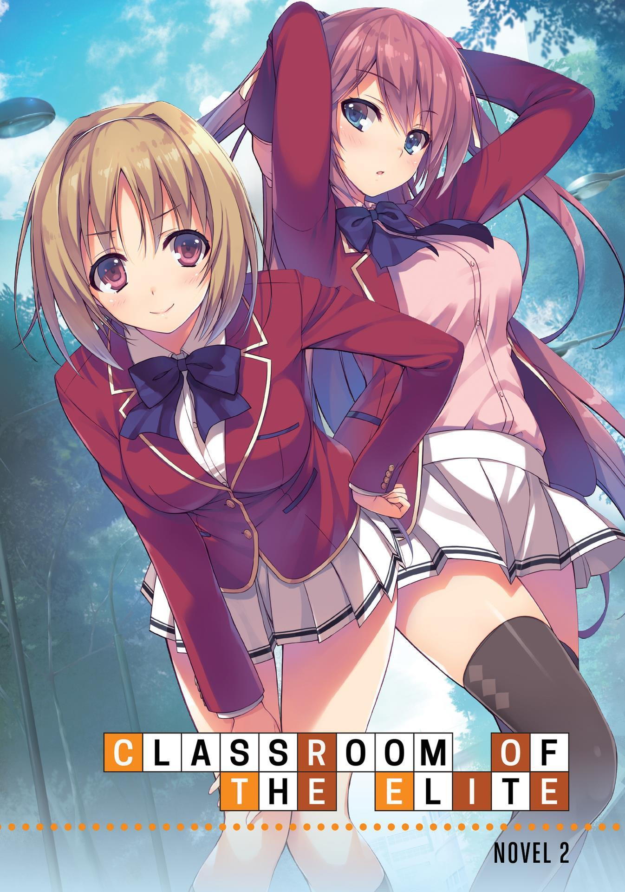
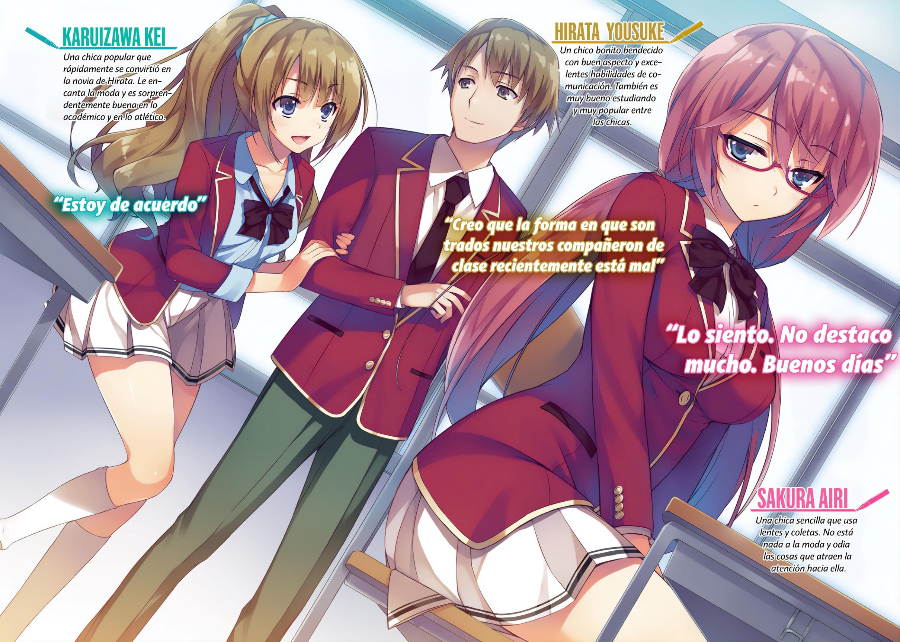
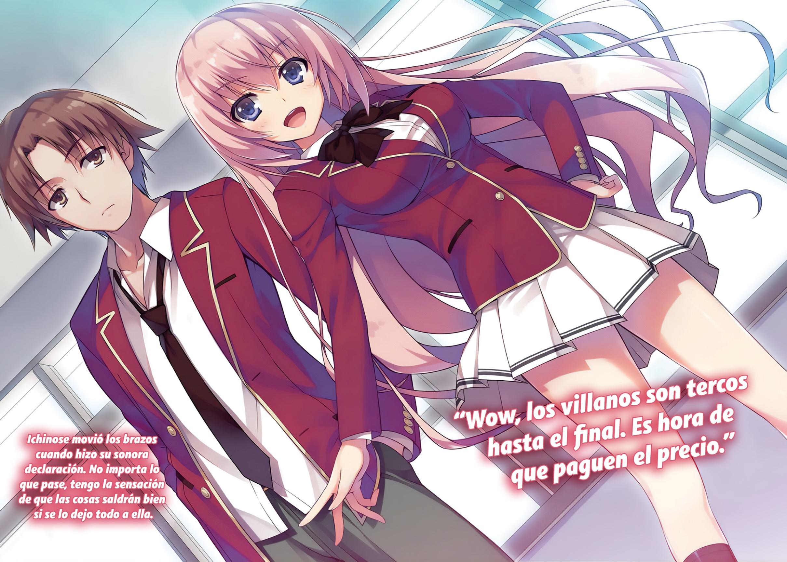
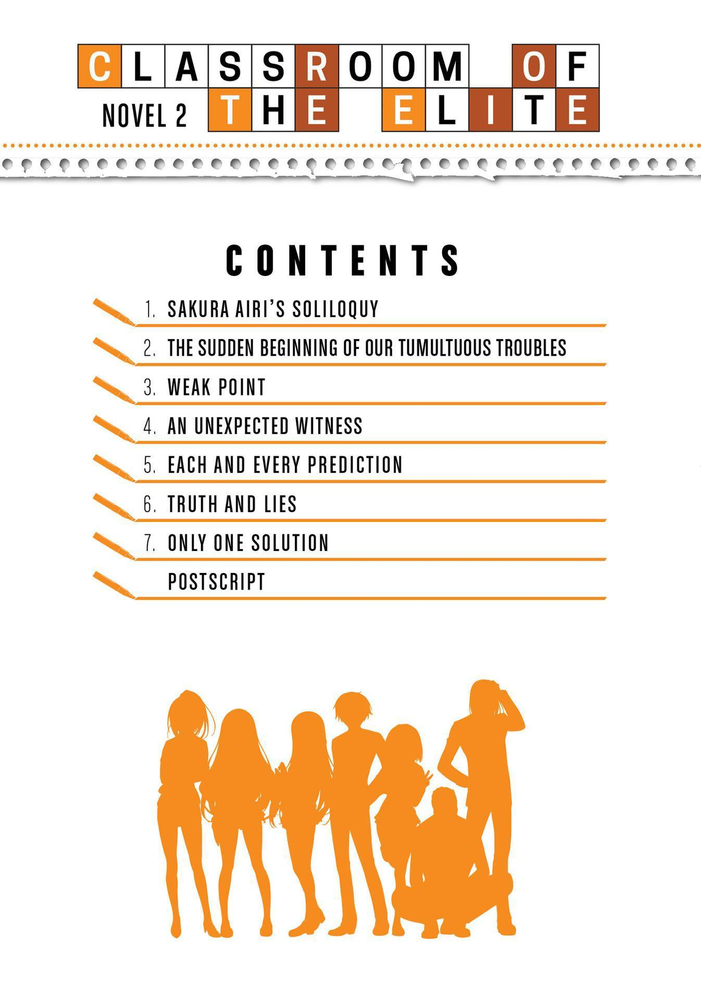
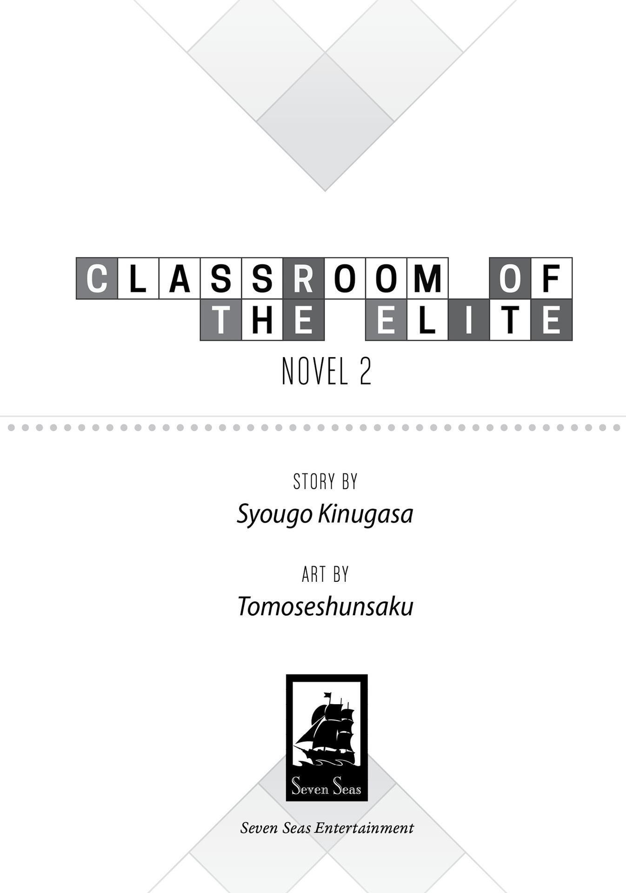
GLADHEIM
TRANSLATIONS
Youkoso Jitsuryoku Shijou Shugi no Kyoushitsu e Volumen 2
El Monólogo de Sakura Airi
No sé cómo interactuar con otras personas. Soy mala hablando mientras hago contacto visual. Soy horrible con las multitudes. No recuerdo cómo o cuándo me volví tan inútil.
Sin embargo, hay una cosa que sí sé con certeza y es que una persona no puede vivir completamente aislada. Por mucho que ame mi soledad, no puedo quedarme totalmente sola. Así que, se me ocurrió una solución. Adoptaría una cara falsa y escondería mi verdadero yo. Entonces, no sería completamente honesta, pero podría ser una versión de mí misma. Podría seguir viviendo en este oscuro y solitario mundo.
El mundo no es del todo hermoso. Todos lo saben, pero en sus corazones aún desean ese lugar perfecto e idílico. Un poco de contradicción.
No me importa quién me responda, pero necesito saberlo. ¿Todos los demás ponen una fachada, como yo? ¿O la mayoría de la gente muestra su verdadero yo al mundo exterior? Como no puedo relacionarme con la gente, supongo que no hay manera de encontrar la respuesta. Por lo tanto, permanezco sola.
Estoy bien sola.
Estoy bien con estar sola.
Yo…
Quiero relacionarme con alguien de todo corazón.
Y así seguiré viviendo tranquilamente, con los ojos hacia abajo. Sola.
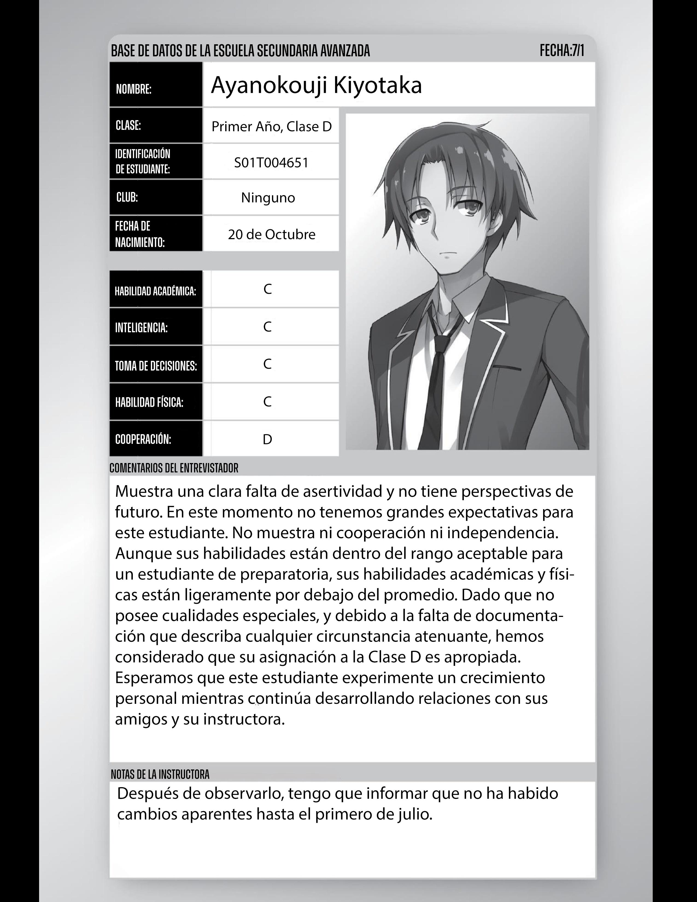
EL REPENTINO COMIENZO DE NUESTROS TUMULTUOSOS PROBLEMAS
El momento no pudo ser peor.
Cuando buscaba un lugar para tomar una buena selfie, me tropecé con algo.
Hasta cierto famoso y diminuto detective habría aguantado la respiración al presenciar una situación tan tensa.
Todo empezó hace unos diez segundos. Alguien hizo un comentario trivial, que molestó al otro. Eso condujo a insultos crueles, que se convirtieron en una pelea a golpes. No, una "pelea" no era la manera correcta de decirlo. Los otros tres estudiantes masculinos yacían en el suelo, retorciéndose de dolor. Un chico pelirrojo estaba sobre ellos, mirando hacia abajo, en señal de victoria. Fue una situación totalmente desigual.
Su puño derecho estaba cubierto con la sangre de los estudiantes que había golpeado. Esta fue la primera pelea que presencié. En la primaria vi a los niños pelearse en clase, tirar de la ropa y pellizcar los brazos. Esto fue diferente. Podía sentir la tensión en el aire.
Aunque estaba aterrorizada, me puse a capturar la escena con mi cámara. El obturador no hacía ruido. Después de tomar las fotos, me pregunté qué estaba haciendo. No podía pensar claramente en mi estado aterrorizado.
Intenté escapar rápidamente. Sin embargo, mi cerebro ya no funcionaba correctamente. Mis piernas no obedecían la orden de moverse, como si estuviera paralizada.
—Je, je, así que. ¿Realmente crees que este es el final, Sudou?
A pesar de que apenas podía moverse, uno de los estudiantes masculinos en el suelo intentó burlarse de Sudou.
—¿Quieres hacerme reír? Te encuentras en el peor estado posible.
Quieres ir por otra ronda, ¿eh? La próxima vez no me contendré.
Sudou-kun agarró el cuello del chico golpeado y lo acercó un poco. Estaban cara a cara ahora, a sólo unos centímetros de distancia. Sudou parecía que iba a matar y luego devorar a su oponente, lo que era tan abrumador que el muchacho derrotado miró hacia otro lado.
—¿Tienes miedo? ¿Realmente pensaste que me ganarías si tenías más gente?
Sudou-kun resopló, dejó caer al estudiante, cogió su mochila, y luego se dio la vuelta y se alejó como si los tres derrotados no le interesaran en lo más mínimo.
Mi ritmo cardíaco se disparó. Bueno, eso fue natural. Sudou-kun se dirigía a mi escondite. Mis potenciales rutas de escape de este edificio eran limitadas.
Tuve la idea de bajar la escalera que usé para subir aquí. Sin embargo, todavía no podía moverme, y mi oportunidad se estaba agotando. Escuché que cuando alguien estaba involucrado en un caso así su cuerpo se bloqueaba, exactamente como ocurría ahora.
—Qué pérdida de tiempo. Cansándome después del entrenamiento. No me fastidien —dijo Sudou-kun.
La distancia entre nosotros era cada vez menor. Estaba a pocos metros de distancia.
—Tú eres el que se va a arrepentir de esto más tarde, Sudou.
Las palabras del chico detuvieron a Sudou-kun en seco.
—Nada es más patético que un mal perdedor. No importa cuántas veces vengas contra mí, no ganarás.
No estaba bromeando. Claramente tenía la confianza para respaldar lo que dijo.
Después de todo, Sudou-kun salió victorioso e ileso de una pelea de tres contra uno.
Mañana es primero de julio, pero dado lo mucho que estoy sudando, se podría pensar que el verano ya está aquí. Me quedé completamente inmóvil en mi escondite. Sudor cayendo por mi nuca. Decidí irme con calma, en silencio y sin miedo. Odiaría que alguien me descubriera y me metiera en este lío. Si eso
ocurriera, pondría una nube oscura sobre mi vida escolar, que de otra manera sería pacífica.
Dejé la escena rápida y cuidadosamente.
—¿Hay alguien ahí?
Sudou-kun, sintiendo mi movimiento, miró hacia donde había estado momentos antes. Sin embargo, escapé con éxito por muy poco. Si me hubiera retrasado dos segundos, me habría visto.
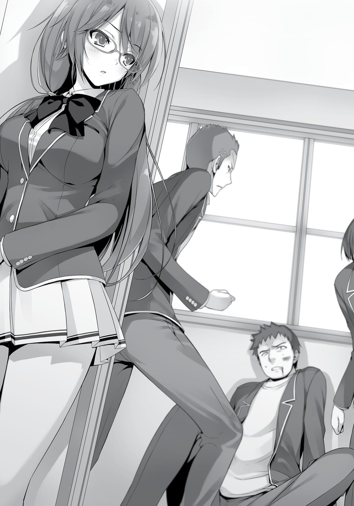
PARTE 1
Las mañanas en la clase D eran siempre animadas, porque la mayoría de los estudiantes no eran muy estudiosos. Hoy eran aún más estridentes de lo habitual. La razón era obvia. Estábamos a punto de conseguir puntos por primera vez desde que llegamos a esta escuela.
Mi escuela, la "Tokyo Metropolitan Advanced Nurturing High School", ha adoptado un sistema sin precedentes conocido como el Sistema de Puntos S. Lo explicaré en un momento.
Saqué mi teléfono proporcionado por la escuela, inicié la aplicación escolar preinstalada y me conecté usando mi identificación de estudiante y contraseña.
A continuación, seleccioné la opción "Consulta de saldo" del menú. Desde aquí se pueden hacer muchas cosas. Puedes revisar tu balance personal, o puedes ver cuántos puntos tiene la clase. También hay una función que te permite enviar puntos a otro estudiante.
Hay dos tipos de puntos en la lista. Uno de ellos está marcado con una "cl" al final, que es la abreviatura de "clase". A estos también se les conoce como
"puntos de clase", es decir, no puntos que un alumno posee individualmente, sino puntos que la clase ha acumulado en su conjunto. La clase D tenía cero puntos de clase desde junio. Sin puntos en absoluto. Los otros puntos estaban marcados con una "pr" al final, que significaba "privado". Estos son nuestros puntos individuales.
El primer día de cada mes, multiplicaban los puntos cl, o puntos de clase, por 100, y luego depositaban esa cantidad en nuestras cuentas privadas de puntos.
Utilizamos estos puntos privados para comprar las necesidades diarias, comida e incluso electrodomésticos. En esta escuela, los puntos son la moneda. Son muy importantes.
Si no tienes puntos privados, te ves obligado a vivir el día a día sin gastar dinero.
No se puede usar dinero real en ninguna parte del campus. Debido a que la Clase D no tenía puntos, no recibimos ningún punto privado durante el mes, y por lo tanto tuvimos que arreglárnoslas sin efectivo.
—Buenos días a todos. Hoy parecen más inquietos de lo normal.
Chabashira-sensei entró en el aula mientras sonaba la campana del inicio de clases.
—¡Sae-chan-sensei! ¿Tenemos cero puntos otra vez este mes? Cuando revisé esta mañana, ¡no vi ni un solo punto depositado en mi cuenta!
—Oh, ¿así que por eso están tan inquietos?
—¡Trabajamos hasta la muerte el mes pasado! Pasamos el examen, así que, ¿por qué seguimos en cero? ¡Nadie ha llegado tarde o se ha ausentado, y tampoco han hablado en clase!
—No saques conclusiones precipitadas. Escucha lo que tengo que decir primero. Tienes razón, Ike. Todos ustedes han trabajado más duro que nunca. Reconozco eso. Naturalmente, la escuela entiende muy bien cómo se sienten todos.
Después de ser reprendido por la maestra, Ike cerró la boca y se sentó.
—Entonces, bien. Sin más preámbulos, aquí están los totales de puntos de este mes.
Puso un papel en el pizarrón que enumeraba los puntos, comenzando con la clase A en la parte superior. Excluyendo la clase D, todas las demás clases tenían casi 100 puntos más que el mes pasado. La clase A se situaba ahora con 1004 puntos, ligeramente por encima de donde todos habían empezado cuando fuimos admitidos en la escuela.
—Esto no es bueno. ¿Han encontrado una forma de aumentar su puntaje total?
Mi vecina, Horikita Suzune, estaba concentrada únicamente en las otras clases.
Sin embargo, a Ike y a la mayoría de los otros estudiantes de la clase D no les importaban mucho los puntos de las otras clases. La pregunta clave para ellos era si habíamos recibido más puntos de clase. Lo que estaba escrito al lado de la clase D era nuestro total de puntos: 87 puntos.
—¿Eh? Espera, ¿87? ¿Eso significa que realmente subimos? ¡Yahoo!
Ike saltó entusiasmado en el momento en que vio nuestro puntaje.
—Es demasiado pronto para celebrar. Todas las demás clases vieron un aumento similar en sus puntos. No cerramos la distancia en absoluto. Esto podría ser sólo una recompensa que los estudiantes de primer año reciben por pasar el semestre. Cada clase ha ganado al menos 100 puntos.
—Así que eso fue lo que pasó. Me pareció extraño que nos dieran puntos tan rápido.
Horikita, que esperaba llegar a la Clase A, no parecía satisfecha con el resultado.
No estaba sonriendo.
—¿Estás decepcionada porque la brecha entre las clases se ha ampliado, Horikita? —Le pregunté.
—No, no es eso. Nos las arreglamos para conseguir algo esta vez.
—¿Conseguir algo? ¿Conseguir qué? —preguntó Ike, ahora de pie.
Horikita, después de atraer la atención de todos, volvió a guardar silencio.
Era como si no quisiera dar una respuesta. El líder de la clase, Hirata Yousuke, respondió por ella.
—Creo que Horikita-san se refiere a las deducciones en las que incurrimos durante los meses de abril y mayo. En otras palabras, no vimos una reducción de puntos por hablar en clase o por llegar tarde.
El agudo y perspicaz Hirata no perdió ni un instante. Espléndido.
—Ah, ¿es así? Supongo que aunque obtuviéramos 100 puntos, muchas deducciones nos habrían bajado a cero —Ike, después de esta simple explicación, levantó los brazos en señal de victoria—. Espera. Pero entonces, ¿por qué no obtuvimos ningún punto?
Volvió a plantear su pregunta original a Chabashira-sensei. Fue realmente extraño que no hubiéramos recibido 8700 puntos privados en nuestras cuentas.
—Bueno, esta vez hubo un pequeño problema. La distribución de los puntos de los estudiantes de primer año se ha retrasado. Lo siento, pero tendrán que esperar un poco más —dijo.
—¿Eh? ¿En serio? Si esto es culpa de la escuela, ¿no deberíamos recibir algún tipo de bonificación como compensación?
Los estudiantes refunfuñaron con descontento. Una vez que se enteraron de que iban a obtener sus puntos, su actitud cambió drásticamente. Hay una diferencia significativa entre 87 puntos y ningún punto.
—No me culpes a mí. Esta fue una decisión de la escuela, no hay nada que pueda hacer al respecto. Una vez resuelto el problema, recibirás tus puntos. Si todavía quedan puntos, eso es.
Había un significado más profundo detrás de las palabras de Chabashira-sensei.
PARTE 2
Una vez que llegó la hora del almuerzo, todos se fueron a comer. Últimamente, he llegado a creer que comer con amigos es en realidad el aspecto más difícil de la vida estudiantil. Por ejemplo, Kushida Kikyou. Es muy popular y tiene muchos amigos, tanto chicos como chicas. Recibe invitaciones personales, junto con invitaciones constantes por teléfono y por correo electrónico. Aunque es incapaz de responder a todo el mundo y a veces tiene que rechazar a la gente, cuando come con amigos parece que tiene una vida real.
Por otro lado, hay gente como Ike y Yamauchi, que no son muy populares entre las chicas. Comen todos los días con su grupo de amigos, entre ellos Sudou y Hondou.
Mientras tanto, yo no pertenezco a ningún lugar.
Diría que soy amigo de Kushida. También soy amigo de Ike y Yamauchi. Aunque como con ellos de vez en cuando, no diría que es algo frecuente. En general, es el tipo de relación en la que la otra persona pregunta: "¿Quieres almorzar?" o
"¿Estás libre después de clase?".
No me importó mucho al principio del año escolar. Antes de hacer amigos, era natural que estuviera solo. Sin embargo, ahora experimentaba un fenómeno extraño: tenía amigos, pero seguía estando solo. Era una experiencia incómoda.
Si me ausentara un día en que formamos grupos para una excursión escolar, posiblemente me quedaría fuera. ¿Todos me consideraban un amigo de bajo nivel? ¿O estaba nuestra amistad en mi cabeza? Esos eran mis pensamientos.
Nervioso y ansioso, miré sin querer a Ike y a los demás. Estoy aquí, chicos. Está bien que me inviten. Mi mirada se llenó de egoísmo y anticipación. Estaba inundado por sentimientos de autodesprecio. Recordándome a mí mismo que debería saber cuándo rendirme, aparté la mirada. Escenas patéticas como ésta se repetían a diario.
—Aún no estás acostumbrado. Eres tan patético como siempre, Ayanokouji-kun.
Mi vecina me miró con frialdad.
—Pareces completamente acostumbrada a la soledad —respondí.
—Estoy muy bien, gracias.
Quería sonar sarcástico, pero Horikita lo tomó como algo sincero. La mayoría de nuestros compañeros de clase ya habían formado sus grupos, pero algunos estudiantes seguían estando solos. Eso me alivió un poco. Horikita no era la única solitaria; Kouenji también pasaba la mayor parte de su tiempo solo. Al empezar aquí disfrutó de la compañía de chicas de otras clases y grados. Sin embargo, una vez que se le acabaron los puntos, comenzó a pasar la mayor parte de su tiempo en el aula.
Era el único heredero del conglomerado Kouenji, una de las corporaciones más grandes de Japón. No amaba la soledad, sino más bien, se amaba a sí mismo y se preocupaba poco por los demás. Respeto que no parezca molesto en absoluto por estar solo. En este momento está completamente perdido examinando su cara en un espejo de mano, su rutina diaria.
Aparte de él, hay una chica tranquila con lentes. En un tiempo Ike hizo un escándalo sobre lo grandes que son sus pechos, pero debido a que se la considera ordinaria, todos perdieron rápidamente el interés. Siempre está sola y nunca la he visto hablar con nadie. El otro día, estaba comiendo sola, encorvada
sobre su caja de bento. Es una de las pocas estudiantes que se preparan sus propios almuerzos.
En ese momento, mi vecina sacó una caja de madera de su mochila y la abrió.
Últimamente, también Horikita ha estado preparando sus propios almuerzos en lugar de ir a la cafetería.
—¿No cuesta y requiere mucho esfuerzo hacer tu propio almuerzo? —Le pregunté.
Aunque no eran exactamente de alta calidad, las comidas gratuitas que se ofrecían en la cafetería de la escuela eran una forma de ayuda para los estudiantes que habían agotado todos sus puntos. No había ningún mérito en un almuerzo casero, que consumía tiempo y puntos.
—No estoy segura de eso. El supermercado de la escuela proporciona ingredientes gratis.
—Espera, ¿así que hiciste esto con cosas gratis?
Horikita simplemente abrió su bento en respuesta. No tenía mucho en cuanto a carne o comidas fritas, pero parecía sabroso.
—No me digas. No sólo eres una brillante estudiante, ¿también eres una consumada cocinera? Eso no parece encajar con tu personalidad.
—Cualquiera puede cocinar buscando una receta en un libro o en Internet.
Nuestros dormitorios vienen equipados con todas las herramientas necesarias —Horikita no desperdició más palabras tratando de impresionarme con su genialidad. Simplemente sacó sus palillos. Supongo que todo le parecía tan obvio.
—¿Pero por qué decidiste tomarte la molestia de hacer tu almuerzo? —Le pregunté.
—La cafetería es ruidosa. Es mucho más relajante comer aquí, ¿no crees?
Hacia el comienzo del año, muchos de los estudiantes iban a la cafetería a comprar pan o almuerzos, pero ante la escasez de puntos, un abrumador
número de estudiantes se llevaban el juego de comida gratis. Mirando a mí alrededor, pude ver que sólo unos pocos estudiantes permanecían en el aula.
¿Era este el entorno preferido de Horikita? ¿Uno donde Ike y los otros no están?
—¿Ya echo de menos montar en la gran ola de estudiantes que va a la cafetería?
—Siempre estás mirando al océano, pero no tienes una tabla de surf. Ni siquiera tienes la determinación de montar en la ola, ¿verdad? ¿Y hablas de echarlo de menos? Eres muy engreído.
Ojalá tuviera una respuesta para eso, pero no podía discutir. Sólo quería que me diera un respiro.
PARTE 3
A diferencia del almuerzo, mi tiempo libre después de clases era sorprendentemente agradable, ya que no tenía que preocuparme por interactuar con nadie. Incluso si volvía directamente a los dormitorios, no me destacaba en absoluto, ya que otros estudiantes también lo hacían. Había algo de mérito en poder desaparecer como un ninja entre la multitud. Si me quedaba en la parte trasera de algún grupo de amigos, podía fingir que era uno de ellos.
—Qué lamentable.
Estaba bastante satisfecho conmigo mismo por ser capaz de fingir tan hábilmente que tenía amigos, pero realmente no había nadie en esta escuela que se preocupara por mis pretensiones.
—Sudou. Tengo que hablarte de algo. Ven a la sala de profesores —llamó Chabashira-sensei a Sudou, que intentaba escapar precipitadamente del aula.
—¿Eh? ¿Qué desea de mí? Ahora tengo práctica de baloncesto —Sudou abrió lánguidamente su mochila para mostrar el uniforme deportivo que llevaba dentro.
—Ya hablé con el asesor. No tienes que venir conmigo si no quieres, pero enfrentarás las consecuencias más tarde —Las palabras amenazadoras de Chabashira-sensei pusieron a Sudou un poco nervioso.
—¿Qué? ¿Terminará rápido?
—Todo depende de ti. Cuanto más tiempo permanezcas ahí, más tiempo perderás.
Parecía que no tenía otra opción que ir con ella. Sudou chasqueó su lengua, y siguió a Chabashira-sensei fuera del salón de clases.
—Pensé que quizá habría cambiado, pero supongo que Sudou es el mismo de siempre. ¿No hubiera sido mejor que lo echaran?
No sabía quién estaba hablando, pero pude oír a algunas personas en nuestra clase murmurando entre dientes. Pensaba que el examen parcial había unido a nuestra clase como un grupo, pero debe haber sido mi imaginación. Es una lástima.
—¿Tú también lo crees? ¿Que habría sido mejor si Sudou-kun hubiera sido expulsado?
Mientras hablaba, Horikita comenzó a poner sus libros de texto en su mochila.
No había muchos estudiantes que llevaran sus libros de texto a clase todos los días. A veces pensaba que era demasiado seria.
—Realmente no lo creo. ¿Y tú, Horikita? Fuiste la única persona que le echó una mano a Sudou.
—Hmm. Bueno, en realidad todavía no sabemos si nuestros puntos aumentarán como clase —contestó ella, desinteresada.
Cuando Sudou se enfrentó a la expulsión durante el examen parcial, Horikita lo ayudó bajando a propósito su calificación y gastando sus puntos para conseguirle una nota aprobatoria. Nunca la imaginé capaz de hacer algo así.
Nos levantamos de nuestros asientos al mismo tiempo, y salimos del salón de clases juntos. Ocasionalmente volvíamos juntos a los dormitorios, aunque no podía recordar cuándo había comenzado este ritual. Como no almorzábamos
juntos o pasábamos el rato casualmente, me pareció extraño. Por otra parte, teníamos el mismo camino de vuelta a los dormitorios.
Probablemente por eso caminamos juntos.
—Estoy un poco preocupada por lo que dijo Chabashira-sensei esta mañana —dijo Horikita.
—¿Sobre el retraso de nuestros puntos?
—Sí. Dijo que había problemas, ¿pero quiso decir que era un problema para la escuela o para nosotros, los estudiantes? Si es lo último, entonces...
—Estás pensando demasiado. No hemos causado ningún problema real últimamente. Incluso ella misma lo dijo. Dudo que la clase D sea la única que no tenga puntos. Es simplemente la escuela la que tiene un problema.
Aunque hubiera un motivo de preocupación, aunque sólo se hubieran retrasado los pagos de los estudiantes de primer año, la clase D no era el problema.
Probablemente.
—Espero que ese sea el caso. Los problemas afectan directamente a nuestros puntos.
Horikita pasaba cada día pensando en cómo aumentar nuestros puntos. No le interesaban los puntos privados, por supuesto, sino los de la clase. Quiere llegar a la clase A. Yo no diría que es imposible, pero ahora mismo es una posibilidad muy remota.
Sin embargo, todavía tenemos esperanza. Si Horikita descubre un método fiable para aumentar nuestros puntos, sería una gran ayuda para la Clase D.
Además, nuestros compañeros confiarían más en Horikita, y haría amigos. Era una situación en la que todos salían ganando.
—Eso me recuerda. Deberías unirte al chat de vez en cuando. Eres la única que no ha estado al día en mucho tiempo.
Saqué mi teléfono y abrí la aplicación de chat grupal. Habíamos invitado a Horikita a unirse después del examen parcial. Kushida dudaba de si Horikita
participaría realmente, ya que odiaba hablar con los demás. A pesar de los intentos de hacer amistad, Horikita no participaba en absoluto.
—No me interesa lo más mínimo. Además, mantengo mis notificaciones desactivadas.
—¿Es eso cierto?
Bueno, al parecer no tenía la intención de participar. Seguramente no borró la aplicación porque enviaría una notificación a Kushida y al resto del grupo si lo hacía. Horikita era libre de decidir por sí misma si quería participar, así que no insistí más en el asunto. No estaba realmente calificado para juzgar.
—Has hablado bastante últimamente, Ayanokouji-kun.
—¿En serio? Pensé que siempre había sido así.
—Es una ligera diferencia, pero has cambiado.
Aunque no tenía la intención de cambiar, es probable que haya sufrido una ligera transformación desde que empecé a estudiar aquí. Especialmente con cómo me relacionaba con Horikita.... Bueno, yo no diría que nos llevamos bien, pero realmente no me sentía incómodo cerca de ella. Si fuera otra chica, no habría podido conversar normalmente. Me pondría nervioso e perturbado.
Por eso sólo hablaba con gente cercana a mí. Más que nada, sin embargo, estaba muy agradecido por una relación en la que el silencio no empeoraba el estado de ánimo.
—¿Algo te hizo cambiar?
—No lo sé. Bueno, si tuviera que pensar en una razón, supongo que me acostumbré a ir a la escuela, y luego hice algunos amigos. Además, Kushida fue una gran influencia.
Cuando estaba sólo con los chicos, a veces apenas hablábamos, o no hablábamos en absoluto. Cuando Kushida está cerca, la gente siempre habla, y el ambiente en común se ilumina.
—Parece que te llevas muy bien con Kushida. ¿No te molesta, especialmente saber lo de su otra cara?
—Admito que me sorprendió cuando dijo que te odiaba, Horikita. Pero creo que es natural que todos tengan gente que les agrade y que odien. No tiene sentido preocuparse por ello. Quiero decir, sigues fingiendo que te llevas bien con Kushida a pesar de que dijo que te odia, ¿verdad?
—Hmm. Bueno, puede que tengas razón. Es verdad que también te odio, Ayanokouji-kun, y sin embargo hablo contigo normalmente. Entonces, no me importa.
—Oye...
¿Qué diablos...? Me afectó mucho cuando lo dijo así de directo.
—Eso es lo que quiero decir. Si alguien dice que odia a otra persona, está bien. Pero si alguien dice que te odia, ¿no te sientes un poco mal?
—¿Me estabas poniendo a prueba?
Horikita comenzó a arreglarse el pelo de una manera que se veía más bien deliberado.
—No tengo ninguna intención de interponerme en su camino, pero Kushida-san y yo somos como el aceite y el agua. Creo que es mejor no hacerlo, no relacionarme con ella.
En otras palabras, no se uniría a un grupo de chat con Kushida en él.
—¿Por qué te odia? —Le pregunté.
No habían tenido mucho contacto desde que empezó la escuela. ¿Cuándo empezó a odiar a Horikita? Quiero decir, Kushida dijo que su objetivo era llevarse bien con todos en clase.
—¿Quién sabe? Probablemente no sabe mucho de mí.
Ese podría ser el caso. Pero aún así, sentí que había algo entre Kushida y Horikita.
—Si tienes tanta curiosidad, ¿por qué no se lo preguntas tú mismo?
Directamente —Preguntó Horikita.
Eso era imposible. Kushida Kikyou suele ser una chica dulce y angelical, pero yo ya había vislumbrado un lado diferente de ella. Era difícil de imaginar cuando se veía su sonrisa amable o se escuchaba su tono agradable, pero recordaba los comentarios despiadados que escupía. Horikita no sabía nada de eso.
—No es necesario. Estoy bien con la Kushida que tenemos ahora —dije.
—Lo que acabas de decir es realmente asqueroso, ¿lo sabes?
—Sí.
A pesar de haber dicho esas palabras, me sentí asqueado de mí mismo.
PARTE 4
Después de una buena cena en la cafetería del dormitorio, volví a mi habitación.
Allí, saqué mi teléfono y revisé mi saldo restante. El total de mi cuenta aparece en la pantalla. Vi que tenía 8.320 puntos privados. No había cambiado desde esta mañana. Teniendo en cuenta que comenzamos el año escolar con 100.000
puntos, esta era una cantidad increíblemente baja. Casi me arruiné para comprar el punto que Sudou necesitaba para pasar.
—Sería estupendo que obtuviéramos esos 87 puntos —murmuré.
Convertidos, los puntos ascendían a unos 8.700 yenes. Aunque eso no era una mejora gigantesca, era mucho dinero.
Mientras jugueteaba con mi teléfono, mi puerta se abrió de repente.
—¡Sálvame, Ayanokouji! —Sudou estaba allí de pie, con la cara completamente roja.
—¿Por qué estás aquí? En realidad, olvídalo, ¿cómo entraste?
Cerré mi puerta con llave cuando volví a mi habitación. No lo había olvidado, porque lo hice un hábito. ¿Sudou se había estrellado contra la pared o algo así?
Sólo para asegurarme, revisé mi puerta para ver si no estaba rota. Se veía completamente bien.
—Esta es la habitación donde se reúne nuestro grupo, ¿no? Ike y el resto de nosotros hicimos duplicados de la llave. ¿No lo sabías? Todos los demás en el grupo también tienen una llave.
Hizo girar la tarjeta en su mano.
—Acabo de enterarme de este hecho extremadamente importante —me quejé. Parece que mi habitación ya no es segura. La gente puede irrumpir cuando quiera.
—En todo caso, olvídate de eso ahora mismo. ¡Estoy en serios problemas!
Tienes que ayudarme —exclamó.
—No, no puedo olvidarlo. Entrega la llave.
—¿Eh? ¿Por qué? Compré esto con mis puntos. Es mía.
Qué argumento tan ilógico. Aunque ignores que cometes un crimen, sigue siendo un crimen. La amistad no significa automáticamente permitir que la gente haga lo que quiera.
—Si necesitas consejo o estás preocupado por algo, ¿por qué no le preguntas a Ike o a Yamauchi?
—No puedo preguntarles. Son estúpidos —Sudou se desplomó al suelo con un ruido sordo—. Compra una alfombra, ¿quieres? Me duele el trasero
—murmuró.
No tenía puntos que desperdiciar en diseño de interiores. Aunque mi habitación parecía haber sido nombrada como el lugar de reunión de nuestro grupo, no nos habíamos reunido ni una vez desde la fiesta. Aunque hubiera comprado una alfombra, habría sido el único sentado en ella. Sólo imaginarlo era surrealista.
Cuando me levanté para hacer un poco de té, sonó el timbre de la puerta.
Kushida, la Madona de la Clase D, asomó su cabeza por la entrada. Se veía tan linda como siempre. Vio a Sudou, que aún estaba sentado en mi piso.
—Oh, Sudou-kun ya está aquí —dijo ella.
—Oye, Kushida, quiero preguntarte algo. ¿De casualidad también tienes un duplicado de la llave de mi habitación?
—Sí, lo tengo. Eso es para que podamos encontrarnos aquí.... Espera, ¿no sabías eso, Ayanokouji-kun?
Sacó una tarjeta de su mochila y me la mostró. No noté ninguna diferencia entre su llave y la mía. Eran exactamente iguales. Aparentemente Kushida pensó que yo había dado permiso para hacer estas llaves.
—Umm, bueno... ¿debería devolvértela?
Me entregó su llave disculpándose.
—No, está bien. No tiene sentido si eres la única que devuelve una llave.
Parece que Sudou no quiere entregar la suya.
¿No estaba bien que Kushida tuviera una llave? Supongo que en la parte delirante de mi cerebro, darle una llave me hizo sentir como si fuera mi novia.
Los hombres ciertamente son criaturas retorcidas.
—Ya que Kushida también vino, ¿podemos pasar al tema que nos ocupa?
—preguntó Sudou.
—De acuerdo, supongo que no hay forma de evitarlo. Entonces, ¿de qué necesitas hablar?
No era como si pudiera alejarlos bruscamente. Sudou empezó a hablar lentamente, con una expresión dócil.
—¿Saben que la profesora de la clase me llamó hoy? Bueno, es... Uh... La verdad es que... puedo ser suspendido. Durante mucho tiempo, en realidad.
—¿Suspendido?
Eso fue inesperado. En comparación con lo que había hecho a principios de año, Sudou se había comportado bastante bien últimamente. No dormía ni hablaba en clase y le iba bien en las actividades de su club.
—Por casualidad, ¿Insultaste a Chabashira-sensei? —Le pregunté.
Sudou se disgustó cuando Chabashira-sensei le impidió ir a la práctica de baloncesto. Con eso en mente, podría haber dicho algo imprudente.
—No es eso.
—¿Entonces qué? ¿La agarraste por el cuello y amenazaste con matarla o algo así?
—Tampoco es eso.
Otra negativa. No me lo esperaba.
—Probablemente es peor de lo que piensas...
Mis dos primeras suposiciones habían sido bastante serias, así que si era algo peor, entonces....
—Oh, lo tengo, Ayanokouji-kun. ¡Golpeó ferozmente a Chabashira-sensei y luego le escupió! —Gritó Kushida.
—Eso es horrible. Quiero decir, tus ideas descabelladas son demasiado horribles, Kushida!
—¡Ja, ja, ja, sólo estoy bromeando! Sudou-kun no iría tan lejos.
Aunque esperaba que Sudou negara inmediatamente lo que ella decía, parecía sorprendido por la broma de Kushida. Eso era una prueba de que algo estaba realmente mal.
—¿Qué pasó? —Le pregunté.
—A decir verdad, ayer le di una paliza a unos chicos de la clase C.
Entonces, me suspendieron. La suspensión es mi castigo.
Kushida también se sorprendió con las palabras de Sudou. Me echó una mirada.
No pude procesar inmediatamente el hecho de que Sudou se haya vuelto a meter en problemas.
—¿Les diste una paliza? Entonces, ¿por qué hiciste eso? —Le pregunté.
—Para que lo sepas, no fue mi culpa, ¿de acuerdo? Los idiotas de la clase C empezaron y trataron de pelear conmigo. Simplemente respondí a la situación y le di la vuelta a la situación. Entonces dijeron que yo empecé la pelea. Son un montón de mentirosos.
Sudou aún no había aclarado sus pensamientos. Aunque entendía lo esencial de lo que decía, todavía no sabía los detalles de la pelea ni cómo había empezado.
—Espera un momento, Sudou-kun. ¿Puedes por favor empezar de nuevo, e ir un poco más despacio? —Kushida lo animó a calmarse e intentó que nos contara la historia.
—Lo siento, supongo que me salté hasta el final y dejé muchas cosas fuera —Sudou respiró hondo y volvió a empezar.
—Estaba hablando con el consejero del club sobre ser titular en el torneo de verano.
Había oído que Sudou era bueno en baloncesto, pero no esperaba que se convirtiera en titular.
—¿Un jugador titular? ¡Eso es increíble, Sudou-kun! ¡Felicidades!
—Bueno, nada está seguro todavía. Por ahora es sólo una posibilidad.
—De todas formas, eso es increíble. Acabamos de empezar la escuela.
—Sí, supongo. En realidad, fui el único estudiante de primer año nominado para ser jugador titular. Aun así, no es como si fuera definitivo. De todos modos, cuando volvía al dormitorio, Komiya y Kondou, que están conmigo en el club de baloncesto, me llamaron al edificio especial. Dijeron que querían hablar conmigo sobre algo. Podría haberlos ignorado, pero de vez en cuando hablo con esos dos tipos durante la práctica. Pensé que sería mejor escucharlos. Así que, por supuesto, fui a reunirme con ellos, ¿bien?
Entonces, estaba este tipo Ishizaki allí, esperándome. Es amigo de Komiya y Kondou. Dijeron que no podían soportar que alguien como yo de la clase D fuera elegido como titular. Me amenazaron y me dijeron que dejara el
baloncesto o me causaría mucho dolor en el futuro. Me negué a renunciar, les di una paliza y ahora estoy aquí.
Fue una explicación bastante apresurada, pero entendí lo esencial. Al parecer, Sudou quedó satisfecho con su historia.
—Entonces te describieron como el malo, Sudou-kun.
Sudou asintió, una mirada exasperada todavía en su cara. Así que los estudiantes de la clase C empezaron todo el asunto, y cuando su intento de amenazar a Sudou fracasó, recurrieron a la fuerza. En otras palabras, un acto de violencia. Sin embargo, Sudou es un experimentado peleador, así que se las arregló para aplastarlos completamente sin necesidad de sudar. Por supuesto, estaban heridos. Como no había pruebas de lo que pasó, mintieron al día siguiente y dijeron a las autoridades escolares que Sudou los había golpeado sin razón alguna.
—Si la clase C empezó esto, entonces Sudou-kun no tiene la culpa.
—¿Verdad? En serio, no lo entiendo. ¡Tampoco puedo creer a ese profesor!
—Deberíamos decírselo a Chabashira-sensei mañana. Deberíamos decirle que no fue culpa de Sudou-kun —dijo Kushida.
Las cosas seguramente no serán tan simples. Sudou ya debe haberle dicho a la escuela lo que nos acaba de decir. Pero debido a que carece de pruebas claras que apoyen su afirmación, la escuela podría decidir castigarlo.
—Sudou, ¿qué dijo la escuela cuando se enteraron de lo que pasó?
—Dijeron que me darían hasta el próximo martes para presentar pruebas.
Si no puedo hacer eso, dirán que soy culpable y me suspenderán hasta el verano. Además, toda la clase perderá puntos.
Por lo visto, la escuela decidió esperar las pruebas. Sin embargo, Sudou aparenta estar más preocupado por sus sueños sobre el baloncesto que por su suspensión, o por la pérdida de puntos de nuestra clase. Supongo que no puede soportar la idea de que su juventud se desperdicie.
—¿Qué debo hacer?
—Sudou-kun, no le mentiste a la maestra, ¿verdad? Quiero decir, parece extraño. No te creyeron aunque dijiste que no habías hecho nada malo.
¿Verdad?
Me sentí mal por Kushida. Me miró para que le dijera que sí, pero no pude responder como ella quería.
—Bueno, eso no lo sé. No creo que sea tan simple.
—¿Qué quieres decir con que no sabes? No estarás dudando de mí,
¿verdad?
—Bueno, la escuela no confía en ti, ¿verdad? No sería tan extraño que alguien de tu clase, como Kushida, por ejemplo, te apoyara incluso si estás mintiendo. Después de todo, no quieren que sus puntos bajen.
—Bueno....puede que tengas razón en eso, supongo.
Nuestros problemas actuales no se resolverían simplemente descubriendo quién los empezó. Tal vez esos tres estudiantes podrían enfrentarse a una semana de suspensión como castigo. Esos tres tipos afirmaron que los golpearon. Sin pruebas irrefutables de que Sudou no tuvo la culpa, definitivamente será castigado. Eso sólo significaba una cosa.
—Incluso si la culpa es de los demás, es muy probable que Sudou asuma parte de la culpa.
—¿Eh? ¿Por qué? Fue en legítima defensa, ¿no? ¡¿Eh?!
Sudou, claramente incapaz de entender, golpeó la mesa. Los hombros de Kushida se tensaron en respuesta.
—Lo siento, me enfadé un poco —Después de ver la expresión de miedo de Kushida, Sudou se disculpó tímidamente.
—Pero... ¿por qué Sudou-kun aún tendría parte de la culpa?
—Sudou los golpeó, pero ellos no golpearon a Sudou. Creo que eso es una gran parte de esto. En tal caso, es difícil reclamar legítima defensa. Si
te hubieran atacado con un cuchillo o un bate de metal, creo que las cosas habrían sido muy diferentes. La defensa propia significa que tienes derecho a defenderte de ataques repentinos y peligrosos contra tu persona.
Así que, no creo que podamos afirmar que esto fue en defensa propia.
¿Cuánta consideración se le daría a esta situación?
—Aunque no lo entiendo. Me enfrenté a tres personas. ¡Tres! Eso parece muy peligroso.
Seguramente tendrán en cuenta el número de personas, pero este es un caso delicado. Si la escuela está dispuesta a dar más peso al número de personas que atacaron, Sudou podría ser declarado inocente. Sin embargo, es peligroso ser optimista.
—Creo que la escuela les ofreció una prórroga porque les resultó difícil emitir un juicio en este momento.
En cuanto a la prueba que tenemos, la clave está en las heridas que Sudou les causó a los otros tres estudiantes.
—Supongo que su plan es castigar severamente a Sudou por golpearlos,
¿eh? —Dijo Kushida.
—Quienquiera que lo reporte primero tiene la ventaja. El testimonio de la víctima puede servir como prueba.
—Todavía no lo entiendo. ¡Yo soy la víctima aquí! ¡Ser suspendido no es una broma! Si me castigan por esto, olvídate de ser un jugador titular. ¡Ni siquiera podré jugar en el torneo!
Esos estudiantes de la clase C permitieron a propósito que Sudou les diera una paliza para destruirlo. Quieren destruir las posibilidades de que Sudou se convierta en titular, aunque eso signifique que tengan que hacer frente a sus propias dificultades. Eso es lo que imaginé que era su plan.
—Pidamos a esos tres estudiantes de la clase C que sean honestos. Si piensan que lo que hicieron está mal, entonces seguro que se sentirán culpables por ello. ¿Verdad?
—Esos tipos no son idiotas. No serán honestos. ¡Maldita sea, nunca los perdonaré! ¡Esos malditos don nadie!
Sudou cogió un bolígrafo de la mesa y, con un fuerte crujido, lo partió en dos.
Comprendí que su sangre estaba hirviendo, pero esa era mi pluma....
—Si tratar de explicar la situación no funciona, entonces tendremos que encontrar pruebas irrefutables —dije.
—Sí. Sería bueno que hubiera pruebas que demostraran que Sudou-kun no tiene la culpa.
Eso sería muy bueno, porque entonces nuestro sufrimiento terminaría. Sin embargo, Sudou no negó nada. Parecía como si estuviera muy pensativo.
—Aunque puede que haya algo. Esto puede ser un malentendido por mi parte, pero cuando estaba peleando con esos tipos sentí algo....extraño.
Como si alguien estuviera cerca, mirándome.
No parecía muy seguro de sí mismo.
—Entonces, ¿podría haber un testigo ocular? —Le pregunté.
—Sí, creo que sí. Sin embargo, no tengo pruebas de que alguien estuviera allí.
Un testigo ocular. Hmm. Si alguien lo hubiera visto todo, sería una gran noticia para nosotros. Sin embargo, dependiendo de cómo se desarrollaron las cosas, Sudou podría llegar a un callejón sin salida. Por ejemplo, si el testigo sólo vio las secuelas de su pelea, eso podría significar el fin de Sudou.
—¿Qué debo hacer? —preguntó.
Sudou enterró la cabeza en sus manos. Kushida rompió el pesado silencio.
—Hay dos maneras de probar tu inocencia, Sudou-kun. La primera forma es simplemente hacer que los chicos de la clase C admitan que mintieron.
Ya que no fue culpa tuya, probablemente sea mejor que lo reconozcan.
Eso es absurdamente idealista.
—Como ya dije, eso es imposible. No admitirán que mintieron —Como dijo Sudou, si confesaban que mintieron para meter a alguien más en problemas, lo más probable es que los suspendieran.
—La otra idea es encontrar al testigo del que hablaste, Sudou-kun. Si alguien vio la pelea, podríamos llegar al meollo del asunto.
Bueno, ese es nuestro único plan realista.
—Entonces, ¿cómo pretendes buscar a este testigo?
—¿Preguntando a la gente una por una? O simplemente podríamos dirigirnos a cada clase en su totalidad —dijo Kushida.
—Sería genial que alguien se presentara, pero...
Como llevábamos un buen rato hablando, empecé a hurgar en el armario. Saqué los paquetes de café instantáneo y té que había comprado en la tienda de la escuela. Aunque Sudou no era realmente un fanático del café. Después de preparar una tetera con agua caliente, puse todo sobre la mesa.
—Esto puede sonar un poco desvergonzado, pero... ¿pueden no contarle a nadie sobre esto? —Preguntó Sudou tímidamente. Tomó una taza y empezó a soplar sobre ella para enfriarla.
—¿H-huh? ¿No quieres que se lo digamos a nadie? —Preguntó Kushida.
—Si se corre la voz, definitivamente llegará al equipo de baloncesto. No quiero que eso suceda. Lo entiendes, ¿verdad?
—Sudou, incluso entonces, yo-
—Por favor, entiéndelo, Ayanokouji. Si no puedo jugar al baloncesto, no tengo nada —suplicó Sudou, poniendo sus manos sobre mis hombros.
Aunque no se corriera la voz, esto no iba a permanecer en secreto. Si la gente se enteraba de que Sudou había utilizado la violencia, lo más probable es que no lo aceptaran en el equipo.
—¿Pero los estudiantes de la clase C no hablarán de cómo Sudou-kun se comportó violentamente? Quiero decir, eso funcionaría a su favor, creo.
Eso es exactamente lo que estaba pensando. No sería extraño que hablaran entre ellos, ya que eso les ayudaría y nos haría daño. Sudou volvió a enterrar la cabeza en sus manos, como si dijera "¡¿En serio?!"
—¿Y si ya se supiera?
—No, a estas alturas es probable que sólo se esté discutiendo entre la escuela y la gente involucrada.
—¿Por qué piensas eso? —preguntó Sudou.
—Si esos tipos de la clase C hubieran querido difundir rumores, ya habríamos oído hablar de ello.
Los representantes de la escuela recibieron un informe y llamaron a Sudou después de clases. No se ha sabido nada del incidente de esta tarde. Como mínimo, la noticia no se ha difundido mucho.
—¿Crees que estamos a salvo por ahora?
¿Cuánto tiempo duraría esto? Aunque la escuela emitiera una orden de silencio, al final se correría la voz. En poco tiempo, se propagaría. Ahora mismo, lo único que podía decir con certeza era--
—Sudou-kun, creo que es mejor que te mantengas alejado —dijo Kushida.
Parece que lo entendía todo.
—Sí. No sería bueno que el acusado intente nada —respondí, coincidiendo con Kushida.
—Pero, si les dejo esto a ustedes...
—No creo que nos estés forzando. Queremos que confíes en nosotros, Sudou-kun. No sé cuánto podemos hacer, pero haremos lo que podamos.
¿De acuerdo? —Dijo Kushida.
—Muy bien. Sé que esto es una molestia para ustedes, pero se los dejo a ustedes —Pareció entender que sólo complicaría las cosas involucrándose.
—Bueno, volveremos a nuestras habitaciones. Lo siento por irrumpir aquí.
—No te preocupes por eso. Creo que es raro que hayan hecho duplicados de la llave.
Sudou volvió a meter la llave en su bolsillo; no iba a devolverla. Tal vez debería poner una cerradura de cadena en mi puerta.
—Hasta mañana, Kushida.
—Sí, adiós, Sudou-kun.
Sudou se fue con una expresión un tanto triste en la cara. Su habitación estaba sólo a unas pocas puertas de aquí.
—Bueno. ¿No vas a volver, Kushida? —Le pregunté.
—Tengo algunas cosas de las que quiero hablar contigo, Ayanokouji-kun.
No parecías muy entusiasmado por ayudar a Sudou-kun.
Mientras Kushida me miraba con ojos inquietos, tuve la repentina necesidad de abrazarla. Estiré la espalda e intenté sacudir esos pensamientos.
—No hay mucho que pueda hacer. Quiero decir, sólo puedo reaccionar a la historia de Sudou. Si fuera Horikita o Hirata, probablemente podrían dar consejos de un experto.
—Tal vez, pero Sudou-kun vino a ti, Ayanokouji-kun. Vino a ti antes que a Horikita-san, Hirata-kun, o incluso Ike-kun.
—No sé si debería estar feliz por eso o no.
—Hmm.
Por un instante, la mirada de Kushida se volvió helada, lo que me dejó perplejo.
Recordé que una vez Kushida me dijo directamente que me odiaba. Siempre llevaba una sonrisa amable, así que de vez en cuando me olvidaba de eso. Pero podría sufrir si me olvidara por completo.
—Creo que sería mejor que te esforzaras más por integrarte, Ayanokouji-kun —dijo.
—Lo estoy intentando, más o menos. No he podido hacerlo. Como ahora mismo, no tuve las agallas para prometer que ayudaría.
Ella no compartía mi ansiedad por comer solo a la hora del almuerzo.
Aún así, Kushida comprendió cómo me sentía.
—Kushida, vas a ayudar, ¿no?
—Por supuesto. Somos amigos. Entonces, ¿qué harás, Ayanokouji-kun?
—¿Recuerdas cuando dije que sería mejor hablar con Horikita o Hirata?
Bueno, Sudou odia a Hirata, así que eso convierte a Horikita en la opción obvia —Aunque dudaba que Horikita pudiera tener un plan lo suficientemente bueno para resolver este problema.
—¿Crees que Horikita-san nos ayudará?
—No lo sé. Tendremos que preguntar y averiguarlo. No creo que se quede quieta viendo cómo colapsa la clase D. Probablemente.
Me faltaba convicción. Después de todo, hablamos de Horikita.
—Sé que estás tratando de esquivar la pregunta, pero tú también ayudarás.
¿No es así, Ayanokouji-kun?
Pensé que había logrado dirigir la conversación en otra dirección, pero Kushida rápidamente la trajo de vuelta.
—¿Está bien si soy inútil?
—No serás inútil. Estoy segura de que serás útil, de alguna manera.
Sin embargo, no dijo claramente en qué sería útil.
—Entonces, ¿qué debemos hacer? Sudou-kun dijo que no ayudaría, pero creo que sería bueno hablar con los tres estudiantes con los que se peleó.
A decir verdad, soy amiga de Komiya-kun y de los otros.
—Por lo tanto, sería posible persuadirlos. Hmm, aunque puede ser peligroso —Kushida no podía descartar la idea de una conversación—. Es arriesgado. Aparte de la pregunta de quién empezó la pelea, esos tres lo
reportaron a la escuela. Eso significa que tienen la ventaja. Además, no creo que funcione, ya que ellos comenzaron.
Lograr que admitan que le mintieron a la escuela no sería fácil. Si la escuela se entera, la Clase C se enfrentaría a una severa penalización. No harían algo tan tonto.
—Bueno, entonces, supongo que buscar al testigo ocular es nuestra mejor apuesta.
Eso será tan difícil como convencer a esos tres de que digan la verdad. Sin ningún detalle para seguir adelante, encontrar al testigo será casi imposible. Ir por ahí preguntando: "¿Viste algo?" sería una pérdida de tiempo y esfuerzo.
No importaba cuánto lo pensara, no se me ocurría ninguna solución.
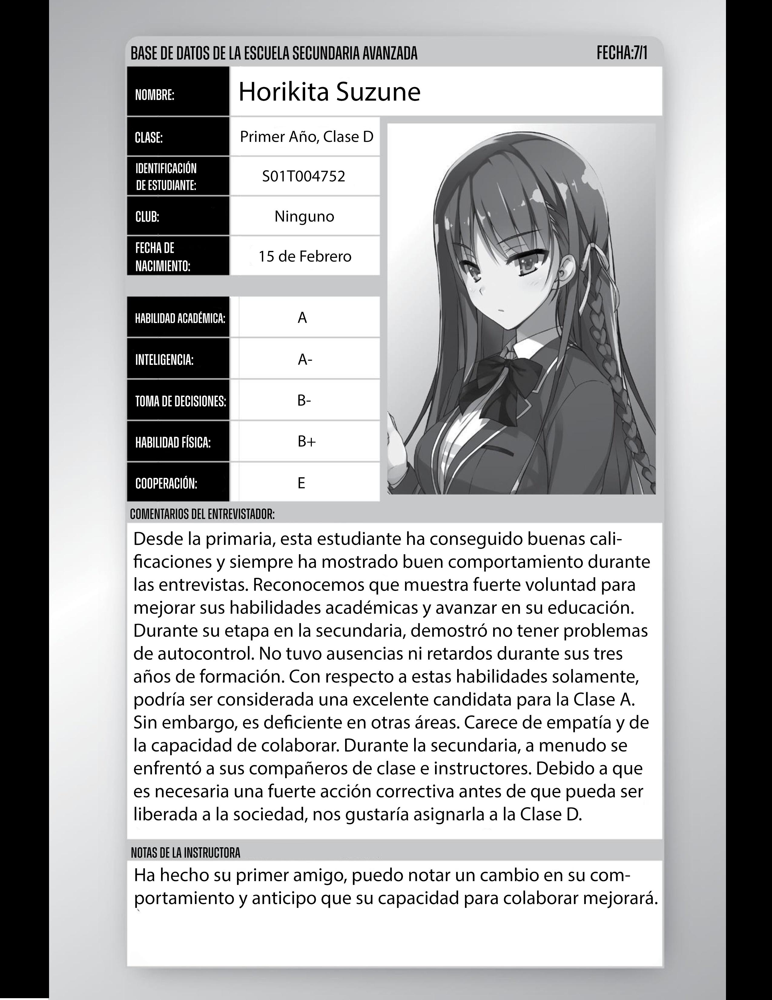
PUNTO DEBIL
Las malas noticias seguían llegando. Durante la clase a la mañana siguiente, cuando Chabashira-sensei estaba a punto de irse, nos atacó con uno de sus infames y breves anuncios.
—Tengo un anuncio para todos ustedes. Hubo un pequeño problema el otro día, un incidente entre el estudiante sentado allí, Sudou, y algunos estudiantes de la clase C. En resumen, hubo una pelea.
El aula explotó. Dependiendo del grado de responsabilidad que tenga, Sudou podría ser suspendido, y podríamos ver una reducción en nuestros puntos de clase. Chabashira-sensei puso toda la situación al descubierto para la clase. Su rostro estaba tan desprovisto de emoción o interés cuando hablaba que tenía una cierta belleza serena. No agregó ningún sesgo personal cuando se dirigió a la clase, y explicó la situación desde una posición neutral.
—¿Por qué no se ha resuelto ya este asunto? —Hirata hizo una pregunta bastante razonable.
—La queja vino de la clase C. Dicen que la pelea fue unilateral. Sin embargo, cuando hablamos con los acusados, Sudou dijo que sus afirmaciones eran falsas. Insiste en que los estudiantes de la clase C lo llamaron y empezaron la pelea.
—¡No fue mi culpa! ¡Fue en defensa propia! En defensa propia, se lo aseguro —Sudou gritó mientras soportaba las heladas miradas de sus compañeros de clase.
—Pero no hay evidencia de eso. ¿Estoy equivocada?
—¿Evidencias? No tengo ninguna.
—En otras palabras, aún no sabemos la verdad. Por lo tanto, hemos suspendido nuestra decisión por el momento. Nuestra respuesta, y el castigo, se producirá cuando sepamos quién tuvo la culpa.
—Lo único que sé es que soy inocente. Si acaso, debería recibir un arreglo por la molestia.
—Así lo dice el acusado, pero no creo que tengas un alto nivel de credibilidad en este momento. Si hay un testigo ocular, como parece creer Sudou, entonces la situación puede cambiar. Si alguien de aquí fue testigo de la pelea, por favor, que levante la mano.
Chabashira-sensei continuó hablando con una voz robótica y llana. Ningún alumno levantó la mano en respuesta a su pregunta.
—Qué pena, Sudou. Parece que no hay testigos en esta clase.
—Eso parece —refunfuñó.
Cuando Chabashira-sensei miró con recelo a Sudou, él miró hacia abajo.
—Para buscar testigos, cada maestro informará a sus clases de los detalles de este incidente.
—¿Eh?! ¡¿Se lo dirán a todos?!
La escuela no tenía nada que decir al respecto. Debido a que Sudou insistió en que se trataba de una acusación falsa y mencionó a un posible testigo, la escuela tenía que estar segura. Para Sudou, que esperaba ocultar la situación, nada de esto era bueno.
—¡Maldita sea!
El plan de Sudou ya se había desmoronado.
—De todos modos, eso es todo. Emitiremos nuestro juicio final el próximo martes, teniendo en cuenta los testigos oculares y las pruebas. Con eso, terminemos la clase por hoy.
Chabashira-sensei se fue, y Sudou la siguió. Seguramente se dio cuenta de que si se quedaba en el aula, perdería los estribos con alguien.
—Amigo, ¿no es Sudou de lo peor? —Ike fue el primero en hablar.
—Si perdemos puntos por culpa de Sudou, ¿volveremos a estar en cero este mes?
El bullicio envolvió el salón de clases, y las cosas comenzaron a salirse de control. Si perdemos puntos por esto, Sudou se convertirá en el único blanco de las frustraciones de nuestra clase.
Naturalmente, Kushida no quería que esto pasara.
—Chicos, ¿pueden escuchar lo que tengo que decir? —Kushida se puso de pie e intentó silenciar la conmoción—. Lo que dijo nuestra maestra parece ser cierto. Sudou-kun pudo estar en una pelea. Sin embargo, lo arrastraron a ella.
—Kushida-chan, ¿qué quieres decir? ¿Le crees a Sudou?
Kushida relató la historia de ayer a toda la clase. Les contó cómo Sudou fue elegido como candidato para jugar como titular en el equipo de baloncesto.
También describió cómo algunos estudiantes del club envidiaban a Sudou, y cómo lo llamaron y lo amenazaron para obligarlo a dejar el equipo. También explicó que Sudou, actuando en defensa propia, les había dado una paliza.
La mayoría de la clase escuchó las sinceras palabras de Kushida en silencio. Si Sudou o yo hubiéramos intentado explicar la situación de la misma manera, no habríamos sido tan efectivos. Sin embargo, no todos en la clase creían fácilmente en la historia. El mal comportamiento típico de Sudou dificultaba la asimilación, sin importar lo razonable que sonara.
—Me gustaría preguntarles de nuevo. Si alguien conoce a alguien que haya visto lo que pasó, ya sea alguien de la clase, un amigo o un estudiante de clase superior, por favor dígamelo. Puede ponerse en contacto conmigo en cualquier momento. Se lo agradecería sinceramente.
Aunque básicamente dijo lo mismo que Chabashira-sensei, la clase tuvo una respuesta muy diferente. Tenía una habilidad innata para conectarse con la gente. Su presencia brillaba tanto que casi podía sentirla.
Instantáneamente, el silencio envolvió el aula. El primero en hablar no fue el testigo, sino Yamauchi.
—Oye, Kushida-chan. No puedo creer lo que dijo Sudou. Creo que mintió para poder justificar lo que hizo. Habló de pegarle a los chicos todo el tiempo en la secundaria. Incluso nos dijo lo divertido que era golpear a la gente.
Después de que Yamauchi expresara sus preocupaciones, el resto de la clase murmuró su insatisfacción con Sudou.
—Lo vi agarrar a un chico por el cuello sólo porque chocaron en el pasillo.
—Lo vi meterse en la fila de la cafetería y gritar cuando alguien trató de decirle que no estaba bien.
El pedido de Kushida por la inocencia de Sudou no pareció llegar a nadie. Ya habían abandonado a Sudou, porque seguramente iba a hacerles perder los puntos que tanto les costó ganar.
—Quiero creerle.
Hirata, el héroe de la clase, pronunció esas palabras en apoyo de Kushida. Su aspecto es elegante, y está claro que no estaba embriagado con la misma aura anti-Sudou que todos los demás.
—Si un estudiante de otra clase dudara de él, podría entenderlo —dijo Hirata—. Pero creo que está mal dudar de un compañero de clase de inmediato. ¿No deberían los amigos hacer todo lo que esté a su alcance para ayudar a alguien necesitado?
—¡Estoy de acuerdo!
Karuizawa, la novia del heroico Hirata, gritó en señal de conformidad, haciendo a un lado su flequillo con la mano mientras hablaba.
—Si es una acusación falsa, sería un problema, ¿no? En cualquier caso, te sentirías mal por él si fuera inocente, ¿verdad?
Si Kushida vivía con la suavidad de su corazón, entonces Karuizawa vivía con la fuerza de su voluntad. Quizás fue debido a la influencia de Kushida y Karuizawa que muchas de las chicas comenzaron a expresar su apoyo.
Esto es típico de los japoneses. Hacen lo mismo cuando alguien asume el liderazgo. Aunque es probable que se burlen de él en sus corazones, ayudarían un poco a Sudou. Los críticos de Sudou se detuvieron, al menos por el momento.
Hirata, Kushida y Karuizawa atrajeron la admiración del resto de la clase.
—¡Intentaré preguntarle a mis amigos!
—¡Bueno, entonces intentaré preguntarle a los alumnos mayores que conozco en el club de fútbol!
—Yo también preguntaré por ahí.
Empezando por esos tres, iniciamos nuestra investigación para probar la inocencia de Sudou. Bueno, adiviné que no tenía que tomar un turno. De todos modos, no sería bueno en esto. Es mejor dejárselo a ellos y desaparecer en silencio.
PARTE 1
Planeaba desaparecer... Pero...
Almuerzo. Por alguna razón, me mezclé con nuestro grupo habitual en la cafetería. Nuestro grupo estaba formado por mí, Kushida, Horikita, Ike, Yamauchi y Sudou. No había manera de evitarlo. Cuando llegó la hora de almorzar, Kushida me invitó con una sonrisa. Me dijo:
—¿Quieres que vayamos a almorzar?
Dije que estaba bien, por supuesto. Quiero decir, no tenía ninguna opción en el asunto.
—Parece que te metes en problemas una y otra vez, Sudou-kun.
Horikita suspiró exasperada. Naturalmente, estábamos discutiendo cómo probar la inocencia de Sudou.
—Bueno, supongo que no tenemos muchas opciones. Como tus amigos, te ayudaremos, Sudou.
Aunque Ike estuvo en contra de Sudou al principio, su actitud había cambiado por completo. Eso fue definitivamente porque Kushida le había llamado la atención y le había pedido ayuda.
Ignorando los verdaderos sentimientos de Ike sobre el asunto, Sudou todavía se disculpó.
—Lo siento, Horikita. Te volví a causar problemas. Pero esta vez no fue culpa mía. Todo lo que hice fue destruir los planes de esos idiotas de la clase C.
Sudou le habló a Horikita con indiferencia, como si estuviera describiendo los problemas de otra persona.
—Lo siento, pero no tengo ganas de ayudarte esta vez —Horikita rechazó rotundamente la petición de ayuda de Sudou—. Para que la Clase D suba de rango, es importante recuperar los puntos de clase que perdimos lo más rápido posible. Sin embargo, es muy probable que no obtengamos ningún punto ahora, gracias a ti. Dificultaste esos planes.
—Espera. Puede que tengas razón en eso, pero no soy yo quien tiene la culpa de esto. ¡Esos tipos empezaron a pelear conmigo! ¿Qué parte de eso es culpa mía?
—Sigues centrándote en quién empezó la pelea, pero ese es un detalle trivial. ¿Nunca consideraste eso?
—¿Qué tiene de trivial? Hace toda la diferencia! ¡No hice nada malo!
—¿En serio? Bueno, la mejor de las suertes para ti.
Horikita cogió su bandeja sin tocar y se puso en pie.
—¿Así que no vas a ayudar? ¡Pensé que éramos amigos!
—No me hagas reír. Nunca te he considerado un amigo. Nada me incomoda más que estar cerca de alguien que no reconoce su propia estupidez. Adiós.
Horikita parecía más exasperada que enfadada. Suspiró profundamente y se fue.
—¡¿Cuál es su problema?! ¡Maldita sea!
Incapaz de dirigir su ira a cualquier otro lugar, Sudou golpeó con sus puños la mesa de la cafetería, derramando la sopa de miso de un estudiante cercano. El estudiante lo miró fijamente, pero cuando vio lo aterrador que parecía Sudou, se quedó en silencio. Sip. Podía entender esa sensación bastante bien.
—Supongo que depende de nosotros.
—Sabía que lo entenderías, Yamauchi. También cuento contigo, Ayanokouji.
Aparentemente era el segundo después de Yamauchi, a juzgar por el "también".
Bueno, supongo que eso no me sorprendió mucho.
—Aunque me pidas ayuda, sabes que no hay mucho que pueda hacer,
¿verdad?
Parece que mi desprecio por mí mismo fue ineficaz.
—Has estado así desde ayer, Ayanokouji-kun. ¿No vas a decir nada, Ike-kun?
—Bueno, yo... quiero decir, es ciertamente extraño que Ayanokouji piense que no va a ser útil. Al menos estar allí es mejor que no estar, supongo.
¿Probablemente?
Como era de esperar, a Ike no se le ocurrió cómo podría ser útil. Miré a Kushida con satisfacción. Era como si estuviera mostrando el poder de una persona sin talento.
—Esto es un poco descorazonador. Pensé que prepararnos para ese examen juntos nos uniría a todos un poco más —dijo un decepcionado Ike.
Vi a Horikita sentarse más lejos, algo irritada.
—No entiendo a Horikita en absoluto. ¿Cuál es su problema, Ayanokouji?
¿Por qué está actuando así?
No tenía ni idea de cómo responder. ¿Pensaban que yo era su manual de usuario? Tomé un bocado enorme de arroz para evitar la pregunta.
—Es bastante raro. Horikita quiere llegar a la clase A, ¿verdad? Salvar a Sudou-kun significa que obtendríamos más puntos, así que ¿por qué no nos ayuda?
—¿Es porque odia a Sudou? Quiero decir, sólo dijo que no lo considera como un amigo.
El disgusto por Sudou probablemente no es la razón. Pero todos han interpretado mal la situación. Pensaron que no ayudaría por razones personales.
—No quiero pensar en ello, pero supongo que podría ser verdad.
—Kushida, Horikita es...
Sin pensarlo, las palabras empezaron a salir de mi boca. Kushida me miró, su interés se despertó.
—¿Horikita-san es...? —preguntó.
—Ah. Bueno, esto puede no ser relevante, pero me gustaría decir algo.
Creo que Horikita suele hablar de una manera bastante brusca. Pero creo...
que ustedes la malinterpretan.
—¿Eh? ¿Qué quieres decir?
—Creo que ella no ayudará sin ninguna razón para hacerlo.
—Espera, ¿de qué estás hablando? No paras de decir "creo" una y otra vez. ¿Estás adivinando? —Sudou interrumpió abruptamente la conversación.
Ya que Horikita está definitivamente en su mente, no estaba muy contento con su rechazo. No era difícil de explicar, pero ¿cómo hacerlo? Horikita se dio cuenta de algo cuando la maestra nos contó el incidente. Este incidente ocurrió por una razón. Y el final que Horikita vio...
Bueno, la posibilidad de un final feliz es casi inexistente. Después de darse cuenta de eso, fue fría con Sudou a propósito. Sin embargo, si les dijera eso ahora, se sentirían desanimados. Sólo llevaría a cosas malas. Como no podía imaginarme cómo sería la discusión, dudé en explicarlo.
Horikita no había querido aplastar sus espíritus, así que se marchó.
—Bueno... Sí, sólo estoy adivinando como dijiste, Sudou.
—¿Y qué? ¿No tienes una razón?
—Horikita es inteligente, ¿verdad? Así que creo que tuvo alguna idea.
—¿Qué idea? ¿Botarme como a la basura?
—Whoa, espera. No critiquemos a nadie. Es natural que Ayanokouji-kun defienda a Horikita-chan, ya que están juntos todo el tiempo. Ella es importante para él, ¿verdad?
Ike tenía una sonrisa maliciosa y malintencionada. Era como si se estuviera burlando de mí. Sudou se irritaba cada vez más, y chasqueó la lengua antes de coger su comida.
—Bueno, sería genial que un testigo apareciera. Los maestros están hablando con cada clase sobre el incidente. Cuando encuentren a alguien, las cosas se resolverán rápidamente.
Comprendí el deseo, pero ¿sería tan fácil?
Para ser honesto, nos enfrentamos a un obstáculo muy grande. No es descabellado que Horikita tirara la toalla. Además, aunque hubiera un testigo, sería un jaque mate para nosotros si ese testigo fuera de la Clase C. Sería natural que un estudiante de la Clase C ocultara la verdad para proteger a sus compañeros de clase. Después de todo, esta escuela es una jerarquía. Es poco probable que los sentimientos de culpabilidad de una persona superen las desventajas que conlleva para su clase.
Aún si el testigo fuera de otra clase, el problema sería cuánto vio. Si el testigo presencial vio todo el evento desde una perspectiva completamente neutral, entonces esa sería una historia diferente. Pero...
—Ah, lo siento. Tengo que irme. Voy a intentar preguntarle a mis amigos mayores si vieron algo.
Con eso, Kushida se levantó de su asiento.
—Estás haciendo todo lo posible por alguien como Sudou, Kushida-chan.
Eso es tan lindo —Ike, completamente hechizado, permaneció clavado en la espalda de Kushida mientras se alejaba.
—Debería confesar en serio mis sentimientos por Kushida-chan... —
murmuró.
—Ni hablar. ¿En serio crees que se rebajará a tu nivel, Ike? —Dijo Yamauchi.
—Tengo más posibilidades que tú.
No había mucha diferencia entre ellos.
—Si saliera con Kushida-chan... Ahhhhhhhh...
Ike comenzó a babear, perdido en sus fantasías. Lo más seguro es que esté pensando en cosas indecentes.
—Oye. ¿Por qué fantaseas con mi Kushida-chan de esa manera?
—N-no, no lo estoy... —dijo, pero parecía enamorado.
—Oye, ¿con qué estás fantaseando? ¡Suéltalo!
Aparentemente Yamauchi no soportaba el hecho de que Ike pudiera hacer lo que quisiera en sus fantasías.
—¿Qué quieres decir con "con qué estoy fantaseando"? Obviamente, estoy pensando en abrazarla. Desnuda.
Por lo visto, pudo imaginar la escena gracias al poder de los delirios masculinos, o algo así.
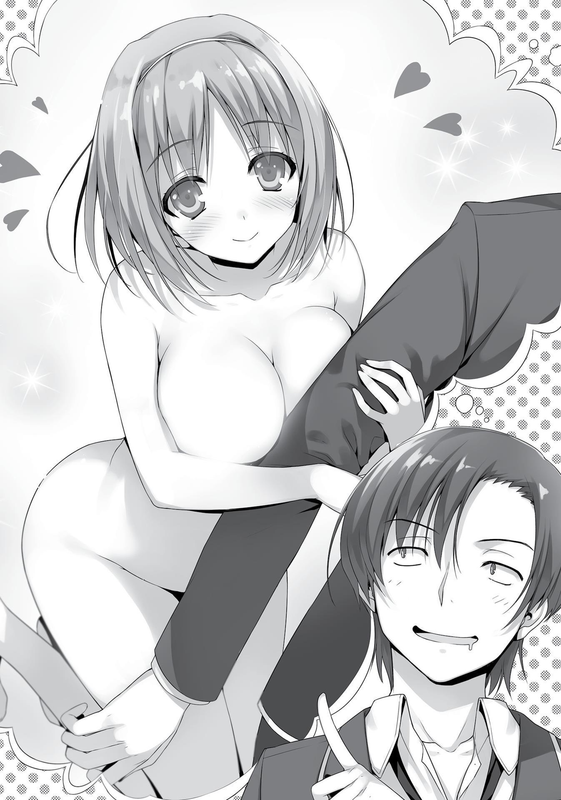
Cruzó los brazos y sonrió con confianza. Lo que estaba haciendo parecía como si la estuviera acosando. Si da otro paso adelante, convendría implicar a la policía.
—Siendo realistas, Kushida-chan está fuera de nuestro alcance. No se rebajaría a nuestro nivel. Pero, ¿y si aspirara a un rango por debajo de ella?
—Sí. Bueno, no podría tener una novia fea.
—Sí, cuando pienso en nosotros caminando juntos uno al lado del otro....
Tiene que ser al menos un 7 sobre 10.
Supongo que Ike y Yamauchi realmente quieren novias. Sus fantasías pueden ser delirantes, pero no pueden renunciar a sus grandes esperanzas.
—Ayanokouji, ¿quieres una novia?
—Sí, supongo. Si fuera posible.
Si tuviera novia, no sufriría tanto.
—Sólo para estar seguros, ¿realmente no hay nada entre tú y Horikita?
Sudou empujó sus palillos hacia mí mientras me hacía esa pregunta.
—No.
—¿De verdad?
Volvió a presionar, como si no me creyera. Agité la cabeza enfáticamente.
—De acuerdo, bien entonces. Supongo que entendí mal. Pensé que te aferrabas demasiado a ella. Eso sería una molestia para Horikita.
No recuerdo haberme aferrado. Especialmente a Horikita.
—¿De verdad estás conforme con Horikita? Quiero decir, es linda y todo, pero... parece un poco aburrida, ¿sabes? No soporto a alguien tan aburrido como ella. No le gustaría ir a la piscina o salir a una cita o algo por el estilo
—dijo Ike.
—Ustedes chicos no saben nada. De todas formas, Horikita es mucho mejor que Kushida —Sudou se cruzó de brazos y asintió, jactándose de sus preferencias personales—. Quiero decir, si fuera cualquier otro tipo, seguramente los rechazaría. Pero si fueras su novio, entonces estaría bien,
¿verdad? Entonces te mostraría un lado secreto que nadie más puede ver.
—Ya veo.... siento que puedo imaginarme eso. Tan linda —Yamauchi miró a Horikita y se perdió en sus delirantes fantasías—. Pero la Horikita de tus sueños parece haberte hecho a un lado, Sudou.
—Bueno, supongo que sí. ¡Maldita sea! Ahora me siento deprimido.
—Bueno, realmente no tengo nada que decir. El número de rivales por Kushida-chan sólo disminuyó en uno.
Ike era multifuncional, vigilaba a esas chicas de 7 sobre 10 y mantenía a Kushida como su objetivo principal.
—Así que Ayanokouji, si no pasa nada con Horikita, ¿hay alguien que te guste? Quiero decir, a Sudou le gusta Horikita, y a Yamauchi le gusta Kushida-chan. Tienes que hacer un balance de los objetivos de tu rival.
—Cualquiera...
No se me ocurrió nadie. Intenté pensarlo seriamente durante un rato. Si tuviera que elegir a alguien, probablemente habría elegido a... ¿Kushida? Ella era la persona con la que más hablaba, así que era natural. Pero sabiendo que yo no le agradaba, no podía imaginar que las cosas progresaran.
—No, nadie —respondí.
Sin embargo, Ike y Yamauchi me miraron con dudas.
—¿De verdad crees que hay un tipo que no está enamorado de una chica?
—Imposible. Ese tipo no existe. No nos ocultes la verdad, Ayanokouji.
—A diferencia de ustedes, no conozco a ninguna chica aparte de Horikita y Kushida.
—Bueno, supongo que tienes razón. No te he visto hablar con otras chicas.
Me pareció bastante deprimente que estuvieran tan convencidos.
—¡Vamos a presentarte a algunas chicas! —Ike puso su brazo alrededor de mi hombro y habló con confianza.
—¿No es patético que intentes presentarme a chicas cuando no tienes novia?
—Bueno... sí.
—Oigan, Sae-chan-sensei dijo que tendríamos vacaciones este verano,
¿verdad? Definitivamente me conseguiré una novia entonces. ¡Kushida-chan si es posible, o alguna otra chica linda que no haya visto todavía!
—¡Yo también, yo también! Aunque sea la peor de todas, me conseguiré una chica... ¡y luego disfrutaré de esa vida amorosa de preparatoria!
—¿Cuándo debo confesar mis sentimientos a Horikita?
Los tres hablaban libremente de los objetos de su afecto.
—Deberíamos hacer un concurso para ver quién puede conseguir una novia primero. ¡El ganador tendrá que invitar a todos a comer! ¿Suena bien?
Me preguntaba si participar en una competición tan descarada me convertiría en su amigo. Sonaba difícil.
—¿Qué pasa, Ayanokouji? No estarás pensando en escaparte de esta competencia, ¿verdad? —dijo Ike.
—No, sólo me preguntaba por qué la primera persona en conseguir novia tiene que invitar a todos los demás.
—Bueno, así es como es. Piensa en ello como una especie de impuesto de envidia para el tipo. ¿Lo entiendes?
—Un hombre es feliz cuando tiene novia. Como es feliz, invita a la gente con alegría.
Aunque está bien que se entusiasmen, el problema de Sudou aún no se ha resuelto.
PARTE 2
Después de la escuela, la clase se dividió en grupos para reunirse con la gente y preguntar. Sin embargo, no hubo muchos que ayudaran a buscar un testigo ocular. Hirata y Karuizawa lideraron el equipo Héroe y Gal, mientras que Kushida lideró el equipo Chica Hermosa y Sequito. Tenían la intención de inspeccionar el campus ellos mismos. Aún así, sería difícil obtener resultados en tan poco tiempo.
En esta escuela hay unos 400 alumnos. Incluso si dejas fuera a todos los de la clase 1-D, no habría mucha diferencia. Encontrar a todos sería difícil incluso si incluyes los descansos, el almuerzo, la salida de clases y temprano en la mañana.
—Bien, me voy a los dormitorios.
—¿Realmente vas a regresar? ¿Horikita-san?
Horikita asintió sin dudarlo, y rápidamente abandonó el aula, tal y como era de esperar. No se acobardaba ante las miradas de todos, que expresaban variaciones de "¿Te vas?". Es probable que se convierta en una mujer feroz, del tipo que se va en las salidas sociales sin leer el ambiente y concluye las reuniones exactamente a la hora prevista.
—Bueno, entonces...
Si la táctica de Horikita fue salir del aula con confianza, la mía fue todo lo contrario. Intenté deslizarme entre las sombras.
—Ayanokouji-kun.
Intenté salir sigilosamente a través del aula. Intenté ser rápido como un ninja, pero me descubrieron. Kushida me detuvo, un leve indicio de malestar en su voz.
—¿Qué? ¿Necesitas algo? —Le pregunté.
Lo siento, Kushida. Voy a endurecer mi corazón y a rechazar tu petición. Y luego volveré a los dormitorios.
—Nos ayudarás, ¿verdad? —preguntó ella.
—Por supuesto.
No podía negarme. Ojos de cachorro + súplica = letal. No pude evitar sentir que Kushida me estaba controlando. Irresistible. No importa cómo alguien decida no quedarse dormido, por ejemplo, se desvanecerá después de 24 a 48 horas, como máximo. Tarde o temprano, sin importar la fuerza de voluntad de la persona, se agotarían. En otras palabras, todo el mundo tiene su punto de quiebre. Es un mecanismo humano.
Después de que terminé de excusarme, Kushida me hizo una sugerencia.
—Quiero que Horikita-san nos ayude esta vez. ¿Puedes intentar preguntarle de nuevo?
—Pero ya se fue.
No lograron detenerla unos instantes antes. ¿Ya era hora de la venganza?
—Sí. Quiero ir tras ella. Si Horikita-san ayuda, creo que hará una gran diferencia.
—Bueno, no puedo discutir contigo en eso.
—Si nos tomamos el tiempo para convencerla, ¿crees que tendremos una oportunidad?
Si quería volver a intentarlo, no tenía derecho a detenerla. Asentí con la cabeza.
—Ike-kun, Yamauchi-kun, ¿podrían esperar aquí? Volveremos enseguida
—dijo Kushida.
—¡Está bien! —corearon los chicos.
Desde luego no puedes decir que esos dos sean amigos de Horikita. Kushida pareció darse cuenta de eso.
—Vamos.
Kushida me cogió del brazo, y nos fuimos juntos. ¿Qué era este sentimiento de euforia sin precedentes? Por alguna razón, pensé que escuché a Ike y Yamauchi gritarme con enojo, pero debe haber sido mi imaginación. Heh.
Cuando llegamos a la entrada del edificio, Horikita no estaba por ningún lado.
Pensé que ya se había ido. No era de las que se detienen por nada, así que seguro que se fue directo al dormitorio. Me abrí paso entre los estudiantes que se ponían los zapatos y se preparaban para volver a casa. La mayoría de la gente caminaba en grupos de dos o más mientras volvían, pero vi una figura solitaria caminando con confianza. Era Horikita.
—Horikita-san.
Dudé, pero Horikita respondió inmediatamente.
—¿Qué pasa?
Por lo visto, no pensó que la perseguiríamos. Se giró, luciendo sorprendida.
—Realmente quiero que nos ayudes con el caso de Sudou. ¿Es posible?
—Pensé que ya me había negado... Hace unos minutos, nada menos.
Horikita se encogió de hombros, como expresando lo estúpidos que nos encontraba.
—Sé que lo hiciste, pero... pero creo que esto es necesario para llegar a la clase A.
—Necesario para llegar a la clase A, ¿eh?
Horikita no parecía convencida. No estaba escuchando a Kushida.
—Eres libre de corretear por el bien de Sudou-kun. No tengo derecho a detenerte. Sin embargo, si necesitas ayuda, intenta con otra persona.
Estoy ocupada —dijo Horikita.
—¿Ocupada? pero todos los demás están ocupados con el caso de Sudou ahora mismo —le dije a Horikita.
Sus ojos parecían decir, ¿Por qué sigues hablando?
—Tengo una importante rutina diaria, así que necesito mi tiempo a solas.
Es desagradable que me roben ese tiempo.
Justo la respuesta que esperaría de una misántropa desvergonzada.
Si simplemente hubiera dicho que no le gustaba pasar tiempo con otras personas, eso habría sonado como una excusa.
—Aunque intervenga y lo salve ahora, se volverá a meter en problemas.
Es un círculo vicioso, ¿no? Pareces pensar que Sudou-kun es la víctima en este caso, pero yo pienso diferente.
—¿Eh? ¿Pero no es Sudou-kun la víctima? Además, sería malo si estuviera mintiendo —Kushida no parecía entender el significado de Horikita.
—Tal vez los estudiantes de la clase C comenzaron esta pelea, pero Sudou-kun también fue uno de los perpetradores.
—E-espera. ¿Qué quieres decir? ¿No involucraron a Sudou-kun en la pelea?
Horikita lentamente volvió su mirada hacia mí, su expresión diciendo "Santo cielo".
No, no he dicho nada. Aparté la vista como si tratara de escapar. Tras un momento de silencio, Horikita habló con voz exasperada.
—¿Por qué fue involucrado en la pelea? Este problema persistirá hasta que entendamos esa cuestión fundamental. ¿Entendido? No deseo ayudar hasta que se responda a esa pregunta. Ya que no pudiste convencerme,
¿por qué no le preguntas al tipo que está a tu lado? Aunque finja no entender lo que estoy pensando, seguramente sí lo hace.
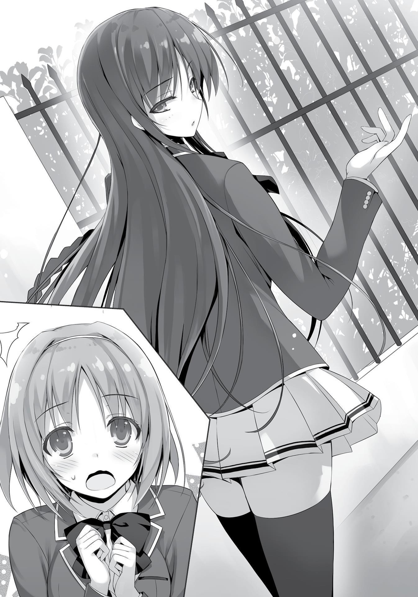
Por favor, deja de decir que te entiendo. Kushida me miró, incapaz de ocultar su confusión. Su expresión me preguntaba qué sabía.
Vamos, Horikita, no digas nada innecesario....
Horikita empezó a caminar, indicando que el resto dependía de mí. Kushida pareció finalmente escuchar a Horikita, y dejó de perseguirla.
—¿Sudou-kun es un perpetrador? ¿Es eso... cierto? —preguntó.
Kushida se giró hacia mí, como pidiéndome que lo salvara de nuevo. Como Horikita reveló que yo fingía ignorancia, las cosas serían un dolor en el trasero.
Además, con mucho gusto le daría a Kushida mi PIN del banco si me lo pidiera con una expresión tan linda.
—Entiendo un poco de lo que Horikita quiso decir. Como mínimo, Sudou tiene algo de culpa en este caso. Es del tipo que se enfada fácilmente,
¿verdad? Cada vez que se enfrenta a alguien que no le simpatiza, ataca, habla y actúa de una manera agresiva y dominante. Cuando escuché que lo estaban considerando para un puesto de titular en el equipo de baloncesto, me sorprendió e impresionó. Nadie discute que es un jugador increíble, pero si actúa con tanta arrogancia y orgullo, algunas personas llegarán a odiarlo. Aquellos que trabajan increíblemente duro por su lugar verán a Sudou como una persona bastante desagradable. Luego están los rumores, ¿verdad? La gente dice que Sudou pelea con la gente desde la secundaria. No sé de nadie que conozca a Sudou desde su escuela anterior, pero considerando cuánta gente habla de ello, puede que haya algo en el rumor.
La gente no tenía una buena impresión de Sudou.
—Esto iba a pasar eventualmente. Por eso Horikita dijo que Sudou era un perpetrador.
—Así que.... ¿su comportamiento típico, más sus acciones repetidas, llevaron a esta situación? —Preguntó Kushida.
—Sí. Mientras siga antagonizando a los que le rodean, inevitablemente habrá problemas. Además, si no hay pruebas, la gente usará su imagen en
su contra. En otras palabras, lo juzgarán por sus impresiones. Por ejemplo, digamos que hubo un caso de asesinato. Hay dos sospechosos. Uno de ellos ha cometido asesinatos en el pasado, mientras que el otro es un ciudadano bueno y honrado. Basándose en esa información, ¿a quién le creerías?
Si les preguntan, casi todos darían la misma respuesta.
—Bueno.... elegiría al ciudadano honrado, por supuesto.
—La verdad podría ser diferente. Sin embargo, cuanta menos información tengas en la que basar tu juicio, más tendrás que confiar en la escasa información que tengas a mano. Eso es lo que está pasando aquí. Horikita no puede pasar por alto el hecho de que Sudou no reconoce sus defectos.
Sin embargo, no pensé que esto fuera exactamente una situación de "cosechas lo que siembras".
—Ya veo. Así que a eso se refería...
Kushida asintió con la cabeza.
—¿Así que Horikita-san no va a salvar a Sudou-kun porque quiere darle una lección?
—Supongo que sí, sí. Al castigarlo, quiere que se entienda mejor a sí mismo.
Kushida lo entendió, pero claramente no estaba de acuerdo. Parecía un poco enfadada, cerrando los puños con rabia.
—No estoy de acuerdo con abandonar a Sudou-kun sólo para castigarlo.
Si no está satisfecha con él, creo que al menos debería hablar con él directamente. Eso es lo que harían los amigos.
Pero no creo que Horikita considere a Sudou su amigo. Además, Horikita no es del tipo que enseña con amabilidad. No se siente obligada con los demás.
—Deberías actuar de acuerdo a tus principios, Kushida. No creo que esté mal querer ayudar a Sudou.
—Sí.
Kushida asintió sin dudarlo. Ayudaría a un amigo necesitado tantas veces como fuera necesario. Suena simple, pero en realidad es muy difícil. Sólo alguien como Kushida podría hacer algo así.
—Sin embargo, creo que sería mejor que consideráramos cuidadosamente la posibilidad de señalarle o no directamente sus problemas a Sudou. Si no se toma el tiempo para reflexionar, no tiene sentido. Hay ciertas conclusiones a las que sólo puedes llegar por ti mismo.
—De acuerdo. Lo entiendo. Seguiré tu consejo, Ayanokouji-kun.
Kushida arqueó su espalda y se estiró; yo había cambiado su forma de pensar.
—Bien, vamos a buscar al testigo.
Volvimos a la clase y nos reunimos con Ike y Yamauchi.
—¿Eh? ¿No pudiste persuadir a Horikita? —dijo Ike.
—No, lo siento. Fracasé —contestó Kushida.
—No, no. No tienes que disculparte, Kushida-chan. Deberíamos estar bien con quien ya tenemos.
—Cuento contigo, Ike-kun. Yamauchi-kun —dijo Kushida con ojos brillantes.
Los dos devolvieron la mirada, enamorados.
— Bien, ¿por dónde empezamos?
La búsqueda aleatoria de un testigo sería ineficaz. Sería mejor idear un plan antes de empezar nuestra búsqueda.
—Si nadie tiene ninguna objeción, ¿qué tal si empezamos preguntando por la clase B? —pregunté.
—¿Por qué clase B?
—Porque esa es la clase que más quiere un testigo.
—Lo siento. No lo entiendo, Ayanokouji-kun.
—Entre las clases D y C, ¿qué clase amenaza más a la clase B? O dicho de otra manera, ¿qué clase es más probable que amenace el lugar de la clase B en la clasificación?
—La C, por supuesto. Así que deberíamos preguntarle a la clase C al final, supongo. Pero, ¿por qué no empezar con la clase A?
—Sabemos muy poco sobre la Clase A. No creo que quieran involucrarse en un asunto problemático que pueda afectar negativamente sus puntos.
También es posible que a los estudiantes de la clase A no les importe, ya que no sienten ninguna conexión con lo que sucede entre las clases C y D.
Por supuesto, todavía no sabía si podíamos confiar en la Clase B. Si tuvieran una persona particularmente astuta, él o ella podría tener un plan para derrotar no sólo a la clase C, sino también a la clase D. Incluso si ese plan no existiera, creo que debemos preparar medidas preventivas basadas en esa idea.
—¡Bueno, vayamos a la clase B ahora mismo! —Exclamó Kushida.
—Detente —Agarré por reflejo la parte trasera del cuello de Kushida.
—¡Nyaa! —Sorprendida, Kushida soltó un gemido como el de un gato.
—¡Qué linda!
Después de ver la adorable reacción de Kushida, Yamauchi tenía corazones en los ojos. Seguramente ella es adorable a propósito....
A pesar de pensar eso, mi corazón latía como loco.
—Es cierto que tus excelentes habilidades de comunicación son indispensables. Sin embargo, esto no es lo mismo que ir a otra clase e intentar hacer amigos.
—¿Eso crees?
Si el testigo está dispuesto a ayudar a la clase D por nada, o si son amigables, entonces no hay necesidad de preocuparse. Sin embargo, si el testigo es una persona calculadora, es posible que no esté de acuerdo en ayudar. Sin embargo,
no sabríamos si esa persona ayudaría a la Clase D a menos que lo intentemos.
Incluso si fuéramos a la clase B para hablar... ¿cómo terminarán las cosas?
—¿Conoces a alguien de clase B?
—Sí. Sin embargo, sólo conozco a unas pocas personas —dijo Kushida.
—Bueno, entonces, hablemos con esa gente primero.
No queríamos que se supiera que la Clase D estaba buscando frenéticamente testigos.
—Espera, ¿pregúntales uno por uno? ¿No sería mucho más fácil preguntarle a todos al mismo tiempo? —No parecía gustarle esta forma indirecta de hacer las cosas.
—También creo que estás siendo demasiado negativo. Creo que es una buena idea preguntarle a la clase B, pero también pienso que deberíamos preguntarle a varias personas a la vez. Si no, puede que no encontremos al testigo a tiempo.
—Ya veo. Puede que tengas razón en eso. Deberíamos hacer lo que creas que es mejor, Kushida.
—Lo siento, Ayanokouji-kun.
Kushida juntó sus manos disculpándose. Sin embargo, no ha hecho nada malo.
Es natural que tengamos opiniones diferentes sobre el asunto. Además, en tiempos como estos, la mayoría debe decidir qué hacer. El plan de Kushida me convenció, así que retiré el mío.
De repente, sentí una sensación, como si alguien me estuviera observando. Me di la vuelta.
Aproximadamente un tercio de nuestra clase permanecía en el salón. Nada aquí parecía especialmente extraño. Aún así, no podía decir exactamente qué era lo que me molestaba, o quién me había dado la sensación de que me observaba.
PARTE 3
La primera aula que visitamos tenía una atmósfera ligeramente diferente.
Aunque se veía fundamentalmente igual que la nuestra, se sentía como si hubiéramos llegado a un lugar extraño. Era un poco como el fútbol; claramente la diferencia entre un partido en casa y un partido de visitante no es cosa trivial.
Tampoco sabíamos si los estudiantes que nos rodeaban eran amigos o enemigos. Incluso Ike y Yamauchi parecían vacilar mucho. Simplemente se quedaron congelados en la puerta del aula, incapaces de moverse.
Kushida fue la única que permaneció imperturbable. De hecho, encontró a sus amigos de la clase B y, con una sonrisa en la cara, les hizo un gesto con la mano y se dirigió hacia allí. Qué actitud tan increíble. Quería aprender a ser así.
Charlaba con la gente sin importar el género, exactamente como actuaba en la clase D.
Nadie estaba más celoso de esto que Ike y Yamauchi. Kushida estaba charlando felizmente con gente que era evidentemente más atractiva que ellos.
—¡Maldita sea! Hay demasiados tipos tras mi Kushida-chan.
—¡Esto apesta!
¿De qué está hablando? ¿Su Kushida?
—No te asustes, Ike. No hay problema. Estamos en la clase de Kushida-chan, ¡así que estamos un paso por delante de ellos!
Los dos, camaradas enfurecidos, se agarraron de los brazos.
Aunque sólo quedaban unas 10 personas en el aula, Kushida empezó a explicar el caso de Sudou. Considerando todas las cosas, la atmósfera en la Clase B no era tan diferente de la Clase D. Ciertamente no es lo que yo esperaría de una clase llena de estudiantes de honor. No parecían especialmente formales. De hecho, muchos de los estudiantes parecían hacer lo que querían. Aunque eran libres de actuar como quisieran dentro de las reglas de la escuela, esperaba que su pelo y su ropa fueran un poco más reservados. Sin embargo, en cambio,
algunos estudiantes se habían teñido el pelo, y... bueno... algunas chicas llevaban faldas bastante cortas.
Como dice el refrán, no se debe juzgar un libro por su portada. O quizás eran superiores a la Clase D en algo más que simples logros académicos.
Esta escuela es demasiado misteriosa. Pensar en estas cosas era un dolor en el trasero. De todas formas, solo vine aquí para acompañar a Kushida, así que pensé que era mejor dejarle las cosas a ella. Me alejé más de la puerta para eludir la llamada de Ike y Yamauchi.
—Quiero irme a casa.
No quería que me oyeran refunfuñando. Desde fuera de la ventana, podía ver al Club de Atletismo corriendo y sudando. El aire acondicionado dentro de la escuela es especialmente efectivo, así que no tenía ganas de salir.
—Vaya, esos tipos en el club deportivo realmente trabajan duro, ¿eh? —
Ike, después de haber explorado la clase B, se me unió para mirar por la ventana. Es una persona especialmente caprichosa, así que esperar seguramente lo aburrió—. Creo que la gente que participa en los clubes es estúpida —dijo.
—¿Por qué dices eso? Sabes que esa afirmación enfadará a la mitad de los estudiantes aquí, ¿verdad?
No sabía los números exactos, pero calculé que al menos entre el 60 y el 70 por ciento de los estudiantes de esta escuela participaban en clubes.
—Si te gusta hacer ejercicio, ¿qué tiene de malo hacerlo como pasatiempo?
¿Qué beneficio tiene someterse a un régimen tan duro?
Me pareció extraño ver las actividades del club únicamente en términos de beneficios o inconvenientes. Además, la participación en un club ofrece muchos beneficios. Adquieres las habilidades necesarias para construir relaciones con otras personas, y también experimentas la victoria y la derrota. Estas son cosas que no se pueden aprender con sólo estudiar. Además, alguien que nunca ha participado en clubes y que sólo se va directo a casa después de clase, debería aprender esa lección.
—Probablemente tengas razón —le dije.
Esperé unos minutos hasta que recibí el informe de Kushida. No me imaginaba lo que me dijo.
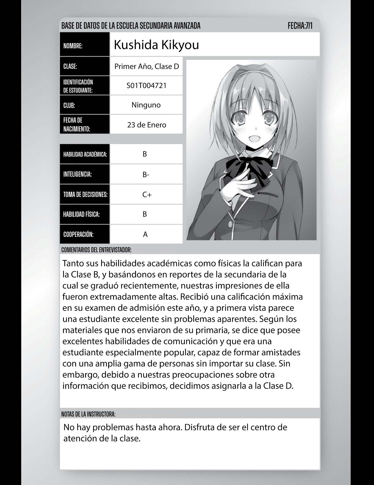
UN TESTIGO INESPERADO
A la mañana siguiente, los estudiantes intercambiaron información. Los del grupo de Hirata y los de Kushida pasaron el día de ayer buscando al testigo. Ike y Yamauchi odiaban a los galanes como Hirata, pero parecían entusiasmados con todas las chicas que lo rodeaban. Intentaron charlar alegremente con ellas.
Mientras escuchaba, sin embargo, me enteré de que Hirata y su grupo no obtuvieron ninguna información valiosa. Anotaron los nombres de las personas con las que hablaron, y ocasionalmente tomaron notas en sus teléfonos.
Mientras tanto, yo estaba solo, como siempre. Podía hablar con Kushida, pero me siento en desventaja cuando se trata de un grupo grande. No podía hablar, así que le pedí a Kushida que me informara más tarde. Mientras tanto, mi vecina
-que seguía rechazando las invitaciones de Kushida- estaba sentada con una expresión indiferente mientras se preparaba para la clase. Sudou, el acusado, aún no había llegado.
—Viejo, ¿podemos probar que esos tipos de la clase C están equivocados?
—preguntó Ike.
—Mientras podamos encontrar un testigo, es posible. Hagámoslo lo mejor que podamos, Ike-kun.
—Pero antes de que hagamos lo que podamos, ¿hay algún testigo? ¿No dijo Sudou que pensaba que alguien podría haber estado allí? ¿No fue una mentira? Quiero decir, es violento, y provoca a la gente.
—Si seguimos dudando de él, no haremos ningún progreso. ¿Estoy equivocado?
—Supongo que tienes razón en eso, pero... si Sudou se equivocó, todos nuestros puntos ganados con tanto esfuerzo serán eliminados, ¿verdad?
Estaremos en cero. ¡Cero! Volveremos a estar sin dinero.
—¡Nuestros sueños de tontear al máximo seguirán sin cumplirse!
—Entonces sería una buena idea que todos empezaran a ahorrar de nuevo —dijo Hirata—. Sólo han pasado tres meses desde que empezamos aquí.
El héroe de nuestra clase no vaciló al pronunciar su magnífico discurso. Las chicas se sonrojaron inmediatamente en respuesta a eso. Karuizawa tenía una expresión de orgullo especial, quizás porque ella era la que él escogió para ser su novia.
—Creo que nuestros puntos son importantes. Están ligados a nuestra motivación, ¿verdad? Así que, defenderé nuestros puntos de clase hasta mi último aliento. Aunque sólo sean 87.
—Entiendo cómo te sientes. Sin embargo, puede ser peligroso aferrarse a nuestros puntos y perder de vista la realidad. Lo más importante es atesorar a nuestros amigos tanto como sea posible.
Ike, que consideraba a Hirata un mojigato, lo miró con suspicacia.
—¿Aunque Sudou tuviera la culpa?
Ser castigado cuando no has hecho nada malo es horrible. Eso es obvio. Sin embargo, Hirata asintió sin dudarlo un instante. Era como si creyera que el sacrificio personal no era importante. Ike miró inmediatamente hacia abajo, sintiéndose presionado por el peso de las nobles intenciones de Hirata.
—Creo que lo que dices es razonable, Hirata-kun, pero sigo queriendo mis puntos. Los estudiantes de la clase A obtienen casi 100.000 puntos cada mes. Les tengo mucha envidia. Hay chicas en su clase que compran mucha ropa y accesorios con estilo. ¿No somos sólo el fondo del barril comparado con ellos?
Las piernas de Karuizawa colgaban de su pupitre. La gente se mostró desconsolada cuando señaló la gran diferencia entre nuestras clases.
—¿Por qué no fui a la clase A desde el principio? Si estuviera en la clase A, amaría cada segundo de mi vida estudiantil.
—Ojalá yo también estuviera en la clase A. Haría cosas muy divertidas con mis amigos.
Antes de que me diera cuenta, la reunión para salvar a Sudou se había transformado en una sesión de quejas, con los estudiantes pidiendo una forma de salir de la clase. Horikita espontáneamente comenzó a reírse burlonamente en respuesta a los delirios de Ike y Karuizawa. Como su vecino, fui el único que se dio cuenta. Por lo visto, sugería que no podrían haber empezado en la clase A aunque hubieran querido. Horikita inmediatamente sacó un libro de la biblioteca y comenzó a leer, como si no quisiera distraerse con el ruido. De una mirada, vi que estaba leyendo Los Demonios de Dostoievski. Una buena elección.
—Sería increíble si hubiera algún truco secreto que pudiéramos usar para cambiar a la Clase A instantáneamente. Ahorrar puntos de clase es demasiado difícil.
Había una diferencia de 1.000 puntos entre la Clase A y nosotros. Una diferencia absurdamente grande.
—Entonces anímate, Ike, porque hay una forma de llegar instantáneamente a la clase A.
Chabashira-sensei habló desde la entrada del aula. Llegó cinco minutos antes de que empezara la clase.
—Espere. ¿Qué ha dicho, sensei? —Ike casi se cae de la silla antes de recomponerse.
—Dije que hay una manera de llegar a la clase A sin puntos de clase.
Horikita levantó la vista de su libro, intentando averiguar si Chabashira-sensei estaba mintiendo.
—Por favor. ¡No se burle de nosotros, Sae-chan-sensei!
Por lo general, Ike habría hincado los dientes en esa información. Esta vez, se rió, como diciendo que no se dejaría engañar.
—Es verdad. En esta escuela, hay ciertos métodos especiales que puedes usar —respondió Chabashira-sensei. A juzgar por su respuesta, no parecía estar bromeando.
—No creo que lo diga sólo para confundirnos.
Chabashira-sensei a veces nos ocultó información, pero nunca mintió. Las carcajadas de Ike se detuvieron gradualmente.
—Sensei, ¿cuáles son estos métodos especiales? —Preguntó Ike educadamente, para no ofenderla.
Todos los estudiantes fijaron sus ojos en Chabashira-sensei. Incluso aquellos que no veían un beneficio sustancial al llegar a la Clase A parecían curiosos.
—Ya les dije el día que llegaron. Dije que no hay nada que no puedan comprar con sus puntos en esta escuela. En otras palabras, pueden cambiar de clase usando sus puntos privados.
Chabashira-sensei nos miró rápidamente a Horikita y a mí. Nosotros mismos habíamos probado ese método comprando un punto del examen de la escuela.
Eso apoyaba la verdad de su afirmación.
Los puntos de clase y los puntos privados están vinculados. Si no tuviéramos puntos de clase, tampoco tendríamos los puntos privados.
Sin embargo, no era una correlación perfecta de uno a uno. Basándonos en lo que habíamos escuchado, no necesariamente tenías que perder puntos.
Debido a que los estudiantes podían transferir puntos, era teóricamente posible acumular puntos privados aunque los puntos de la clase fueran cero.
—¡En serio! ¡¿Cuántos puntos necesitamos ahorrar para hacer eso?!
—Veinte millones. Hagan todo lo posible para conservar los puntos.
Háganlo, y podrán entrar en la clase que quieran.
Después de escuchar ese número absurdamente alto, Ike se cayó de su silla.
—¿Acaba de decir veinte millones? ¡Pero eso es imposible!
Todos en la clase empezaron los abucheos. Su decepción era de esperar.
—Normalmente sí, sería imposible. Sin embargo, como es una vía de acceso a la Clase A, lógicamente es caro. Si redujera el número en un dígito, habría más de 100 personas en la clase A cuando se gradúen.
Entonces no tendría sentido nuestro sistema.
Incluso manteniendo nuestra asignación mensual de 100.000 puntos, ese no sería un número fácil de alcanzar.
—Sólo por curiosidad, ¿alguien ha cambiado su clase así antes?
Esa era una pregunta obvia. Esta escuela ha estado en funcionamiento durante unos 10 años. Mil y pico estudiantes habían luchado para sobrevivir. Si alguien hubiera logrado alcanzar el éxito por ese método, se hablaría de ello.
—Desafortunadamente, no. Nadie lo ha hecho antes. La razón es tan clara como el día. Incluso si mantienes perfectamente tus puntos de clase al empezar la escuela aquí, después de tres años sólo tendrías 3,6 millones.
La clase A podría elevar los puntos lo suficiente como para alcanzar los cuatro millones. Normalmente, simplemente no serías capaz de hacerlo.
—Entonces, ¿no significa eso que es imposible?
—Es casi imposible. Sin embargo, eso no significa que sea imposible. Hay una gran diferencia, Ike.
Sin embargo, alrededor de la mitad de la clase ya había perdido interés en lo que ella decía. Para los estudiantes de la clase D, que soñaban con sólo 100 o 200 puntos privados, alcanzar los 20 millones era un sueño lejano. Estaba más allá del alcance de nuestra imaginación.
—¿Puedo hacer una pregunta, por favor?
La alerta Horikita levantó la mano. Parecía bastante decidida, considerando que este era un camino potencial hacia la Clase A.
—¿Cuál es el mayor número de puntos que un estudiante ha ahorrado desde la apertura de esta escuela? Sólo pregunto para tener una referencia.
—Una muy buena pregunta, Horikita. Hace unos tres años, un estudiante de la clase B ahorró casi 12 millones de puntos antes de graduarse.
—¡¿Doce millones?! ¡¿Un estudiante de la clase B?!
—Sin embargo, fue expulsado antes de graduarse, por lo que al final no pudo ahorrar esos 20 millones de puntos. Estaba involucrado en una operación fraudulenta a gran escala para ahorrar puntos.
—¿Fraudulenta?
—Se aprovechó de los estudiantes de primer año recién admitidos que aún no entendían el sistema. Se dirigió a ellos uno por uno y les sacó puntos, de modo que pudiera alcanzar los 20 millones necesarios para pasar a la Clase A. Sin embargo, no había manera de que la escuela pasara por alto acciones tan imprudentes. No creo que su objetivo fuera particularmente malo, pero la gente que rompe las reglas debe ser castigada.
Eso fue más que una mera anécdota. Esa historia hizo que la posibilidad de éxito sonara realmente imposible.
—Entonces, ¿está diciendo que incluso si usáramos métodos ilegales, 12
millones de puntos es el límite? —Murmuró Horikita.
—Renuncia a ese método. Esfuérzate por ahorrar tus puntos responsablemente.
Horikita volvió a su lectura, seguramente sintiéndose estúpida por haberse molestado en levantar la mano. En este mundo, las historias que parecían demasiado buenas para ser verdad eran justamente eso.
—Oh, eso me recuerda. Ninguno de ustedes ha conseguido todavía ningún punto en las actividades de los clubes ¿verdad? —comentó Chabashira-sensei, con el aire de recordarlo de repente.
—¿Qué es lo que quiere decir?
—Hay casos en los que las personas pueden ganar puntos en función de sus esfuerzos en las actividades de su club o de su grado de participación.
Por ejemplo, si alguien en un club de caligrafía ganara un concurso, podría recibir los puntos correspondientes por ese premio.
Esta nueva información sorprendió a todos.
—¿Quiere decir que podemos conseguir puntos por participar en los clubes?
—Sí. Las otras clases ya deberían estar bien informadas de esto.
—¿Qué... qué demonios? ¡Eso es tan cruel! ¿Por qué no nos lo dijo antes?
—Simplemente lo olvidé, lo siento. Sin embargo, las actividades extracurriculares no están ahí sólo como una forma de ganar puntos. Así que no debería haber ninguna diferencia cuando se conoce esta información —dijo Chabashira-sensei sin una pizca de timidez.
—¡No, no, no, no! ¡Eso no es cierto en absoluto! Si nos lo hubiera dicho antes, yo--
—¿Estás diciendo que habrías participado en actividades extracurriculares?
Con sentimientos tan superficiales ¿Realmente crees que habrías visto algún resultado después de unirte a un club, resultados como ganar premios o participar en partidos?
—Bueno.... puede que tenga razón en eso, pero... ¡era posible!
Comprendí tanto el punto de vista de Chabashira-sensei como el de Ike. Si alguien se uniera a un club simplemente por ganar puntos, no vería grandes resultados. En todo caso, unirse a un club por una razón tan perezosa e indiferente probablemente te convertiría en una molestia para los estudiantes que se lo toman en serio. Por otro lado, alguien que se unió al club para ganar puntos podría descubrir que tiene talento para ello.
En cualquier caso, deduje que nuestra profesora estaba siendo extremada y deliberadamente despiadada.
—Saben, si lo recuerdan ahora, era obvio desde el principio.
—¿Qué quieres decir, Hirata-kun?
—Piensen de nuevo. ¿Recuerdan lo que nuestro instructor de educación física Higashiyama-sensei dijo cuando fuimos a la piscina? Dijo que el estudiante que obtuviera el mejor tiempo durante nuestra primera clase obtendría 5000 puntos. Eso fue un paso previo para prepararnos para otras oportunidades. Parece plausible, ¿verdad?
Ike se rascó la cabeza y se desplomó.
—No recuerdo —dijo—. Si me dieran puntos, me habría unido al club de caligrafía, o a otro tipo de club de arte.
Parecía que Ike sólo podía ver el lado positivo de las cosas. Pensé que, lógicamente, debía haber un inconveniente.
Puede haber casos en los que si alguien no participa seriamente en su club, será penalizado. La ruta fácil seguramente te destruiría. Sin embargo, fue alentador saber que nuestros puntos reflejarían los esfuerzos realizados en las actividades del club.
—Horikita. ¿No significa esto que hay algo de provecho en salvar a Sudou?
—Le pregunté.
—¿Deberíamos salvarlo porque está en un club?
—Sudou nos dijo que puede ser elegido como titular en el equipo a pesar de ser de primer año, ¿verdad?
Horikita asintió con la cabeza.
—Si está diciendo la verdad...
Sonaba un poco dubitativa.
—Es mejor tener muchos puntos privados, ¿verdad? Puede complementar su calificación si reprueba, y puede salvar a otros.
—Me cuesta imaginar que usaría sus puntos de forma altruista.
—Digo que es mejor tener puntos ahorrados, por si acaso. ¿Verdad?
Ya fueran puntos de clase o puntos privados, era mejor tener muchos. No había absolutamente nada negativo en eso. Además, sabíamos muy poco sobre cómo ganar puntos en estos momentos. Si nuestras posibilidades aumentaban con Sudou en la clase, entonces era razón suficiente para hacer un esfuerzo.
Horikita se quedó en silencio. Ni siquiera ella tenía la habilidad de ganar puntos para nosotros ahora mismo.
—No diré que ayudaré, pero supongo que debo reconocer la existencia de Sudou, al menos un poco.
El lenguaje de Horikita era duro, pero reconocía la conexión con sus propios intereses. Consideré que no era necesario decir más, así que dejé de hablar.
Horikita reflexionó en silencio sobre el asunto.
PARTE 1
Nuestra clase se emocionó temporalmente con ese cuento de hadas, pero pronto nos vimos obligados a volver a la realidad. Después de clases reanudamos la búsqueda de un testigo. Me mantuve detrás de Kushida, Ike y los demás, siguiéndolos como un fantasma. Me impresionó, me sorprendió y me asombró su habilidad natural para conversar. Estaba claro que yo, alguien que ni siquiera podía conversar con mis compañeros de clase, no estaba bien preparado para esta tarea. ¿Cómo podían hablar con gente que no conocían y comportarse como viejos amigos? Monstruos.
En esta investigación, buscamos no sólo nombres, sino también información de contacto. Quizás se sintieron obligados a dar a Kushida su información debido a su personalidad. Qué talento tan maravilloso... Aunque Kushida y los demás pasaron una buena cantidad de tiempo yendo a las aulas de segundo año y hablando con los alumnos mayores, no descubrieron ninguna pista buena. A medida que pasaba el tiempo, el número de estudiantes que se quedaban después de clase disminuía. Con la falta de nuevos estudiantes con los que hablar, decidimos detener nuestra investigación por hoy.
—Parece que hoy tampoco tuvimos suerte.
Todos volvieron a mi habitación para reevaluar nuestra estrategia. Sudou vino poco después y se unió a nuestra discusión.
—¿Qué pasó hoy? ¿Hicieron algún progreso? —preguntó.
—Ninguno en absoluto. Sudou, ¿estás seguro de que hubo un testigo?
Comprendí las dudas de Ike. Aunque la escuela dijo que eso fue lo que pasó, no había ninguna información nueva.
—¿Eh? Nunca dije que hubiera alguien allí. Dije que se sentía como si hubiera alguien allí.
—Huh. ¿En serio?
—Es cierto que Sudou-kun no dijo que vio a alguien. Dijo que tenía la sensación de que había alguien allí.
—¿Quizás Sudou estaba alucinando? Debe estar tomando drogas muy potentes o algo así.
Viejo, eso fue demasiado. Sudou sometió a Ike a una llave de cabeza.
—¡Gyahh! ¡Me rindo, me rindo! —gritó Ike.
Mientras los dos se revolcaban, Kushida y Yamauchi se devanaban los sesos.
Después de discutir el asunto durante unos 10 minutos, Kushida habló.
—Podríamos necesitar cambiar un poco nuestros métodos. Por ejemplo, busquemos a alguien que pueda haber encontrado un testigo.
—¿Buscar a alguien que encontró un testigo? No entiendo lo que quieres decir.
—¿Vas a buscar a la gente que fue al edificio especial el día del incidente?
—Sí. ¿Qué les parece?
No era una mala idea. No muchos estudiantes iban al edificio especial, y la entrada estaba a la vista. En otras palabras, si alguien declarara que vio a otra persona entrar en el edificio especial, estaríamos mucho más cerca de encontrar al testigo.
—¡Eso suena genial! Empecemos a preguntar de inmediato.
Noté entonces que el sospechoso, Sudou, estaba completamente absorto en algún tipo de juego de baloncesto digital en su teléfono. Estaba agotando completamente su batería. Creo que el juego se llamaba Generation of Miracles o algo así, pero todavía no lo entendía del todo. Después de ganar el partido, hizo una pose de victoria.
Aunque Sudou no podía ayudar, Ike y Yamauchi parecían descontentos al verlo.
Sin embargo, ocultaron su enojo, sin duda porque temían el contraataque de Sudou. Ambos eligieron ignorarlo.
Mañana es viernes. Encontrar información será muy difícil cuando llegue el sábado. Eso significaba que en realidad teníamos menos tiempo del que pensábamos. En ese momento, sonó el timbre de mi habitación y apareció un visitante. El pequeño grupo de personas habituales ya estaba representado en su mayoría. Mientras consideraba quién podría ser este nuevo invitado, ella miró a través de la puerta.
—¿Han progresado en la búsqueda del testigo? —preguntó Horikita, como si ya supiera la respuesta.
—No. Aún no.
—Sólo te lo digo porque eres tú, pero puede que haya descubierto algo...
Mientras hablaba, Horikita notó que había varios pares de zapatos alineados junto a mi puerta. Se detuvo e hizo un fuerte giro con el talón, aparentemente lista para escapar. Kushida miró hacia la entrada, posiblemente preocupada porque Horikita no regresara.
—¡Ah, Horikita-san! —Dijo Kushida.
Kushida sonrió y saludó a Horikita. Horikita, al darse cuenta de Kushida, suspiró.
—Parece que tu única opción es entrar, ¿eh?
—Eso parece —gruñó Horikita.
Parecía exasperada, entró a mi habitación.
—¡Oh, Horikita! —Por supuesto, Sudou era el más feliz de verla. Detuvo su juego y se puso en pie—. ¿Decidiste ayudar? Estoy súper contento de que estés aquí.
—No planeo ayudar. Parece que aún no encuentran al testigo, ¿verdad?
Kushida asintió desanimada.
—Si no viniste a ayudar, ¿por qué viniste? —preguntó.
—Me preguntaba qué tipo de plan se les ocurriría.
—Bueno, me alegro si sólo quieres escucharnos hablar. Esperaba que pudieras darnos algún consejo.
Entonces Kushida relató su plan a Horikita, cuya expresión permaneció neutral de principio a fin.
—Yo diría que no es un mal plan. Si tienen suficiente tiempo, sus esfuerzos pueden dar fruto.
El tiempo era, en efecto, la cuestión. Teniendo en cuenta que sólo nos quedaban unos días, era improbable que viéramos algún resultado.
—Bueno. Ahora que estoy al corriente de la situación actual, me iré.
Al final, Horikita se iba a ir sin haberse siquiera sentado. Ella no se quedaría mucho tiempo.
—¿Se te ocurrió algo? ¿como información sobre el testigo? —Le pregunté.
Cuando Horikita apareció en mi puerta, parecía que quería decir algo. No era exactamente del tipo amigable, ciertamente no del tipo que vendría a mi habitación para una conversación casual.
—Te daré un consejo, para ayudarte con tus patéticas probabilidades —
dijo—. Es difícil ver lo que tienes justo delante de ti. Si alguien presenció el incidente de Sudou, entonces esa persona está cerca La información de Horikita era mucho más importante de lo que había imaginado.
Habló como si ya hubiera encontrado al hipotético testigo.
—¿Qué quieres decir, Horikita? ¿Realmente estás insinuando que encontraste a esta persona?
Sudou parecía más sorprendido y desconfiado que alegre. Eso era comprensible.
Nadie, incluyéndome a mí, realmente le creyó a Horikita... hasta que escuchamos sus siguientes palabras.
—Sakura-san.
Horikita dijo un nombre muy inesperado.
—¿Sakura-san? ¿De nuestra clase?
Yamauchi y Sudou intercambiaron miradas. Parecía que ni siquiera sabían quién era Sakura. Sin embargo, eso era de esperar. Para ser honesto, tuve que exprimir mi memoria por un momento.
—Ella es la testigo. Ella vio el incidente.
—¿Por qué dices eso?
—Cuando Kushida-san dijo que estaba buscando un testigo en clase, Sakura-san miró hacia abajo. Muchos estudiantes miraban fijamente a Kushida. Sakura-san era la única que no parecía interesada. No habría actuado de esa manera sin alguna conexión con el incidente.
No me di cuenta de eso en absoluto. Me impresionó mucho la capacidad de observación de Horikita. Se dio cuenta del pequeño gesto de una compañera de clase.
—Como tú eras una de las personas que también miraba fijamente a Kushida-san, no es de extrañar que no te dieras cuenta —me dijo Horikita, con un tono muy sarcástico.
—¿Así que estás diciendo que hay una alta probabilidad de que esta Sakura, o Kokura, o como sea, sea la testigo? —preguntó Sudou. Una observación aguda, algo que un tonto probablemente no diría.
—No, Sakura-san es sin duda la testigo. Sus acciones lo confirmaron.
Aunque no lo admita, definitivamente es ella.
Mientras estábamos paralizados por la incertidumbre, Horikita tomó el control.
Que Horikita lo hubiera hecho por la clase fue particularmente conmovedor.
—¿Realmente hiciste esto por mí? —Sudou parecía especialmente conmovido.
—No me malinterpretes. No quería perder más tiempo buscando al testigo y dejando que otras clases nos vieran desde una perspectiva tan vergonzosa. Eso es todo.
—Pero aun así, el punto es que nos salvaste, ¿verdad?
—Eres libre de interpretar las cosas como quieras, pero te digo que te equivocas.
—¡Vamos, no mientas! ¡Eres una tsundere, Horikita!
Ike se acercó y golpeó los hombros de Horikita juguetonamente, como si la estuviera molestando. Horikita le agarró el brazo y lo tiró al suelo.
—¡Ay! —gritó.
—No me toques. Esta es tu única advertencia. La próxima vez que lo intentes, te despreciaré hasta la graduación.
—No te tocaré. Ni aunque quiera.... ¡ow, owww!
Ella le hizo una llave a la cabeza. Fue desafortunado para Ike, pero cosechas lo que siembras. De todos modos, esos no eran los movimientos defensivos de una chica normal. Como sabía que su hermano mayor practicaba karate y aikido, ella también podría haber aprendido algo.
—Ooh. ¡Mi brazo!
—Ike-kun —dijo Horikita mientras Ike se retorcía en el suelo con dolor.
Pensé que Horikita estaba llevando las cosas demasiado lejos—. ¿Debería corregir mi afirmación anterior y decir: “Te seguiré despreciando mucho después de nuestra graduación”?
—¡Ohh! ¡Qué malvada!
Después de pronunciar lo que parecían ser sus últimas palabras sobre el asunto, la energía de Ike se agotó.
Sakura, sin embargo. De todas las personas, la testigo era de la clase D. Era difícil saber si esto era una buena noticia o no.
—¿No es genial, Sudou? Si la estudiante es de la clase D, entonces podemos hacer que testifique.
—Sí. Me alegra que haya una testigo, pero ¿quién es Sakura? ¿La conoces?
Sudou no parecía tener ni idea. Yamauchi se mostró bastante sorprendido.
—¿Hablas en serio? ¡Se sienta detrás de ti, Sudou!
—No, no es así. Se sienta diagonalmente delante de ti y a la izquierda, creo.
—No, ambos están equivocados. Se sienta diagonalmente delante de Sudou-kun a la derecha —Kushida los corrigió, con una expresión ligeramente malhumorada en su cara.
—¿Diagonalmente adelante a la derecha? No puedo recordar nada.
Aunque estoy seguro de que hay alguien ahí.
Eso era obvio. Un asiento permanentemente vacío habría sido extraño. Sin duda, Sakura no destacaba mucho. El hecho de que no la conociéramos realmente era un problema.
—Probablemente la conozca. Siento como si hubiera escuchado su nombre antes en alguna parte —comenté.
Sentí que casi tenía algo, pero no del todo.
—¿Puedes hablarnos de ella?
—Bueno, supongo que hay una cosa. ¿Ayudaría si dijera que tiene las tetas más grandes de la clase? Sus tetas son tremendamente grandes.
Ike, habiendo regresado a la tierra de los vivos, habló de una de las principales características físicas de Sakura. Personalmente, no podía identificarla sólo por esa información.
—Oh, es esa chica ordinaria con lentes, ¿verdad?
¿Cómo llegaste a eso? Estaba un poco aturdido.
—No es bueno recordar a la gente basada en algo así, ¡Ike-kun! Eso es patético —exclamó Kushida.
—N-no, no, no es así, Kushida-chan. Es sólo que, ya sabes. No intentaba decir nada indecente ni nada. ¿Sabes? es como si pudieras recordar a un tipo alto por su altura, ¿verdad? Es lo mismo, pero la recuerdo por otra característica física.
Kushida estaba perdiendo rápidamente la fe mientras Ike frenéticamente intentaba suavizar las cosas. Parecía que era demasiado tarde.
—¡Maldita sea! ¡No, no es así, no lo es! ¡No me gustan las chicas comunes como ella! ¡No te hagas una idea equivocada!
Dudaba de que alguien tuviera una idea equivocada. Mientras Ike se ponía a llorar, el resto de nosotros empezamos a hablar de Sakura.
—Entonces deberíamos ver cuánto sabe Sakura-san. ¿Alguna idea?
—Ninguna. Sólo tenemos que confirmarlo con ella directamente.
—¿No podemos ir a la habitación de Sakura ahora mismo? No tenemos mucho tiempo.
Pensé que la propuesta de Yamauchi parecía inofensiva, pero todo se reducía a la personalidad y el comportamiento de Sakura. Sakura es una chica increíblemente tímida. Es fácil imaginar que si de repente aparecen personas desconocidas, se quedaría estupefacta.
—Bien, ¿entonces deberíamos intentar llamarla?
Recordé que Kushida ya sabía la información de todos, incluida la de Horikita.
Escuchó el timbre de su teléfono durante unos 20 segundos, pero luego agitó la cabeza y colgó.
—No hubo suerte. La llamada no fue atendida. Puedo volver a intentarlo más tarde, pero puede ser un asunto delicado.
—¿Qué quieres decir con delicado?
—Me dio su información de contacto, pero no me conoce muy bien. Podría estar confundida si intento llamarla. Además, puede que ni siquiera haya estado allí para contestar el teléfono.
Sakura también podría estar fingiendo estar ausente.
—¿Así que es como Horikita? —dijo Ike.
¿Por qué dirías algo así cuando la persona de la que hablas está frente a ti, Ike?
Pero a Horikita tampoco le importaba. En realidad, parecía muy poco interesada en lo que Ike dijo.
—Adiós.
—¡Ah, Horikita-san!
Horikita se levantó rápidamente y se dirigió hacia la puerta. Para cuando me levanté, la puerta se había cerrado.
—Qué tsundere.
Sudou tenía una sonrisa alegre, se reía y se rascaba la nariz con el dedo. Ella no es tsun, y tampoco dere. No era nada, pensé. Ella es anti-tsun, y anti-dere.
Como no pudimos evitar que Horikita se fuera, reanudamos nuestra conversación.
—Tengo la sensación de que Sakura es una persona tímida. Esa fue mi primera impresión de ella.
Era extraño discutir sobre alguien con quien nunca has hablado.
—Ella es ordinaria, eso es todo. Qué desperdicio, carajo. Como una perla ante un cerdo —Mientras Yamauchi hablaba, hizo un gesto con las manos cerca del pecho, para representar los senos de Sakura.
—Sí, por supuesto. Pero sus tetas son enormes. ¡Es realmente lindo!
Ike parecía haber olvidado ya la vergüenza de sus anteriores comentarios, y ahora estaba entusiasmado de nuevo. Kushida le dio otra sonrisa acartonada.
Después de notar la expresión de Kushida, el arrepentimiento de Ike regresó.
Era el tipo de criatura desafortunada que cometía el mismo error una y otra vez.
Aunque no había dicho nada, sentí que me estaban metiendo en la misma categoría que Ike y Yamauchi. La sonrisa amarga de Kushida parecía decir:
"También estás obsesionado con los pechos, ¿no? Pervertido asqueroso”. De acuerdo, ése fue mi complejo de persecución.
—¿Qué hay de la cara de Sakura? Es inútil, no puedo recordar nada.
Apenas podía relacionar el nombre de Sakura con una cara. Recuerdo haberla visto cuando hacíamos apuestas. Aunque la apuesta fue sobre los pechos.
Supongo que somos pájaros del mismo plumaje. Mi imagen de Sakura es la de ella sentada tranquilamente a solas, encorvada sobre su escritorio.
—No sé si Sakura habla con alguien. ¿Yamauchi? Espera, espera....
Yamauchi, dijiste que le habías confesado tus sentimientos antes, ¿verdad?
Si lo hiciste, entonces puedes hablar con ella fácilmente, ¿no?
Oh, Ike tenía razón. Yamauchi dijo eso. Lo había mencionado antes.
—Uh, ahh....bueno, pude o no haber dicho algo así —Yamauchi fingió ignorancia.
—¿Así que estabas mintiendo?
—N-no. No estaba mintiendo. Sólo fue un malentendido. No fue Sakura, fue una chica de la otra clase. No una chica lúgubre y fea como Sakura.
Err, espera. Lo siento, recibí un mensaje.
Yamauchi esquivó la pregunta sacando su teléfono. Es cierto que Sakura es normal, pero no es fea. Nunca le he visto bien la cara, pero me pareció que tiene
unos rasgos muy bonitos. Aun así, no puedo decirlo con toda confianza, ya que Sakura tiene muy poca presencia.
—Bueno, intentaré hablar con ella yo misma mañana. Creo que podría estar en guardia si mucha gente se le acerca —dijo Kushida.
—Eso suena bien.
Si Kushida no podía hacerlo, entonces dudaba que alguien más pudiera comunicarse con Sakura.
PARTE 2
—Hace calor.
Nuestra escuela no cambia de uniforme con las estaciones, así que teníamos que usar chaquetas durante todo el año. La razón es simple: todos los edificios vienen equipados con sistemas de calefacción y refrigeración. El calor era sólo un problema al ir y venir de la escuela. El trayecto matutino. El sudor comenzaba a escurrirme por la espalda en los pocos minutos que tardaba en llegar de los dormitorios a la escuela.
Me refugié del calor adentro, donde el aire fresco y agradable me saludó. Debe de ser un infierno para los estudiantes con prácticas matutinas. Todos esos chicos y chicas se reunían en torno a la fuente de aire fresco del aula. Desde la perspectiva de un extraño, era como bichos revoloteando sobre una bombilla.
Tal vez ese fue un mal ejemplo.
—Buenos días, Ayanokouji-kun.
Me habló Hirata, su expresión tan fresca y amistosa como siempre. Una fragancia dulce pero sutil de flores siempre emanaba de él. Si fuera una chica, probablemente gritaría sin querer, "¡Abrázame!"
—Kushida me lo contó ayer. Dijo que encontraron al testigo. Sakura-san.
Hirata miró hacia el asiento de la Sakura. Aún no había llegado.
—¿Vas a hablar con Sakura? —Le pregunté.
—¿Yo? No. Voy a saludarla, eso es todo. He querido hablar con ella ya que siempre está sola, pero como hombre no quiero parecer tan enérgico ni nada. Además, si le pidiera a Karuizawa que hable con ella, podría causar algunos problemas.
Era difícil imaginar una conversación entre la súper asertiva Karuizawa y Sakura.
—Creo que por el momento, esperaremos más información de Kushida-san.
—Eso suena genial, ¿pero por qué me hablas a mí? Hablar con Ike o Yamauchi sería mejor —dije.
No había ninguna razón real para que me dijera nada de esto. En realidad no era parte del equipo.
—Por ninguna razón en particular. Supongo que es porque tienes una conexión con Horikita-san. No habla con nadie más que contigo, así que pensé que se lo dirías.
—Ya veo.
¿Esa era mi única área de especialización? Hirata sonrió, agradable. Si fuera una chica, habría pasado de cero a cien allí mismo, y mi corazón habría estado latiendo con fuerza.
—Oh, eso me recuerda. Si te parece bien, deberíamos salir por ahí uno de estos días. ¿Qué te parece?
Oye, oye, no me digas que ya no estás satisfecho con las chicas y que quieres que mi corazón lata. Si yo, un recluso conocido, aceptara la invitación del héroe sin la debida consideración, eso sería un gran problema.
—Claro. Debería estar bien, supongo.
Ahh, dije exactamente lo contrario de lo que había estado pensando. Maldita sea, maldita sea mi terrible boca. Definitivamente no estaba esperando a que Hirata me invitara a salir ni nada. Sí, es cierto. Esto es lo que le pasa al pueblo japonés: somos incapaces de decir "no", así que tenemos que responder de manera indirecta cuando nos invitan a salir.
—Lo siento. ¿Realmente no quieres hacerlo? —Hirata sintió mi malestar.
—No, no, iré. Definitivamente quiero ir —respondí, sintiéndome un poco asqueado de mí mismo. Traté de actuar como un tipo orgulloso, pero en realidad quería ir.
—También, ¿te parece bien que venga mi novia?
—¿Hmm? Oh, ¿Karuizawa-san? Está bien.
Mi respuesta fue sorprendentemente rápida. Bueno, había una gran variedad de
"tipos" de parejas. Como todavía se llamaban por sus apellidos, probablemente no eran tan cercanos todavía. A regañadientes me separé de Hirata, y jugueteé con mi teléfono mientras esperaba que empezara la clase. Entonces, me di cuenta de que Sakura estaba en su asiento.
No estaba haciendo nada. Estaba sentada en su pupitre, matando el tiempo. Me preguntaba qué clase de estudiante era Sakura. En los tres meses que llevo en esta escuela, no sabía nada de ella aparte de su apellido. Probablemente no era el único. El resto de la clase seguramente no tenía ni idea.
Hirata y Kushida eran personas con iniciativa y capaces de abrirse a casi todo el mundo. Horikita no sentía la agonía de la soledad. ¿Y qué hay de Sakura? ¿Le gustaba estar sola, como Horikita? ¿O estaba sufriendo porque no sabía cómo relacionarse con la gente, como yo? Esos eran los misterios que Kushida supuestamente iba a desentrañar para nosotros.
PARTE 3
Las clases terminaron. Kushida se puso en pie justo cuando finalizó la clase y caminó hacia Sakura, que se estaba preparando en silencio para irse. Kushida se veía extrañamente nerviosa. Ike, Yamauchi e incluso Sudou se mostraban interesados en lo que sucedía, y dirigieron su atención a las chicas.
—¿Sakura-san?
—¿Qu-qué?
La chica de anteojos con la espalda encorvada miró hacia arriba con una expresión tímida. No esperaba que alguien hablara con ella, y estaba nerviosa.
—Quiero preguntarte algo, Sakura-san. ¿Tienes un momento? Es sobre el caso de Sudou.
—Lo siento. Tengo... tengo planes, así que...
Sakura estaba claramente incómoda. Apartó la mirada. No era buena para hablar con los demás. O mejor dicho, daba la impresión de que no le gustaba hablar con ellos.
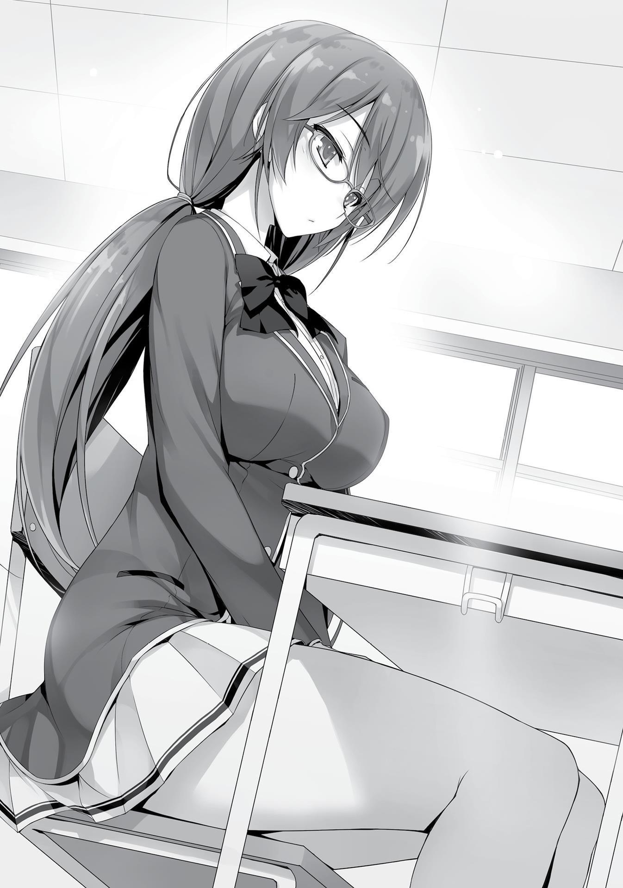
—¿Podrías por favor hacer algo de tiempo? Esto es importante, por eso me gustaría hablar contigo. Cuando Sudou-kun estuvo involucrado en el incidente, ¿quizás estabas en algún lugar cercano?
—No... no lo sé. Ya se lo he dicho a Horikita-san. Realmente no sé nada...
Sus palabras eran débiles, pero lo negó con vehemencia. Kushida podía ver claramente lo desagradable que le parecía esto a Sakura, así que no quería presionarla mucho más. Aunque al principio Kushida parecía un poco desconcertada, su preocupada expresión rápidamente se fundió en una agradable sonrisa. Aun así, no podía retirarse así, porque Sakura podría tener una gran influencia sobre el destino de Sudou.
—Así que... ¿está bien? Si me voy... —Susurró Sakura.
Sin embargo, algo parecía extraño. No era simplemente mala hablando con la gente. Parecía como si estuviera escondiendo algo. Eso se veía en su comportamiento. Sakura ocultó su mano dominante mientras evitaba el contacto visual. Aunque no se sintiera cómoda al ver los ojos de alguien, la gente generalmente miraba en la dirección de aquellos con los que hablaba. Sakura no miró la cara de Kushida en absoluto.
Si Ike o yo estuviéramos hablando con ella, podría haberlo entendido. Aunque fuera sobre todo por obligación formal, Sakura intercambió números con Kushida.
Pero el comportamiento de Kushida en una conversación individual era diferente.
No creo que Horikita se equivocara al sentir cierta incomodidad al hablar con Kushida. Yo mismo encontré algo un poco desagradable.
—¿No puedes dedicarme unos minutos? —Preguntó Kushida.
—¿Por qué? No sé nada...
Si Kushida fallaba, no ganaríamos nada con su conversación. Por supuesto, cuanto más tiempo se alargara esta incomodidad, más atención atraerían. Esto parecía un completo error de cálculo por parte de Kushida. Como ya se conocían y habían intercambiado información de contacto, Kushida esperaba que esta conversación fuera más fluida, y se metió en esta situación pensando
que no iba a ser rechazada. Eso explicaba por qué esto se estaba desmoronando ahora.
Horikita seguía atentamente la situación. Me miró con una expresión algo petulante. Era como si dijera que “sé que tus poderes de observación son increíbles”.
—Soy muy mala para relacionarme. Lo siento... —Murmuró Sakura.
Habló de una forma anormal, tensa, y no quería que Kushida se acercase más.
Al hablar antes de Sakura, Kushida la había descrito como una chica tímida pero normal. A juzgar por su comportamiento actual, es obvio que no era normal.
Kushida debe haber sentido lo mismo, porque no podía ocultar su confusión.
Kushida es normalmente muy buena haciendo que otros se abran a ella, pero aquí estaba fracasando. Horikita también entendió lo que estaba pasando.
Mientras observaba la conversación, llegó a una conclusión.
—Vaya, qué desafortunado. Kushida-san no pudo persuadirla.
Horikita tenía razón. Si Kushida no podía hacerlo, entonces pensaba que nadie más en nuestra clase podría hacerlo. Kushida es buena creando una atmósfera informal, en la que la gente con dificultades para relacionarse pueda conversar de forma natural. Sin embargo, cada uno tiene lo que considera su propio espacio personal. En otras palabras, un área prohibida. El antropólogo cultural Edward Hall dividió la idea de espacio personal en cuatro partes. Una de esas zonas es el llamado "espacio íntimo". En este espacio en particular, estarías lo suficientemente cerca para abrazar a alguien. Si un extraño intenta entrar en este espacio, la gente muestra de forma natural fuertes signos de rechazo. Sin embargo, si esa persona es su pareja o su mejor amigo, entonces no se sentirá incómodo.
Aunque alguien sólo fuera un conocido casual, a Kushida no le importaría dejar entrar a esa persona en su "espacio íntimo". Es decir, no parecía darle mucho valor a la idea del espacio personal.
Sin embargo, Sakura había rechazado claramente a Kushida. No....más bien, parecía que estaba huyendo. Cuando le preguntaron a Sakura por primera vez, dijo que "tenía planes". Si realmente tuviera planes, lo habría repetido cuando se
lo preguntaron de nuevo. Sakura cogió su mochila y se puso en pie, poniendo distancia entre ella y Kushida.
—Adiós.
Al parecer, Sakura decidió huir porque no pudo encontrar una manera hábil de terminar la conversación. Tomó una cámara digital de su pupitre y comenzó a alejarse. En ese momento, chocó contra el hombro de Hondou. Quien se concentraba en enviar mensajes de texto a un amigo, no prestaba atención por dónde iba.
—¡Ah!
La cámara digital de Sakura cayó al suelo con un fuerte golpe. Hondou simplemente siguió caminando, la atención seguía centrada en su teléfono. Se disculpó cuando se fue.
—Lo siento —dijo.
Sakura, nerviosa, se apuró a recoger su cámara.
—No puede ser. No hay nada en la pantalla...
Sakura se puso la mano sobre la boca en estado de shock total. La cámara se averió con el impacto. Presionó el botón de encendido una y otra vez, intentó sacar las pilas y volver a colocarlas, pero el indicador de encendido nunca se iluminó.
—Lo... lo siento. Es porque me acerqué y te hablé tan de repente, que... —
Empezó Kushida.
—No, no es eso. Sólo fui descuidada, eso es todo... De todos modos, adiós.
Kushida, incapaz de detener a la abatida Sakura, solo la vio marcharse con pesar.
—¿Por qué una chica deprimente como ella es mi testigo? Esto apesta. No quiere ayudarme para nada.
Sudou cruzó las piernas y se apoyó en la silla, suspirando exasperado.
—Estoy segura de que hay algo que averiguar allí. Además, no le preguntamos directamente a Sakura-san qué vio. Tal vez no pueda decirlo ella misma.
—Lo sé. Si planeara decir algo, lo habría hecho. Se reprimió, porque es adulta.
—Podría ser mejor así, Sudou-kun. Mejor que ella sea la testigo.
—¿Qué quieres decir?
—Ella no testificará a tu favor. Determinarán que causaste el incidente. Al final, la clase D se verá afectada por tus acciones, pero estaremos bien.
Tenemos testimonios de que mintieron sobre los actos violentos. Es difícil imaginar que la escuela nos penalice con más de 100 o 200 puntos por estar involucrados en este incidente. De esa manera sólo perderemos 87
puntos, y no serás expulsado. Sin embargo, asumiremos más culpa que la de la clase C —Horikita dijo implacablemente sus pensamientos en voz alta, como si los hubiera estado guardando en su interior todo este tiempo.
—No bromees. Soy inocente. ¡Inocente! Les pegué, pero fue en defensa propia.
—No creo que la defensa propia sea de mucha ayuda en este caso.
Ah, accidentalmente dije eso en voz alta.
—Hey, Ayanokouji-kun.
Intenté actuar distante mientras me giraba, pero descubrí que la cara de Kushida estaba súper cerca de la mía. Viejo, Kushida se ve súper linda de cerca. En lugar de sentirme incómodo por esta invasión de mi espacio personal, quería que se acercara aún más.
—Ayanokouji-kun, eres el aliado de Sudou-kun, ¿no? —preguntó.
—Bueno... Sí, lo soy. ¿Por qué me preguntas eso otra vez?
—Bueno, es sólo que las cosas parecen un poco tensas. El deseo de todos de salvar a Sudou se está desvaneciendo.
Miré alrededor del salón de clases.
—Eso parece. Piensan que lo que sea que pase, pasará. Que no hay nada que hacer.
Si incluso Sakura, la testigo clave, le negó a Sudou su ayuda, entonces no hemos hecho ningún progreso.
—No puedo imaginar que podamos encontrar una salida perfecta para Sudou. Vamos a dejarlo —murmuró Ike sin entusiasmo.
—¿Qué demonios, chicos? ¿No dijeron que me ayudarían? —clamó Sudou.
—Bueno, es sólo que... ya sabes...
Sudou se dirigió a los demás compañeros de clase en busca de aprobación.
—Ni siquiera tus amigos quieren ayudarte. Que desafortunado —murmuró Horikita.
Los otros estudiantes no trataron de negar lo que Ike y Horikita dijeron.
—¿Por qué tengo que sufrir así? ¡Puñado de imbéciles inútiles!
—Qué cosa tan interesante dices, Sudou-kun. ¿No te has dado cuenta de que todo el mundo se está volviendo en tu contra?
—¿Qué quieres decir con eso?
Nuestra clase a menudo se ponía muy tensa, pero hoy fue peor de lo habitual.
Sin embargo, como Sudou estaba hablando con Horikita, estaba haciendo todo lo posible por contenerse. Sin embargo, el ataque llegó a él desde una dirección inesperada.
—¿No crees que hubiera sido mejor que te hubieran expulsado? Tu existencia está lejos de ser hermosa. No, de hecho, podría decir que tu vida es muy fea, pelirrojo-kun.
La voz venía de un chico que miraba su reflejo en un espejo para arreglarse el pelo. Era Kouenji Rokusuke, un tipo especialmente extraño incluso entre la gente notablemente extraña de nuestra clase.
—¿Qué demonios? Di eso una vez más, ¡te reto!
—Sería ineficiente decírtelo, no importa cuántas veces lo haya hecho. Si sé que eres tonto, entonces no importa cuántas veces trate de instruirte,
¿verdad?
Kouenji ni siquiera miraba a Sudou mientras hablaba. Era como si fuera un monólogo. De repente, se oyó un gran estruendo. Un pupitre voló por los aires y se astilló contra el suelo después de recibir una patada.
Todos se quedaron paralizados. Sudou, silencioso e intenso, caminó hacia Kouenji.
—Muy bien, es suficiente. Cálmense, ustedes dos —dijo Hirata. Era el único chico capaz de moverse en esta horrible situación. El corazón se aceleró—. Sudou-kun. Ciertamente eres parte del problema aquí. Pero Kouenji-kun, tú también estás mal.
—Puh. No creo que haya experimentado estar equivocado desde que nací.
Debes estar confundido.
—Adelante. Te aplastaré la cara y te bajaré los humos —dijo Sudou.
—Basta.
Hirata agarró el brazo de Sudou, intentando detenerlo, pero Sudou no mostraba ningún signo de retroceder. Quería desahogar todas sus frustraciones, incluyendo lo que Horikita dijo, golpeando a Kouenji.
—Basta ya. No quiero ver a mis amigos pelear...
—Es como dice Kushida. No sé Kouenji-kun, pero soy tu aliado, Sudou-kun.
Hirata era demasiado genial. Sería apropiado que se cambiara el nombre a
"Héroe". Eso sería increíble.
—Voy a detener esto. Sudou-kun, deberías actuar más maduro. Si causas otro gran alboroto, la evaluación de la escuela de ti sólo empeorará.
¿Verdad?
—Tch.
Sudou miró fijamente a Kouenji y abandonó el aula, dando un portazo al salir.
Después, se escuchó una fuerte voz en el pasillo.
—Kouenji-kun. No pretendo obligarte a ayudar. Pero te equivocaste al culparlo.
—Desafortunadamente, nunca he experimentado estar equivocado. Ni una sola vez en toda mi vida. Parece que ya es hora de mi cita. Bueno, si me disculpas.
Al ver cómo se desarrollaba su extraña conversación, me di cuenta de que a nuestra clase le faltaba unión.
—Sudou-kun realmente no ha madurado, ¿verdad?
—¿No podrías haber sido un poco más amable, Horikita-san?
—No muestro misericordia a la gente que no intenta mejorar. No nos ha causado nada más que problemas, y no tiene características que lo rediman.
Bueno, no tienes piedad ni siquiera con la gente que intenta hacer esas cosas.
—¿Qué?
—¡Ooh!
Cuando me encogí, me clavaron un cuchillo afilado (bueno, una mirada aguda).
Hice una pequeña objeción.
—Hay una expresión popular en este mundo: Los grandes talentos maduran tarde. Sudou podría convertirse en un jugador profesional de la NBA, ¿no? Creo que hay una posibilidad de que haga una gran contribución a la sociedad. El poder de la juventud es infinito —Pronuncié un eslogan que sonaba tan original como un comercial de televisión.
—No pretendo negar que podría suceder dentro de 10 años, pero estoy buscando cosas que me ayuden a alcanzar la Clase A ahora mismo. Si no puede ayudarnos ahora mismo, entonces no vale nada para mí.
—Supongo que sí.
Bueno, la opinión de Horikita era consistente, lo que fue agradable. Estaba más preocupado por Ike y los otros. Sus estados de ánimo cambiaban con frecuencia, así que no podía relajarme.
—Te llevas bien con Sudou, ¿no? Comes con él.
—No creo que estemos en malos términos, pero siento que es una carga.
Sudou se salta las clases más que nadie. También es el que más pelea.
Tengo que poner un límite.
Podía ver a qué se refería. Ike parecía tener sus propios pensamientos.
—Intentaré convencer a Sakura-san. Una vez que lo haga, las cosas cambiarán.
—No sé sobre eso. Teniendo en cuenta las circunstancias, aunque consigamos el testimonio de Sakura-san, creo que tendrá un impacto mínimo. La escuela tendrá dudas sobre la aparición repentina de un testigo de la clase D.
—¿Dudas? ¿Quieres decir que pensarán que estamos mintiendo sobre el testigo?
—Por supuesto. Considerarán el testimonio de la testigo junto con sus posibles intenciones. No creerán que su palabra sea una prueba absoluta.
—Imposible. ¿Quieres decir que ni siquiera esa prueba sería perfectamente válida?
—Bueno, la mejor y más milagrosa situación sería si hubiera un testigo de confianza de otra clase o grado que haya visto todo el incidente desde el principio. Sin embargo, no hay nadie que se ajuste a esa descripción —dijo Horikita con confianza.
Yo pensaba lo mismo.
—Entonces, no importa cuánto intentemos probar la inocencia de Sudou, nosotros...
—Sin embargo, si el incidente hubiera ocurrido en un salón de clases, sería una historia diferente.
—¿Qué quieres decir?
—Bueno, hay cámaras que graban lo que pasa en las aulas, ¿verdad? Por lo tanto, si algo pasara, habría evidencia de ello. Esas grabaciones acabarían con las mentiras de los tipos de la clase C.
Apunté a las dos o más cámaras colocadas en el techo, cerca de las esquinas del aula. Eran lo suficientemente pequeñas como para no ser una distracción, y se mezclaban bien con su entorno, pero eran sin duda cámaras de seguridad.
—La escuela revisa esas cámaras para ver si hablamos o nos dormimos durante la clase. De lo contrario, no podrían evaluar con precisión nuestro desempeño mensual.
—¡¿En serio?! ¡Nunca lo supe!
Ike parecía totalmente conmocionado.
—Acabo de enterarme de lo de las cámaras.
—No son fáciles de ver. Tampoco me di cuenta hasta que hablaron de los puntos por primera vez.
—Bueno, la gente común no se preocupa por las cámaras ocultas. Quiero decir, la mayoría no sería capaz de señalar directamente las cámaras en una tienda de conveniencia, incluso si van allí todo el tiempo, ¿verdad?
Si esa persona lo sabía, probablemente tendría remordimientos de conciencia o estaría extremadamente nerviosa. O podrían haberlas visto accidentalmente.
Bueno, considerando que ya no necesitábamos buscar un testigo, pensé que era hora de volver a casa. Kushida y los demás podrían hablar de buscar otro testigo.
Sería muy molesto ser involucrado en eso.
—Ayanokouji-kun, ¿quieres que regresemos juntos? —Preguntó Horikita.
—……………
Después de escuchar esa invitación, puse inconscientemente mi mano contra su frente. Se sentía bien y agradable, y noté la suavidad de su piel.
—¿Sabes que no tengo fiebre, verdad? Sólo quiero hablar contigo de algo
—dijo sin rodeos.
—Ah, bien. No hay problema.
Era raro que Horikita me invitara a cualquier parte. Ya que el mundo se ha vuelto loco, me preguntaba si mañana lloverá.
—Ustedes dos realmente se han vuelto cercanos, ¿eh? Quiero decir, ayer parecía que ibas a asesinarme después de que te tocara el hombro, y ahora....
Ike miró mi mano en la frente de Horikita con aparente descontento.
Horikita, al darse cuenta de esto, no cambió su expresión mientras me habló.
—¿Te importaría? Tu mano.
—Oh, lo siento, lo siento.
Estaba aliviado de que Horikita no contraatacara, aparté mi mano. Estaba en piloto automático cuando los dos estábamos en el pasillo. Podía adivinar lo que Horikita quería, pero no sabía exactamente lo que iba a decir.
—Eso me recuerda. Quiero hacer una parada antes de volver a los dormitorios. ¿Está bien?
—No me importa, siempre y cuando no lleve demasiado tiempo.
—Por supuesto. Sólo tardará unos 10 minutos.
PARTE 4
Hacía calor y humedad después de clase. Me dirigí hacia el edificio especial, donde se produjo el incidente. No era como un caso de asesinato en el que había que sellar el área con cinta adhesiva para evitar que la gente contaminara la escena del crimen. No se veía muy diferente de lo normal. No vi indicios de que las instalaciones de este edificio se utilizaran con frecuencia, como las aulas especiales, el salón de economía doméstica, la sala audiovisual, etc. Este habría sido un lugar ideal para llamar a Sudou.
—Hace mucho calor...
Este calor era inusual. Así era como se debía sentir el verano en la escuela, pero al menos había imaginado que dentro del edificio sería algo cómodo, el aire fresco equilibrando el calor. Supongo que me había acostumbrado demasiado a los edificios con aire acondicionado. Me sentí aún más acalorado debido a esa diferencia de expectativas. El aire acondicionado seguramente estaba encendido durante las horas de clase en el edificio especial, pero ahora mismo no lo estaba.
—Siento haberte traído aquí.
Horikita, que estaba de pie a mi lado, simplemente miró por el pasillo. No estaba sudando para nada.
—Realmente has cambiado, ¿no? Es extraño que te arriesgues en este caso. El testigo ya fue encontrado, y hemos confirmado que no queda nada por hacer. ¿Qué estás tratando de hacer? —preguntó.
—Sudou fue el primer amigo que hice aquí. Quiero ayudarlo.
—¿Crees que hay una manera de probar su inocencia?
—No estoy tan seguro. No puedo decirlo todavía. Decidí tomar un poco de iniciativa, ya que no soy muy bueno para relacionarme con Hirata, Kushida o grandes grupos de personas. Ser sociable definitivamente no es mi fuerte. Pensé que hoy todos me harían corretear por la escuela o el aula, así que decidí huir. Me gusta evitar problemas, ¿recuerdas?
—Eso es cierto. Pero eres tan contradictorio como siempre, ya que estás ayudando a un amigo.
—Bueno, los seres humanos son, para bien o para mal, criaturas por conveniencia.
Ya había tocado este tema con Horikita, pero ella parecía relativamente abierta a mis ideas. Normalmente actuaba sola, así que mientras algo no la perjudique, no le importa. Sin embargo, no es de las que se identifican con el dolor de otra persona.
—Bueno, tu forma de pensar no es relevante para mí, Ayanokouji-kun, así que eres libre de pensar lo que quieras. Además, aprecio que digas que esos dos son difíciles de tratar.
—Bueno, eso es porque los odias, ¿no?
—Tener un enemigo común tiende a llevar a la cooperación.
—No. Sólo porque sea malo tratando con ellos no significa que los odie.
Por favor, no pienses que soy como tú.
Realmente quería acercarme a Kushida y a Hirata. Pero la interpretación de Horikita de mi postura era bastante amplia, y pensaba que teníamos opiniones similares sobre el asunto. Murmurando, caminé hasta el final del pasillo y escudriñé las esquinas, asegurándome de no pasar por alto ningún rincón o grieta. Horikita notó algo, y empezó a mirar a su alrededor. Empezó a reflexionar.
—Parece que no hay ninguna aquí. Qué lástima.
—¿Eh? ¿Qué? —le pregunté.
—Cámaras, como las de las aulas. Si hubiera cámaras aquí, tendríamos pruebas sólidas. No puedo encontrar ninguna.
—Ah, sí. Las cámaras de seguridad. Tienes toda la razón en eso. Si hubiera aquí, este asunto estaría resuelto.
Había enchufes eléctricos en el techo, pero no había indicios de que se utilizaran.
No había nada en el pasillo que obstruyera la visión de una cámara, así que si hubieran instalado una, todo el incidente se habría grabado desde el principio.
—Bueno, para empezar, ¿la escuela tiene cámaras en los pasillos?
Probablemente no era sólo el edificio especial. Los pasillos de los edificios principales de la escuela tampoco tenían cámaras.
—Si tuviera que pensar en lugares donde no se instalarían, diría que los baños y los vestuarios. ¿Verdad?
—Sí. Lo más probable.
—Si hubiera cámaras de seguridad aquí, la escuela las habría revisado primero y no tendríamos ningún problema con este caso.
Agité la cabeza, avergonzado de haberme hecho ilusiones por un momento. Por un corto tiempo, merodeamos, perdiendo el tiempo y sin lograr nada.
—Entonces, ¿se te ha ocurrido un plan para salvar Sudou-kun? —
Preguntó Horikita.
—Por supuesto que no. Tu trabajo es pensar en planes, Horikita. No te pediré que salves a Sudou, pero sería bueno que dirigieras a la Clase D en la dirección correcta.
Horikita se encogió de hombros, exasperada. Seguramente estaba pensando en una respuesta. Sin embargo, ella fue la que encontró a Sakura, así que no era que no quisiera ayudar en absoluto.
—¿Me estás pidiendo ayuda? ¿Para usarme? ¿A mí? ¿Aquí y ahora?
—Tener a Sakura como testigo nos daña más de lo que nos ayuda. Creo que sería mejor si buscáramos otra cosa.
Horikita lo entendió. Sin embargo, estaba actuando de forma distante, aislada del mundo, como si fuera demasiado buena para preocuparse por nada.
—Sudou-kun tiene muchas cualidades que no soporto. Sin embargo, quiero disminuir la responsabilidad que le están atribuyendo. El mejor
resultado posible es que todavía tendremos algunos puntos, aunque la imagen de la clase D empeore.
Sonaba honesta. Normalmente, no era tan sincera. Eso no era algo especialmente malo. Sin embargo, la mayoría de las personas no son aptas para la soledad. Por lo tanto, a veces se comportan de forma hipócrita, como salvar a alguien fingiendo altruismo para hacer que otras personas lo amen. Sin embargo, ese no parecía ser el estilo de Horikita. Además, a diferencia de Kushida y los demás, había renunciado por completo a probar la inocencia de Sudou.
—Como dije, a menos que aparezca un testigo perfecto, probar la inocencia de Sudou-kun será imposible. Si esos estudiantes de la clase C
admitieran que mintieron, supongo que las cosas saldrían bien. ¿Crees que es probable?
—De ninguna manera. Nunca lo admitirán.
La mentira se mantendrá, especialmente porque la otra clase también carece de evidencia. Eso fue lo que pensé. Nuestra única prueba es la palabra de Sudou.
Estábamos completamente a oscuras.
—No hay nadie aquí después de clase.
—Bueno, es obvio. Sólo usan el edificio especial para actividades de los clubs.
Uno de ellos, Sudou o los alumnos de la clase C, convocaron al otro al edificio especial. Después de eso, como si fuera el destino, los dos enemigos comenzaron a pelear. Al final, Sudou lesionó a los demás, y ellos se quejaron de esto. Ese es todo el problema.
Definitivamente yo no vendría a un lugar tan cálido como este a menos que alguien me hubiera hecho venir. La humedad es sofocante. Sentí que si me quedaba unos minutos más, mi cabeza explotaría.
—¿No tienes calor, Horikita?
Mientras el calor me destruía, Horikita miraba a su alrededor con expresión fría.
—Soy bastante resistente cuando se trata de la temperatura. Ayanokouji-kun, no pareces estar bien.
El calor me estaba mareando. Me acerqué a la ventana, esperando un poco de aire fresco. Abrí la ventana....e inmediatamente la cerré.
—Eso fue peligroso.
Abrir la ventana sólo dejó entrar más aire caliente en la habitación. Si la dejaba entreabierta, sería una tragedia, estoy seguro. Cuando pensé en cómo seguiría haciendo más calor durante todo el mes de agosto, me deprimí. Sin embargo, venir aquí hoy nos ha dado resultados. Las cosas no eran imposibles...
—¿En qué estás pensando ahora mismo? —Preguntó Horikita.
—Oh, nada en realidad. Sólo que hace calor. He llegado a mi límite.
Hicimos todo lo que pudimos, así que emprendimos el regreso.
—Ah.
—¡Uy!
Al doblar la esquina del pasillo, me encontré con otra estudiante.
—Lo siento, ¿estás bien? —Le pregunté.
El impacto de nuestra colisión no fue muy duro. Al menos, ninguno de los dos se cayó.
—Sí. Lo siento. Fui descuidada —dijo.
—Oh no, lo siento. Espera... ¿Sakura?
A mitad de la disculpa, me di cuenta de con quién choqué.
—Ah, ¿um?
A juzgar por su preocupada respuesta, no sabía quién era yo.
Después de mirarme fijamente por un momento, pareció reconocerme como uno de sus compañeros de clase. Pero no tiene sentido si sólo puedes reconocer a alguien después de una intensa mirada.
—Ah, oh. Bueno, verás.... Mi hobby es tomar fotos, así que...
Me mostró la pantalla de su teléfono. No planeaba pedir detalles. Además, no es particularmente extraño usar tu teléfono. Sakura pensó que probablemente volveríamos a los dormitorios, y ahora sin duda se preguntaba por qué estábamos aquí.
—¿Dijiste que era tu hobby? ¿Qué tipo de fotos? —Le pregunté.
—Cosas como el pasillo... y la vista desde la ventana. Cosas así, supongo.
Justo cuando Sakura terminó su breve explicación, se fijó en Horikita y bajó la mirada.
—Ah, um...
—Tengo algo que me gustaría preguntarte, Sakura-san —dijo Horikita.
Sakura se veía incómoda, pero Horikita, que nunca dejaba pasar una oportunidad, se acercó a ella. Sakura retrocedió, asustada. Intenté contener suavemente a Horikita, haciéndole un gesto para que dejara de perseguir a Sakura.
—Adiós.
—Sakura —Le dije mientras trataba de escapar—. No tienes que forzarte.
Hablé sin pensar. Sakura se detuvo, pero no se dio la vuelta.
—No deberías sentirte obligada a presentarte como testigo, Sakura. Sería inútil forzarte a testificar. Pero si alguien aterrador está tratando de intimidarte o algo así, por favor habla con nosotros. No tengo idea de cuánto puedo ayudar, pero lo intentaré.
—¿Estás hablando de mí? —Murmuró Horikita.
Ignorando la existencia de un monstruo tan aterrador, decidí dejar ir a Sakura.
—No vi nada. Tienes a la persona equivocada...
Insistía en que no era la testigo. Hasta ahora, operábamos basándonos puramente en el dogmatismo y los prejuicios de Horikita. Era muy posible que Sakura no fuera la testigo, como ella dijo.
—Entonces está bien. Sin embargo, si alguien más trata de acosarte, por favor, dímelo.
Sakura bajó sumisamente las escaleras.
—Esa era probablemente nuestra única gran oportunidad, ¿sabes? Ella vino aquí porque aún está pensando en el incidente.
—Como lo niega, no podemos obligarla a hacer nada. Además, ¿entiendes, Horikita? Un testigo de la Clase D no nos ayudará mucho en nuestro caso.
—Sí, supongo.
Actuaría de acuerdo con su lógica. Sin embargo, no sabía en qué estaba pensando. Por eso nuestra investigación estaba paralizada.
—Hey, ustedes dos. ¿Qué están haciendo?
Nos giramos en respuesta a la inesperada voz. Una hermosa muchacha de cabello rubio fresa estaba de pie detrás de nosotros. La reconocí, aunque nunca antes he hablado con ella. Es una estudiante de la Clase B, Ichinose. Se dice que es una estudiante excelente.
—Siento interrumpirlos así. ¿Tienen un momento? Oh, si por casualidad están en medio de una cita, me gustaría que la terminen de inmediato.
—No es nada de eso.
Horikita lo negó inmediatamente. Sólo era rápida para responder a insinuaciones como esta.
—Ja, ja, ya veo. Este lugar es demasiado caluroso para ser un punto para citas.
Yo no tenía ninguna conexión con Ichinose. No podía estar seguro, pero es probable que ni siquiera supiera mi nombre. Yo era sólo uno de muchos estudiantes para ella. ¿Quizás era una conocida de Horikita? ¿O una amiga? No.
Es imposible. Si de repente dijeran algo como: "¡Oh, vaya, ha pasado mucho tiempo! ¿Cómo estás? y "Estoy bien, estoy bien" y se abrazaran, empezaría a echar espuma por la boca y luego me desmayaría.
—¿Tienes algún asunto con nosotros? —Preguntó Horikita.
Horikita estaba en guardia después de la repentina aparición de Ichinose. No creía que fuera una coincidencia que Ichinose tratara de hablar con nosotros.
—Asunto, ¿eh? Bueno, es más como "¿Qué están haciendo aquí?"
—Nada. Estamos vagando por aquí sin ninguna razón.
Me hubiera gustado responder honestamente, pero la presión de la mirada de Horikita me hizo mentir.
—Sin ninguna razón, ¿eh? Son de la Clase D, ¿no?
—¿Nos conoces?
—Nos hemos visto dos veces antes. Pero no hablamos directamente.
Recuerdo que también te vi en la biblioteca una vez.
Parece que de alguna manera se acordaba de mí. Tal vez yo era un poco genial.
—Tengo muy buena memoria.
¿Quería decir que si su memoria no fuera buena, no le causaría una buena impresión? Estuve un poco feliz, pero mi frivolidad murió en el comentario anterior.
—Pensé que habría algo relacionado con la pelea. No estaba aquí ayer cuando la clase B se enteró de lo del testigo. Más tarde, me enteré de que la clase D estaba buscando pruebas de la inocencia de Sudou.
—Si estamos aquí por una investigación, ¿cuál es tu conexión?
—Hmm, ¿una conexión? Bueno, no estoy conectada. Cuando me enteré de lo que pasó, tuve algunas dudas. Así que pensé en venir aquí para echar un vistazo. ¿Te importaría ponerme al corriente?
¿Estaba simplemente interesada? Tras un breve período de silencio, Ichinose habló tímidamente.
—Supongo que no, ¿eh? Bueno, si las otras clases estuvieran interesadas...
—No, no estamos diciendo que no, pero...
—No puedo evitar pensar que hay un motivo oculto —dijo Horikita.
Intenté manejar esta situación pacíficamente, pero Horikita destruyó rápidamente ese plan. Ichinose, sintiendo claramente la hostilidad tras las palabras de Horikita, ladeó el cuello y sonrió.
—¿Motivo oculto? ¿Crees que estamos trabajando en la oscuridad para perjudicar tanto a la Clase C como a la Clase D?
Ichinose tenía una expresión desconcertada.
—¿Necesitas estar tan alerta? Sólo tengo curiosidad, eso es todo.
—No quiero hablar con alguien que tenga 'sólo curiosidad'. Haz lo que quieras.
Horikita intentó poner distancia entre ellas. Miró por la ventana.
—Por favor, dime algo. Todo lo que mi profesora y mis amigos dicen es que hubo algún tipo de pelea.
Dudé un poco, pero como no había mucha información que obtener, puede que no valiera la pena guardar silencio. Así que le expliqué la situación. Le dije que tres personas de la clase C llamaron a Sudou y hubo una pelea. Sin embargo, Sudou cambió las tornas sobre sus posibles atacantes y les dio una paliza.
También le dije que después de la pelea, los chicos de la clase C presentaron un informe falso a la escuela. Ichinose escuchó la historia con atención.
—Así que eso fue lo que pasó. Esta historia aún no ha llegado a la clase B.
Oigan, ¿no es un gran problema? No importa quién mintió, ya que se trata de violencia, ¿verdad? ¿No deberían apurarse para descubrir la verdad?
—Por eso vinimos aquí a investigar. Pero no encontramos mucho.
Esto no era nada parecido a un caso de asesinato, así que dudaba que quedaran muchas pistas que encontrar. Sin embargo, en contra de nuestras expectativas, obtuvimos algunos resultados.
—Así que le creen a Sudou-kun porque es su compañero de clase. Y su amigo, por supuesto, eso es obvio. Así que la clase D está indignada porque Sudou está siendo falsamente acusado, ¿verdad?
Difícilmente se podría convencer a una persona externa como Ichinose de que no estamos haciendo esto por amistad o lealtad de clase. No iba a intentar explicarlo.
—¿Qué harían si Sudou-kun fuera el mentiroso? Supongan que hubiera pruebas que demuestren su culpabilidad. ¿Entonces qué?
—Yo lo reportaría honestamente. Después de todo, encubrir una mentira sólo servirá para atormentarnos más tarde.
—Sí, está bien. Yo también lo creo.
Aun así, nuestras dificultades no iban a tener ningún impacto en Ichinose.
—¿Has terminado? Escuchaste lo que querías —Horikita habló bruscamente y suspirando, intentando alejar a Ichinose.
—Sí, ¿qué tal si los ayudo? A buscar al testigo, o lo que sea. Seguramente llegarán más lejos con más gente, ¿verdad?
Obviamente, más gente sería mejor. Eso es cierto.
Sin embargo, no es como si le hubiéramos dicho: "Por favor, ayúdanos, estamos en problemas".
—¿Por qué una estudiante de la Clase B ofrecería ayuda?
—¿Las clases D y B no tienen nada que ver? No sabemos cuándo surgirán estos casos, ni a quién involucrarán. Como las clases están en constante competencia, siempre existe la posibilidad de que esto suceda.
Simplemente este fue el primer caso. Si quien mintió gana, eso sentaría un mal precedente. Además, yo personalmente no puedo alejarme ahora que sé lo que pasó.
No sabía si Ichinose estaba hablando en serio o bromeando.
—Si la Clase B trabaja con ustedes, ¿no mejoraría dramáticamente su credibilidad? Aunque supongo que lo contrario también podría ser cierto.
La clase D puede sufrir mayores consecuencias si se descubre la verdad...
En otras palabras, si Sudou mintió, eso probaría la afirmación de la clase C. En ese caso, Sudou sería incuestionablemente suspendido, y la Clase D podría sufrir daños fatales.
—¿Qué piensan? No creo que sea una mala sugerencia.
Eché un vistazo para ver lo que pensaba Horikita. Sin embargo, todavía me daba la espalda. Todavía estaba mirando por la ventana, inmóvil. Me preguntaba qué pensaba de la oferta de Ichinose. Por supuesto, nos preocupaba el efecto que esto tendría. Si la Clase D intenta probar la inocencia de Sudou por sí sola, nuestra credibilidad sería baja a menos que pudiéramos encontrar evidencia de que absolutamente, al 100% confirmara la inocencia de Sudou.
Si un estudiante de la clase B se involucra, puede haber implicaciones tremendas.
Decidí sopesar los aspectos positivos y negativos de la oferta, a pesar de que era descortés. Obviamente, aún no podía confiar en Ichinose. Ella es una estudiante de la clase B, y no gana nada involucrándose. Si ayudar a otros por pura buena voluntad se reflejara en puntos de clase o privados, entonces podría entender su motivación. No sería fácil preguntarle, pero puede que tenga información importante. La única manera de estar seguro es preguntar.
—Aceptemos su ayuda, Ayanokouji-kun.
Horikita tomó una decisión, determinando que los beneficios superan a los riesgos. Estaba agradecido de que tomara una decisión tan rápidamente.
Realmente yo no tenía el poder de decidir; ese era el trabajo de Horikita.
Ichinose sonrió, mostrando sus blancos dientes.
—¡Entonces está decidido! Umm....
—Horikita.
Horikita pronunció su nombre con franqueza, como si al hacerlo aprobara nuestra alianza estratégica.
—Encantado de conocerte, Horikita-san. Y a ti también, Ayanokouji-kun.
De forma inesperada conocimos a Ichinose de la clase B y la aceptamos como aliada. Todavía existía el riesgo de que esto pudiera llevar a cosas malas. Pase lo que pase, las cosas iban a cambiar.
—Ya encontramos un testigo. Desafortunadamente, es una estudiante de la clase D.
La Ichinose emitió un suspiro exasperado.
—Bueno, eso significa que no hay otro testigo. Quiero decir, supongo que alguien de otra clase pudo haber sido testigo, pero no es probable.
Las posibilidades eran ciertamente escasas. Pero aún había una posibilidad.
—De todos modos, sobre tu amigo. Es de primer año, pero podría ser titular en el equipo de baloncesto, ¿no? Eso es asombroso. Incluso si les causa problemas ahora mismo, podría convertirse en un gran recurso más tarde. Quiero decir, la escuela evalúa las actividades de los clubes y las actividades de beneficencia, ¿no? Así que si entra en un torneo y lo hace bien, Sudou-kun podría ganar puntos. Esos también estarán ligados a sus puntos de clase. Esperen.... ¿No lo sabían? ¿No se los dijo su profesora?
Sólo escuchamos que influiría en nuestros puntos privados.
—Esta es la primera vez que escucho que afecta a los puntos de nuestra clase. Tendré que quejarme más tarde con Chabashira-sensei —murmuró Horikita, un poco disgustada.
Este fue otro descuido, otro caso en el que Chabashira-sensei no reveló algo importante. Me preguntaba si la clase B se había enterado de esto por su profesora....
Como de costumbre, nuestra maestra ni siquiera pretendió darnos un trato igualitario. Me sentí discriminado.
—Su maestra es un poco rara —dijo Ichinose.
—No parece motivada para decirnos cualquier cosa. Es completamente apática. Algunos profesores son así.
No pensé que fuera particularmente preocupante, pero Ichinose retrocedió.
—¿Sabían que la escuela evalúa a los profesores cuando su clase se gradúa?
—Es la primera vez que oigo hablar de eso. ¿Estás segura?
No me interesaba tanto pero no tenía más remedio que interesarme. Esa era una distinción crucial.
—Nuestra maestra, Hoshinomiya-sensei, lo dice como si fuera su lema.
Dice que quiere hacerlo lo mejor posible porque el profesor de la clase A recibe un bono especial. Parece que es muy diferente para ustedes.
—Envidio su relación con su maestra, y el ambiente de tu clase.
A nuestra maestra parece faltarle ambición, o incluso interés en el dinero. Sentía que incluso si fracasábamos, ella diría que era genial.
—Creo que sería bueno reunirnos y discutir las cosas.
—Nunca pensé que recibiría ayuda del enemigo.
—Esto parece un problema que tenemos que resolver antes de poder pelear. No estamos en igualdad de condiciones, ¿verdad?
Otras clases se compadecían de nosotros. En todo caso, esto mostró el poco interés que Chabashira-sensei sentía por sus estudiantes.
—Quiero cambiar de profesora con la clase B.
—Bueno, creo que eso sería difícil de manejar.
Me acordé de mi primer contacto con Hoshinomiya-sensei. Parecía tener sus propias dificultades inherentes como maestra.
—¡Ah, hace tanto calor aquí!
Ichinose sacó un lindo pañuelo cubierto de dibujos de pandas, y lo usó para limpiar suavemente el sudor de su frente. Nuestros gruesos uniformes realmente retienen el calor.
—Una escuela que utiliza constantemente aire acondicionado en edificios vacíos y que no es amable con el medio ambiente es lo peor —dijo Horikita.
—Ja, ja, ja, ja, probablemente sea verdad. Eres muy interesante —
Ichinose se rió, aunque eso no era realmente una broma.
—No creo que haya nada gracioso en lo que acabo de decir...
—¿Qué tal si intercambiamos información de contacto para que las cosas progresen sin problemas?
Horikita me lanzó una mirada que parecía decir: "No quiero hacerlo. Dale la tuya".
—Si te parece bien tener mi información, aquí tienes —le dije.
—Claro, entendido.
Después de intercambiar información, de repente me di cuenta de que tenía un número inesperado de contactos de chicas. Aunque era sólo principios de julio, ya tenía siete nombres y números de teléfono en mi agenda, tres de ellos chicas.
Quizás.... sin darme cuenta me he sumergido profundamente en las alegrías de la juventud. Además, me enteré de que el nombre de pila de Ichinose es Honami, un dato innecesario.
PARTE 5
Ichinose se mostró seria en cuanto a idear estrategias y ser una aliada de confianza. Cada vez que quería permiso para intentar algo, se ponía en contacto con nosotros, aunque ya había dicho que le dejara las cosas a ella. No creí que necesitara limitarse tanto. Al regresar a los dormitorios, pensé que nos separaríamos, pero Horikita me siguió hasta mi habitación. Parece que todavía quiere hablar.
—Perdón por la intrusión —dijo Horikita al entrar en la habitación, aunque no había nadie más.
Me preguntaba por qué me sentía un poco nervioso estando solo con Horikita a puertas cerradas.
—Oh, sólo para comprobarlo, ¿tienes una también? ¿Una llave de repuesto? —Le pregunté.
—¿Para tu habitación? Ike-kun preguntó antes si quería una. Me negué.
Justo lo que esperaba de ella. Es la única con sentido común.
—Después de todo, es raro que visite tu habitación, Ayanokouji-kun.
Además, venir aquí es un acto vergonzoso. Una vergüenza. ¿Entiendes?
Asumí que respondería así. No me dolió para nada. Definitivamente no estaba pensando en algo como, Wow, eso fue inesperadamente duro.
—¿Por qué estás trazando letras en la pared con el dedo?
—Para esconder mi palpitante corazón. O algo así.
Lo que más me asusta es que no tenía malas intenciones. Estoy seguro de que si le preguntara, diría algo como: "Pero sólo dije la verdad".
—Ayanokouji-kun, quiero escuchar tus pensamientos sobre el caso de Sudou-kun una vez más. Además, encuentro las acciones de Kushida-san un poco preocupantes.
—Si te preocupa ahora, ¿no habría sido mejor participar antes en el proceso?
—Imposible. La persona en cuestión no reconocía lo que estaba sucediendo. Ahora me ofrezco a regañadientes a ayudar por el bien de nuestra clase. Francamente, sigo pensando que hubiera sido mejor abandonarlo.
—¿A pesar de que ayudaste a Sudou durante el examen?
—Eso fue diferente. Incluso si logramos probar milagrosamente su inocencia, ¿crees que madurará? Salvarlo podría tener el efecto contrario.
Su mirada desafiante parecía decir: "¿Entiendes lo que quiero decir?
—¿Así que renuncias a probar la inocencia de Sudou y lo dejas enfrentar el castigo por su propio bien?
Horikita tenía una expresión un poco descontenta, pero luego pareció que se había dado cuenta.
—Conociendo la defectuosa personalidad de Sudou, se dio cuenta desde el principio lo difícil que sería probar su inocencia, ¿no es así? De esa manera, es más fácil pensar que estaría mejor aceptando su castigo.
Especialmente para los que lo odian.
Horikita pareció querer añadir: "Tú piensas lo mismo, ¿verdad?" Me sentí como si hubiera sido empujado contra la pared, incapaz de correr. Si tratara de negarlo a la fuerza, ella indagaría más.
—Bueno, ¿no estaría claro para alguien que se tomara un momento para pensar?
—Probablemente. Al parecer, Kushida-san e Ike-kun y los demás no se han dado cuenta en absoluto. Simplemente creen en Sudou-kun, y quieren salvarlo de esta mentira por su bien y por el bien de nuestra clase. No entienden la urgencia de la situación.
Sus comentarios hacia sus compañeros de clase, aquellos que ya habían compartido la alegría y el dolor juntos, eran completamente despiadados.
—Kushida parece entender al menos un poco, y a pesar de ello está trabajando para salvar a Sudou —dije.
—¿Un poco? Entonces, ¿se dio cuenta ella sola?
—¿Eh? Bueno, no, es...
—Se lo dijiste, ¿verdad?
Me acorraló con sus palabras. Era como ser interrogado. Me asusta un poco.
—Se te ocurrió la idea de conseguir las preguntas del examen y comprar los puntos del examen. No puedo decir que me sorprenda. A veces pareces bastante astuto, pero... estoy disgustada.
Aquellos que quieren vivir honestamente algún día, a veces también deben ser astutos.
—No sigas sobreestimándome —respondí.
Aunque no era mi intención, Horikita se rió. Sin embargo, su sonrisa se desvaneció inmediatamente.
—Honestamente, hay tanto sobre ti que no entiendo. Eres un misterio.
Eres la persona más difícil de predecir en nuestra clase. Eres versátil, pero a menudo pierdes el tiempo. Parece que nunca te quedas quieto. Es como si no pudieras ser categorizado.
—Todas esas son formas cuestionables de describir a alguien. No son el tipo de cosas que se dicen como elogios...
Había formas más agradables de expresar todo eso. Horikita me miró con sospecha.
—Supongo que lo que debería decir es que estás mezclando y escondiendo tus verdaderos talentos. Te escondes a plena vista. Me das más asco que nadie.
Ya veo. Me preguntaba si era normal que me dijeran eso. Mordí el anzuelo y caí en la trampa de Horikita. Un pequeño fracaso de mi parte.
—Vamos, decir que te doy más asco que nadie es ir demasiado lejos.
Kouenji también tiene sus misterios.
Esa era sin duda mi carta de triunfo. Si le diera más asco a Horikita que él, me dolería mucho.
—Él es sorprendentemente fácil de entender. Estudia, es atlético y obtiene excelentes calificaciones. Su personalidad es el problema. Al final, puedo categorizar y resumir fácilmente sus problemas de comportamiento en pocas palabras: es egocéntrico.
Honestamente, esa explicación fue fácil de entender. Después de todo, Kouenji es simple.
—Serías una buena maestra —le dije.
A este ritmo, cuando llegue a la edad adulta, se convertiría en una maestra como Chabashira-sensei.
PARTE 6
Hay cuatro edificios de dormitorios en el campus. Tres son para estudiantes, que se quedan en las distintas residencias a las que están asignados desde el primer hasta el tercer año. En otras palabras, nuestro edificio de dormitorios este año fue el mismo en el que vivieron los estudiantes de tercer año del año pasado. El cuarto edificio albergaba a los profesores y empleados de la escuela.
Lo que estoy diciendo es que como todos los estudiantes de primer año viven en el mismo edificio, inevitablemente nos encontramos con estudiantes de las otras clases. Alguien entró en mi campo de visión. Nuestros ojos se encontraron de manera natural.
—Muchas gracias. Ha sido un placer —La chica le dijo estas palabras de agradecimiento al encargado del dormitorio y luego me habló a mí—. ¡Hola, Ayanokouji-kun! Buenos días. Llegas temprano.
Tenía un hermoso cabello largo y ondulado y ojos grandes. El segundo botón de su chaqueta se tensó por encima de su gran pecho. Su postura erguida se
correspondía con su personalidad digna. Me sentí más atraído por su temperamento genial que por lo linda que era. Ichinose Honami, esa estudiante de primer año de la Clase B, me encontró de nuevo.
—Me desperté un poco antes hoy. ¿De qué hablabas con el gerente? —Le pregunté.
—Algunas personas de mi clase quieren hacer peticiones sobre sus dormitorios. Reuní las opiniones de todos sobre el asunto y se lo dije al gerente del dormitorio. Cosas como el uso de agua, ruido, etc.
—¿Tú hiciste todo eso, Ichinose?
Por lo general, los individuos manejaban los asuntos de su propia habitación. Me preguntaba por qué Ichinose se tomó la molestia de reunir las quejas de todos.
—¡Buenos días, representante de clase Ichinose!
Dos chicas que bajaban del ascensor llamaron a Ichinose.
Ella les devolvió el saludo.
—¿"Representante de clase"? ¿Por qué representante de clase? —Le pregunté.
No conocía ningún puesto de "representante de clase". Quizás la llamaban así porque parecía que estudiaba demasiado.
—Soy la representante de mi clase. De todas formas, eso parece.
—¿La representante de tu clase? ¿Todas las clases excepto la clase D
tienen a alguien así?
Fue la primera vez que oí hablar de esto. Normalmente me habría sorprendido, pero considerando quién era nuestra profesora, probablemente decidió dejar esa parte fuera.
—No, eso es algo que la Clase B estableció por su cuenta. Creo que es bueno asignar algunos puestos, ¿no?
Comprendí su punto de vista, pero ciertamente no íbamos a nombrar a nuestro representante de clase.
—¿Hay otros puestos además de representante de clase?
—Sí. Si cumplen o no una función es una cuestión diferente, pero tenemos otros roles por razones de formalidad. Cosas como vice representante de clase y secretario. Podrían ser más útiles cuando tenemos un festival cultural, o un festival deportivo, o algo así. Podríamos intentar decidir las cosas en el momento, pero eso podría causar problemas.
Recordé ver a Ichinose en la biblioteca antes, estudiando con un pequeño grupo de chicos y chicas. Incluso en ese entonces, seguramente ya estaba cumpliendo con sus deberes como representante de la clase. La mayoría de la gente no querría ser representante de la clase. Se verían obligados a hacer cosas molestas, y sería necesario participar en discusiones en persona sobre asuntos escolares. Sin embargo, con Ichinose tomando la iniciativa para la Clase B, es probable que ella no haya puesto las cosas en manos de otros. Apuesto a que manejó sus deberes sin problemas.
—Parece que has tomado el liderazgo. De la clase B, quiero decir.
Sin querer, expresé mis sentimientos honestos.
—¿Crees que es raro? Todo es puramente informal. Además, hay bastantes problemáticos. Tenemos que lidiar con muchas cosas.
Cuando dijo: "Tenemos que lidiar con muchas cosas", Ichinose se rió. Los dos empezamos a caminar juntos hacia la escuela.
—¿No sueles llegar un poco tarde? Esto me recuerda que nunca te he visto a esta hora.
La pregunta de Ichinose sonaba inofensiva, como si estuviera siguiendo algún tipo de patrón. Después de escuchar esas palabras, me sentí un poco aliviado y realizado. Después de todo, podía tener una conversación normal y duradera.
—No tengo que irme tan temprano. Normalmente me quedo en mi habitación unos 20 minutos.
—Así que llegas justo a tiempo.
A medida que Ichinose y yo nos acercábamos a la escuela, el número de estudiantes a nuestro alrededor se multiplicó. Curiosamente, algunas de las chicas volteaban una tras otra y nos miraban con envidia. ¿Ésta es la llamada fase de popularidad que me dijeron que ocurriría tres veces en mi vida? Aún no lo había experimentado; ya era hora de que entrara en mi primera fase.
—¡Buenos días, Ichinose!
—¡Buenos días, Ichinose-san!
Ichinose, que caminaba a mi lado, monopolizaba toda la atención de las chicas.
—Eres muy popular —le dije.
—Sólo me destaco porque soy la representante de la clase. Eso es todo.
No estaba tratando de actuar con modestia. Eso es lo que ella realmente pensaba. Tenía una fuerza carismática que atraía la atención de todos.
—Ah, eso me recuerda. ¿Has oído hablar de las vacaciones de verano, Ayanokouji-kun?
—¿Vacaciones de verano? No. Quiero decir, ¿no son sólo vacaciones de verano?
—He escuchado rumores de que podríamos ir de vacaciones a una isla tropical.
Eso despertó un recuerdo. Lo había olvidado, pero Chabashira-sensei mencionó unas vacaciones.
—Aunque no puedo creerlo. ¿Realmente podremos irnos de vacaciones?
Seguramente no será una excursión escolar normal. Quiero decir, sólo mira a tu alrededor. No es exagerado decir que esta escuela es lujosa.
Ir a una isla tropical en verano y visitar un balneario en invierno....
Todo era increíblemente sospechoso. Realmente no creí que nuestra escuela fuera a ser tan buena. Tienen que estar ocultándonos algo. Me preguntaba qué pensaba Ichinose. Pero vi por su sonrisa agria que ella también tenía dudas.
—Después de todo, es sospechoso. Creo que va a ser un punto de inflexión.
—En otras palabras, ¿crees que nuestros puntos de clase podrían variar mucho en las vacaciones de verano?
—Sí, sí. Creo que puede haber una tarea oculta, una que nos impacte más que los exámenes parciales o finales. De lo contrario, la diferencia entre la Clase A y nosotros no se reduciría mucho. Podríamos disminuir la brecha poco a poco.
Eso era muy cierto. Un gran acontecimiento trascendental podría ocurrir muy pronto....
—¿Cuál es la diferencia entre ustedes y la Clase A? —Le pregunté.
—Tenemos unos 600 puntos, así que nuestras clases están a unos 350
puntos de distancia.
Es natural que sus puntos disminuyeran a partir de principios de año, pero es sorprendente el número de puntos que han mantenido.
—Hasta ahora, el examen parcial es lo único que nos ha dado la oportunidad de aumentar los puntos de nuestra clase, así que perder al menos unos pocos puntos era inevitable. Quiero decir, incluso la Clase A ha perdido puntos.
Sin embargo, como resultado del examen parcial, conseguimos recuperar puntos.
—No pareces estar nerviosa.
—Estoy preocupada, pero creo que hay una oportunidad para que volvamos. Pienso concentrar toda mi energía emocional en hacer esos preparativos.
Pensé que la primera parte de lo que había dicho era definitivamente correcta.
Sin embargo, su unión como clase hizo posible estas cosas. La clase D sólo había conseguido 87 puntos este mes. No estábamos ni cerca de poder competir con los demás.
—Me pregunto hasta qué punto este evento cambiará las cosas.
Probablemente valdrá más de 10 ó 20 puntos. Sin embargo, era difícil imaginar que cambiaría las cosas por 500 o incluso 1.000 puntos.
—Nosotros también estamos en un aprieto. Si la brecha se ensancha aún más, no podremos alcanzarlos.
—Supongo que los dos tenemos que hacerlo lo mejor posible.
En realidad, los que tenían que trabajar especialmente duro eran Horikita, Hirata y Kushida.
—En cualquier caso, no parece que esto vaya a empeorar —No quería quejarme, pero sentía que algo molesto se perfilaba en el horizonte.
—¡Pero si realmente fuéramos de vacaciones a una isla tropical, sería genial!
—Eso me pregunto... —Le dije.
—¿Esa idea no te hace feliz?
Sólo las personas que tienen amistades significativas pueden disfrutar de unas vacaciones al máximo. No hay nada tan incómodo como viajar sin amigos cercanos, especialmente cuando viajas con un grupo. Sólo imaginarlo me daba náuseas.
—¿Odias viajar? —Preguntó Ichinose.
—No lo odio. No creo que lo haga, de todos modos...
Mientras charlábamos, traté de imaginarme cómo sería. Nunca antes he viajado con un amigo. Viajé a Nueva York con mis padres hace mucho, mucho tiempo.
Ni un solo milisegundo fue divertido. Sólo recordando ese momento difícil me agotó.
—¿Qué pasa?
—Acabo de recordar algo un poco traumático.
Mi risa seca resonó por el pasillo caluroso. No, no está bien. Si dejo que mi aura negativa se extienda, Ichinose se preocupará. Sin embargo, parecía que mis ansiedades eran infundadas. Ichinose continuó hablando, sin preocuparse por mis palabras.
—Oye, todavía tengo algunas cosas en la cabeza. ¿Puedo hacerte algunas preguntas?
Ichinose tenía una presencia radiante, aunque era diferente a la de Kushida.
Podría decir que actuaba sin ningún motivo oculto. Cuando hablaba con una persona como yo, se esforzaba al máximo.
—Desde el principio nos hemos separado en cuatro clases, ¿verdad?
¿Realmente crees que nos separaron por habilidad?
—Entiendo que no estuvo totalmente ligado a los resultados de nuestros exámenes. Hay gente en nuestra clase que, según las calificaciones, debió entrar en los primeros puestos—. Horikita, Kouenji y Yukimura eran sin duda tres personas que merecían estar en la cima basándose sólo en sus conocimientos académicos—. Entonces, ¿crees que es algo así como la habilidad general?
Di una respuesta evasiva. Lo había pensado muchas veces, pero no pude encontrar una explicación completa.
—He estado pensando en ello desde que empezamos aquí. Alguien puede ser bueno en los estudios, pero malo en las actividades físicas. Otro puede ser bueno en actividades físicas, pero malo en los estudios. Pero si los estudiantes están clasificados por su capacidad general, ¿no significa eso que las clases bajas están en una desventaja abrumadora?
—¿No es así como funciona la competencia social? No creo que haya nada particularmente extraño en eso —dije.
Ichinose se cruzó de brazos y tarareó para sí misma, como si no estuviera convencida.
—Si estuviéramos compitiendo como individuos, seguro. Pero esto es una competencia entre clases, ¿verdad? Si simplemente pones a todos los estudiantes superiores en la clase A, entonces, ¿no significa que el resto de nosotros no tenemos prácticamente ninguna oportunidad de tener éxito?
Eso explicaba en gran medida el estado actual y miserable de nuestros puntos de clase. Sin embargo, Ichinose pensaba de otra forma.
—Definitivamente hay una gran diferencia entre las clases de la A a la D
en este momento. Sin embargo, creo que están tratando de ocultar algo, pero lo están haciendo de una manera extraña. ¿No estás de acuerdo?
—Muy bien, tengo que preguntar. ¿Cuál es tu razonamiento?
—Jaja, no hay razón, en realidad. Es algo que me vino a la cabeza. Si no fuera cierto, sería justo decir que toda esta situación es cruel. Creo que los buenos estudiantes y los buenos atletas fueron colocados en la clase D por una razón, como una contramedida.
¿No era eso diferente del sistema habitual? Si las clases se dividieran únicamente según la capacidad académica, no habría forma de ganar contra los demás. En un sistema como éste, es importante ser un experto en muchos campos diferentes.
—¿No sería más prudente no hablar con alguien de otra clase sobre esto?
—Le pregunté a Ichinose, sintiéndome un poco preocupado.
—¿Hmm? ¿Sobre qué?
—Sobre lo que acabas de decir. Horikita ya lo mencionó, pero estás ayudando al enemigo.
Después de todo, era posible que ella me diera una pista valiosa, y yo haría algo con esa pista.
—No lo creo. Hay mucho que ganar con un intercambio de ideas. Además, ya que estamos cooperando ahora, no debería haber ningún problema.
No era complaciente por estar en la clase B. Era la personalidad natural de Ichinose. Podía entender su disposición y forma de pensar. En cualquier caso, era una buena persona sin un lado oculto en ella.
—No soy lo suficientemente inteligente como para participar en un intercambio de ideas. Todo lo que puedo decir es: 'Lo siento'.
—No me importa si soy yo quien habla y piensa. Si crees que es información útil, está bien que la uses.
Ichinose se detuvo, como si acabara de recordar algo. Intenté leer su rostro, notando que tenía una expresión seria.
—Oye.... Hay algo que quiero preguntarte, Ayanokouji-kun. ¿Está bien eso?
Fue como si esa brillante y alegre Ichinose de hace un momento hubiera desaparecido. Mi cuerpo se tensó un poco.
—Si es algo que puedo responder, lo haré.
Además, ¿qué pregunta no podría responder con mi impresionante cerebro, lleno del conocimiento de cien millones de libros? (Una gran mentira, por supuesto.)
—¿Alguna vez una chica te ha confesado sus sentimientos?
Eso.... no está en ninguno de los cien millones de libros que leí.
—¿En serio? ¿Parezco un tipo que alguna vez ha tenido a una chica que le confiese sus sentimientos?
¿Iba a llamarme asqueroso, o virgen, o un imbécil de mierda? ¿Lloraré? Aún soy sólo un estudiante de primer año de preparatoria, ¿sabes? Es demasiado pronto para esto. ¿Verdad? Tú también lo crees, ¿verdad? Además, estoy seguro de que, proporcionalmente, el número de personas que han confesado sus sentimientos es bajo en comparación con los que no lo han hecho. Aunque es una teoría sin fundamento. ¿Quién sabía el número real de personas que habían
muerto en la soledad, escondidas en las sombras de la prosperidad de la humanidad?
—Oh no, lo siento. No es nada.
Parecía que sí era algo. Sin embargo, lo que sí es cierto es que no tenía intención de burlarse de mí. En realidad, estaba preocupada por algo.
—¿Alguien se te confesó? —Le pregunté.
—¿Eh? Oh, sí. Más o menos.
Todos los días muchos estudiantes se esforzaban para formar parejas como Hirata y Karuizawa.
—Bueno, si te parece bien, ¿te sobra un poco de tiempo después de clase?
Tengo algunas preguntas sobre las confesiones. Sé muy bien lo ocupado que estás con el incidente ahora mismo, pero...
—Claro, está bien. Realmente no tengo mucho que hacer.
—¿No tienes mucho que hacer?
—No creo que tenga mucho sentido buscar pruebas u otro testigo. Hacer eso sería una pérdida de tiempo y un quebradero de cabeza.
—Pero fuiste a la escena del crimen el otro día para investigar, ¿verdad?
—Eso fue por otra cosa. De todos modos, está bien.
—Gracias.
Me preguntaba qué tenía que ver todo esto de la confesión conmigo. ¿Inventaría una mentira como "Ayanokouji es mi novio" para engañar a la gente? Lo consideré por un momento, pero luego pensé que sería más inteligente que usara a un chico más confiable y guapo.
—Estaré esperando en la entrada de la escuela después de clase.
—Muy bien. Comprendo.
Aunque sabía que no iba a pasar absolutamente nada, estaba muy emocionado.
De eso se trata ser un hombre.
PARTE 7
Los estudiantes pasaban por las puertas de la escuela mientras volvían a casa.
Estaba un poco preocupado por encontrar a Ichinose, pero mis ansiedades desaparecieron rápidamente. Se destacaba incluso en este mar de estudiantes.
Aunque su belleza podría ser una de las razones, también tenía el tipo de presencia que dominaba dondequiera que estuviera. Para ser honesto, no sabía cómo describirlo. Sólo lo podría calificar como un poder intoxicante y gentil. Un poder que se amplificaba por la cantidad de estudiantes de primer año que la reconocían. Era similar a Kushida, pero aún más. Ichinose era popular entre chicos y chicas por igual. La saludaban uno tras otro. Por eso, perdí unos cinco minutos tratando de encontrar el momento adecuado para llamarla yo mismo.
—Ah. Ayanokouji-kun. ¡Por aquí, por aquí!
Ichinose finalmente se fijó en mí y me llamó. Fingí que acababa que llegar, levanté la mano con indiferencia.
—Entonces, ¿qué debo hacer? —Le pregunté.
—Planeo terminar esto lo antes posible. Sígueme.
Me puse los zapatos y seguí a Ichinose al otro lado del edificio. Llegamos a un punto justo detrás del gimnasio. Este parecía el tipo de lugar donde alguien confesaba sus sentimientos.
—Ahora bien...
Ichinose respiró hondo, y me miró de frente. No puede ser.... ¡¿Planeaba Ichinose confesárseme?!
—Creo que...
Ni de broma, no había forma de que esto pudiera--
—Creo que alguien me confesará sus sentimientos aquí —dijo.
—¿Eh?
Con eso, Ichinose sacó una carta y me la mostró. Era una linda carta de amor adornada con una pegatina de corazón. Aunque quería que la leyera, me pareció descortés mirarla. La letra era bastante parecida a la del exterior de la carta. Era una caligrafía linda, definitivamente no como la de un chico.
Noté algo que me preocupaba. La hora y el lugar de la reunión estaban escritos en la carta. Estaba programado para el viernes por la tarde a las 4:00 PM, detrás del gimnasio. Eso es dentro de 10 minutos.
—¿No sería mejor si yo no estuviera aquí? —Le pregunté.
—El amor es un poco extraño para mí. No sé cómo responder sin herir sus sentimientos. Tampoco sé si podremos seguir siendo buenos amigos después. Quiero que me ayudes.
—No creo que sea la persona indicada para pedirle esto. No tengo experiencia con las confesiones románticas. Probablemente hay otras personas en la clase B que podrían ayudar.
—La persona que me confiesa sus sentimientos... es de la clase B.
Ah, eso es lo que era. Ahora entiendo por qué me pidió que viniera.
—Me gustaría que mantuvieras este secreto. Si no, las cosas se volverán desagradables. Conociéndote, Ayanokouji-kun, dudo que vayas por ahí diciéndole a la gente.
—Pero Ichinose, ¿no estás acostumbrada a que la gente te confiese sus sentimientos?
—¡¿Eh?! De ninguna manera. ¡En absoluto! Nunca he experimentado esto antes.
Si no me lo hubiera dicho ella misma, no lo habría creído.
—Realmente no entiendo por qué está pasando esto.
No pensé que esta confesión fuera sorprendente, porque Ichinose es muy linda.
Además, a juzgar por la forma en que se relaciona con los otros estudiantes, tiene una gran personalidad.
—Así que.... ¿podrías por favor fingir ser mi novio?
¿Esta situación se había convertido en un cliché?
—Hice un poco de investigación, y descubrí que a la persona rechazada le duele menos si el objeto de su afecto ya está en una relación....
—Entiendo que no quieras herir a nadie, pero ¿no será peor si descubren que mentiste?
—Podría decir que tú y yo rompimos, o que me dejaste o algo así.
No creo que esa sea la solución....
—Honestamente, creo que sería mucho mejor para ti hablar con esta persona frente a frente. Con toda sinceridad.
—Pero-- ¡Ah!
Ichinose notó algo, y torpemente levantó la mano. Al parecer, la persona en cuestión llegó antes de lo esperado. ¿Qué clase de sujeto Visual Kei era esta persona? El recién llegado tenía una cara de chico andrógino. Incluso llevaba falda.
No, no, no. Dejando a un lado las primeras impresiones, era una chica. Lo sospeché después de ver su letra. A diferencia de cuando un chico revela sentimientos románticos por otro chico, esta confesión sería más tranquila.
Puede que lo pensara porque yo también era un hombre.
—Um, Ichinose-san... ¿Quién es esta persona?
La chica recién llegada parecía un poco nerviosa por la inesperada aparición de un estudiante masculino.
—Este es Ayanokouji-kun, de la clase D. Siento haber traído a alguien que no conoces, Chihiro-chan.
—¿Es por casualidad... tu novio, Ichinose-san?
—Ah... Bueno...
Ichinose quería decir que sí, que lo era. Pero la culpa por mentir detuvo su respuesta. Las palabras se le atascaron en la garganta.
—Entonces, ¿por qué esta persona Ayanokouji-kun está aquí?
Confundida por esta situación inesperada, Chihiro empezó a llorar. Sus ojos se llenaron de lágrimas.
¿Es su novio? ¿Por qué estaría aquí si no lo fuera? Chihiro estaba luchando para entender lo que estaba pasando. Ichinose, viendo las lágrimas de Chihiro, se puso tensa. Sin saber qué hacer, comenzó a alarmarse. Esperaba que Ichinose fuera una persona firme y confiable, pero por lo visto tenía un inesperado punto débil.
—Um, ¿te importaría ir a otro lado, por favor? Tengo algo importante de lo que necesito hablar con Ichinose-san —dijo Chihiro.
—Por favor, espera un minuto, Chihiro-san. Eso es.... Bueno, a decir verdad, Ayanokouji-kun es...
Ichinose estaba tratando de hacer el primer movimiento y rechazarla.
Seguramente pensó que sería más difícil si Chihiro dijera directamente: "Me gustas".
—¿Qué pasa? —Preguntó Chihiro.
—Así que, Ayanokouji-kun, él es... Bueno, él es mi...
No había nada que pudiera hacer en esta situación. Bueno, nada más que...
—Sólo soy un amigo.
Interrumpí a Ichinose antes de que pudiera terminar.
—Ichinose. No pienso que esto sea algo que deba decir, considerando que nadie se me ha confesado antes. Pero creo que fue un error que me llamaras aquí.
Hablé honestamente, por el bien de ambas.
—Es cierto que confesar tus sentimientos no es fácil. Pasas todos los días en completa angustia, mientras construyes la experiencia en tu cabeza una y otra vez. Y aun así, no puedes confesar tus sentimientos. Incluso cuando piensas que ha llegado el momento de hacerlo, no consigues decir las palabras `me gustas'. Se te atascan en la garganta. Eso es lo que pienso.
¿No crees que deberías responder a alguien cuando está desesperado por expresar sus sentimientos? Si haces que la situación sea confusa, las dos se arrepentirán más tarde.
—Uh....
Ichinose nunca antes ha experimentado en serio enamorarse de alguien. Por lo tanto, no sabía realmente qué hacer, o si estaba haciendo algo mal. Tratar de prevenir el dolor de alguien es inútil. Si rechazas a alguien, sus sentimientos se verán heridos inevitablemente.
Bueno, si se te ocurriera una excusa adecuada, podrías hacer las cosas un poco más fáciles. Una excusa como "Quiero concentrarme en mis estudios" o "Hay alguien más que me gusta". O, como lo que Ichinose había intentado aquí: "Ya estoy saliendo con alguien." Pero no importa la respuesta que dieras, la otra persona definitivamente saldrá lastimada.
Aún más doloroso si la excusa se construye sobre una mentira.
Me fui sin esperar la respuesta de Ichinose. Volví, pero no regresé al dormitorio de inmediato. En vez de eso, me detuve en el sendero arbolado, apoyado en el pasamanos, y suspiré mientras miraba las hojas verdes.
Unos cinco minutos después, una chica pasó corriendo junto a mí. Había lágrimas en sus ojos. A pesar de esa imagen impactante, me quedé allí un rato más para matar el tiempo. Al atardecer, Ichinose regresó del gimnasio y caminó hacia mí.
—Ah...
Al verme, se sintió un poco incómoda y bajó la cabeza. Pero entonces inmediatamente me miró de nuevo.
—Estaba equivocada. No respetaba los sentimientos de Chihiro-chan. Sólo quería evitar hacerle daño y huir. Ese fue mi error. El amor es muy duro,
¿eh? —Ichinose murmuró mientras se apoyaba en el pasamanos junto a mí—. Le pregunté si podíamos seguir como siempre, pero... no sé si podemos volver a cómo eran las cosas.
—Eso depende de las dos.
—Sí.... Gracias por lo de hoy. Por venir conmigo para una petición tan extraña.
—Está bien. Días como este pasan.
—Supongo que nuestras posiciones se invirtieron, ¿eh? Planeaba ayudarte, pero al final me ayudaste a mí.
—Siento haber actuado tan engreído en ese momento —le dije.
Ichinose parpadeó un par de veces, como si hubiera dicho algo extraño.
—No hay necesidad de que te disculpes, Ayanokouji-kun. Ninguna en absoluto —Extendió los brazos hacia el cielo, y saltó de la barandilla—.
Ahora es mi turno de ayudarte. Si hay algo que pueda hacer, lo haré.
Me preguntaba cómo Ichinose Honami de la Clase B planeaba resolver esta difícil situación. Tenía que admitirlo, deseaba verlo.
PARTE 8
Esa noche, recibí una llamada mientras hacía algunas compras en línea. Mi teléfono estaba conectado a la pared al lado de mi cama cuando de repente se encendió la pantalla. El identificador de llamadas mostraba el nombre: Kushida Kikyou. Comprobé otra vez para asegurarme de lo que veía. Sabiendo que no tendría las agallas para llamarla después, hice rodar mi silla por la habitación, saqué mi teléfono del soporte y me tiré a la cama.
—Siento haberte llamado tan tarde. ¿Todavía estás despierto? —preguntó.
—¿Hmm? Oh. Estaba pensando en irme a la cama en un momento.
¿Necesitas algo?
—La cámara digital de Sakura-san estaba averiada, ¿verdad? Siento que tengo parte de la culpa porque la puse tan nerviosa. Así que quise tomar responsabilidad por eso...
—No creo que debas sentirte responsable, Kushida. Ni en lo más mínimo.
Además, la va a arreglar, ¿verdad? Ya que es tan importante para ella,
¿No la reparará pase lo que pase?
Sin embargo, mientras hablaba me di cuenta de que no era tan simple. Sakura es extremadamente torpe en las relaciones sociales, y sin duda carece de la confianza en sí misma para ir sola a una tienda. Es similar a lo que alguien podría sentir al cenar solo en un restaurante.
Era un poco difícil de creer que pudiera ser tan tímida, pero en este mundo hay todo tipo de personas con diferentes personalidades.
Así que no era particularmente sorprendente encontrar a una persona que careciera de todas las habilidades de comunicación, ¿verdad?
—Entonces, ¿te ofreciste a ayudarla, Kushida? —Le pregunté.
Es muy probable que haya sido activa a la hora de establecer algún punto en común con Sakura.
—Sí. Al principio se mostraba indecisa, pero luego dijo que no le importaría pasado mañana. Creo que su cámara digital es muy importante para ella.
Kushida hizo un trabajo maravilloso dando los primeros pasos para ganarse la confianza de Sakura.
—¿Pero por qué me estás contando esto? ¿No será más fácil si sólo son ustedes dos?
—Si sólo fuéramos a repararla, supongo. Pero, hay otra cosa. Me gustaría tu ayuda, Ayanokouji-kun.
—¿Quieres que le pregunte si sabe algo sobre el incidente de Sudou?
—Horikita-san parece convencida de que Sakura-san lo vio todo. Después de acercarme un poco más a Sakura-san, también creo que sabe algo.
Pero tiene que haber alguna razón por la que se mantiene callada, ya que sigue negando ser testigo de ello.
Aunque llevar a Horikita sería la mejor opción, era ingenuo pensar que Horikita y Kushida pasaran su día libre juntas. Kushida me eligió por el proceso de eliminación, ya que yo era el candidato menos perjudicial. Si hubiera invitado a Ike o Yamauchi, sólo habrían tenido ojos para Kushida. Además, era conveniente. Quería visitar la tienda de electrónica desde hace tiempo. Me senté y me apoyé contra la pared. Por alguna razón, se sintió un poco grosero hacer planes mientras estaba acostado.
—De acuerdo, lo entiendo. Vamos.
Mi voz se quebró por la emoción. Afortunadamente, Kushida no pareció notar nada extraño, y no me presionó al respecto. Conversé con Kushida sobre varias cosas durante un rato. No me puse muy nervioso con la conversación; era casual, así que no había nada por lo que estar nervioso. Era la prueba de que podía invadir mi espacio personal sin causar incomodidad. En mi mente, la había reconocido firmemente como mi amiga.
—Eso me recuerda. Fue realmente aterrador cuando Kouenji-kun y Sudou-kun parecían a punto de pelear.
—Sí. Fue una situación crítica. Parecía que sus puños iban a hablar por ellos.
Kouenji siempre se veía relajado, pero si Sudou empezaba a atacarlo, pelearía.
Si eso sucediera, sería un desastre.
—Ni siquiera podía moverme. Hirata-kun fue tan increíble. Definitivamente es una persona admirable.
—Sí.
Escucharla elogiar así a Hirata me puso un poco celoso. Me recordé a mí mismo que era natural admirar a alguien con el coraje de dar un paso al frente en una situación como esa.
—La clase D pudo unirse, gracias a ti y a Hirata. El hecho de que los chicos y las chicas estén separados también juega un papel importante —
A veces, sólo una chica podía resolver los problemas de otra chica.
—Sólo hago lo que normalmente hago. No fue nada especial.
—Creo que Hirata definitivamente diría lo mismo.
A menudo, las personas especiales no se consideran a sí mismas especiales.
—Hablando de cosas especiales, ¿no crees que Horikita es mucho más especial que alguien como yo? Es muy buena estudiando y se destaca en los deportes. Me hace preguntarme por qué está en la clase D.
Horikita no era especial. Pertenecía a una clase de gente única. Pero me quedé callado, temiendo que si hablaba mal de ella, se enteraría.
—¿No fue asignada a la clase D en parte porque no es muy sociable?
—¿Pero no se comporta con normalidad contigo, Ayanokouji-kun?
—¿Crees que eso es normal?
Basándome en la Horikita que conocía, tendría que describir la forma en que trataba a los demás como miserable... Temblé un poco al recordar a Ike sufriendo en agonía.
—Cuando pienso en mi relación con Horikita, es como si hubiera un muro entre nosotros. O tal vez debería decir que ese es el alcance de nuestra relación, si entiendes lo que quiero decir.
—¿Hmm?
Parecía divertida, aunque un poco dubitativa. No me gustaba que Kushida me malinterpretara.
—Ah, eso me recuerda. Quería preguntarte algo. Tu habitación está en el noveno piso, ¿verdad, Kushida?
—¿Eh? Ah, sí, lo está. ¿Por qué? ¿Qué pasa con eso?
—Oh, por nada. Sólo por curiosidad.
De repente, Kushida se quedó en silencio. Fue un silencio inesperado, sin previo aviso. Nuestra conversación, que hasta ahora había sido tranquila, se detuvo estrepitosamente. Normalmente, Kushida reanudaba la conversación inmediatamente, pero ahora dejó de hacerlo. ¿Quizás preguntarle el número de piso había sido de mal gusto?
Empecé a inquietarme. Incapaz de calmarme, empecé a mirar inútilmente en cada rincón de mi habitación. Si tan sólo fuera un chico guapo con excelentes habilidades de comunicación. No pude evitar desearlo. Estábamos tan callados que podíamos oírnos respirar.
—Se está haciendo tarde. ¿Debería colgar ahora? —pregunté, incapaz de soportar el silencio.
Era doloroso estar al teléfono con una chica y no decir nada.
—Oye...
—¿Hmm?
Kushida rompió el silencio, pero luego dejó de hablar de nuevo. Su la vacilación era inusual. Esto estaba muy lejos de la habitual Kushida, que siempre intentaba alegrar la conversación.
—Si... Bueno... yo... yo... yo...
Dejó de hablar de nuevo. Siguió otro período de silencio. Cinco segundos, luego diez segundos pasaron.
—No, no es nada.
Eso seguro parecía algo...
Sin embargo, me faltó el coraje para decir: "Oye, ¿qué pasa? Escúpelo." así que lo dejé pasar. Lo siento, Kushida. Si estuviera en el campo de batalla, sería el francotirador, la gallina que se mantendría alejada de la contienda.
Perdóname.
—Bueno, te veré pasado mañana, Ayanokouji-kun.
Con eso, Kushida terminó la llamada. Me preguntaba qué intentaba decir. Sentí que iba a ser una noche horrible y sin dormir.
PARTE 9
El domingo por la mañana fui al centro comercial para encontrarme a Kushida y cumplir mi promesa. Para alguien que generalmente pasaba los domingos descansando en su habitación, este lugar me ponía nervioso. Una persona estaba sentada en un banco más adelante. Me preguntaba si esa persona estaba esperando a alguien, como yo. Después de todo, la mayoría de los estudiantes andaban a sus anchas en sus días libres. Mientras reflexionaba sobre el asunto, me senté en el otro banco disponible.
Pensé que iríamos juntos ya que vivíamos en el mismo dormitorio, pero Kushida era un poco fastidiosa cuando se trataba de estas cosas. Decidí que sería mejor que nos encontráramos en el lugar acordado.
—¡Buenos días!
En el ajetreo que la rodeaba, Kushida se acercó, una amplia sonrisa en su cara.
—O-oh, hey. Buenos días.
Mi corazón empezó a latir con fuerza. Fallé con mis palabras y me las arreglé con un torpe saludo.
—Lo siento. ¿Estuviste esperando mucho tiempo?
—Oh no, acabo de llegar.
Nuestro intercambio se sintió como el patrón de una cita. Sin querer miré todo el cuerpo de Kushida. Ella era linda. Kushida era muy linda. Ver a Kushida vestida de forma casual por primera vez fue tan abrumador que no podía dejar de mirar.
—Es la primera vez que nos vemos en un día libre. Es refrescante —
Kushida se rió, quizás porque sentía lo mismo.
¿Qué diablos fue esa linda sonrisa? Algo tan adorable iba contra las reglas.
Quizás Ike y los otros no han visto esto antes. ¿Eso me hacía el más feliz de
todos? Tenía que contener mi emoción frente a ella. Kushida habló, como si acabara de recordar algo.
—¿No estuviste muy ocupado durante tu tiempo libre la semana pasada?
Me alegra que hayas venido a pesar de eso, Ayanokouji-kun.
¿La semana pasada? ¿Te alegras de que haya venido a pesar de eso? ¿De qué diablos está hablando?
—Estoy hablando de Ike-kun y los otros que van a ese café, por supuesto.
Esta era la primera vez que oía hablar de ello. No recordaba ningún evento anterior.
—Por casualidad... —empezó Kushida.
—A-ah. Es cierto. Ahora que lo mencionas, no... no he oído hablar de ello.
Miré al cielo y me lamenté de mi inutilidad. No es que Ike y los otros fueran malos por no invitarme. Yo era el malo, el que no había sido invitado.
—No era mi intención.... Lo siento, supongo que dije algo malo...
—No te preocupes por eso. En serio, no me importa. ¿Fue divertido?
—Parece que te importa...
Si lo manejo mal, en lugar de ser el más feliz que haya estado con Kushida, sería el peor. Aunque fuera por un momento, pasar tiempo a solas con ella me hizo sentir como el tipo más afortunado. Los estudiantes que nos pasaban miraban de vez en cuando a Kushida con su ropa informal. En el caso de las parejas que pasan, la novia parecía molesta y agarraba a su novio de la mejilla.
Aunque yo era el que estaba con Kushida, no pude evitar sentirme hechizado por su lindura.
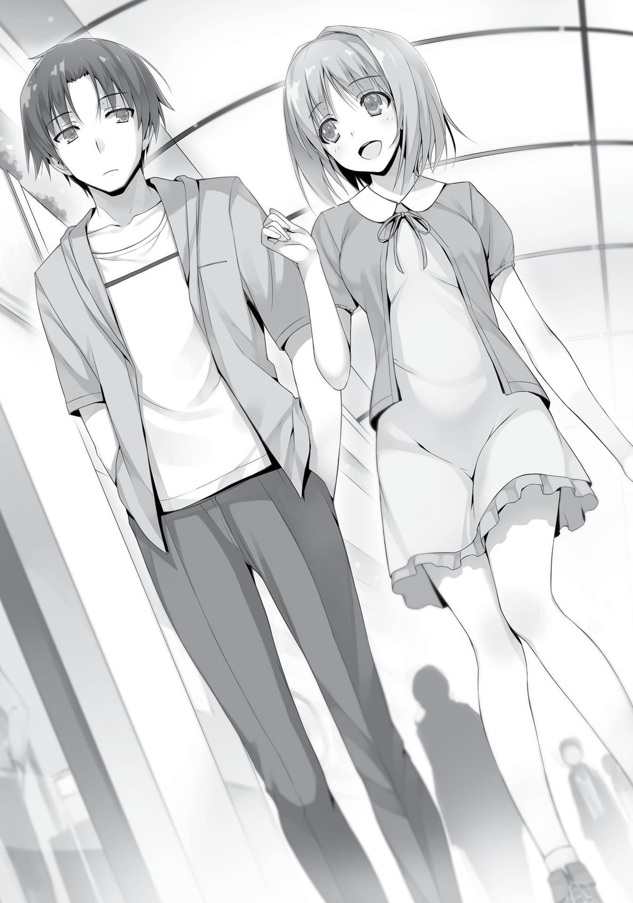
¿Qué diablos...? Estaba halagando mucho a Kushida. Lo que había dicho era completamente cierto, pero también había un olor a timidez.
—¿Qué pasa?
Kushida se congeló, lo que me pareció extraño. Cada movimiento que hacía, o no hacía, era lindo.
—Creo que hemos tenido un clima muy agradable últimamente.
Preocupado por el hecho de que nos dirigíamos a un territorio cliché, encamine la conversación en otra dirección. Necesitaba calmarme. ¿Cuántas veces he usado la palabra " linda " hoy? A este paso, terminaré usándola 100 ó 200 veces.
—Ah. Lo siento. Creo que podría verme un poco fuera de lugar a tu lado —
murmuré.
Podría moverme fácilmente. Me veía como alguien común y corriente. No me veía bien junto a Kushida en absoluto.
—No, no, eso no es cierto para nada. Creo que estamos muy bien juntos
—contestó.
—Entonces, ¿estás diciendo que alguien tan sencillo como yo es un buen partido para ti? ¿Debería aceptar un insulto como ese?
—Sí.
Sentí el rápido empuje de un cuchillo. Tal vez cavé mi propia tumba al hacer eso, pero aun así fue un shock.
—¿Eres tan sorprendentemente delicado, Ayanokouji-kun? No me importa lo que digan los demás. No creo que sea un insulto en absoluto.
Realmente creo que encajamos perfectamente.
Sentí como si me estuviera tomando el pelo de alguna manera. Normalmente, me enfadaría, pero como era Kushida la que hablaba, se sentía injusto. Me había tomado el pelo tan despreocupadamente con sólo unas pocas palabras.
—¿Y qué hay de Sakura-san?
—Aún no la veo.
Era la hora exacta a la que habíamos acordado encontrarnos, pero aún no había señales de ella.
—Pero, ¿le pareció bien? Es decir, invitarme para que vaya.
—Me pidió que te invitara, Ayanokouji-kun. ¿No se puso en contacto contigo Sakura-san?
—¿Sakura? No. No he hablado con ella.
Recuerdo haberme reunido con Sakura en el edificio especial. Ese fue el alcance de nuestro contacto.
—¿Quizás fue amor a primera vista? —Dije, riendo y sonriendo. Un escenario tan dramático sería absolutamente ridículo—. Por ahora, ¿qué tal si nos sentamos y esperamos?
—Claro. Bueno.... Oye, ¿no es esa Sakura-san la que está sentada a nuestro lado?
Sakura, visiblemente nerviosa y sentada en el banco de al lado, se puso de pie y dio una tímida reverencia. ¿De verdad Sakura estuvo sentada ahí todo el tiempo?
Es increíble que no nos hayamos fijado en ella. Ni una señal de su presencia o aura.
—Lo siento, no destaco mucho, supongo... Buenos días —dijo Sakura.
—No, no creo que te mezclaras demasiado. Definitivamente sentí tu presencia —dije.
—Oh, no necesitas decir eso por mí, Ayanokouji-kun.
Sakura inclinó su cabeza disculpándose, y lentamente se enderezó. Quería que me perdonara por no haberla notado. Sakura llevaba un sombrero, e incluso un cubre bocas quirúrgico, lo que dificultaba reconocerla a primera vista. Me preguntaba si se había resfriado o algo así.
—Te ves un poco sospechosa...
—En lugar de decir que te ves sospechosa, creo que en realidad te destacas más.
—Sí, supongo que sí. Creo que me destaco, especialmente aquí —
respondió Sakura. Con mucha timidez, se quitó el cubre bocas.
No parecía estar resfriada. Más bien, parecía el tipo de persona que se ponía el cubre bocas para evitar la atención. Debe odiar realmente sobresalir.
—De todos modos, sobre mi cámara digital. ¿Está bien si vamos a la tienda de electrónica del centro comercial? —preguntó Sakura.
—Bueno, sí. Desde luego que vinimos aquí para arreglar la cámara.
—Lo siento....por hacerlos venir conmigo.
Sakura se inclinó disculpándose, como pidiendo perdón desde el fondo de su corazón. Por alguna razón, sentí pena por venir aquí.
PARTE 10
Hay tiendas increíblemente famosas y conocidas a nivel nacional que hacen negocios con nuestra escuela. Aunque sus clientes eran sólo estudiantes y las tiendas no eran muy grandes, vendían artículos de uso diario y electrodomésticos.
—Veamos, estoy segura de que tienen un taller de reparación en alguna parte. Vamos a comprobarlo.
Mientras Kushida se dirigía hacia la parte trasera de la tienda, me preguntaba cuántas veces había venido aquí. Sakura y yo la seguimos de cerca.
—Me pregunto si la arreglarán de inmediato...
Sakura, parecía bastante ansiosa mientras sacaba su cámara digital y la sujetaba con fuerza.
—Te encanta tu cámara, ¿verdad? —Le pregunté.
—Sí. Es raro, ¿no?
—No, en absoluto. Es un buen pasatiempo, ¿no? Tengo la sensación de que hay una historia significativa unida a esa cámara. Sería genial que la arreglaran pronto.
—Sí.
—¡Ahí está! El taller de reparaciones.
La tienda estaba repleta de una gran cantidad de productos y era difícil de recorrer, pero en la parte trasera era el lugar donde se realizaban las reparaciones.
—Ah...
De repente, Sakura se detuvo en seco. Cuando la miré, noté que tenía una expresión de evidente temor y repugnancia. Se veía que algo la había perturbado bastante. Sin embargo, cuando seguí su línea de visión, no vi nada fuera de lo común.
—¿Qué pasa, Sakura-san? —Preguntó Kushida.
También pensó que el comportamiento de Sakura era extraño.
—Ah, umm... Bueno...
Aunque estaba a punto de decir algo, lo único que hizo Sakura fue agitar la cabeza y respirar hondo.
—No es nada.
Sonrió con seriedad y se dirigió al taller de reparaciones. Kushida y yo intercambiamos miradas, pero decidimos seguirla. Tal vez no era nada, como ella dijo. Kushida habló con el empleado de la tienda y le pidió que reparara la cámara digital. Mientras tanto, increíblemente aburrido, miré los aparatos que se exhibían.
La sabiduría mundana de Kushida era de verdad impresionante. Aunque era la primera vez que veía al empleado de la tienda, pronto estaba hablando con él como si fueran amigos de siempre. Sakura, la dueña de la cámara, sólo hablaba cuando necesitaba dar su consentimiento o aclarar algo. Aun así, el empleado
de la tienda parecía muy entusiasmado. Entabló una conversación enérgica con Kushida, sin siquiera detenerse a respirar. Aunque apenas podía escuchar la conversación, me pareció que le estaba pidiendo una cita a Kushida. Le preguntó si quería ver el concierto de cierta ídol, que se estaba proyectando en el cine.
Era todo un otaku, a juzgar por lo apasionado que era por una amplia gama de temas, desde las elecciones de ídols hasta las revistas de ídols. Debido a que Kushida no mostró ningún atisbo de disgusto por la conversación, pensó que podría invitarla a salir con éxito. Sin embargo, yo creía que ella haría todo lo posible por eludir la invitación.
Se le veía entusiasmado por hablar con una chica tan linda, pero la conversación no avanzó más. Como esperaba, Kushida empezó a sentirse incómoda. Para concluir su trabajo, urgió a Sakura a entregar la cámara.
Cuando el empleado de la tienda abrió la cámara para confirmar el contenido, vio que parte de ella se dañó por la caída. Por eso la cámara no se encendía correctamente. Afortunadamente, como Sakura todavía tenía la carta de garantía, el artículo podía ser reparado gratuitamente.
Finalmente, todo lo que Sakura tenía que hacer era anotar su información de contacto, y habríamos terminado. Pero la mano de Sakura se detuvo repentinamente al rellenar el formulario.
—¿Sakura-san?
Kushida, pensando que algo extraño estaba pasando, llamó a Sakura. Dudaba por alguna razón. No tenía intención de decir nada en ese momento, pero su actitud pesaba en mi mente. Y también-El dependiente de la tienda, que antes estaba absorto en su conversación con Kushida, ahora miraba directamente a Sakura. Tanto Sakura como Kushida miraban hacia abajo al formulario, así que no se dieron cuenta. Pero el empleado tenía ojos inquietantes. Hasta los hombres lo encontrarían un poco espeluznante.
—¿Puedo ver eso por un segundo? —Le pregunté.
—¿Eh?
De pie junto a Sakura, cogí el bolígrafo que tenía en la mano. No entendía por qué lo quería, pero me lo entregó con ansiedad.
—Cuando las reparaciones estén terminadas, por favor contácteme.
—O-Oye, espera un minuto. ¿Contactarte? Ella es la dueña, ¿no? Eso sería...
—La garantía del fabricante muestra explícitamente dónde se vendió el artículo y la fecha de compra. Además, dudo que haya problemas legales si pongo mi información. Debería estar perfectamente bien si el nombre del usuario es diferente al del comprador
Antes de que el empleado pudiera decir "Comprendo", anoté mi nombre y el número de mi habitación dentro de los campos obligatorios.
—O, ¿hay alguna razón por la que ella deba ingresar su información? —
Añadí, todavía sin levantar la vista.
—N-no, para nada. Entiendo. No hay nada de qué preocuparse —dijo el empleado.
Poco después de completar el formulario, lo entregué con la cámara. Sakura palmeó suavemente su pecho y suspiró con aparente alivio, pero cuando supo que la cámara tardaría dos semanas en repararse, se desanimó. Sus hombros se desplomaron.
—Ese empleado seguro que era algo especial. Hablaba con una pasión increíble, me quedé muy sorprendida —dijo Kushida.
—¿No te sentiste un poco asqueada? —Preguntó Sakura.
—-No, no estaba asqueada por él. ¿Sabes algo? ¿Sobre ese empleado?
Sakura asintió dócilmente. Supuse que algo estaba mal incluso cuando compró la cámara. Dirigiéndose a mí, me preguntó:
—¿Qué te parece, Ayanokouji-kun?
—Bueno, tenía este tipo de vibras, como si fuera difícil acercarse a él.
Especialmente para las chicas.
—Eso era a lo que intentaba llegar antes.... Tenía miedo de ir al taller de reparaciones solo por eso...
Kushida parecía tener una epifanía. Se giró hacia mí con los ojos muy abiertos.
—¿Sabías de esto, Ayanokouji-kun?
—Bueno, es una chica. Pensé que se mostraría renuente a escribir su dirección o su número de teléfono.
Siendo un hombre, no me inquietaría si mi información saliera a la luz.
—Gracias... Ayanokouji-kun. Realmente.... me salvaste
—No, en realidad no hice nada. Sólo escribí mi dirección. Cuando me contacten para las reparaciones, me pondré en contacto contigo de inmediato, Sakura.
Sakura asintió, mirándose alegre. Si eso es todo lo que hace falta para complacerte, entonces me compadezco de ti.
—Realmente te preocupaste por Sakura-san —dijo Kushida.
—Bueno, lo estás pintando más grande de lo que es. Honestamente, sólo estaba pendiente de ese empleado bastante raro. Supongo que me dio la impresión de que realmente le encantan las chicas.
—Ja ja.... Eso es cierto.
Incluso Kushida parecía desconcertada. Para alguien como Sakura, que no está acostumbrada a atraer la atención masculina, pensé que era la respuesta correcta.
—Como estuviste conmigo hoy, Kushida-san, completamos nuestra tarea sin que yo tuviera que hablar. Gracias.
Si Sakura se hubiera enfrentado al empleado de la tienda cara a cara, seguramente se habría escapado.
—Oh, no hace falta que me lo agradezcas. Si estás de acuerdo con mi ayuda, estaré encantada de echarte una mano en cualquier momento.
Sakura-san, realmente te gusta tu cámara. ¿No es así?
—Sí.... me gustan las cámaras desde que era pequeña. Mi papá me compró una antes de entrar a la secundaria, y me enamoré de ella. O
supongo que podría decirse que me encanta tomar fotos.... Aunque no estoy muy bien informada cuando se trata de estas cosas.
—Creo que estar bien informada y que te gusten las cosas son asuntos separados. Es maravilloso ser tan apasionada por algo.
—Sakura, normalmente tomas fotos de paisajes, ¿verdad? ¿Alguna vez le sacas fotos a la gente?
—¡¿Eh?!
Sakura dio un paso atrás, mirando bastante nerviosa. ¿Esa pregunta le pareció desagradable? Me pareció una pregunta muy natural. ¿Tomaba fotos de paisajes o eran su especialidad? Sakura cerró la boca, y su cuerpo se puso rígido.
—Eso es un secreto —Bien. Parecía que no quería entrar en detalles conmigo—. Bueno, es que... es vergonzoso —contestó Sakura, con las mejillas enrojecidas. Miró hacia abajo mientras hablaba.
Aunque mi imaginación se desbocó, no podía dejar que se me notara en la cara.
Tenía que permanecer neutral.
—Oh hey, eso me recuerda. Siento preguntar, pero ya que estamos aquí,
¿está bien que eche un vistazo a la tienda?
—¿Quieres algo?
No era tanto que quisiera algo, sino que tenía algo en mente.
—Ustedes dos pueden pasear, si quieren.
—Creo que nosotras también iremos. ¿Verdad? —Dijo Kushida.
—S-seguro. Después de todo, me siento mal porque ambos tuvieron que venir conmigo... Además, tengo tiempo.
No las quería allí, pero decidieron venir. Kushida y Sakura. Cuando las vi caminar una al lado de la otra, me di cuenta de que lograron acercarse en un solo día. Kushida, me gustaría que compartieras un poco de tus habilidades con la gente conmigo.
Como se veían hablando de cosas de chicas, decidí dejarlas en paz y fui a buscar lo que quería. Revisé los contactos de mi teléfono. Cuando Ike me había involucrado en todo el asunto de las apuestas, intercambié información de contacto con algunas personas. Aunque todavía tenía pocos nombres en mi agenda, estaba claro que mi número de amigos estaba aumentando. Seleccioné el nombre "Sotomura (Profesor)" y lo llamé.
—Profesor, ¿tienes un minuto?
—¿Hmm? Es raro recibir una llamada tuya, Ayanokouji. ¿Qué necesitas?
El apodo de Sotomura es Profesor, lo que sin duda hace que suene como si fuera bastante inteligente. En realidad, es un gran otaku. Recolectaba información diariamente, abarcando una amplia variedad de temas, desde simuladores de citas hasta anime y manga.
—Profesor, ¿compraste tu computadora portátil en la escuela, con tus puntos?
—Sí, desde luego que sí. Costó 80.000 puntos. Pero, ¿qué pasa con eso?
—Estoy buscando algo.
Le expliqué lo esencial de lo que quería. Aunque muchos productos similares se encontraban en las pantallas frente a mí, no sabía cuál elegir. Hubiera sido más rápido preguntarle al empleado de la tienda, pero no quise hacerlo por varias razones.
—Ayanokouji. Aunque estoy considerablemente bien versado en ese campo de electrónica en particular...
—Está bien si no lo sabes.
—Por favor, espera —dijo el Profesor cuando estaba a punto de terminar la llamada —Lo sé. De hecho, tengo dos de ellos en casa de mis padres.
—¡No puede ser! ¿Los tienes desde la secundaria? ¿No es eso malo?
—No me malinterpretes. Eran sólo para experimentar, por el bien de mis estudios de idiomas.
—Bueno, ¿podría molestarte para que me ayudes a organizarlo?
—Puh, déjamelo a mí. Estoy seguro de que algún día tendré que pedirte un favor a cambio.
Claramente, él era el hombre para el trabajo. Al entrar en un tema que no entendía, era importante encontrar un experto.
—Siento haberlas hecho esperar —les dije a las chicas.
—¿Ya terminaste?
—Hoy fue sólo una inspección preliminar. No tengo suficientes puntos para comprar nada.
De repente, Kushida se quedó inmóvil mientras miraba el perfil de Sakura.
—Sakura-san, ¿nos hemos visto antes en algún sitio? —Murmuró Kushida.
—¿Eh? N-no. No lo creo, pero...
—Lo siento. Es que cuando te miro, tengo la sensación de que ya nos hemos visto antes, Sakura-san. Hey, pregunta rara, ¿pero podrías intentar quitarte las gafas?
—¡¿Eh?! Pero eso es.... Mi vista es tan mala que no podría ver nada...
Sakura levantó la mano y la agitó, señalándole a Kushida que no quería hacerlo.
—Deberíamos volver a salir juntas, Sakura-san. No sólo conmigo, sino también con mis otros amigos.
—Eso es....
Sakura quería decir algo, pero no pudo ordenar sus pensamientos. No dijo nada.
Kushida sintió que le causaría problemas si presionaba el tema, así que se quedó callada. O mejor dicho, no preguntó nada más. Al final, volvimos a donde habíamos empezado.
— Gracias por todo lo de hoy. Realmente me ayudaron —dijo Sakura.
—Está bien, está bien. No hay necesidad de darnos las gracias. En realidad, Sakura-san, puedes hablar con nosotros normalmente, ¿sabes?
Si te parece bien. Estamos en el mismo grado. Suena un poco raro cuando nos hablas tan formalmente.
Era cierto que los patrones de comunicación de Sakura no son exactamente lo que uno esperaría de un compañero. Pero cambiar eso podría ser más fácil decirlo que hacerlo para ella; estaba visiblemente confundida.
—No quise sonar así. No era consciente de ello.... ¿Sueno rara?
—¡No es realmente algo malo! Quiero decir, me encantaría que no me hablaras tan formalmente.
—Ah... O-okay... Yo... entiendo. Haré lo que pueda.
Pensé que Sakura rechazaría la idea, pero se las arregló para decir unas pocas palabras aceptándolo. Quería aceptar la propuesta de Kushida. Tal vez así era como la gente se hacía amiga, poco a poco. Incluso Sakura, que parecía no haber interactuado nunca con otra persona, estaba cada vez más cerca de Kushida.
—Está bien. No necesitas forzarte.
—Está bien... Yo... lo haré.
Sakura bajó los ojos al hablar. A mitad de su frase empezó a balbucear, y sus palabras se desvanecieron tanto que no pudimos oírlas. Sin embargo, no parecía sentirse incómoda. Kushida sonrió con satisfacción, pero no intentó presionar nada más a Sakura. Esa distancia específica se sentía exactamente adecuada para el lugar en el que se encontraban en ese momento. Si tratas de forzar a la gente que no es buena socializando, podría ser contraproducente. En
lugar de estar agradecidos, lo encontrarían desagradable. En lugar de acercarlos, el ser dominante terminaría por alejarlos más.
—Bueno, entonces, te veremos en la escuela. ¿De acuerdo?
Con eso, Kushida pensó que la conversación había terminado. Sin embargo, de forma bastante inesperada, Sakura no se movió.
—¡Bueno!
Sakura habló en voz baja, pero nos miró directamente. Pero cuando nuestras miradas se encontraron, inmediatamente apartó la vista.
—Sobre Sudou-kun.... Como mi forma de decir gracias por lo de hoy, yo...
Bueno, eso puede ser un poco confuso, pero si lo prefieren... —Se detuvo, y volvió a empezar más claramente—. Quizá pueda ayudarlos con el caso de Sudou-kun.
En sus propias palabras, Sakura nos dijo que ella era la testigo. Kushida y yo intercambiamos miradas.
—Entonces, ¿eso significa que viste a Sudou-kun pelear con esos otros estudiantes?
—Sí. Lo vi todo. Fue una coincidencia total, estoy segura de que no me creen.
—No, te creemos. ¿Por qué decidiste decírnoslo ahora? Me alegra que lo hicieras, pero no quiero que te fuerces. No tienes que hacer esto sólo porque estás agradecida, ¿sabes?
Parece que Sakura no pudo pronunciar palabras. Agitó ligeramente la cabeza. El hecho de que Sakura haya esperado hasta ahora para hablar demuestra que está más preocupada por el caso de Sudou que por cualquier otra cosa. Me preguntaba si afianzarse en la amistad la hacía querer cooperar.
—¿Es eso realmente cierto? ¿No te estás forzando? —Preguntó Kushida.
Debe estar pensando lo mismo que yo.
Sakura asintió tímidamente, como si pudiese sentir que nos preocupábamos por ello.
—Está bien... Creo que si me quedo callada, llegaré a arrepentirme. Yo...
no quiero causar problemas a mis compañeros. Pero, si yo hablara como testigo, entonces... definitivamente me destacaría. Odiaba la idea de eso....
Lo siento.
Mientras la Sakura nos pedía disculpas repetidamente, llena de remordimientos, también le prometió a Kushida que testificaría.
—Gracias, Sakura-san. Estoy segura de que Sudou-kun será muy feliz.
Kushida cogió la mano de Sakura, y Sakura miró la cara sonriente de Kushida.
Me preguntaba si había nacido una nueva amistad aquí y ahora. En cualquier caso, teníamos al testigo de Sudou.
PARTE 11
Esa noche, agarré mi teléfono con fuerza. Mi mano sudaba tanto que uno pensaría que el aire acondicionado de mi habitación no funcionaba.
—Nos acercamos a Sakura, pero... ¿está bien que diga eso?
—Ayer hubiera dicho que no, pero hoy tenemos más posibilidades. Ahh....
Creo que aún nos queda mucho camino por recorrer. Te estas agotando.
Supuse que Sakura se acercaría más a Kushida, específicamente. Pero tenía la sensación de que Sakura levantó un muro bastante alto entre ella y otras personas. A menos que pudiésemos hacer que subiera por encima de esa pared, sería difícil llamar a Sakura como testigo.
—Eso me recuerda, ¿por qué intentaste que Sakura se quitara los lentes?
—Le pregunté a Kushida.
—Bueno, pensé que decir esto podría ser un poco cruel, pero... siento que sus lentes no le quedan bien. Es como si realmente no los necesitara, o
algo así. Yo tampoco lo entiendo. También pensé que nos habíamos visto antes, pero eso fue un malentendido.
—Bueno, tal vez sólo fue tu imaginación, Kushida... Quiero decir, Sakura está muy lejos de ser elegante, ¿verdad? Quiero decir, yo también, pero hasta elige ropa de colores sencillos para destacar lo menos posible.
—Sí, está eso. No creo que le importe la moda ni nada de eso. Pero me pregunto por qué.
Cuando su cámara se cayó y Sakura se agachó para recogerla, vi sus lentes desde un costado. Algo en ellos me pareció fuera de lugar.
—Sentí que había algo un poco raro, como si llevara lentes falsos.
—¿Eh? ¿Sakura-san usa lentes falsos? Pero dijo que su vista era muy mala...
—Aunque los lentes reales y los falsos parecen similares a primera vista, existe una gran diferencia entre ellos. Los lentes de verdad muestran alguna distorsión en los cristales. No había ninguna distorsión en los lentes de Sakura. Al principio, pensé que existía un vínculo entre esos anteojos falsos y el sentido de la moda de Sakura, pero luego me quedé desconcertado por algo que dijo hoy.
—¿Estar a la moda usando lentes? Hmm, eso no suena normal.
Si quería embellecer su apariencia con objetos decorativos, debería comprar otra ropa o maquillaje.
—¿O tal vez es para ocultar algún tipo de complejo? ¿Como que alguien piense que se ve inteligente al ponerse lentes?
—Eso es. Usar lentes te hace lucir inteligente.
—En el caso de Sakura, sin embargo, seguramente los usa porque no quiere que los demás se vean su verdadero ser. Siempre está encorvada y no mira a la gente a los ojos. Dudo que sea simplemente porque no le gustan los demás.
Siento que hay un camino secreto para atravesar esa pared.
Algo.
—Sabía que estaba bien llevarte, Ayanokouji-kun. Siento que eres muy observador con la gente.
Estaba un poco avergonzado. Lo mejor de interactuar con Kushida fue cómo pudimos conectarnos y conversar de forma natural. Las personas que no sabían cómo acercarse a otra persona se atascaban y se comprometían hasta que llegaban a un punto en el que simplemente se daban por vencidos.
—Entonces...
Justo cuando estaba a punto de continuar la conversación con Kushida, mi teléfono sonó. Revisé el identificador de llamadas sin que Kushida lo supiera. Si eran Ike o Yamauchi, los llamaría más tarde. Pero si se trata de Horikita...
tendría que pensarlo. Para eso estaba preparado, pero...
El nombre en la pantalla decía "Sakura".
—Lo siento, Kushida. ¿Puedo llamarte en un rato?
—Oh, claro. Perdón por hablar tanto.
Aunque hubo un gran pesar en esas palabras de despedida, no tuve tiempo de hablar de ello. Respondí a la llamada de Sakura antes de que se cortara.
Después de presionar el botón para contestar, esperé varios segundos, pero la línea permaneció en silencio.
—Um.... Hola. Soy Sakura...
—Soy Ayanokouji.
Aunque intercambiamos información de contacto, me pareció un poco extraño que me llamara. Cuando intercambiaba formalmente información de contacto con alguien, nueve de cada diez veces no recibía ninguna llamada.
—Gracias por venir conmigo hoy —dijo Sakura.
—Oh, no hay problema. No fue gran cosa. No te preocupes por eso. No deberías preocuparte tanto y seguir agradeciéndome.
—De acuerdo...
Siguió un momento de silencio, pero no fue culpa de Sakura. Realmente no sabía cómo responderle. Pensé en cómo Kushida tomó la iniciativa en nuestra conversación. Aun así, tuve que hacer lo mejor que pude en esta llamada.
—¿Qué pasa?
—Umm...
Más silencio. ¿Qué debo hacer? Por favor, Hirata. Enséñame.
—¿En qué estabas... pensando?
Sakura me hizo una pregunta bastante ambigua. ¿En qué estaba pensando? Es probable que no quiera saber sobre lo linda que se veía Kushida con ropa informal, o lo excepcionalmente interesante que me pareció la propia Sakura. No tenía ni idea de lo que esperaba.
—¿Pasó algo? —Le pregunté.
Algo acerca del sentimiento detrás de sus palabras me hizo ponerme incómodo, así que lancé una frase para ver si podía encontrar algo más. Sin embargo, la línea se tensó y se rompió tan pronto como tocó el agua.
—Lo siento, no es nada. Buenas noches.
Sakura terminó la llamada sin siquiera darme la oportunidad de responder. Nada de "por favor espera" o " aguarda". Pensé en llamarla, pero no entendía por qué había fallado en nuestra conversación. Lo pensé cuidadosamente mientras me lavaba la cara. Había pasado unos 10 minutos hablando con Kushida, pero durante ese tiempo, no había ninguna señal de que Sakura hubiera intentado llamar o dejar mensajes.
¿Quizás Sakura planeó llamar a Kushida después de hablar conmigo? Me costó mucho imaginarlo. Normalmente, cuando tienes que llamar a dos personas, la primera persona a la que llamarías sería a la que conoces mejor. En este caso,
yo era la única persona a la que podía llamar y ver, así que yo era la opción razonable. Sin embargo, para estar seguro, me adelanté y envié un mensaje a Kushida y le pregunté si había tenido noticias de Sakura. Unos minutos más tarde, Kushida confirmó que no había tenido noticias de Sakura. Justo lo que pensaba.
"Me pidió que te invitara a ti también, Ayanokouji-kun. ¿Hablaste con Sakura-san?"
Cuando me encontré con Kushida esa mañana, me dijo algo así. Como Sakura se puso muy nerviosa cuando estaba sola con Kushida, pensé que había invitado a otra persona adecuada para la tarea, pero... ¿no fue así? Aparte de un sueño loco como ser amor a primera vista, ¿hubo alguna razón por la que me eligieron para ir? Recordé algo que sentí mientras hablaba con Sakura hoy.
Sakura y Kushida iniciaron la mayoría de las conversaciones, pero yo abordé un tema. Es decir, el empleado de la tienda que ayudó con la orden de reparación.
No mencioné nada más. ¿Y si eso es lo que quiso decir cuando preguntó?: "¿En qué estabas pensando?" Todas las piezas del rompecabezas que había recolectado eran muy pequeñas, y muy pocas. Logré evocar varios escenarios y especulaciones, pero todos ellos carecían de credibilidad. No tenía suficiente información para tomar una decisión definitiva.
Normalmente habría pensado que preguntar en la escuela estaría bien, pero en el caso de Sakura, las cosas no serían tan sencillas. Si simplemente me acercara y empezara a hablar con Sakura, que normalmente no habla con nadie, la haría destacar. A ella no le gustaría eso. Recé para que las ansiedades que desarrollé durante la llamada telefónica fueran infundadas, y decidí prepararme para ir a la cama.
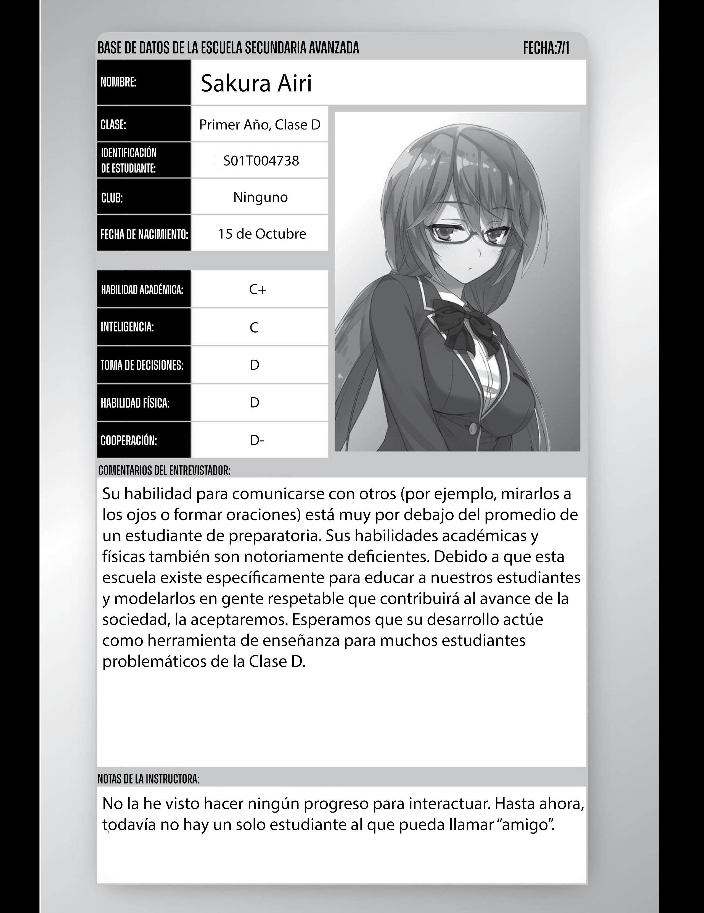
TODAS Y CADA UNA DE LAS PREDICCIONES
Sólo faltaba un día para la reunión entre Sudou y la Clase C.
Con la cooperación de Horikita y el testimonio de la Sakura, así como con las acciones de Hirata y Kushida, toda nuestra clase se sentía animada y con coraje.
Se podría decir que estábamos unidos. Sin embargo, era obvio que carecíamos de pruebas firmes e irrefutables, y todavía resultaba difícil probar la inocencia de Sudou. Nuestra discusión decidiría el resultado.
—Viejo, hace mucho calor hoy...
Nunca pensé más en el calentamiento global que cuando salí de un edificio con aire acondicionado en funcionamiento. Considerando que sufriría todos los días hasta agosto, mi ánimo permaneció bajo. En el momento en que salí del vestíbulo del dormitorio, el aire caliente y húmedo me atacó. Soportando el dolor de mi piel ardiente, caminé por el sendero de la escuela bordeado de árboles verdes y frondosos.
Sin embargo, algo era diferente hoy. Había algo en el tablón de anuncios del descansillo de la escalera, un poco delante de los casilleros de los zapatos. Un artículo en la pizarra decía que estaban buscando estudiantes con información relacionada con Sudou y la Clase C.
—Esto...
Evidentemente, alguien estaba tratando de ayudar. Sinceramente era bienvenido, porque ni siquiera nosotros mismos consideramos la posibilidad de tomar esas medidas. Esta misteriosa persona estaba enfocada a la acción. Además, aunque el cartel en sí mismo podría parecer un esfuerzo débil, el autor también escribió que estaría dispuesto a dar puntos a los informantes útiles. En ese caso, hasta los estudiantes apáticos prestarían atención.
Al escudriñar el mensaje, me quedé muy impresionado....
—¡Buenos días, Ayanokouji-kun! —Dijo Ichinose detrás de mí.
Debe haber llegado hace poco.
—Vi el cartel en el tablón de anuncios. ¿Lo publicaste tú, Ichinose?
Ichinose se unió a mí para mirar la pizarra. Parecía muy interesada.
—Hmm. Ya veo, ya veo. Así que también está este método.
—¿Eh? ¿No fuiste tú?
Pensé que esta era su estrategia.
—Esto fue probablemente-- ¡Ah, está aquí! Buenos días, Kanzaki-kun.
Ichinose levantó la mano y le hizo una señal a un estudiante solitario. El muchacho se fijó en Ichinose, y se acercó a nosotros con pasos tranquilos.
—¿Tú pusiste esto, Kanzaki-kun?
—Sí. Lo hice y lo publiqué el viernes. ¿Pasa algo malo?
—Oh, no. No, en absoluto. Mi amigo sólo quería saber quién lo hizo. Ah, los presentaré. Kanzaki-kun de la clase B, este es Ayanokouji-kun de la clase D.
—Encantado de conocerte, Kanzaki.
Su comportamiento es rígido, pero parece ser un estudiante serio. Es alto y delgado. Un chico guapo, pero de una manera diferente a Hirata. Tomé su mano extendida.
—¿Cómo te fue, Kanzaki-kun? ¿Conseguiste algo confiable?
—Desafortunadamente, no he recibido ninguna información útil.
—Ya veo. Bueno, ¿qué tal si miramos el tablón de anuncios?
—¿El tablón de anuncios? ¿Pusiste otro cartel?
Ichinose llevaba una leve sonrisa, indicando que era otra cosa.
—¿Alguna vez has visitado la página web de la escuela? Hay un foro de mensajes. Solicité que la gente se presentara con información allí. Dije que
si alguien fue testigo de un incidente violento en nuestra escuela, me gustaría saberlo.
Después de decir eso, Ichinose nos mostró la pantalla de su teléfono. En él se veía un mensaje de búsqueda de testigos, así como un recuento del número de personas que lo habían visto. El número mostrado todavía estaba en docenas, pero era mucho más eficiente que preguntar directamente a la gente. Además, el mensaje publicado en la página de inicio ofrecía una compensación a los testigos y a las personas con información útil.
—Ah, con respecto a lo de los puntos, no te preocupes. Decidimos hacerlo nosotros mismos. Además, es probable que nos resulte difícil obtener nueva información ahora. ¡Ah!
—¿Qué pasa?
—Parece que acabo de recibir dos mensajes con respecto al post. Puede que haya un poco de información.
Ichinose revisó su teléfono para confirmarlo. Después de leer los mensajes, una leve sonrisa apareció en su rostro.
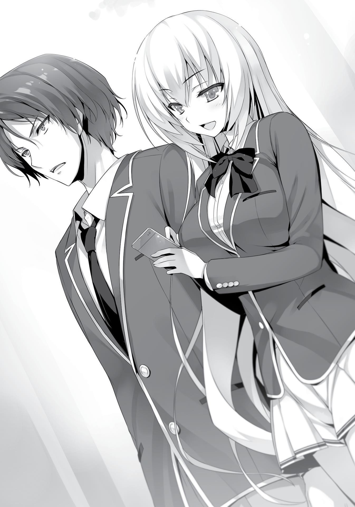
—Así de sencillo.
Me mostró su teléfono para que pudiera leer el mensaje por mí mismo.
—Parece que uno de los chicos de la clase C, Ishizaki-kun, era un mal tipo en la secundaria. Era bueno peleando, y aterrorizaba a la gente del lugar.
Un chico de su lugar de origen debió haber filtrado esto.
—Interesante —murmuró Kanzaki, leyendo también el mensaje.
Al igual que Kanzaki, encontré la información bastante interesante. Todos asumieron que los tres estudiantes con los que peleó Sudou eran chicos normales. Sin embargo, si ellos también eran problemáticos, entonces la historia sería diferente. En cuanto a los otros dos, ser jugadores de baloncesto significaba que tenían buenas habilidades motrices. Sin embargo, Sudou había dado la vuelta a la situación y los había vencido a todos sin que lo golpearan ni una sola vez. Sentí que había algo extraño en eso.
—Kanzaki-kun, ¿qué opinas?
—Tal vez dejaron que Sudou los golpeara a propósito. Si los tres hubieran querido tenderle una trampa a Sudou, la historia tendría mucho sentido. La conexión parece natural.
—Sí, yo también lo creo. Sabía que lo descubrirías, Kanzaki-kun. Gran trabajo. Si podemos verificar esta información, entonces podríamos estar un paso más cerca de probar la inocencia de Sudou-kun. Pero lo que tenemos sigue siendo bastante débil, ¿no?
—Sí. Aunque lográramos convencer a la gente con esta nueva evidencia, en realidad todavía no es suficiente. El hecho de que haya sido una pelea tan desigual, definitivamente nos presiona mucho.
Sudou no querrá cargar con parte de la culpa junto a los demás. Ninguna de las partes quería ser responsable de esta situación. Si tuviéramos testimonios de la Clase D, sin embargo, nuestras posibilidades serían probablemente de 6 a 4, o tal vez de 7 a 3.
—No, no podemos decir nada todavía —Oculté el nombre de Sakura porque aún estábamos negociando.
—Ya veo. ¿Hay alguna razón para ello?
Como toda la situación de Sakura es bastante delicada, evité explicar en detalle.
Después de todo, ella podría decidir renunciar, incluso el día de la decisión.
Quería tener una ruta de escape.
—Como pensaba, no hay informes de otro testigo. Habría sido interesante si uno hubiese dado un paso adelante, pero supongo que es difícil. Se nos acaba el tiempo. Nuestra única opción ahora es esperar más información de Internet o del tablón de anuncios, ¿verdad?
—¿Está bien esperar tanto tiempo? Quiero decir, esos tipos de la clase C
podrían concentrarse en nosotros.
—Todo saldrá bien. Además, tanto la clase C como la clase A nos atacaron originalmente.
—Ichinose tiene razón. Además, aunque quieras seguir las reglas, todo el mundo está actuando fuera de los límites. Creo que está bien pedir perdón esta vez.
Ichinose y Kanzaki dejaron muy claro que querían ser justos al competir contra la escuela y los otros estudiantes.
—De todos modos, tendremos que transferir puntos a cualquiera que nos proporcione información. Ah, pero ¿y si alguien lo hace de forma anónima?
En ese caso, ¿cómo transferiríamos los puntos?
—Podemos decírtelo, si quieres. ¿Quieres que lo haga? —Dije.
—¿Sabes algo, Ayanokouji-kun?
—Acabo de recordar algo cuando estaba tonteando con mi teléfono.
¿Sabes el número de la persona?
—Es un número gratuito, pero lo recuerdo.
Ichinose se acercó y señaló su teléfono. Estar tan cerca de alguien hace que la gente se sienta indefensa. Pensé que una chica no querría que un hombre estuviera en su espacio íntimo... y no sabía exactamente lo que era, pero Ichinose tenía un agradable aroma.
—Aquí, abre la pantalla de envío de puntos. Deberías ver tu número de identificación en la esquina superior izquierda.
Cuando se lo indiqué, mi ritmo cardíaco comenzó a dispararse.
—Umm...
Los dedos de Ichinose eran ágiles. Presionó el botón para abrir su página de puntos. Después de cargar la página, ésta se mostraba en la pantalla.
—Sí, sí, Ahí está. Entonces, ¿qué debo hacer ahora que puedo ver el número de identificación?
—Desde tu número de identificación, puedes asignar una clave de seguridad temporal. Si abres eso y envías la clave, recibirás una solicitud de pago.
—Ya veo. ¡Gracias!
—De acuerdo. Vamos, Ayanokouji-kun.
—Claro.
Ichinose empezó a caminar.
—…………
En ese momento, por una fracción de segundo, vi algo en el teléfono de Ichinose.
El fragmento de pantalla que noté se quedó grabado en mi mente y no desapareció. ¿Qué debo hacer? ¿Acaso lo que vi era posible? Ichinose podría ser un gran obstáculo para Horikita en su búsqueda por alcanzar la Clase A.
PARTE 1
—¡Buenos días! ¡Ayanokouji-kun!
—O-oh, hey. Buenos días.
Kushida me saludó con un aspecto increíblemente brillante y enérgico. Me sorprendió su resplandor.
—Gracias por lo de ayer. Realmente me salvaste.
Bueno, supongo que su deslumbrante rostro me hizo feliz, pero había algo más que me molestaba y que no podía recordar. Salí por primera vez y fue con chicas como Kushida y Sakura. Ah, casi era demasiado. Bueno, supongo que por el momento, las cosas van bien... hasta que Ike y Yamauchi llegaron a la escuela, eso es. Si se enteran de esto, definitivamente guardarán rencor por ello.
—Salgamos otra vez alguna vez, ¿de acuerdo? —Dijo Kushida.
—S-seguro.
Aunque sólo lo diga por cortesía, mi corazón palpitó con fuerza. Bueno, eso no fue algo malo.
—¿Pasaste el día libre con Kushida-san? —preguntó una voz helada.
—Sí, lo hice —contesté en voz baja—. Kushida quería la ayuda de Sakura, así que me pidió ir. No tenía muchas opciones.
—Ya veo.
—¿Hay algo malo con....eso?
Miré a mi vecina y vi una expresión en la cara de Horikita que nunca había visto antes.
—¿Cuál es el problema? —Le pregunté.
—¿Qué quieres decir?
—Bueno, acabas de hacer una mirada muy rara.
—¿En serio? No tenía intención de hacer ningún tipo de cara. Debería verme igual que siempre. Sin embargo, diré que admiro la libertad con la que te has movido. Cuando te pido ayuda, a menudo eres reacio, pero
cuando Kushida-san te la pide, lo aceptas fácilmente. Estaba analizando con tranquilidad y discreción la diferencia entre nosotras.
No parece ni remotamente tranquila y discreta.
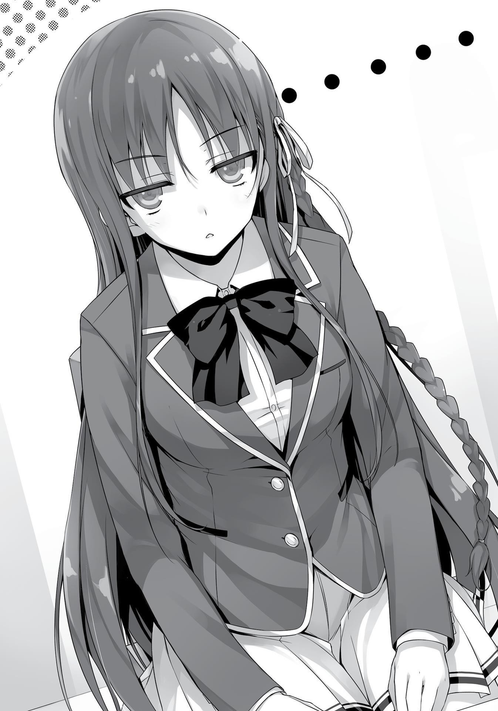
.
En ese momento, alguien me tocó ligeramente el hombro y me dijo que fuera a ver a Kushida. Horikita tenía una expresión tremendamente desconcertante cuando me acerqué al pasillo, donde Kushida se asomó brevemente al aula.
—Tengo la sensación de que acabo de ver algo realmente increíble —dijo.
¿Kushida entendió el significado de la expresión de Horikita? Parecía encantada y sorprendida.
—¿Algo increíble? Eso es espeluznante.... Creo que Horikita estaba un poco enfadada.
—No es eso. Creo que se siente aislada y sola por no ser invitada.
—¿Horikita? ¡Imposible!
—Es probable que no sepa cómo se siente... Estoy segura de que se habrá dado cuenta de lo divertido que es pasar tiempo con los amigos y hablar con ellos. Eso es algo bueno, algo bueno.
Qué pensamiento tan extraño. Horikita no tiene buena opinión de Kushida. Pero a pesar de ello, es extraño que Kushida dijera que Horikita se sentía aislada por no ser invitada.
—Quizás te estás dando cuenta de algo fundamental, Ayanokouji-kun.
Horikita-san está molesta porque no la invitaste a venir.
No, no, no puede ser.... Quiero decir, Horikita es una chica que adora la soledad.
No se supone que le guste salir, y menos con un tipo como yo.
En ese momento, me di cuenta de algo desconcertante.
PARTE 2
Después de terminar la clase, le pedimos a Chabashira-sensei que nos viera en la sala de profesores. Hicimos esto por consideración a Sakura. Como no pude hablarlo con ella por teléfono ayer, esperé al fondo de la habitación por un momento oportuno. Kushida iba a poder contarle a Chabashira-sensei todo lo que pasó.
—¿Un testigo? ¿para el caso de Sudou?
—Sí. Sakura-san vio todo de principio a fin.
Kushida llamó a Sakura, quien se quedó quieta detrás de ella. Dio un paso al frente, algo nerviosa.
—Según Kushida, viste la pelea entre Sudou y los otros.
—Sí. La vi.
No es que nuestra maestra no nos creyera, pero me sentí incómodo ante su mirada escéptica. Sakura, fiel a su palabra, nos dijo la verdad poco a poco. Esta fue la primera vez que escuchamos la historia completa. Ninguno de nosotros, ni siquiera la maestra, dijo una sola palabra ni se movió hasta el final.
—Entiendo lo que dices. Sin embargo, no puedo aceptar simplemente lo que me estás diciendo —dijo Chabashira-sensei.
Yo hubiera pensado que, como profesora de la clase D, estaría encantada de descubrir a un testigo de la clase D. Kushida, traicionada por este giro de los acontecimientos, estaba nerviosa.
—¿Qué insinúa, sensei? —preguntó.
—Sakura, ¿por qué estás testificando ahora? Cuando informé del problema durante la clase, no dijiste nada. No estabas ausente ese día,
¿verdad?
—Bueno... Eso es.... No soy buena hablando con otras personas...
—No eres buena hablando con otras personas, ¿y aun así has decidido testificar ahora? ¿No es extraño?
Chabashira-sensei empezó a presionar a Sakura, como era típico. Sin embargo, si Sakura hubiera dicho algo cuando solicitó testigos por primera vez, me preguntaba si Chabashira-sensei lo habría acogido con honestidad.
—Sensei, Sakura-san es...
—Estoy hablando con Sakura ahora mismo —Chabashira-sensei interrumpió a Kushida de forma brusca.
—Umm... Bueno, es porque nuestra... clase está en problemas ahora, y...
pensé que si... si testifico, puedo ayudar...
Sakura se encorvó y se encogió, como una rana acorralada por una serpiente.
Como nuestra profesora, Chabashira-sensei debería entender qué tipo de chica era Sakura. Debería darse cuenta de que con solo hablar, Sakura había hecho un gran progreso.
—Ya veo. Así que, ¿entonces reuniste el coraje para presentarte?
—Sí....
—Ya veo. Bueno, si eres un testigo como dices, naturalmente estoy obligada a transmitir esa información a la escuela. Sin embargo, mientras la escuela escucha toda la historia, Sudou no puede ser declarado inocente.
—¿Qué quiere decir?
—¿Eres realmente una testigo, Sakura? Eso es lo que quiero decir. Creo que puede ser una mentira inventada por la clase D porque los estudiantes tienen miedo de recibir una evaluación negativa.
—Chabashira-sensei, ¡eso que dice es horrible!
—¿Horrible? Si realmente fuiste testigo de un evento, deberías haberte presentado el primer día. Es natural sentir desconfianza cuando alguien se acerca justo en el momento adecuado. Considerando que el testigo es de la clase D, es doblemente sospechoso. Cualquier persona razonable tendría dudas. ¿No te parece así? Convenientemente, un estudiante de la misma clase estaba en un edificio poco visitado y fue testigo de todo el evento.
Chabashira-sensei tenía muchos puntos válidos. El hecho de que Sakura presenciara el incidente era demasiado conveniente. La gente evidentemente tendría sus dudas. Si yo fuera otra persona, pensaría que la clase D inventó esta
historia. Juzgado imparcialmente, era natural considerar que este testimonio del testigo ocular era débil.
—Sin embargo, un testigo es un testigo. No puedo determinar si está mintiendo, así que por el momento, aceptaré su testimonio. Así que, Sakura, te pediré que te unas a nosotros el día de la deliberación. Entiendo que no te gusta relacionarte con otros, pero ¿puedes hacerlo?
Las palabras de Chabashira-sensei sacudieron a Sakura, como si estuviera probando a la chica. Por supuesto, Sakura, al imaginar esto, se puso pálida y angustiada.
—Si no te gusta, tienes la opción de retirarte. Además, le diremos a Sudou que él participará en la deliberación.
—¿Estás bien? ¿Sakura-san?
—S-sí...
La respuesta de Sakura carecía de confianza. Además de tener que dar su testimonio delante de otros, también iba a tener que sentarse sola con Sudou.
Me pareció un poco cruel forzarla....
—¿Le importa si participamos también, sensei?
Por supuesto, fue Kushida quien habló, muy probablemente para apoyar a Sakura.
—Si Sudou está de acuerdo, lo aprobaré. Sin embargo, no podemos permitir que haya mucha gente. Sólo un máximo de dos personas pueden participar en la deliberación. Por favor, piénsenlo bien.
Salimos de la sala de profesores, aunque parecía más bien que nos estaban echando. Después, volvimos a la clase y le explicamos todo a Horikita.
—Bueno, naturalmente ese fue el resultado. Era de esperar.
—La situación puede ser diferente ahora, pero no es una gran diferencia,
¿verdad? Quiero decir, el hecho de que nuestro testigo viniera de la clase D significa que no tenemos suerte.
No sabía si esto reconfortaría a Horikita, pero lo dije para defender a Sakura. Si no hubiéramos convencido a nuestro testigo para que se presentara, habría sido imposible probar la inocencia de Sudou.
—Ahora bien, Kushida-san. Lo mejor sería que Ayanokouji-kun y yo estuviéramos presentes en la deliberación. Entiendo perfectamente que apoyes a Sakura-san. Sin embargo, si se trata de un debate, entonces esa es otra historia.
—Eso es.... Sí, tienes razón. No creo que sea particularmente útil en un debate.
Consideré decir algo sobre cómo sería perfecto si Kushida y Horikita trabajasen juntas, pero lo pensé mejor. Precisamente porque puede que no formen el mejor equipo, supuse que me habían nombrado suplente.
—Sakura-san, ¿te importa?
—N-no, está bien.
Esto no parecía gustarle en absoluto, pero tampoco tenía muchas opciones en este momento.
PARTE 3
Con eso arreglado, nos volvimos a reunir en el salón de clases durante nuestro almuerzo para discutir la estrategia. Horikita se había mostrado reacia a participar, pero gracias a los convincentes lloriqueos de Kushida, aceptó unirse.
En cuanto al sospechoso, aunque Sudou dijera que no le importaba y que no se comprometía, podía volverse obstinado en situaciones críticas. Mientras pensaba en cómo podría ponerse complicado en cualquier momento, me quedé callado.
—¿Podemos realmente probar la inocencia de Sudou mañana? —
Preguntó Kushida.
—Por supuesto que lo haremos. Es obvio que me tendieron una trampa.
Definitivamente soy inocente. ¿Verdad? —Sudou dijo.
Al mismo tiempo, miraron a Horikita en busca de su opinión. Horikita simplemente comía su pan en silencio, ya sea porque no podía responder o porque la discusión le resultaba molesta.
—Oye, Horikita. ¿Qué te parece? —Sudou, claramente incapaz de leer la atmósfera, se acercó a Horikita.
—No pongas tu sucia cara tan cerca de mí.
—No está sucia —Sudou estaba temblando. ¿Quizás fue herido por ese golpe inesperado?
—Estoy desconcertada por tu creencia de que tu inocencia puede ser probada fácilmente. A pesar de que has obtenido evidencia que funciona a tu favor, sigues en una situación muy desventajosa.
—Pero tenemos un testigo que sabe que soy inocente, y los otros tipos fueron unos verdaderos idiotas en el pasado. Eso debería ser suficiente,
¿verdad? Esos tipos son pésimas noticias —Sudou, completamente ciego a sus propios defectos, cruzó arrogantemente las piernas y asintió de acuerdo consigo mismo.
—¡Ah, oye, espera un segundo! ¡Todavía estoy leyendo eso!
¡Devuélvemelo!
—Está bien, ¿no? De todos modos, pagué la mitad. Te la devolveré más tarde.
Ike y Yamauchi se peleaban por una revista semanal de manga. Supongo que estaban leyendo manga en silencio mientras teníamos nuestra importante reunión. Considerando sus amargas lágrimas por no tener absolutamente ningún punto, me pareció asombroso que se las arreglaran para comprar una revista cada semana.
—¿Eh? —Kushida, sentada a mi lado mientras se desarrollaba el espectáculo Ike/Yamauchi, parecía muy pensativa—. Tal vez... —murmuró.
—¿Qué pasa? —Le pregunté.
—Ah, nada. No es nada. Había algo en mi mente.
No entendía a dónde quería llegar, pero Kushida sacó su teléfono y empezó a buscar algo.
PARTE 4
Después de regresar a mi cuarto, me acosté en mi cama y miré distraídamente la televisión. Mi mente estaba un poco vacía, me permití relajarme. Entonces, recibí un correo electrónico de Sakura.
"Si me ausentara de la escuela mañana, ¿qué crees que pasaría?"
"¿Qué quieres decir?"
Aunque mi respuesta había sido corta, esperé un rato su respuesta.
"¿Qué estás haciendo ahora mismo?"
Esa fue su respuesta. Le respondí que estaba solo en mi habitación.
"Si te parece bien, ¿podemos vernos ahora mismo? Estoy en la habitación 1106.
Si pudieras mantener esto en secreto de todos... Eso realmente me ayudaría."
Recibí dos mensajes de ella en rápida sucesión. Era más un mensaje de texto que un correo electrónico. Me preguntaba a dónde quería llegar exactamente.
Pensé en preguntarle por qué, pero luego dejé de escribir el texto. Si lo estropeo, ella podría seguir enviándome mensajes, pero quizás sea más difícil hacerle una visita. Tuve el presentimiento de que sería mejor que nos reuniéramos personalmente, así que empecé a reescribir mi respuesta.
"Iré para allá en unos cinco minutos."
Después de enviar mi respuesta, busqué mi abrigo, pero me detuve. Como estábamos en el mismo dormitorio, salir con un jersey puesto estaría bien. Me dirigí hacia la habitación de Sakura. El nivel superior....en otras palabras, donde viven las chicas. Esta es la primera vez que pongo un pie aquí. La escuela no prohibía la entrada a los chicos. Incluso si alguien me viera yendo allí, no sería un problema. De hecho, los chicos populares a menudo se dirigían allí para pasar el rato y divertirse.
Aunque se nos permitían cierto grado de libertad, la entrada estaba prohibida después de las 8:00 PM. Naturalmente, ir al piso de las chicas en medio de la noche estaba prohibido.
Presioné el botón para llamar al ascensor. Cuando las puertas se abrieron, Horikita estaba allí de pie. Qué sincronización tan horrible.
—…………
Por alguna razón, era completamente incapaz de moverme. Me quedé ahí parado. ¿Fue buena suerte o mala? En el caso de encontrarme con un conocido, tenía que preguntármelo.
—¿Qué? ¿No vas a subir? —preguntó.
Cuando me miró fijamente, intentó cerrar las puertas.
—Ah, sí. Voy a subir…
Aunque me pareció que era una mala idea, me subí y apreté el botón del piso once. Vi que el botón del piso 13 también estaba encendido. Debe ser el piso de Horikita. Por alguna razón, tuve la extraña sensación de que me observaba por detrás.
—Llegas tarde a casa esta noche, ¿eh? —Le pregunté, sin mirarla. El silencio era insoportable.
—Estaba de compras. ¿No lo viste?
Escuché el crujido de las bolsas de vinilo.
—Eso me recuerda. Cocinas para ti, ¿no?
Sentí que el ascensor iba más lento de lo normal. Todavía estábamos en el sexto piso. Ser invitado a escondidas por una chica era una situación estresante.
Mi inquietud significaba que tenía que decir algo.
—Este no es el décimo piso. ¿Está bien?
¿Por qué me preguntó por el décimo piso? ¿Cuál era su intención?
—Para alguien a quien no le gustan los problemas, has sido extremadamente activo al involucrarte en este caso. ¿O tal vez tienes motivos ocultos? —Horikita claramente estaba sondeando.
—Si tienes algo que decir, ¿por qué no lo dices?
—Vas a reunirte con Sakura-san, ¿verdad? —preguntó ella.
—No, no lo haré —Inmediatamente lo negué, pero me pregunté si Horikita podía ver la verdad.
—Bueno. Supongo que a donde tú vayas no es asunto mío.
En ese caso, ¡no me preguntes! Bueno, eso era lo que quería decir, pero sólo lo dije en mi cabeza.
Después de mucho tiempo, finalmente llegamos al piso once en completo silencio. Me bajé del ascensor, tratando de mantener la calma. No miré atrás.
—Perdón por molestar... —Dije ante la puerta de la Sakura.
—Adelante, entra —Me saludó con ropa informal.
—Entonces. ¿Qué necesitas de mí?
—Umm... Ayanokouji-kun, ¿recuerdas lo que dijiste antes? Dijiste que no estaba obligada a presentarme, aunque fuera testigo. También dijiste que no tenía sentido obligarme a testificar.
Eso fue cuando me encontré con Sakura por accidente. Di un ligero asentimiento con la cabeza.
—Yo... no tengo confianza en mí misma.
—¿Se trata de hablar delante de otras personas?
—He sido pésima en eso por tanto tiempo.... No soy buena para hablar delante de los demás. Si mañana me piden que testifique frente a los maestros, no creo que tenga la confianza para responder bien. Así que...
—¿Así que estás considerando no ir a la escuela?
Sakura asintió ligeramente antes de derrumbarse y apoyar la frente sobre la mesa.
—Ahhhhhhh. Cielos, ¿por qué soy tan inútil? —Se encogió, claramente avergonzada. Era la primera vez que la veía así.
—Sakura, eres sorprendentemente nerviosa, ¿eh?
Sentí la diferencia entre la persona que veía ahora y su comportamiento habitual, y me desconcertó un poco. O mejor dicho, me sorprendió.
—¡¿Eh?!
Sakura, dándose cuenta de que me dejaba ver este lado de ella, se sonrojó y agitó la cabeza.
—¡N-no! No soy así en absoluto.
Así ella podía ser animada. No tenía ni idea, considerando su aspecto deprimido.
—Oye, ¿puedo preguntarte una cosa? ¿Por qué me llamaste? Kushida o alguien más sería más amistoso, más fácil de hablar.
—Eso es porque no tengo miedo de tus ojos, Ayanokouji-kun...
¿Eh? ¿Qué significaba eso? No tengo ojos aterradores ni nada de eso, pero...
—Si buscas a alguien con quien hablar, Kushida es una persona mucho más cálida y extrovertida. También tiene muchos amigos.
—Oh, no. No me refiero a los ojos con los que me has visto. Me refiero a las pupilas, en el fondo de los ojos... Si miras a alguien a los ojos, lo entenderás. Lo siento, no puedo explicarlo bien.
Entonces, ¿era como una visión del verdadero ser de una persona? Cuando alguien me miraba, ¿verían que yo era insustancial y carecía de ambición? Esto era un poco complicado.
—Bueno, es que... Cuando veo a un hombre... aunque parezca amable...
de repente tengo miedo.
Tal vez eso venía del punto de vista de una mujer. Podía ser natural que se sienta incómoda con los hombres, pero Sakura tenía una expresión demasiado aterrorizada. Hablando de eso, recordé el día que fuimos a reparar su cámara digital....
Sin duda es cierto que los hombres y las mujeres generalmente difieren en la fuerza física y la resistencia. Sin embargo, algunas chicas eran demasiado conscientes de ese hecho y vivían con niveles anormales de miedo. Me preguntaba si en el pasado de Sakura pasó algo que le causara un intenso miedo a los hombres.
¿Por qué diablos la estaba analizando de forma tan arbitraria? Me sentí un poco disgustado conmigo mismo, como siempre.
—Sé que sería bueno decir simplemente lo que vi. Pero no importa lo que haga, no puedo imaginarlo... ¿Cómo puedo hablar con tanta seguridad?
Está tan preocupada que le pidió ayuda a un estudiante como yo. Seguramente llevaba varios días agonizando por ello. Aunque la ayudara, parecía estar sufriendo.
—Si quieres dejarlo, ¿quieres que hable?
—¿No te vas a enojar?
—Te lo dije antes, ¿no? Si te obligamos a testificar, no tiene sentido.
Sakura era una testigo invaluable, pero sus pruebas no eran automáticamente fiables. Puede que no tenga ninguna influencia en el resultado. Sin embargo, si se ausenta, Sudou podría enfadarse. Debería intentar convencerla de que participe, pero no tengo ni idea de cómo hacerlo.
—Umm.... ¿Qué crees que sería mejor hacer, Ayanokouji-kun?
—Creo que deberías hacer lo que quieras, Sakura.
Tal vez quería una guía más concreta, pero desafortunadamente esto es lo mejor que pude hacer. No soy una persona sobresaliente, y ciertamente no estoy calificado para guiar a nadie. No soy apto para este trabajo.
—Ya veo. Bueno, supongo que es molesto pedirte ayuda de esta manera....
Es sólo que no soy lo suficientemente buena. Probablemente por eso no puedo hacer ni un solo amigo.
Sakura se encogió de hombros y sonrió amargamente. Parecía disgustada consigo misma.
—Sakura, creo que serás capaz de hacerte amiga de alguien en poco tiempo.
—Lo siento. No sé cómo decir lo que siento... Parece que te llevas muy bien con mucha gente, Ayanokouji-kun. Tengo un poco de envidia.
—No, no es así —Sakura creía que tenía muchos amigos y mucha diversión—. Puede ser presuntuoso para mí decir esto, pero creo que somos como amigos. Lo somos —dije.
Sakura y yo nos miramos fijamente.
—¿Somos amigos? ¿En serio? —susurró ella.
—Si no lo crees, Sakura, entonces sería diferente.
—No.... Me hace feliz... oírte decir eso —contestó Sakura, sin dejar de lucir algo aturdida.
Comencé a darme cuenta de que si la gente no hablaba cara a cara, no se darían cuenta de cómo era realmente la otra persona. Me sorprendió el descubrimiento del lado impredecible de Sakura. Si dejara salir más esta parte de ella, haría amigos de inmediato. Honestamente, incluso un pequeño ajuste haría maravillas. Pero para ella, supuse que hacer un pequeño ajuste era difícil.
Lo que puede parecer trivial para una persona puede ser bastante difícil para otra, dependiendo de sus problemas.
—Gracias por venir a verme hoy —dijo Sakura.
—No es gran cosa. Puedes llamarme cuando quieras.
Si podía aliviar un poco las preocupaciones de Sakura, entonces valía la pena.
Dejaría que la propia Sakura decidiera si vendría o no a la escuela mañana.
Pensando que nuestra conversación había terminado, me puse de pie y empecé a marcharme, pero Sakura parecía que todavía no se sentía bien.
—¿Tienes planes para esta noche? ¿Ahora mismo? —Le pregunté.
—¿Ahora mismo? No, no tengo nada planeado. O mejor dicho, no hice ningún plan.
Hmm. Hasta yo me sentí un poco triste cuando escuché a alguien decir eso.
—Bueno, ¿por qué no sales conmigo un rato? Si no es una molestia, por supuesto.
Decidí ser atrevido e invitar a Sakura. Se puso rígida, casi como si se hubiera olvidado de la hora y se hubiera dado cuenta de que tenía que estar en un lugar importante. Se veía como si no pudiera entender lo que yo quería decir. Luego, sin dudarlo, se levantó de su lugar.
—¡¿Eh?!
Al levantarse, se golpeó las rodillas contra la mesa y se dobló con agonía. Se le cayeron los lentes de la cara.
—Eso pareció muy doloroso. ¿Estás bien? —Le pregunté.
—¡E-Estoy perfectamente bien!
No era muy convincente; el dolor era tan intenso que estaba al borde de las lágrimas. Recogí sus lentes. Justo como pensé, no tenían aumento. Le devolví las gafas. Sus manos temblaban cuando las tomó, y me dio las gracias. Sakura luchó con su dolor durante un minuto antes de que finalmente se calmara y tranquilizara.
—¿Adónde quieres ir? —preguntó.
Estaba en guardia, pero no entendía por qué. Tal vez creyó que era un especie de artista en el coqueteo tratando de persuadirla. Si ese fuera el caso, sería malo.
—En realidad no lo he decidido. Me apetecía deambular por ahí, ¿sabes?
Ah, pero odio estar en lugares calurosos...
Sakura respondió con cautela, preocupada sobre lo que tenía que decir.
—Si no te importa....hay un lugar al que me gustaría ir. ¿Está bien?
—¿Eh? Sí, claro, no me importa. Por favor, muéstrame el camino.
Realmente no me importaba el lugar, sólo quería cambiar de aires y hablar. Si Sakura tiene un lugar que prefiere, entonces todo iría según lo planeado.
PARTE 5
Sakura me llevó al lugar que quería visitar. Debo admitir que no esperaba un lugar así. Fuimos a una parte del edificio utilizada específicamente para las actividades de los clubs, situada alejada de la escuela. Me guió por un edificio que tenía un pronunciado estilo japonés, uno que albergaba cosas como el club de tiro con arco y el club de ceremonia del té. A corta distancia, podíamos oír el sonido de las flechas disparadas.
—No estás haciendo ninguna actividad del club, ¿verdad?
—No, pero quería venir aquí al menos una vez. Me destacaría si viniera sola, así que...
Si te quedas aquí solo, la gente pensaría que estás interesado en unirte a su club. Sin embargo, si una pareja se reunía, entonces la gente suponía que estaban en una cita.
—¿Por qué me pediste que saliera? —preguntó ella.
—¿Hmm? ¿Por qué? Es difícil responder cuando me preguntas así —
Estaba preocupado por cómo iría todo mañana. Pero aunque dijera algo, me sentiría incómodo—. Te pregunté porque pensé que sería bueno cambiar de aires, supongo. Quiero decir, soy un poco solitario, así que normalmente me quedo en mi habitación. Tengo tendencia a rezagarme todo el tiempo.
Sakura parecía algo insatisfecha por mi respuesta indirecta.
—Ayanokouji-kun, ¿Qué no tienes muchos amigos?
—¿Los tengo? ¿Como quién?
—Horikita-san, Kushida-san, Ike-kun, Sudou-kun, Yamauchi-kun... —Ella enumeró sus nombres mientras los contaba con sus dedos.
—Bueno, son sólo para presumir. No, tienes razón, un amigo es un amigo.
Supongo que lo que quiero decir es que siento que eso es todo lo que somos. Siento que todavía estoy fuera del grupo y solo estoy mirando.
¿Crees que nos llevamos bien, Sakura?
Sakura asintió sin dudarlo. Si ella lo decía, quizás era verdad.
Supongo que no me entendía a mí mismo.
—No sé cómo hacer amigos. Tengo envidia. Fuiste la primera persona en llamarme amiga.
—¿Qué hay de Kushida? ¿No fue la primera persona que te invitó a salir?
Con una sonrisa de desprecio, Sakura hizo una sonrisa autocrítica.
—Sí. Debería disculparme con Kushida-san alguna vez. Ella fue la primera en llamarme e invitarme a salir, porque no tuve el coraje... En realidad quería salir con ella. No pude responderle, sin importar lo que hiciera. Soy tan patética.
Si fueras buena conversando con otras personas, te resultaría más fácil. Una vez más me impresionó la capacidad de Horikita para burlarse de Ike y Yamauchi, al mismo tiempo que trataba naturalmente con completos desconocidos. Era un talento espléndido.
—¿Puedo darte un consejo para mañana?
No tenía la intención de darle ánimos inútiles como "Haz lo mejor que puedas".
Sakura debe afrontar el mañana como ella misma.
—Por Sudou. Por Kushida. Por tus compañeros de clase. Tira todos esos pensamientos a la basura.
—¿Eh? ¿Tirarlos... a la basura?
—Cuando testifiques mañana, habla por ti misma. Como alguien que dice la verdad de lo que vio, como testigo.
Era bueno para una persona independiente tratar de hacer algo por otras personas. Sin embargo, Sakura aún no podía valerse por sí misma. Tenía tendencia a encerrarse y soportar el dolor, la pena y el sufrimiento ella sola. Si tú no eres feliz, entonces tampoco puedes hacer felices a los demás.
—Di la verdad por tu propio bien. Hazlo, y Sudou se salvará. Eso es suficiente.
No sabía lo efectivo que sería mi consejo. En realidad, es probable que fuera una tontería sin sentido. Pero quizás era correcto animar a Sakura a hablar por sí misma. Tal vez lo hice porque entendí cómo se siente ser querido. Porque necesitaba que alguien supiera que entendía el dolor y la angustia de luchar contra la soledad.
—Gracias, Ayanokouji-kun.
Con suerte, mis palabras habían encontrado un lugar en el corazón de Sakura.
PARTE 6
Esa noche, bajo las órdenes de Kushida, todos menos Sudou se reunieron en mi habitación. Al parecer, Kushida también invitó a Horikita, pero no quiso unirse a nosotros.
—Entonces. ¿Ha habido algún progreso, Kushida-chan?
—Ha habido progreso, sí, pero también he notado algo increíble.
Ayanokouji-kun, ¿me prestas tu computadora un minuto?
—Claro —contesté asintiendo con la cabeza.
Kushida fue a mi computadora, la encendió y abrió el navegador de Internet.
—Bien. ¡Mira esto!
Kushida accedió a lo que parecía ser el blog de alguien. También era bastante elaborado. A diferencia del sitio web de una persona normal, tenía el resplandor y el lustre de un negocio en toda regla.
—Espera, ¿es una foto de Shizuku?
—¿Shizuku?
—Es una gravure idol. Acaba de salir en una revista para hombres jóvenes.
Había muchas fotos de ella. No podía quejarme de su aspecto ni de sus proporciones.
—¿La reconoces? —Preguntó Kushida.
—¿Se supone que debo reconocerla?
—Mira con atención.
Kushida hizo clic en una foto de la cara de Shizuku. Ike la miró detenidamente y luego...
—Es linda.
—¡No, eso no! Es Sakura-san, ¿no?
—Kushida-chan, ¿de quién estás hablando?
—Sakura-san, de nuestra clase.
—Ni hablar, es imposible. ¿Sakura-san? No, no, no, no hay forma de que eso sea verdad —Ike se rió, pero la expresión de Yamauchi se endureció.
—Oye, Ike.... Sabes, cuando la veo bien, creo que se parece un poco a Sakura.
—Pero no lleva gafas, ¿verdad? Y su pelo es diferente.
—Esas son formas muy simplistas de identificar a alguien...
Aunque no había hecho la conexión al principio, me di cuenta de que definitivamente se trataba de Sakura. Pero Ike aún no podía creerlo. Todavía estaba confundido mientras miraba la pantalla.
—¿Entonces Sakura es Shizuku? Eso es mentira, ¿verdad? Quiero decir, claro, hay un ligero parecido, pero son personas diferentes. Mira lo brillante y feliz que es Shizuku. ¿Verdad? Vamos, Ayanokouji.
Todas las fotos que había subido eran lindas, así que estaba acostumbrada a tomar selfies. Sin embargo, vislumbré una pieza de evidencia incontrovertible que probaba que Sakura y la ídol Shizuku eran la misma persona.
—No, Kushida tiene razón. Esa es Sakura. Aquí —Señalé una de las fotos—. Apenas se ve, pero la puerta de su dormitorio está en esta foto.
—Parece igual que las puertas de nuestro dormitorio.
En otras palabras, era probable que hubiera tomado esa foto en la escuela.
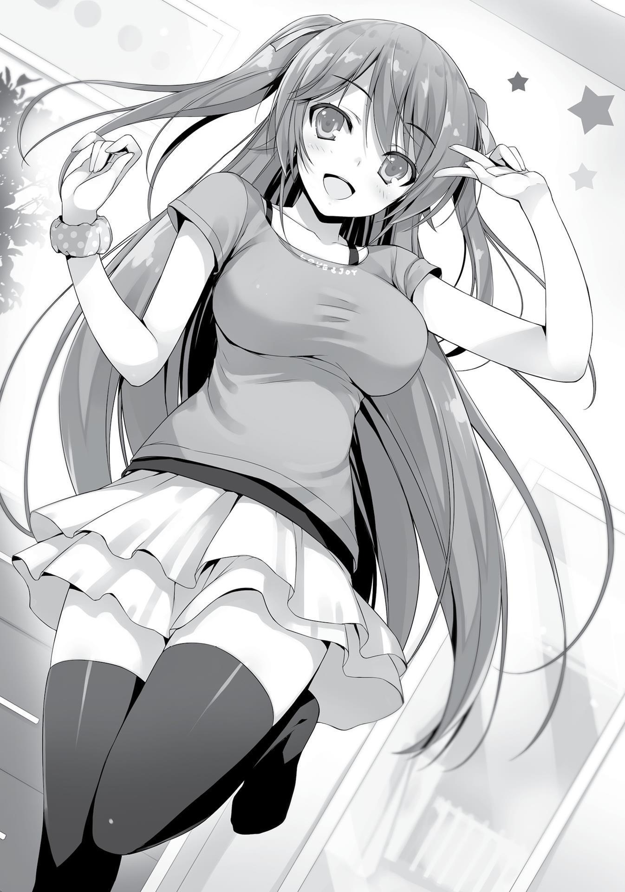
—Bueno, así que Sakura es Shizuku después de todo.... Todavía no entiendo el punto.
—Buen trabajo notando esto, Kushida.
Lo dije en serio. Aunque había un claro parecido, no lo habría notado sin que Kushida nos llamara la atención sobre eso.
—Cuando vi a Ike-kun leyendo esa revista semanal, recordé algo. Tenía la sensación de que había visto a Sakura-san en alguna parte antes —dijo Kushida.
—¡Oh, Dios mío, hay una gravure idol en nuestra clase! ¡Estoy tan emocionado! —exclamó Ike con entusiasmo, incapaz de ocultar su emoción.
Después de una reacción tan poco digna, imaginé que Kushida querría alejarse de él. Aunque ella era amable hasta un grado casi imprudente, no podía sentir esa clase de aceptación de su parte ahora.
—Pero justo cuando Shizuku empezó a ser muy popular, de repente desapareció.
Vivía una doble vida como ídol y como estudiante discreta y tranquila en nuestra escuela. ¿Por qué quiso crear otra vida? Era como una moneda con dos caras muy diferentes.
Al acercarse las 9:00 PM, ya era hora de que nuestro grupo se separara por esta noche. Los vi a todos salir por la puerta.
—Kushida, todavía tengo algo de lo que quiero hablarte. ¿Puedes quedarte un rato?
—¿Hmm? ¿Algo de qué hablar? Seguro.
—¡Oye, Ayanokouji! ¿De qué necesitas hablar con ella? No me digas que es...
Descarté los temores de Ike con un gesto de mi mano. Pero incluso después de decir que íbamos a hablar de Sakura, Ike se acercó mucho y me susurró al oído que no me creía.
—Si le confiesas tus sentimientos, no te perdonaré. Lo sabes, ¿verdad?
No tienes que ser tan paranoico....
Como si fuera a hacer eso. Además, aunque lo hiciera, me destruiría en un segundo.
—En serio. Si estás tan preocupado, espera en el pasillo. Terminaremos en un minuto.
Ike aceptó inmediatamente esperar. Hizo una pose y se estiró a toda su altura, parándose en el pasillo justo afuera de mi puerta. Después de que los chicos se fueron, comencé a contarle a Kushida la conversación que tuve con Sakura ese día.
—Oh sí. Entonces, ¿acerca de Sakura-san?
—Me sorprendí cuando me enteré de que era una ídol, pero también lo entendí. Me pregunto si esa es su verdadera personalidad.
Aunque había evitado exponer esta idea abiertamente, también pensé que Sakura tenía un lado oculto, igual que Kushida. Sin embargo, Kushida, que tenía una comprensión diferente de los hechos, llegó a una conclusión completamente diferente.
—Creo que... lo más probable es que Sakura-san diga que su yo ídol es en realidad su rostro falso. Bueno, supongo que decir que es falso tampoco está bien. Creo que está creando otra personalidad con maquillaje.
—Maquillaje.... Así que en otras palabras, ¿es una persona?
—Sí. Creo que con las pretensiones correctas, Sakura-san podría incluso obligarse a sonreír delante de la gente.
Kushida sonaba bastante persuasiva. Había algo cierto en sus palabras. Pero en ese momento, comencé a pensar en lo que Kushida trató de decirme durante nuestra última llamada telefónica.
—Oye. Cuando hablábamos por teléfono, ¿qué querías decirme?
Los hombros de Kushida se movieron un poco en respuesta. Era como si no lo hubiera recordado hasta ahora.
—Te lo diré más tarde. Ahora mismo, nuestra prioridad es resolver este caso. Además, es una petición personal.
—¿Una petición personal?
Encontré su lenguaje tentador, pero me parece que Kushida necesite ayuda con algo. En realidad no destacaba de ninguna manera. No podía proporcionar algo que le faltara a Kushida. Podía estudiar y tenía ambición.
—Lo siento. Si te lo digo ahora, sería una molestia —Sonrió con amargura y juntó sus manos para disculparse.
—Bueno, si las cosas con Sudou salen bien, ¿podrías decírmelo entonces?
—Sí, eso estaría bien.
Se giró y agarró la manija de la puerta. Sin embargo, de repente se detuvo, y permaneció perfectamente quieta por un corto tiempo. Mirando su espalda, no tenía ni idea del tipo de expresión que tenía.
—¿Kushida?
Algo parecía un poco fuera de lugar. Después de decir su nombre, Kushida se giró y cerró la distancia entre nosotros. Se paró de puntillas, sus talones se levantaron del suelo mientras ponía su mano en mi pecho y acercaba su boca a mi oído.
—Si escuchas mi petición, Ayanokouji-kun... te daré mi posesión más preciada.
Era como los murmullos de una bruja. Como si una fragancia dulce, pero potencialmente mortal, se hubiera apoderado de mi corazón. Cuando Kushida me susurró al oído, no sabía si su sonrisa era genuina o resentida.
Lo único que sabía con certeza era que Kushida no era un ángel. En lo que a ella respecta, no sabía cómo sentirme. La mayoría de la gente tiene diferentes facetas, pero en su caso es más pronunciado, como si otra persona viviera dentro de ella. Esta Kushida era un poco escalofriante.
No podía decir en absoluto cuál era su juego, qué estaba pensando o qué quería hacer. Ni siquiera podía decir adónde se había ido la chica llamada Kushida Kikyou. El cambio fue tan marcado que incluso me pregunté si tenía una doble personalidad. La diferencia era así de grande.
Cuando se alejó de nuevo, vi que Kushida había vuelto a ser la chica de la sonrisa amable. Cuando abrió la puerta, llamó a Ike, que había estado esperando impaciente afuera. No quedaba ni el más mínimo rastro de esa aterradora Kushida.
PARTE 7
Después de que todos se fueron, me senté frente a mi computadora y miré el blog de Sakura Airi, es decir, Shizuku, la gravure idol. Cuando leí las entradas anteriores, vi que comenzó a publicar en su blog hace unos dos años.
Precisamente en la época en que Sakura empezó a trabajar como gravure idol.
Sus esperanzas y aspiraciones para el futuro estaban expresadas por escrito.
No vi nada que sobresaliera especialmente, ni señales de peligro. Revisé otros blogs de ídols sólo como referencia, pero parecían similares.
Tenía que preguntarme, ¿cómo se habría sentido que un estudiante de segundo año de secundaria debutara en el mundo del entretenimiento? Durante un año, había actualizado el blog casi todos los días. Escribió sobre lo que pasaba ese día y sus pensamientos. También respondió a casi todos los comentarios de sus fans. Pero, como esperaba, dejó de responder después de ser aceptada en esta escuela.
Se apegó estrictamente a la regla de contactar a alguien fuera de la escuela.
Aunque ella no era realmente el centro directo de atención, Sakura era más popular de lo que me había imaginado. Tenía más de 5000 seguidores en Twitter. Muchos de ellos eran fans que querían que volviera a aparecer en revistas muy pronto, o que le preguntaban si tenía algún plan para aparecer en televisión. Entre esos muchos comentarios, un post de hace tres meses me llamó la atención.
"¿Crees en el destino? Yo sí. Creo que estaremos juntos para siempre".
Si ese hubiera sido el único mensaje, habría sido la fantasía de un admirador.
Pero cada día había más, y se intensificó rápidamente.
"Siempre puedo sentirte cerca de mí."
"Estuviste aún más linda hoy, ¿no?"
"¿Te diste cuenta cuando nuestros ojos se encontraron? Yo lo noté."
Si Sakura viera esto, esas palabras seguramente la asustarían. Era casi como si el hombre quisiera estar físicamente cerca de Shizuku para poder susurrarle estas palabras al oído. ¿Eran sólo desvaríos? Dentro de esta escuela tan restringida, sólo un número muy limitado de personas podía encontrarse con Sakura.
Estudiantes, profesores... o cualquiera que haya hecho negocios con la escuela.
Tuve un recuerdo del hombre que trabajaba en la tienda de electrónica del campus. Entonces, un mensaje del domingo pasado me puso los pelos de punta.
Me di cuenta de que era una realidad aplastante.
"Mira, Dios es real después de todo."
Sakura compró una cámara digital después de matricularse en la escuela. Por supuesto, seguramente se disfrazó ese día, como lo haría cualquier celebridad.
Pero aunque un disfraz como ese tendría sentido que lo usara con sus fans, ese empleado reconoció quién era Sakura. Por supuesto, sólo había unas pocas formas en las que podían tener contacto en ese momento.
Sin embargo, después de que la cámara de Sakura se estropeó, él la vio. Como le encantaba tanto, ella tenía que arreglarla. Dadas la situación, era casi imposible que alguien de la clase D comprara una nueva. Sin embargo, debido a que la llevó a reparar, existía la posibilidad de que se encontrara con el empleado de la tienda.
Había dudado en ir a que le repararan la cámara por culpa del empleado. El empleado, por otro lado, estaba de muy buen humor. Después de todo, aquí estaba su oportunidad de obtener el nombre real y el número de teléfono de su ídol favorita en el formulario que ella tenía que llenar. También podría explicar por qué ella me llamó esa noche y me hizo algunas preguntas importantes.
Cuando lo pensé, la respuesta me pareció obvia. Revisé los comentarios, buscando más cosas que podría haber escrito.
"¡Es tan cruel que me ignores! ¿O tal vez simplemente no te diste cuenta de mí?"
"¿Qué estás haciendo ahora? ¡Quiero verte, quiero verte, quiero verte, quiero verte!"
Comentarios espeluznantes aparecieron uno tras otro. Por supuesto, otros fans simplemente estaban disgustados con estos comentarios, pero era diferente para Sakura. Me preguntaba si saber que él estaba tan cerca la empujó al punto de un terror casi inimaginable. Pero Sakura nos lo ocultó, y ahora trataba de luchar desesperadamente contra la clase C por nosotros, como testigo.
Seguramente dudaba en salir de su dormitorio, considerando lo mucho que le aterrorizaba la existencia de este hombre.
Si estaban en el mismo campus, su miedo era normal.
Sin embargo, casi no había nada que pudiéramos hacer, ningún plan que pudiéramos implementar para resolver el problema de este acosador para mañana. Al final, la única opción era esperar que la chica en cuestión pidiera ayuda.
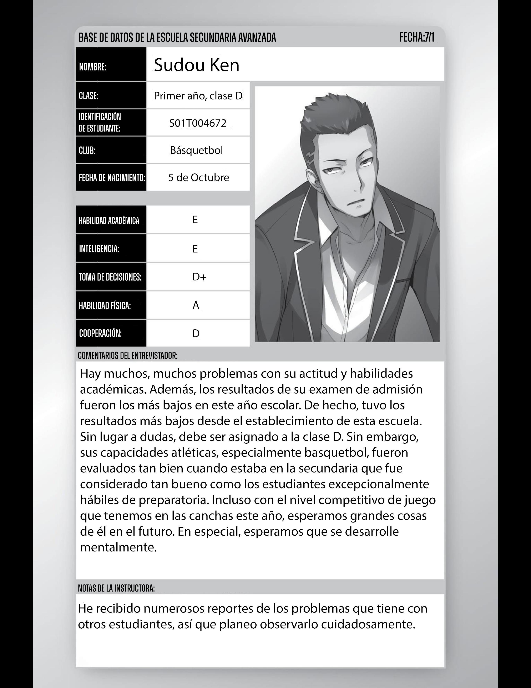
VERDAD Y MENTIRAS
El día en que se decidiría nuestro destino ya estaba aquí. Antes que nada, quería confirmar que Sakura vendría a la escuela. Cuando entré al salón de clases, vi lo mismo de siempre. Sakura se sentó tranquilamente a solas, para no involucrarse en las conversaciones de otros estudiantes. Su expresión parecía aún más sombría de lo habitual. Pero en cualquier caso, aun así vino a la escuela.
—¿Estás bien? —Le pregunté.
—Ah, sí. Estoy bien.
Me preguntaba si estaba nerviosa. Parecía tranquila, aunque no completamente serena.
—Pensé que las cosas serían difíciles si me ausentaba hoy, así que...
Comprendió que toda la clase se enfadaría si se ausentaba, así que tomó la dolorosa decisión de venir a la escuela. Imaginé que sería imposible decirle que no pensara en Sudou y en los demás.
—No olvides lo que dije ayer. Testifica por tu propio bien, más que por el de los demás.
—Sí. Estaré bien.
Ike y Yamauchi miraron a Sakura con gran curiosidad. Por supuesto, eso fue porque ahora sabían de su identidad de ídol. Sakura era lo suficientemente sensible como para darse cuenta de esto. Parecía como si hubiera adivinado que Ike y Yamauchi habían descubierto su identidad. Oh, no... Pero Sakura sólo tenía una pequeña sonrisa y silenciosamente pronunció sus palabras,
—Está bien.
Era consciente de que sabíamos de su doble vida. Tal vez trabajar como ídol la había hecho sensible a cambios sutiles en una habitación.
PARTE 1
Cuando sonó la campana del final de la clase, Horikita y yo nos pusimos de pie.
—¿Estás preparado para esto, Sudou-kun?
—Sí.... estoy bien. Nací preparado.
Como si se preparara mentalmente para lo que le esperaba, Sudou cerró los ojos y se cruzó de brazos. Pero luego volvió a abrir lentamente los ojos.
—Puedes llamarme idiota y burlarte de mí, pero soy yo. Si tienes algo que decir, dilo ahora.
—No hagas nada egoísta. En realidad, escuchar ahora mismo sería lo más inteligente que podrías hacer, ¿no?
—Ugh, siempre actúas tan arrogante, señorita.
Cuando los veías así, parecía que peleaban como perros y gatos. Pero al menos, Sudou no odiaba a Horikita. Si lo hubiera hecho, habría rechazado absolutamente su ayuda, sin importar cuán ventajosa fuera su oferta.
—Hagan su mejor esfuerzo, Horikita-san. Sudou-kun.
Horikita no respondió en absoluto, pero Sudou apretó el puño para mostrar resolución. Me di la vuelta para ver a Sakura que aún estaba sentada, con el cuerpo rígido. Se puso de pie, sus labios temblando un poco.
—Sí.... estoy bien. Gracias....
Sakura estaba mucho más tensa de lo que esperaba. Si se encontraba en este estado psicológico antes de que comenzara la reunión, podría no ser capaz de hablar de manera satisfactoria.
—Vámonos. Causaremos una mala impresión si llegamos tarde.
La reunión estaba programada para comenzar a las 4:00 PM. Ya eran las 3:50
PM. No podíamos darnos el lujo de tomarlo con calma. Cuando los cuatro llegamos a la sala de profesores, una profesora nos hizo señas para que entráramos.
—¡Yahoo! ¡Hola, estudiantes de la clase D!
La profesora de la Clase B, Hoshinomiya-sensei, nos dio este saludo despreocupado.
—Parece que algo increíble pasó, ¿eh?
Sus ojos brillaban, como si disfrutara metiendo las narices en los asuntos de los demás. (Bueno, lo hacía).
—¿Qué estás haciendo esta vez? —Murmuró Chabashira-sensei.
—Oh no. Ya me descubrieron, ¿eh?
Chabashira-sensei miró a Hoshinomiya-sensei mientras salía de la sala de profesores.
—Cada vez que te escapas, es cuando empiezo a sospechar.
Hoshinomiya hizo un lindo guiño, como si dijera, Teehee, ¡me has atrapado!
—Así que supongo que no puedo unirme, ¿eh?
—Por supuesto que no puedes. Sabes que los extraños no pueden participar.
—Oh, eso es muy malo. Bueno, no hay problema. Los resultados deberían estar listos en una hora, supongo.
Chabashira-sensei empujó con fuerza a Hoshinomiya-sensei de vuelta a la sala de profesores.
—Bueno, ¿nos vamos? —nos preguntó.
—No vamos a hacer esto en la sala de profesores, ¿verdad?
—Por supuesto que no. Esta escuela tiene reglas bastante complicadas, pero en casos como este se llega a un acuerdo entre el profesor de la clase en cuestión, las partes interesadas y el consejo estudiantil.
Horikita se congeló en cuanto oyó las palabras "consejo estudiantil". Chabashira-sensei se giró y miró bruscamente a Horikita a la cara.
—Si quieres parar, ahora es el momento, Horikita.
Sudou, que no entendía por qué Horikita reaccionaba de esta manera, parecía confundido. Era casi como si un signo de interrogación gigante flotara sobre su cabeza. Nuestra profesora, como siempre, había revelado un detalle importante en el último minuto.
—Iré. Estoy bien.
Horikita rápidamente me miró. Su mirada significaba algo así como: "No te preocupes por mí". Salimos de la sala de profesores del primer piso y subimos tres pisos hasta el cuarto. Un cartel que decía "Sala del Consejo Estudiantil"
estaba pegado a la pared cerca de la puerta. Chabashira-sensei llamó a la puerta y entramos.
Aunque Horikita hizo un gesto desagradable, inmediatamente nos siguió.
En el interior, mesas largas estaban dispuestas en forma rectangular. Los tres estudiantes de la clase C ya habían llegado y estaban sentados.
A su lado estaba sentado un maestro de unos 30 años.
—Lo siento, llegamos tarde —dijo nuestra sensei.
—Es antes de la hora de inicio programada. No hay necesidad de disculpas.
—¿Ya se conocen?
Sudou, Horikita, y yo no conocíamos al maestro.
—Este es Sakagami-sensei, el profesor de la clase C. Ahora bien —Un estudiante masculino sentado en la parte de atrás de la sala atrajo la atención de todos—: —Este es el presidente del consejo estudiantil.
El hermano mayor de Horikita, sin siquiera echar un vistazo a su hermana, examinaba los documentos de su escritorio. Horikita dirigió su mirada hacia su hermano por un corto tiempo, pero cuando se dio cuenta de que no la miraba, bajó los ojos y se sentó frente a los estudiantes de la clase C.
—Bueno, ahora me gustaría discutir el incidente violento que ocurrió el martes pasado con los miembros del consejo estudiantil, las partes involucradas y sus maestros. Puede comenzar el procedimiento, secretaria del consejo estudiantil Tachibana —La secretaria Tachibana, una mujer de pelo corto, hizo una pequeña reverencia—. Por supuesto, considerando la magnitud de esta disputa, hay momentos en que el presidente del consejo estudiantil se hará cargo. Hay varias cosas inusuales en este incidente.
Aparte de eso, la mayor parte de los procedimientos serán manejados únicamente por Tachibana, como de costumbre.
—Debido a que estoy muy ocupado, hay ciertos temas de la agenda que aplazaré. Como regla general, preferiría ocuparme de estos asuntos, ya que se me ha confiado la dirección de este consejo estudiantil.
—Entonces, ¿todo esto es una casualidad? —Chabashira-sensei sonrió mientras decía eso, pero el hermano mayor de Horikita nunca vaciló.
Al contrario, Horikita, la hermana menor, no podía ocultar sus temblores.
Considerando que eran hermano y hermana, las probabilidades no estaban a nuestro favor. De hecho, no pude evitar pensar que esta situación era extremadamente desventajosa, ya que Horikita no podía demostrar su destreza habitual aquí. Nuestras expectativas se habían hecho añicos.
Si el presidente del consejo estudiantil actuara, no habría nada que pudiéramos hacer, aunque no nos gustara. Se afilió a la clase A e inmediatamente asumió el cargo de secretario del consejo estudiantil. En diciembre de su primer año, se convirtió en el presidente del consejo estudiantil después de recibir una abrumadora cantidad de apoyo en las elecciones. Aunque algunos estudiantes mayores habían expresado naturalmente su descontento, nuestra situación actual, sin esperanza, hablaba de sus increíbles habilidades.
La secretaria Tachibana resumió la situación de ambas partes de una manera fácil de entender. No había necesidad de más explicaciones.
—Basándonos en los hechos mencionados, nos gustaría que identificara qué versión de los hechos es verdadera —Después de completar su explicación y el prefacio de los procedimientos, la secretaria Tachibana
volteó sus ojos hacia nosotros de la Clase D—. Komiya-kun y otros dos miembros del club de baloncesto fueron al edificio especial después de que Sudou-kun los llamara allí. Allí, afirman haber sido golpeados en una pelea unilateral. ¿Es esto cierto?
—Lo que esos tipos dijeron es mentira. Yo soy el que fue llamado al edificio especial —dijo Sudou—. Ese día, después del entrenamiento, Komiya y Kondou me pidieron que fuera al edificio especial. Honestamente, pensé que era un poco molesto, pero también pensé que podría haber sido porque siempre fueron hostiles conmigo. Así que fui a verlos.
Sudou no era de los que se andan con rodeos. Normalmente, Horikita se habría disgustado por su manera casual de hablar, pero a juzgar por sus temblores, no lo escuchó en absoluto. Sakagami-sensei, maestro de la Clase C, miró asombrado con los ojos abiertos.
—Eso es mentira. Sudou-kun nos llamó al edificio especial.
—¡No me jodas, Komiya! ¡Fuiste tú quien me llamó, imbécil!
—Parece que no recuerdas tu posición aquí.
Sudou, irritado, golpeó impulsivamente su escritorio. Siguió un silencio inmediato.
—Por favor, cálmate, Sudou-kun. Ahora mismo, simplemente estamos escuchando lo que ambas partes tienen que decir. Komiya-kun, te pedimos que por favor muestres algo de moderación, y no interrumpas.
—Puh, bien....
— Ambas partes insisten en que la otra los llamó, así que los relatos están en conflicto. Sin embargo, las historias tienen algo en común. Hubo una disputa entre Sudou-kun, Komiya-kun, y Kondou-kun, ¿correcto?
—Yo no lo llamaría una disputa. Sudou-kun siempre está buscando pelea con nosotros.
—¿Buscando pelea?
—Sudou es mejor en baloncesto que nosotros, así que siempre alardea de ello. Practicamos con todas nuestras fuerzas, pero no se siente bien cuando nos hace quedar como tontos. Así que a menudo tenemos problemas.
En realidad no conocía los detalles de las actividades del club de Sudou, pero cuando vi las venas que le saltaban en la frente, era bastante obvio que estaban mintiendo. Luego, la secretaria Tachibana habló con Sudou.
—Ni un poco de lo que dijo Komiya es verdad. Esos tipos están celosos de mi talento. Cuando practico, se interponen constantemente en mi camino.
Esa es la verdad.
Naturalmente, ambas partes alegaron que la otra tenía la culpa.
—Ambas partes han presentado sus quejas, pero ahora tenemos que llegar a un juicio con las pruebas recogidas.
—Sudou-kun nos golpeó sin piedad. Fue una pelea unilateral.
La clase C tenía la intención de centrar la discusión en sus lesiones.
Los tres estudiantes tenían la cara negruzca y azulada. Eso era innegable.
—Eso es mentira. Ellos atacaron primero. Fue en defensa propia.
—Oye, Horikita —le susurré a Horikita, que no decía nada y mantenía la cabeza baja.
Claramente, esta situación era muy mala. Si queríamos evitar que Sudou se dejara llevar, teníamos que actuar lo antes posible. Sin embargo, no mostró ninguna reacción. Era como si su mente hubiera desaparecido. ¿La mera presencia de su hermano realmente tenía este efecto?
Recordé a esos dos hablando detrás del dormitorio. Realmente no entendía la profundidad de la situación, pero sospechaba que Horikita había perseguido a su extremadamente talentoso hermano, matriculándose en la misma escuela para que reconociera sus habilidades. Pero a pesar de sus esperanzas y talentos, la hermana menor de la clase D aún estaba muy lejos de su hermano, el
presidente del consejo estudiantil de la clase A. Para probarse a sí misma, tendría que subir a la misma arena que él.
—Si la Clase D no tiene más pruebas que ofrecer, ¿les importaría si continuamos el procedimiento?
Si el consejo estudiantil y los maestros continúan sentados en completo silencio, es casi seguro que su juicio será despiadado. Para evitarlo, necesitábamos que Horikita se pusiera en acción.
Sin embargo, el miembro más importante de nuestro equipo se marchitó y encogió ante su hermano mayor.
—Parece que no hay objeción, dados los argumentos que hemos oído hasta ahora —El presidente del consejo estudiantil finalmente habló. El hermano mayor de Horikita parecía querer sacar una conclusión lo antes posible—... Independientemente de quién haya llamado a la otra parte, el hecho es que fue una lucha unilateral entre Sudou y los otros estudiantes.
Podemos verlo claramente por las heridas que sufrieron. No tenemos más remedio que llegar a una conclusión basada en eso.
—¡E-espera! ¡No puedo aceptar eso! ¡Es porque estos tipos son un montón de cobardes!
En el momento en que Sudou pronunció esas palabras, vi sonreír a Sakagami-sensei.
—Entonces, ¿realmente puede considerarse defensa propia cuando se lucha contra oponentes con una fuerza tan desigual?
—Pero, oigan. ¡Estaba peleando contra tres personas! ¡Tres personas!
—Pero sólo los estudiantes de la clase C resultaron heridos.
Esto se estaba poniendo peor. Me resigné al hecho de que podrían matarme más tarde por hacer esto, pero me levanté lentamente de mi silla y me paré detrás de Horikita. Estiré los brazos y agarré sus costados tan fuerte como pude.
—¡¿Hyah?! —Horikita gritó con una voz anormalmente femenina.
Sin embargo, este no era el momento ni el lugar para centrarme en ello. Como aún no había recuperado la cordura, la agarré con más fuerza y le hice cosquillas.
—E-espera. ¡Para, para, para!
No importa lo molesta o aturdida que esté una persona, si estimulas el cuerpo lo suficiente, volverá a sus sentidos. Incluso si no les gusta. Los profesores parecían algo sorprendidos por mis acciones, pero en ese momento no me importaba. Cuando creí que la había despertado lo suficiente, la dejé ir. Horikita, como si estuviera a punto de llorar, me miró furiosa con una intensidad sorprendente. Tuve que forzarla, pero sabía que era esencial devolver a Horikita a su estado normal.
—Contrólate, Horikita. Vamos a perder a este ritmo. ¡Tienes que luchar!
—Tch....
Horikita, miró a la Clase C, luego a la maestra, y luego a su hermano como si finalmente entendiera nuestra posición. Pareció darse cuenta de lo desesperada que era nuestra situación.
—Disculpa. ¿Puedo hacer una pregunta? —dijo ella.
—¿Le importa, presidente?
—Lo permitiré. Sin embargo, por favor, contesta más rápido la próxima vez
—Horikita se levantó lentamente de su silla.
—Antes, dijiste que Sudou-kun te llamó al edificio especial. Pero, ¿a quién llamó Sudou y por qué?
Komiya y los otros estudiantes de la clase C se miraron unos a otros, como si dijeran: “¿Por qué está haciendo esa pregunta ahora?”
—Por favor, contesta —Horikita añadió estas últimas palabras para reforzar su estilo agresivo de interrogación. La secretaria Tachibana lo permitió.
—Kondou y yo no sabemos por qué nos llamó. Cuando terminamos la jornada y nos cambiamos, dijo que quería hablar con nosotros un minuto.
¿No era la razón simplemente que no le agradamos?
—Entonces, ¿por qué estabas en el edificio especial, Ishizaki-kun? No estás en el equipo de baloncesto, así que no tienes conexión con este caso. Creo que tu presencia allí es bastante extraña.
—Eso.... Fui como precaución. Había rumores de que Sudou es violento.
También está en mejor forma que nosotros, físicamente. Tenía que ir, ¿no?
—En otras palabras, ¿sentías que la situación podría volverse violenta?
—Sí —Respondieron al unísono, casi como si esperaran estas preguntas.
Los estudiantes de la clase C habían ensayado a fondo para esta reunión.
—Ya veo. Así que llevaste a Ishizaki-kun como tu guardaespaldas, ya que tenía fama de ser bastante bueno peleando. Por si acaso hubiera una emergencia.
—Fue para protegernos. Eso es todo. Además, no sabíamos que Ishizaki-kun era conocido por ser bueno peleando. Sólo lo consideramos un amigo confiable.
Horikita escuchó en silencio sus respuestas, como si estuviese haciendo varias simulaciones en su cabeza. Inmediatamente después hizo su siguiente movimiento.
—Tengo algunos conocimientos de artes marciales, aunque sólo sea hasta cierto punto. Entiendo que cuando estás peleando contra múltiples enemigos, la victoria se vuelve exponencialmente más difícil. Así que no entiendo cómo fueron derrotados tan fácilmente, cómo la pelea pudo ser tan desigual, cuando tenían con ustedes a un hábil peleador como Ishizaki-kun.
—Porque no teníamos intención de pelear.
—El factor principal para desencadenar una pelea es la colisión de la
“energía” entre los oponentes. En el caso de que no tengas ninguna
intención de pelear, o de que no seas violento, la probabilidad de que te hagan daño debe ser muy baja. Especialmente cuando hay tres de ustedes.
La opinión de Horikita era muy objetiva, basada en evidencias, reglas y su propia lógica. En el otro extremo, Komiya se defendió con su propia arma, evidencia real.
—Esa forma de pensar no se aplica a Sudou-kun. Es excepcionalmente violento. Aunque nosotros no fuimos violentos, él seguía siendo despiadadamente violento. Eso es lo que pasó.
Se quitó la gasa que cubría su mejilla, dejando al descubierto los rasguños que tenía debajo. No importaba cuantos argumentos razonables hiciese Horikita, su lesión daba poderosas pruebas.
—¿Ya terminaron con sus reclamos, Clase D? —dijo el hermano mayor de Horikita con frialdad.
Después de permanecer en silencio mientras Horikita discutía, sus palabras eran pocas y heladas. Su mirada parecía sugerir que si eso era todo lo que teníamos que decir, hubiera sido mejor no decir nada en absoluto.
—Es cierto que Sudou hirió a los otros estudiantes. Sin embargo, la Clase C comenzó la pelea. Hay un estudiante que presenció todo el incidente y puede dar fe de ello.
—Bueno, entonces, ¿el testigo de la clase D podría entrar, por favor?
Sakura, preocupada e inquieta, entró en la sala del consejo estudiantil. Se miraba los pies, como si temiera al peligro.
—Primer año Clase D, Sakura Airi-san.
—Creí haber oído algo sobre un testigo, pero ¿eres una estudiante de la clase D? —Sakagami, el instructor de la clase C, se rió mientras se limpiaba las gafas.
—¿Hay algún problema, Sakagami-sensei?
—No, no, por favor. Adelante.
Sakagami-sensei y Chabashira-sensei intercambiaron miradas.
—Puedes empezar tu testimonio, si no te importa, Sakura-san.
—Sí, de acuerdo... Bueno... yo...
Dejó de hablar. Siguió un período de silencio. Diez segundos. Veinte segundos.
Sakura miró cada vez más hacia abajo, y su cara se volvió cada vez más pálida.
—Sakura-san... —Horikita, incapaz de aguantar más, se dirigió a Sakura. A diferencia de antes, las palabras no parecían llegarle.
—Por lo visto, no fue testigo de nada. Más de esto sería una pérdida de tiempo.
—¿Por qué tienes tanta prisa, Sakagami-sensei?
—Quiero acelerar esto. Si perdemos el tiempo, mis alumnos sufrirán. Estos estudiantes son el alma de su clase, así que no tengo ninguna duda de que todos sus amigos están preocupados por ellos. Además, se están esforzando por mejorar sus habilidades en el baloncesto, y les estamos privando de un tiempo valioso para practicar. Como profesor, no puedo pasar por alto esto.
—Ya veo. Probablemente tengas razón en eso.
Uno pensaría que Chabashira se aliaría con la Clase D, pero no parecía ser el caso. En vez de eso, asintió estando de acuerdo con Sakagami-sensei.
—Tienes razón en que esto es una pérdida de tiempo, así que supongo que no tenemos elección. Ya puedes bajar, Sakura.
Chabashira-sensei ordenó a Sakura que se retirara, como si hubiera perdido el interés. Los miembros del consejo estudiantil no pidieron un aplazamiento ni nada. El escrito estaba claramente en la pared de la sala del consejo estudiantil, y deletreaba la derrota de la clase D. Sakura cerró los ojos con fuerza, como si no pudiera soportarlo más, como si se arrepintiera de su propia debilidad.
Incluso Sudou, Horikita y yo sentimos que esto era imposible para Sakura, y mentalmente se resignó.
Entonces, sucedió. Una inesperada voz resonó por toda la habitación.
—¡Definitivamente vi lo que pasó! —Era sin duda la voz de Sakura, aunque me llevó varios segundos reconocerla. Lo que más me impresionó fue el volumen de su voz—. Los estudiantes de la clase C dieron el primer golpe.
¡No hay ninguna duda al respecto!
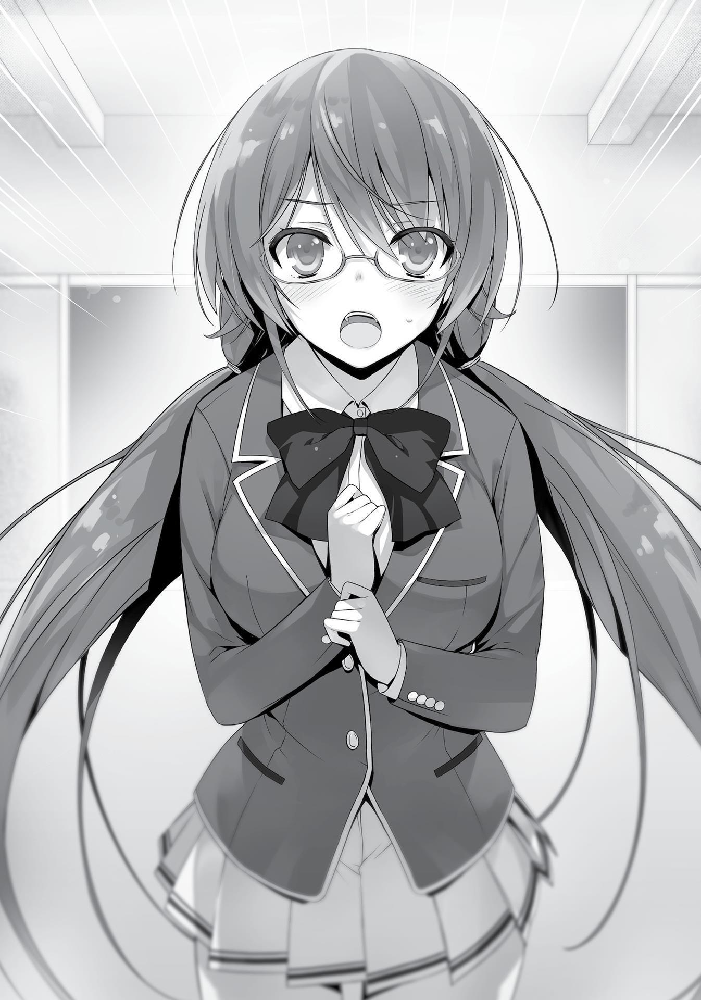
Las palabras de Sakura tenían una fuerza que contradecía la imagen que presentó al principio. Habló tan desesperadamente que creerías que decía la verdad. Sin duda me hizo creerlo. Sin embargo, al igual que un hechizo mágico, el efecto duró sólo unos pocos minutos. Si el público se mantuviera en calma, no les resultaría difícil ver a través de él.
—Disculpa, ¿pero puedo decir algo? —preguntó Sakagami-sensei, levantando la mano—. Normalmente se pide a los profesores que hablen lo menos posible, pero esta situación es demasiado lamentable. Presidente del consejo estudiantil, ¿te importa?
—Lo permitiré.
—En cuanto a lo que has dicho, Sakura-kun, no necesariamente dudo de ti.
Sin embargo, tengo una cosa que preguntar. Has dado un paso adelante para testificar como testigo, pero llegaste muy tarde. ¿Puedo preguntar por qué? Creería que si realmente viste algo, te habrías presentado mucho antes.
Sakagami-sensei insistió en el mismo punto que Chabashira-sensei.
—Eso es... Bueno, eso es... No quería involucrarme...
—¿Por qué no querías involucrarte?
—Porque no soy muy buena hablando con otras personas...
—Ya veo. Entiendo eso. Sin embargo, me gustaría decir algo más. No eres buena para hablar con los demás y, sin embargo, cuando la semana estaba a punto de terminar, te presentaste como testigo. ¿No te parece un poco extraño? En mi opinión, parece que la clase D secretamente preparó una historia y te está haciendo actuar como un testigo para dar falso testimonio.
Después de consultar juntos, los estudiantes de la clase C respondieron que ellos también lo pensaban así.
—Es que... estoy... diciendo la verdad...
—No importa cuán pobres sean tus habilidades de comunicación, puedo ver que no testificaste con mucha confianza. ¿Es porque estás atormentada por la culpa, porque sabes que lo que dices es mentira?
—N-no, no es eso...
—No te estoy culpando. Te forzaron a mentir por el bien de tu clase, para salvar a Sudou-kun. ¿No es cierto? Si te acercas y nos confiesas honestamente ahora, no serás castigada.
Los implacables ataques psicológicos del maestro seguían llegando. Por supuesto que Horikita levantó la mano.
—Eso no es cierto. Es verdad que Sakura-san no es muy buena hablando ante los demás. Sin embargo, es precisamente porque ella fue testigo del incidente por lo que se encuentra hoy aquí. De lo contrario, lo más probable es que no lo hiciera, aunque se lo hubiéramos pedido. ¿No creen que si necesitáramos a alguien que hablara con valentía, habríamos encontrado a alguien más?
—No lo creo. Hay excelentes estudiantes en la clase D, estudiantes como tú, Horikita-san. Poniendo a una persona como Sakura-san como tu testigo, establecería un sentido de realismo que tú misma no podrías tener.
Sakagami-sensei no se lo creyó. Sin embargo, no importaba la respuesta que recibiéramos, estaba convencido de que haría cualquier cosa para bloquearnos.
Tal como me había sentido desde el principio, un testigo de la clase D no tenía suficiente peso. No importa cuántas veces enfatizáramos la verdad, ellos dirían que estábamos mintiendo. Si el testimonio viene de alguien que esté de tu lado, no lo aceptarán. ¿Se nos acabaron las opciones? Sakagami-sensei sonrió hostilmente cuando volvió a sentarse.
—Si desea pruebas.... ¡Se las daré!
Sakagami-sensei se quedó inmóvil en respuesta a las palabras de Sakura.
—Por favor, no hay que forzar esta situación a continuar. Si realmente hubiera pruebas, las habrían presentado antes...
Sakura golpeó con fuerza su mano contra el escritorio, y tiró lo que parecían ser unos pequeños trozos de papel rectangulares.
—¿Qué son esos?
Como ella había aportado algo más que palabras, la expresión del maestro Sakagami se endureció por primera vez.
—¡Esta es la prueba de que estuve en el edificio especial ese día!
La secretaria Tachibana se acercó a Sakura. Aunque al principio dudó, luego tomó los papeles. No, no eran trozos de papel como pensaba. Eran fotos.
—Presidente.
Después de ver las fotografías, la secretaria Tachibana las entregó al presidente del consejo estudiantil. El hermano mayor de Horikita, después de mirar las fotos durante algún tiempo, las colocó sobre el escritorio para que pudiéramos verlas.
Vimos a Sakura en esas fotos, pero esta Sakura tenía una expresión encantadora que parecía a la vez similar y diferente a la Sakura que ahora está con nosotros. Era la ídol, Shizuku.
—Yo....estaba buscando lugares donde no hubiera nadie alrededor para poder tomarme fotos. Las fotos también muestran la fecha y la hora, lo que prueba que yo estaba allí como lo dije.
La fecha en las fotos definitivamente mostraba que fueron tomadas en la tarde de hace una semana. Eso sería en el momento en que Sudou y los otros terminaron sus actividades del club por ese día. Horikita y yo jadeamos sin querer en respuesta a esta nueva evidencia. Empezamos a ver cambios en los tres alumnos de la clase C, que hasta ahora habían desempeñado el papel de víctimas. Estaban temblando visiblemente.
—¿Qué usaste para tomar estas fotos? —preguntó Sakagami-sensei.
—Una cámara digital...
—Con una cámara digital se puede modificar la fecha con facilidad. Si manipulaste estas fotos en una computadora, puedes configurarlas eficazmente a la hora y fecha del incidente. Esto es evidencia insuficiente.
—Pero Sakagami-sensei, ¿no considera que esta foto es diferente? —El hermano mayor de Horikita sacó una de las fotos que aún no habíamos visto y se la entregó al maestro.
—¡¿Esto?!
La foto mostraba la pelea en sí; evidentemente no había necesidad de configurar la hora. El sol poniente bañaba el pasillo con una luz mortecina. La foto mostraba lo que había ocurrido inmediatamente después de que Sudou golpeara a Ishizaki.
—Creo que me creerán que estuve allí después de ver esto...
—Gracias, Sakura-san.
Esta foto también había salvado absolutamente a Horikita. Para rescatar una situación tan abrumadoramente desventajosa....
—Ya veo. Bueno, parece que estás diciendo la verdad sobre presenciar el incidente. Eso es algo que debo aceptar. Sin embargo, no puedo determinar cómo empezó la situación a partir de esta imagen. Esto no prueba que hayas visto todo el incidente.
Era cierto que en esta foto parecía que la pelea ya había terminado. No podemos llamar a esto evidencia definitiva.
—Entonces, ¿qué piensas, Chabashira-sensei? ¿Por qué no buscar un acuerdo en este punto? —Preguntó Sakagami-sensei.
—¿Acuerdo?
—Estoy convencido de que Sudou-kun mintió en su testimonio.
—¡Cretino!
Sudou se puso de pie y parecía dispuesto a salir volando de su silla, pero finalmente se agarró de sus brazos y se quedó quieto.
—No importa cuánto tiempo sigamos con esto, nunca llegaremos a un acuerdo. No cambiaremos nuestro testimonio, y ustedes no se darán por vencidos ni admitirán que conspiraron con el testigo. En otras palabras, no
se detendrán. Será un ciclo interminable de decir que el otro bando está mintiendo. Además, la imagen es insuficiente para ser considerada una prueba definitiva. Por lo tanto, sugiero que lleguemos a un acuerdo. Creo que los estudiantes de la clase C son en parte responsables de todo esto.
Había tres estudiantes contra Sudou, y uno de ellos tiene un historial peleando, lo cual es un problema. Así que, ¿qué tal dos semanas de suspensión para Sudou-kun, y una semana de suspensión para mis estudiantes? ¿Qué te parece eso? El peso del castigo es diferente, por supuesto, pero creo que coincide con la diferencia en las lesiones sufridas.
El hermano mayor de Horikita permaneció en silencio mientras escuchaba a Sakagami-sensei. Al parecer, la Clase C sólo estaba dispuesta a un compromiso a medias. Si no hubiéramos tenido el testimonio o las pruebas de Sakura, Sudou-kun habría sido suspendido durante más de un mes. Pedir menos de la mitad de eso hizo de esto una concesión considerable.
—¡Deje de bromear! ¡Esto no es un chiste! —Sudou se enfureció.
—Chabashira-sensei. ¿Qué opinas? —Sakagami-sensei ni siquiera miró a Sudou.
—Parece que ya hemos llegado a una conclusión lógica. No hay razón para rechazar la propuesta de Sakagami-sensei, —dijo Chabashira-sensei.
Su propuesta era indudablemente un acuerdo razonable. Horikita miró al techo, como si estuviera reflexionando en silencio sobre todo lo que ha pasado hasta ahora. Por mucho que nos resistiéramos, Sudou no sería absuelto sin pruebas concluyentes. Horikita lo sabía desde el principio.
Concluyó que necesitábamos llegar a un acuerdo. Para ser una estudiante de la clase D, Horikita era impresionante.
Sin embargo, si quería llegar a la clase A, no podía rendirse aquí. Yo no tenía ninguna intención de hablar en absoluto, pero decidí ayudar, quizás por respeto a la valentía anterior de Sakura.
—Horikita, ¿realmente nos quedamos sin opciones? —Le pregunté.
—…………
Horikita no respondió. Bueno, ¿Acaso tenía algo que decir?
—No soy muy inteligente, así que no se me ocurre una solución. Sin embargo, creo que deberíamos aceptar el acuerdo que nos has ofrecido, Sakagami-sensei —dije.
—Cierto —contestó Sakagami-sensei con una sonrisa, empujando sus gafas por su nariz.
—No tenemos pruebas definitivas de la inocencia de Sudou. Supongo que debería decir que esas pruebas no existen. Si este evento hubiera ocurrido en un salón de clases o en una tienda de conveniencia, un mayor número de estudiantes habría estado presente para verlo, y seguramente habría existido evidencia sólida. No hay registro de que alguien haya visto esta situación. Como este evento tuvo lugar en el edificio especial, donde no hay gente cerca, no hay nada que podamos hacer.
Suspiré profundamente y agité la cabeza. Miré directamente a los ojos de Horikita, y ella me miró. Hablé como si estuviéramos aceptando la derrota.
—Entiendo por qué estamos teniendo esta discusión. No importa cuánto aleguemos lo contrario, la Clase C no admitirá que mintió. Sudou tampoco admitirá que mintió. Realmente seguiremos así. Honestamente, está llegando el punto en el que en primer lugar habría sido más feliz si nunca hubiera tenido esta discusión. ¿No estás de acuerdo?
Horikita bajó los ojos. Me preguntaba en qué estaba pensando. Si tomara mis palabras sólo por su valor superficial, entonces las cosas terminarían aquí.
—Así que, esto es todo, ¿verdad? Bueno, la representante de la clase D, Horikita-san. Por favor, dé su opinión sobre el asunto —Sakagami-sensei se tomó lo que le dije literalmente.
En otras palabras, como una declaración de derrota. Para la Clase C, la victoria significaba no permitir que Sudou fuera absuelto. La expresión del profesor indicaba que había ganado este combate.
—Entiendo... —contestó Horikita, lentamente mirando hacia atrás.
—¡Horikita! —Sudou gritó.
Fue el rugido de un hombre que, más que nadie, no quería admitir la derrota. No podía. Sin embargo, Horikita no se detuvo allí. Continuó con sus observaciones finales.
—Creo que Sudou, quien causó el incidente, tiene un problema. Nunca se detiene a considerar sus acciones, lo que molesta a todos los que le rodean. Tiene un historial de peleas. Es del tipo que levanta la voz y golpea de inmediato cuando algo le desagrada. En caso de un alboroto como este, debería ser obvio quién lo causó.
—¡Oye!
—Tienes que entender, Sudou. Tu actitud causó todo esto —Horikita miró intensamente a Sudou, casi como para superar su ferocidad—. Por eso no me motivaba en absoluto ayudar a Sudou-kun al principio. Sabía que aunque me forzara a ayudar, él repetiría los mismos errores una y otra vez.
—Una respuesta muy honesta. El asunto parece estar resuelto ahora, ¿no creen?
—Muchas gracias. Por favor, toma asiento —le dijo la secretaria Tachibana a Horikita.
Siguió un período de silencio. Después de eso vino el bramido claramente irritado de Sudou. Y entonces, incluso después de cinco, luego de diez segundos de espera, Horikita no se volvió a sentar.
—¿Quieres sentarte ahora?
La secretaria Tachibana le pidió a Horikita que se sentara una vez más, como si sospechara que Horikita no podía oírla.
Pero Horikita aún no se había sentado. Ella se fijaba en los maestros, continuando mirándolos fijamente.
—Debe reflexionar sobre sus acciones. Sin embargo, no en este caso en particular. Cuando digo que debe reflexionar, me refiero a que debe repasar sus acciones pasadas. Sin embargo, con respecto a este incidente
en particular, no creo que Sudou-kun haya hecho nada malo. Este no fue un evento desafortunado que ocurrió simplemente por casualidad. Estoy convencida de que fue un movimiento intencionado de la clase C. No tengo ninguna intención de aceptar la derrota.
Horikita rompió el largo silencio con estas altivas palabras.
—Entonces... ¿qué quieres decir? —El hermano mayor de Horikita miró a su hermana menor por primera vez.
Horikita no se encogió ante su mirada. Debió sentir que no era el momento de asustarse, que tenía que ser valiente frente a Sakura. ¿O quizás podía ver el camino hacia una conclusión final?
—Si no lo entendieron, lo diré una vez más. Afirmamos que Sudou-kun es completamente inocente. Por lo tanto, no podemos aceptar su suspensión de la escuela, ni siquiera por un día.
—Ja ja.... ¿Qué puedo decir? ¿Hicimos esto intencionalmente? Qué afirmación tan extraña. Por lo visto, la hermana menor del presidente del consejo estudiantil no puede dejar de decir tonterías.
—Sudou-kun es la víctima, como declaró el testigo. Por favor, no cometan ningún error en su decisión.
Los estudiantes de la clase C comenzaron a vociferar con insistencia.
—¡No jodan! ¡Yo soy la víctima aquí!
Sudou, obligado por los gritos, volvió a alzar su voz. Las objeciones llegaron rápidas y furiosas. Todos entendieron que no encontraríamos una solución de esta manera.
—Es suficiente. Continuar esta discusión sólo será una pérdida de tiempo
—Horikita Manabu nos miró como si estuviéramos intercambiando mentiras en un combate gigante de desacreditaciones—. De lo que me he dado cuenta hoy es que ambos lados tienen una afirmación exactamente opuesta. En ese caso, una de las partes está propagando una mentira extremadamente perversa.
¿D o C? ¿Qué clase le estaba mintiendo a la escuela? Si se conociera este hecho, las consecuencias serían mayores que la suspensión.
—Lo preguntaré, Clase C. ¿Nos han mentido hoy?
—¡Por supuesto que no!
—¿Y qué hay de ustedes, clase D?
—No hemos mentido. Todo lo que dijimos ha sido verdad.
—Entonces nos volveremos a reunir aquí para un nuevo juicio mañana a las 4:00 PM. Si para entonces no se ha establecido claramente quién mintió, o en el caso de que nadie admita que fue culpable, emitiremos un juicio basado en las pruebas que hemos recabado hasta el momento. Por supuesto, en ese caso tendremos que considerar la posibilidad de la expulsión de esta escuela. Eso es todo.
Después de hacer esa declaración, el hermano mayor de Horikita puso fin al proceso. Si el juicio estaba programado para reabrirse mañana a las 4:00, era una pequeña ventana de tiempo para descubrir nuevas pruebas.
—¿Sería posible tener un poco más de tiempo antes de que nos volvamos a reunir? —Preguntó Horikita, levantando la mano. No había protestado, pero había hecho una oferta.
—Si este asunto requiriera algún tiempo extra antes de un nuevo juicio, entonces el presidente del consejo estudiantil habría ofrecido un período de gracia suficiente. En otras palabras, el tiempo concedido debería ser suficiente para este caso. Las extensiones sólo se ofrecen en circunstancias especiales —respondió Chabashira-sensei, cruzando los brazos.
Parecía que había tomado en consideración las intenciones del consejo estudiantil.
Nos dijeron que nos fuéramos. Todos parecían insatisfechos cuando salieron de la oficina del consejo estudiantil. Sakagami-sensei se acercó a Sakura, que parecía estar al borde de las lágrimas. Le dijo algo muy frío.
—Quiero que reflexiones sobre el hecho de que muchos estudiantes se verán involucrados en esto debido a tus mentiras. Además, si piensas que seremos indulgentes contigo si empiezas a llorar, entonces me temo que estás siendo una tonta. Deberías estar avergonzada de ti misma.
Sakagami-sensei y sus alumnos se fueron, dejando esas palabras flotando en el aire. Los estudiantes de la clase C se quejaron repetidamente de que las mentiras del testigo eran demasiado grandes, prácticamente porque deseaban que Sakura las escuchara. El silencio envolvió la sala del consejo estudiantil inmediatamente después. Sakura, intentando ahogar su voz lo mejor que podía, se echó a llorar.
—Intenté con todas mis fuerzas hablar durante la discusión, pero
¿tenemos alguna oportunidad? ¿Horikita-san?
—No me rendiré. Seguiré luchando para apoyar tu testimonio hasta el final
—dijo Horikita.
—Entiendes que no resolveremos este problema sólo por ser tercos. ¿No perjudicará eso a más gente en el proceso?
—No tengo intención de perder. Bueno, entonces, debo disculparme.
Con eso, Horikita se giró y se fue. Sudou la siguió. Dejé la sala del consejo estudiantil junto a la Sakura.
—Lo siento, Ayanokouji-kun... Si hubiera aparecido desde el principio, todo habría ido bien, pero... todo salió así porque no tuve el coraje.
—Hubiera terminado igual aunque te hubieras presentado desde el principio. Hubieran intentado desacreditar tu testimonio sólo porque el testigo es de la clase D. El resultado sería el mismo.
—¡Pero!
Si sospecharan que Sakura es una mentirosa, no podría salvar a Sudou ella sola.
Superada por la emoción, Sakura empezó a llorar, con grandes lágrimas rodando por sus mejillas. Si Hirata estuviera aquí, le habría ofrecido un pañuelo.
Extrañamente, esta escena parecía imitar la vez que Horikita se había
derrumbado brevemente cuando se reunió con su hermano. Fue un momento de profundo déjà vu.
¿Por qué este mundo estaba dividido entre ganadores y perdedores? Ya había sido testigo de muchas victorias y derrotas, y había visto cuán estrechamente la alegría y el dolor parecían estar ligados a esos resultados. No podía abandonar a Sakura, así que decidí esperar hasta que pudiera moverse.
—¿Todavía están aquí?
El hermano mayor de Horikita y la secretaria Tachibana salieron de la sala del consejo estudiantil. La secretaria Tachibana echó llave a la puerta.
—¿Qué planeas hacer?
—¿Qué quieres decir? —Le pregunté.
—Cuando viniste aquí con Suzune, pensé que revelarías algún tipo de plan maestro.
—No soy exactamente Zhuge Liang o Kuroda Kanbei. No tengo planes.
—Entonces, ¿significa que cuando Suzune dijo que Sudou era completamente inocente, se estaba dejando llevar?
—¿Una hipérbole, quieres decir? No lo creo.
—Ya veo.
Curiosamente, aunque mis conversaciones con el hermano de Horikita hasta ahora han sido cortas, nuestras conversaciones continuaron. Aunque me había dejado una mala impresión durante nuestro primer encuentro, ahora me resultaba fácil hablar con él. Tal vez esto era de esperar de alguien que había subido de rango para convertirse en presidente del consejo estudiantil. Tenía una comprensión superior de la naturaleza humana.
—Y también está lo que dijiste, Sakura —El hermano de Horikita se giró hacia Sakura, que ahogó su llanto—. El testimonio de testigos oculares y la evidencia fotográfica sin duda tienen peso durante la deliberación. Sin embargo, por favor ten en cuenta que cuánto valoremos la evidencia está
determinado por cuánto confiamos en su credibilidad. No importa lo que hagas, la legitimidad de la evidencia se reduce porque eres una estudiante de la clase D. No importa cuán detallada sea tu historia, no podemos aceptarla como cien por ciento cierta.
Básicamente, le estaba diciendo mentirosa a Sakura.
—Yo... yo sólo... dije la verdad...
—Si no puedes probarlo, entonces es poco más que una tontería.
Sakura bajó la cabeza frustrada, llorando de nuevo.
—Yo le creo. Creo en el testimonio de Sakura —dije.
—Como es una estudiante de la clase D, es natural que quieras creerle.
—No dije que quería creerle. Dije que le creo. Son cosas totalmente diferentes.
—Entonces, ¿puedes probarlo? ¿Puedes probar que no está mintiendo?
—Eso no depende de mí. Tu hermana lo probará. Si Sakura no está mintiendo, entonces encontrará una manera de convencer a todos.
El hermano de Horikita se rió suavemente, y luego sonrió, como si eso fuera imposible.
Después de que el hermano de Horikita y Tachibana se fueron, me acerqué a Sakura, que todavía no podía moverse.
—Vamos. Ánimo, Sakura. No tiene sentido llorar por siempre.
—Pero... es todo culpa mía... Hic.
—No hiciste nada malo. Acabas de decir la verdad. ¿No es cierto?
—Pero... yo...
—Lo diré una vez más. No hiciste nada malo.
Me agaché un poco para poder mirar a los ojos de Sakura. Bajó la cabeza una vez más, no quería que nadie viera sus lágrimas.
—Yo creo en ti. Estoy agradecido de que hayas venido hoy. Gracias a ti, ahora tenemos la oportunidad de salvar a Sudou y a nuestros compañeros.
—Pero.... yo... ¿no fui completamente inútil?
¿Qué tan poca confianza en sí misma tenía esta chica?
—Te creo porque eres mi amiga —Puse mi mano en su hombro.
Volteándola un poco por la fuerza, traté de hacer que me mirara a los ojos.
Lo repetí con convicción. Le dije—: Hazlo por ti.
PARTE 2
—Te dejo ver algo tan vergonzoso... —Sakura, caminando a mi lado, había dejado de llorar. Ahora tenía una sonrisa tímida—. Hace tanto tiempo que no lloro delante de alguien. Me siento un poco aliviada, en realidad.
—Me alegro. Cuando era niño, solía llorar delante de la gente todo el tiempo.
—No tenía ni idea de que eras así, Ayanokouji-kun. Eso es completamente diferente a la imagen que tengo de ti.
—Sí, lloré mucho. Tal vez 10 o 20 veces frente a otras personas.
Estaba frustrado y avergonzado, pero no podía dejar de llorar. Sin embargo, las personas que lloraban podían fortalecerse y seguir adelante. Sakura parecía ser del tipo que reprimía sus sentimientos. Este incidente podría ser un importante paso hacia adelante para ella.
—Me sentí muy feliz....cuando dijiste que me creías.
—No soy sólo yo. Horikita, Kushida y Sudou también. Todos nuestros compañeros de clase te creen.
—Sí... Pero me lo dijiste directamente, Ayanokouji-kun. Tú lo dijiste.
Sakura volvió a secarse los ojos, probablemente porque las lágrimas nublaban su visión.
—Me diste valor. Estaba feliz —dijo, con una pequeña sonrisa.
Cuando oí eso, me sentí aliviado. Aunque hubiéramos salvado a Sudou forzando a Sakura a que se presentara e involucrándola en una situación incómoda, no habría sido una solución perfecta. Los dos nos quedamos en silencio. Ninguno de los dos era muy bueno para conversar. Sin embargo, no se sentía extraño o desagradable.
—U-um, bueno... no creo que deba decir esto ahora, pero... —Justo cuando nos acercábamos a la entrada, la Sakura abrió la boca—. En realidad... yo... ahora mismo...
—¡Yahoo! Llegan muy tarde, ¿eh?
Ichinose y Kanzaki nos esperaban en la entrada. Debían estar preocupados por los resultados del juicio.
—¿Nos estaban esperando? —Le pregunté.
—Nos preguntábamos qué pasó.
Me detuve y me giré hacia Sakura.
—Lo siento, Sakura. ¿Podemos continuar con esto más tarde?
Sakura abrió su zapatero y miró dentro. Me miró a la cara.
—Oh, no, no es nada. Yo sólo....quería decir que haré todo lo que pueda.
Seré valiente.
Con esta rápida respuesta, bajó la cabeza y se fue.
—¿Sakura? —Intenté detenerla, pero salió corriendo por la puerta.
—Lo siento. ¿Fue un mal momento? —Preguntó Ichinose.
—No, está bien.
Describí los acontecimientos que ocurrieron en la sala del consejo estudiantil.
—Ya veo. Así que rechazaron el acuerdo, ¿eh? La clase D insistirá en la inocencia de Sudou hasta el final.
—Bueno, si Sudou obtuviera tan sólo un día de suspensión, ganaría la clase C.
En otras palabras, el acuerdo fue una trampa. Una trampa muy dulce para atraernos a nuestra derrota. Sin embargo, los dos no parecían convencidos.
Kanzaki en particular insistía en que tomamos la decisión equivocada.
—El hecho es que golpeó a los otros estudiantes. Sus oponentes hicieron una concesión por la corroboración de la testigo y sus pruebas. Debieron aceptar el trato.
—Pero como dice Ayanokouji-kun, la suspensión de Sudou sería una derrota para la Clase D. Si Sudou fuera suspendido por su mal comportamiento, entonces sus posibilidades de ser un jugador titular en el equipo probablemente desaparecerían. Volvería a la casilla de salida.
—Puede que no sea enviado de vuelta al principio. Podría ser peor, en realidad. Si la escuela se enterara de que ambas partes comparten la responsabilidad, lo tendrían en cuenta al asignar los castigos. Sin embargo, si la parte de la culpa de Sudou aumenta mañana, son malas noticias.
Ninguno de los dos se equivocaba. O apelamos por su inocencia o aceptamos el trato. Una de ellas era la respuesta correcta.
—Ya veo. Yo también lo creo.
—Si así lo crees, ¿no deberías haberlo detenido?
—Si son llevados de nuevo a un nuevo juicio, inevitablemente perderán.
Como dice Kanzaki, obtener un veredicto de inocencia es virtualmente imposible.
No importa nuestro testimonio, no importa cuán apasionadamente hagamos nuestras afirmaciones, no podríamos ganar en este punto. Ya no se trata de ganar o perder. Llegamos a un punto muerto en el campo de batalla.
—¿Todavía van a pelear? ¿Aunque no haya nuevas pruebas o testimonios?
—Nuestra líder nos dio su decisión. Lucharemos hasta el final.
Horikita no es estúpida. Ella ya sabe que esta prórroga no fue una victoria. Sin embargo, eligió seguir adelante, con la intención de seguir luchando. El hecho de que la Clase D estuviera preparada para afrontar las dificultades que se avecinaban era una prueba de nuestra disposición.
—Bueno, no creo que podamos obtener más pistas, pero iré a ver qué información puedo obtener de Internet.
Aunque no hubiera sido extraño que se lavara las manos en este momento, Ichinose se rió y aun así ofreció su ayuda.
—Haré todo lo posible para buscar más pruebas u otro testigo.
Aunque Kanzaki hubiera optado por el acuerdo, su colaboración también se mantuvo firme.
—¿Todavía están dispuesto a ayudarnos? —Le pregunté.
—Estamos demasiado metidos ahora. Además, es como dijimos antes. No podemos perdonar a los mentirosos.
Kanzaki asintió. Esta gente realmente es amable.
—Sinceramente aprecio la oferta, pero no es necesario.
Horikita, que creía que había regresado a los dormitorios, de repente se puso a nuestro lado. ¿Me había estado esperando?
—¿No es necesario? ¿Qué quieres decir, Horikita-san?
—No podemos absolver a Sudou. Aunque un nuevo testigo viniese de la clase A o B, sería imposible. Sin embargo... hay algo que me gustaría que prepararas para nosotros. Es la única solución posible.
—¿Preparar algo?
—Eso es...
Horikita nos explicó lo que quería. La expresión de la Ichinose, antes tranquila, ahora se endureció.
—Oh.... Esa va a ser una petición muy difícil.
Si Ichinose era tan vacilante, quizás era realmente irracional. Kanzaki se quedó en silencio y parecía muy pensativo.
—Entiendo que no estoy en posición de pedir esto —dijo Horikita—. La carga que te impondría es excepcionalmente grande. Pero--
—Ah, no. Bueno, esto debería estar dentro del rango de lo que podemos hacer, creo. Eso es porque planeo averiguar qué le está pasando a la clase. Tengo toneladas y toneladas de cosas que quiero saber, pero...
Bueno, tal vez sería mejor que no nos dijeras por qué.
—Tienes toda la razón en eso. Bueno, entonces, si puedo convencerte,
¿nos ayudarás?
Horikita continuó e explicando los detalles de su solución a Ichinose, Kanzaki y a mí. ¿Por qué era necesario? ¿Para qué lo usaríamos? ¿Cuál era su propósito?
Cuando Horikita terminó, Kanzaki e Ichinose estaban inmóviles pensando en silencio.
—Hay que entender los riesgos y la utilidad de esta estrategia —dijo Horikita.
—¿Cuándo se te ocurrió esto? —Preguntó Ichinose.
—Justo antes de que terminara la deliberación. Pero sólo por casualidad.
—Ese... es un movimiento increíble. Fui a la escena del crimen y ni siquiera se me ocurrió. O, supongo que debería decir, que estaba completamente en la oscuridad al respecto. Ni siquiera se acercaba a lo que podía imaginar —Ichinose pareció entender el plan y su efecto deseado.
Sin embargo, su expresión seguía siendo distante, y todavía estaba pensando.
—Una idea inusual. También puedes anticipar los resultados. Pero ¿existe tal cosa? —le preguntó a Kanzaki, que parecía un poco sorprendido.
—Podría ser contrario a tu ética y moral, Ichinose.
—Ja, ja, ja, sí. Puede que tengas razón. Es un cambio para mí. Pero....es sin duda una forma de hacer las cosas.
—Sí. Eso es lo que yo también pensaba. Es algo que nunca debería hacerse.
¿Iban a ayudarnos? En esta estrategia habría mentiras. Para alguien como Ichinose, que odiaba mentir, era una petición difícil.
—Bueno, ya que una mentira empezó todo este problema, tal vez haga falta otra mentira para terminar con este incidente. Eso es lo que pienso.
—Mmmhmm, ya veo. Ojo por ojo, mentira por mentira, ¿no? Pero me pregunto si eso es posible. No puedo imaginar que algo así sea fácil de conseguir.
—No te preocupes por esa parte. Lo he confirmado —dijo Horikita.
¿Salió inmediatamente de la sala del consejo estudiantil para averiguar si era posible o no reunir las pruebas que necesitaba?
—Si le pides al Profesor que nos ayude, debería estar bien. Hablaré con él.
Horikita asintió un poco. Aparentemente no tenía ninguna objeción.
—Hey, Kanzaki-kun. ¿Nos ayudas para que podamos superar a la clase C?
—Sí. Así es.
—Pero estaba pensando, tal vez lo que estamos haciendo ahora podría terminar mal para nosotros.
—Eso podría pasar.
—Caray. Me olvidé por completo de calcular el hecho de que la clase D
tiene una chica como tú —Ichinose, después de felicitar a Horikita, sacó su teléfono con una mirada de ligero asombro—. Te prestaré esto. Por favor, devuélvelo más tarde.
Con ello, afirmó su voluntad de ayudar.
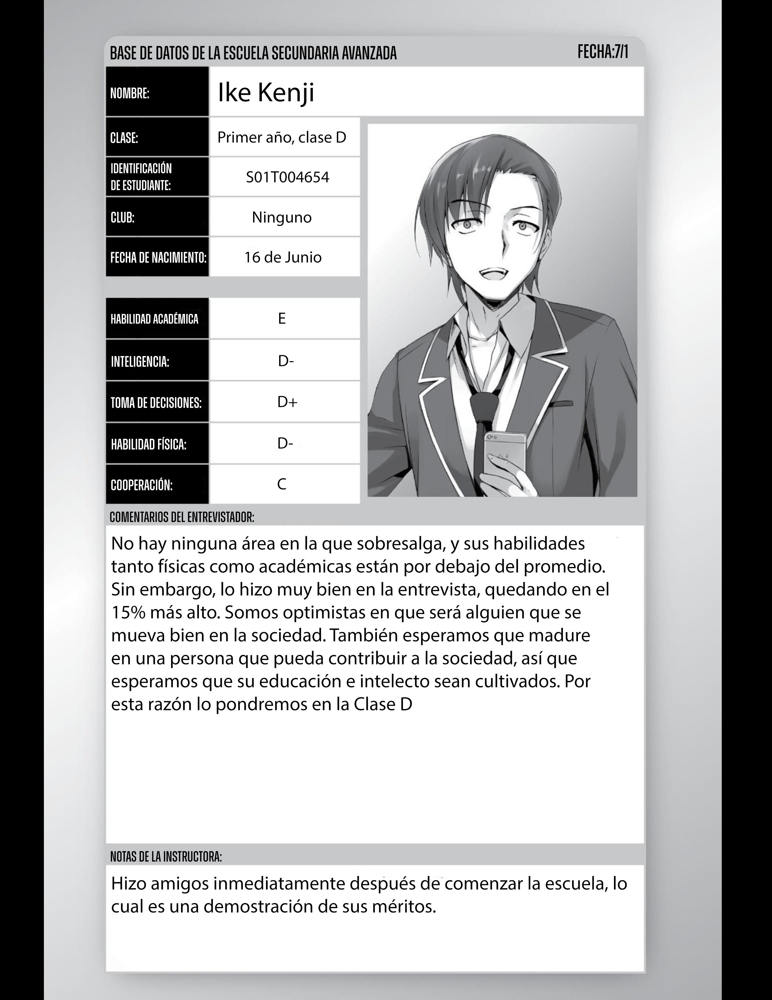
—Claro. Lo prometo —Horikita, agradecida por la ayuda, la aceptó sin dudarlo—. Bueno, Ayanokouji-kun. Hay algo en lo que me gustaría que me ayudaras.
—Si no es algo realmente molesto, seguro. Te ayudaré.
—Ayudar a los demás es fundamentalmente molesto y lleva mucho tiempo.
En otras palabras, necesitaba prepararme. No vi una salida, así que decidí ceder ante Horikita.
—Bien, ¡¿Vam-...?!
Recibí un golpe sorpresivo en mi costado. El dolor fue repentino e intenso. Me caí en un rincón como si me hubiera golpeado un viento muy fuerte.
—Te perdono por tocarme esta vez. Sin embargo, la próxima vez te lo devolveré el doble.
—¿Qué...? ¡Ah, ah!
El dolor me quitó la voz, como si no se me permitiera discutir. Espera, cuando dijo que me devolvería el doble, ¿quiso decir que sus golpes serían el doble de duros que ahora? ¡Eso era inimaginable!
Incrédula, Ichinose observó todo el espectáculo. Miró a Horikita como si la chica fuera algo aterrador. Recuérdalo bien, Ichinose. Horikita era una mujer sin piedad.... Gulp.
SÓLO UNA SOLUCIÓN
El sol del verano elevándose en el cielo era increíblemente cálido. A cada paso del camino arbolado hacia la escuela, mi cuerpo gritaba con agonía. Sudor caía por mi cara. Una alegre estudiante corrió junto a mí y se me adelantó. Se veía muy animada. Por otra parte, ¿quizás estaba loca? Creo que no correría aunque me persiguiera el Apocalipsis. Justo detrás de los árboles, con la luz filtrándose a través de sus hojas, una solitaria estudiante estaba sentada contra el pasamanos. Me miró. ¿Cómo puede esta hermosa chica ser tan buena en ubicarse en un escenario? Se me ocurrió la idea de capturar esta escena idílica en una fotografía. Sin embargo, no tuve las agallas para tomarle una foto.
—Buenos días, Ayanokouji-kun.
—¿Estás esperando a alguien, Horikita?
—Sí. Te estaba esperando.
—Supongo que si quieres confesar tus sentimientos, lo mejor es que lo digas.
—¿Eres idiota? —escupió.
Me sentí con muchísimo más calor que nunca.
—Todo se decidirá hoy —dije.
—Sí.
—Estaba pensando....tal vez cometí un error. La elección equivocada...
—¿Estarías contento si hubiéramos llegado a un acuerdo? —No quería pensar en ello, pero Horikita continuó—. Si Sudou-kun es penalizado por esto, será mi responsabilidad.
—Así que te preocupas por cosas como esta, ¿eh?
—La verdad es que estamos haciendo una apuesta. Estoy un poco impaciente. ¿Tú estás bien?
—Tenemos la estrategia que propusiste ayer. Ichinose también estará allí.
Nos las arreglaremos.
Golpeé ligeramente el hombro de Horikita y continué caminando.
—Oye-
—¿Hmm?
—Nada. Después de que resolvamos este caso —contestó Horikita, a punto de decir algo. Cerró la boca.
PARTE 1
En cuanto entré en el aula, noté un cambio. Sakura, que normalmente llega a la escuela justo a tiempo, ya estaba sentada en su pupitre. ¿Llegó temprano por alguna razón específica? Horikita también se mostró sorprendida al ver a Sakura.
Además, el lenguaje corporal de Sakura... Bueno, se veía igual que de costumbre, pero me parecía que estaba sentada erguida, como si estuviera lista para algo. Era una diferencia tan sutil que no se puede llamar un cambio. Era tan minúscula que si me dijeras que me lo imaginaba, diría que tenías razón y lo olvidaría.
Justo cuando estábamos a punto de pasar por el asiento de Sakura, ella levantó la vista. En vez de un saludo adecuado, levantó mansamente la mano. Para alguien como Sakura, esa parecía una respuesta apropiada.
Eso es lo que pensé, hasta que--
—Um... Buenos días, Ayanokouji-kun. Horikita-san.
—Buenos días...
Era la primera vez que Sakura saludaba por la mañana. Estaba tan sorprendido que mi respuesta se atascó en mi garganta. Nuestros ojos no se encontraron, pero ella trató desesperadamente de sacar las palabras.
—¿Qué le pasa? —Murmuró Horikita.
—Tal vez por lo que pasó ayer, ¿dio un paso adelante en el camino hacia la adultez?
Sakura, que rara vez hablaba delante de otros, había dado audazmente testimonio en un ambiente tenso. Probablemente aprovechó la oportunidad para reflexionar.
—La gente no cambia tan fácilmente. Tratar de cambiarse es virtualmente imposible.
La breve pero realista declaración de Horikita hizo añicos la hermosa imagen que yo había creado. Como yo no era un idealista, pensé que Horikita estaba en lo cierto. No había ninguna diferencia importante entre la Sakura de hoy y la de ayer.
Sin embargo, indudablemente no sería correcto decir que ella era exactamente igual. Para poder cambiar, primero tenía que pensar en cambiarse a sí misma.
Tenía que querer cambiar. No hay duda de eso.
—Mientras no exagere, creo que estará bien —dijo Horikita.
—¿Exagerar?
—Si intenta hacer lo que todavía no es posible para alguien como ella, sólo fracasará.
Las palabras de Horikita tenían un poder misterioso pero convincente, como si estuviera hablando por experiencia.
—Bueno, siendo una solitaria que ama su soledad, eres muy persuasiva en este tema.
—¿Quieres morir de una vez por todas?
Tal vez no provenía de la soledad, sino del infierno....
Observé a Sakura desde lejos. Todavía no estaba en condiciones de saludar fácilmente a otros estudiantes. Como esperaba, no se volvió sociable espontáneamente. ¿Sería mejor si no se esforzara? Por supuesto que sí.
Normalmente no hablaba con nadie, pero nos saludó. Lo que otro consideraría una acción trivial era una tremenda tensión mental y física sobre Sakura.
Era imposible pensar que esto no tendría un efecto en ella. Por otra parte, podría quebrarse si intenta esforzarse por cambiar demasiado. Debemos tener cuidado con la forma en que ejecutamos nuestra estrategia.
PARTE 2
La discusión tardó aproximadamente 30 minutos en comenzar. Me puse de pie y salí del aula, y me dirigí a encontrarme con alguien en un punto de encuentro determinado. Antes de irme, decidí hablar con Sakura.
—Sakura. ¿Vas a regresar ahora? —Le pregunté mientras se preparaba para irse.
—Ayanokouji-kun... Tenemos el juicio hoy.
—No voy a participar —Le dije que tenía que hacer un trabajo trivial tras bambalinas.
—Ya veo... —murmuró.
Sakura bajó los ojos, como si tuviera algo en mente. Se veía un poco rara, nerviosa. Era como si no pudiera calmarse.
—¿Qué pasa?
—¿Eh?
—Sakura, no necesitas testificar hoy. No hay necesidad de que estés tan nerviosa, ¿verdad?
Sakura estaba sudando.
—Es porque todos hacen lo mejor que pueden. Pensé que yo también lo haría lo mejor que pudiera —Sentí que se lo decía a sí misma, y no a mí.
—¿En qué estás pensando? —Le pregunté.
—Bueno, si hay algo que necesite para seguir adelante... lo haré.
Aunque le pregunté en qué estaba pensando, Sakura no me dio una respuesta clara. Quería preguntarle por qué se veía incómoda, pero el teléfono en mi bolsillo vibró. Mi alarma me dijo la hora. No podía quedarme más tiempo.
—Hasta luego, Ayanokouji-kun.
Las palabras de Sakura y su brillante sonrisa no se parecían en nada a ella. Me dejaron con una sensación desagradable.
—Oye, Sakura. ¿Tienes tiempo más tarde? Quiero hablarte de algo.
Sentí como si me estuvieran arrancando esas palabras. Sakura agitó suavemente la cabeza.
—Tengo planes para hoy. ¿Quizás mañana?
Si ella me aseguraba que estaba bien, no podía seguir contradiciéndola.
Realmente tenía que irme. Le di la espalda a Sakura y me fui.
Eran más de las 3:40. Con las clases del día terminadas, fui al edificio especial.
Este lugar se había vuelto cada vez más caluroso y húmedo a medida que pasaba el verano. Si las cosas se desarrollaron según lo planeado, entonces la persona que estaba esperando debería llegar pronto. Poco después, aparecieron tres tipos, todos refunfuñando por el calor insoportable que hacía.
Parecían contentos, con expresiones optimistas.
Eso era porque los tres recibieron correos electrónicos de la chica amada de la clase, Kushida. ¿El mensaje contenía una invitación para salir a una cita? ¿O
quizás, aún más descabellado, una confesión romántica? Es probable que soñaran con esas cosas. Cuando me vieron, sus fantasías fueron aplastadas.
—¿Qué está pasando? ¿Por qué estás aquí?
Me recordaron de la sala del consejo estudiantil. Ishizaki, el líder del grupo, se adelantó para intimidarme. Era bastante enérgico cuando no había nadie que lo viera.
—Kushida no vendrá. Le pedí que enviara un correo electrónico para obligarlos a todos a venir.
Ishizaki se veía increíblemente malhumorado al acercarse a mí.
—Esto no es gracioso. ¿Por qué hiciste esto, eh?
—Si no hubiera usado un método sucio, me habrías ignorado, ¿no? Quería hablar con ustedes.
—¿Hablar con nosotros? ¿Por qué querríamos hacer eso? ¿El calor ha afectado tu cerebro o algo así?
Ishizaki, claramente afectado por el calor, agarró su camisa y la movió.
—No importa lo que hagas, no puedes ocultar la verdad. Sudou nos llamó aquí y nos golpeó. Esa es nuestra respuesta. Ahora necesita aceptar silenciosamente su castigo.
—No tengo intención de discutir. Eso sería una pérdida de tiempo.
Entiendo perfectamente que ni la clase C ni la clase D se retractarán de lo que dijeron ayer.
—Entonces, ¿para qué hacer esto? ¿Vas a secuestrarnos para que no vayamos al juicio? ¿O vas a hacer que un montón de gente nos rodee y nos amenace de forma violenta? Será como aquella vez con Sudou.
Oh. Se trata de una idea bastante interesante, pero sólo funcionaría como medida provisional. Esas amenazas no funcionarían contra esta gente. Todo lo contrario; parecía que les gustaría. Si fueran víctimas de otro ataque, encontrarían la manera de hacer que su situación sea aún más favorable.
—Ríndete. Nos vemos luego.
Entendiendo que Kushida no vendría, los tres se giraron e intentaron irse, pero otra persona se interpuso en su camino.
—En realidad, creo que deberían considerar esa idea.
Ichinose, que esperaba que aparecieran todos los jugadores de este drama, se acercó en silencio.
—¿Ichinose? ¡¿Qué estás haciendo aquí?!
Los chicos de la clase C estaban conmocionados. Ante la inesperada aparición de alguien de la clase B, su conmoción era razonable.
—¿Qué quieren decir? ¿Y si digo que estoy aquí porque estoy involucrada en este caso?
—Ichinose, eres una celebridad.
—Ja, ja, ja. Bueno, supongo que soy muy conocida entre los miembros de la clase C.
Como los estudiantes de la clase C no esperaban que ella estuviera involucrada, se notaba que la tensión aumentaba entre ellos. Estaba claro que comenzaban a perder la compostura.
—Este incidente no tiene nada que ver con la clase B, ¿verdad? Así que no te metas...
Pero a diferencia de cuando me hablaron, sus amenazas sonaban débiles.
Parecían desesperados por escapar.
—Tienes razón en que la clase B no tiene nada que ver con esto. Pero,
¿cómo se sienten al involucrar a tanta gente en sus mentiras?
—No mentimos. Nosotros somos las víctimas. Lo somos. Sudou nos llamó y nos golpeó. Esa es la verdad.
—Así que los villanos son tercos hasta el final. ¡Es hora de que paguen el precio¡ —Declaró Ichinose, haciendo un amplio gesto con su brazo derecho—. Mintieron. Todos podemos verlo. Resulta que fueron violentos.
Si no quieren que ese hecho se haga público, retiren su reclamo de inmediato.
Aunque no había explicado cada detalle, sentí que las cosas estarían bien en las capaces manos de Ichinose.
—¿Eh? ¿Retirar? No me hagas reír. ¿Qué, estabas medio dormida cuando se te ocurrió ese argumento? No puedes reclamar algo y hacerlo realidad.
Sudou empezó la pelea. ¿Verdad?
Ishizaki miró a sus dos cómplices, que respondieron inmediatamente,
—¡Así es! ¡Así es!
—¿Sabías que esta escuela es una de las principales instituciones autorizadas por el gobierno en Japón?
—Por supuesto que sí. Por eso intentamos inscribirnos aquí.
—En ese caso, deberías intentar usar la cabeza un poco más. Tus objetivos eran obvios desde el principio, ¿no crees? —Ichinose sonrió y habló con mayor vitalidad, como si disfrutara de ello.
Caminó lentamente hacia los tres mientras hablaba, cual famosa detective revelando al verdadero culpable en una investigación.
—¿No crees que la respuesta de la escuela a este incidente fue bastante extraña?
—¿Eh?
—Cuando plantearon el asunto a la escuela, ¿por qué no se castigó inmediatamente a Sudou? ¿Por qué dar la oportunidad de escapar concediendo un período de gracia de varios días? ¿Cuál crees que fue la razón?
—Porque le mintió a la escuela y pidió clemencia. Si no le hubieran dado el tiempo como formalidad, nosotros, las víctimas, habríamos ganado.
—¿Es realmente cierto? Me pregunto si tenías un objetivo diferente, un propósito diferente.
Las ventanas del pasillo estaban todas cerradas. El sol, todavía en lo alto del cielo, brillaba sobre nosotros, aumentando el calor y la humedad.
—No tengo ni idea de lo que estás hablando. Ah, maldita sea. ¡Hace muchísimo calor!
La capacidad de pensar, es decir, de concentrarse, disminuye a medida que aumenta el calor. Uno no puede exhibir suficiente pensamiento lógico y creativo fuera de un ambiente cómodo. Cuanto más contenido tengas en la cabeza, más se sobrecargará tu cerebro.
—Como sea, me voy de aquí. Si me quedo, voy a cocerme vivo.
—¿De verdad está bien? Si te vas de este lugar, podrías arrepentirte por el resto de tu vida.
—¿Qué quieres, Ichinose?
No entendían adónde quería llegar.
—¿No lo entiendes? La escuela sabe que mientes, la clase C. Lo saben desde el principio.
Esta afirmación los sorprendió. Ninguno de ellos se había imaginado tal resultado. Ishizaki y los demás se miraron durante unos segundos, y luego se rieron.
—No me hagas reír. ¿Mentimos? ¿Y la escuela lo sabe?
—Ja, ja, ja, ja, ja. Ustedes son tan graciosos —dijo Ichinose—. Estuvieron bailando en la palma de mi mano todo este tiempo.
—Buen intento, Ichinose. ¡Pero sabemos que es un farol!
—Tengo pruebas reales —continuó Ichinose, sin preocuparse por las amenazas de Ishizaki.
—¿Oh? Bueno, veámoslas. Muéstrame qué pruebas tienes...
Pensaron que no había forma de que tuviéramos pruebas.
Aunque Ichinose haya dicho eso, no temblaban. Sin embargo, cuando ella empezó a hablar, su derrota estaba decidida.
—¿Sabías que hay cámaras de seguridad instaladas en toda la escuela?
Es una medida que han tomado para monitorear lo que hacemos todos los días.
—Sí. ¿Y qué?
Al parecer ya sabían lo de las cámaras de seguridad. Ishizaki y los demás parecían indiferentes.
—Bueno, entonces. ¿No viste eso?
Ichinose miró a un lugar cerca del techo un poco más abajo en el pasillo. Ishizaki y los demás siguieron su mirada.
—¿Eh?
Vacilaron completamente incrédulos. Había una cámara de seguridad que pendía en el pasillo y ocasionalmente giraba de izquierda a derecha, capturándolo todo.
—Es una lástima, ¿no? Si quieren tenderle una trampa a alguien, tendrán que hacerlo en un lugar sin cámaras.
—¡¿Qué cámara?! ¡Estás mintiendo! Pero, no había cámaras en los otros pasillos, ¿verdad? ¡Es raro que sólo haya una instalada aquí! ¡¿Cierto?!
Ishizaki miró a sus dos cómplices, buscando su opinión. Asintieron, confirmándolo, Ishizaki tenía razón. Se limpiaron el sudor de la cara mientras respondían.
—No puedes engañarnos así. ¡Ustedes mismos instalaron esa cámara!
—Tienes razón en que, en general, las cámaras no están instaladas en la mayoría de los pasillos de este edificio. Sin embargo, hay excepciones, y varios lugares en los que se han instalado cámaras de seguridad, como frente a la sala de profesores y al laboratorio de ciencias. Obviamente, hay muchos objetos de valor guardados en la sala de profesores, ¿sabes?
Además, el laboratorio de ciencias tiene muchos productos químicos.
Como el laboratorio de ciencias está en este nivel, es natural que se instale una cámara aquí.
Por primera vez, Ishizaki y los demás se quedaron sin palabras. Ichinose notó cómo se tambaleaban.
—¿Has mirado atrás, detrás de ti? Hay una allí también, ¿verdad?
Ishizaki y los demás miraron por el pasillo como se les había ordenado, y vieron una cámara. Por supuesto, esa cámara estaba monitoreando el extremo opuesto del pasillo.
—Así que si hubiéramos instalado una cámara, como dijiste, ¿hubiéramos preparado una en ese lado también? Además, ¿cómo exactamente habríamos preparado cámaras de vigilancia cuando ni siquiera podemos salir del campus?
Estábamos cortando sus rutas de escape una por una.
—Eso es imposible... Eso... Quiero decir, nosotros... lo comprobamos en aquel momento... Deberíamos habernos...
—Este es el tercer piso, pero ¿realmente lo comprobaste? ¿Quizás sólo miraste el segundo o el cuarto? ¿Quizás las cámaras estaban realmente colocadas aquí como una trampa?
Los tres estaban sosteniendo sus cabezas y sudando mucho más de lo normal.
—Además, se dan cuenta de que se acaban de destruir a sí mismos,
¿verdad? La gente normal no pensaría en comprobar si hay cámaras de seguridad, ¿no? Eso es básicamente admitir tu culpa —Ichinose dio el golpe final.
—Entonces, entonces... Esa vez... Imposible...
—Las cámaras de seguridad no pudieron grabar los sonidos de sus voces, pero definitivamente capturaron el momento decisivo en que lanzaron el primer golpe.
Los dobladillos de sus uniformes estaban completamente empapados de sudor.
Ichinose me pasó la batuta a mí. Probablemente hubiera sido mejor que hablaran conmigo, ¿no?
—La escuela está esperando, ¿verdad? Adelante, dígannos la verdad.
Después de darles un período de gracia, el propio presidente del consejo
estudiantil les preguntó si habían mentido. Si se acuerdan, ¿no se dan cuenta de que el consejo estudiantil lo ha visto todo?
Los tres se devanaban los sesos para recordar lo que pasó en la reunión. Por supuesto, el consejo estudiantil no se había dado cuenta de sus mentiras. Sin embargo, el consejo estudiantil tenía sus dudas sobre quién estaba diciendo la verdad. Si los estudiantes de la clase C interpretaban que esa pregunta se centraba directamente en ellos, se prestaba una cierta credibilidad.
—¡Eso es.... no he escuchado nada de eso! ¡Se acabó todo!
Komiya se inclinó. Apoyado en la pared, se deslizó hasta las rodillas. Kondou tenía la cabeza entre las manos. Todos ellos parecían reconocer lo que estaba sucediendo. O eso pensaba, pero Ishizaki no se lo creyó.
—Espera un minuto. Todavía no estoy convencido. Bien, digamos que las cámaras de seguridad capturaron algunas imágenes. Debieron probar la inocencia de Sudou sin tener que hacer nada, ¿verdad? No hacía falta que nos llamaras para decirnos esto. Podrían haberla presentado en el juicio.
Pero ustedes nos llamaron aquí, ¿verdad?
—¿Inocencia? Eso depende de lo que seas inocente. Sabemos que ambas partes sufrieron daños durante el incidente. No importa las circunstancias, Sudou los golpeó a los tres. Eso es innegable. Por supuesto, si las grabaciones de seguridad pueden probar que Sudou no fue el que los llamó a ustedes tres aquí, probablemente recibiría el castigo más leve posible. Sin embargo, su posición como titular seguiría amenazada. Puede que no se le permita participar en torneos.
Sudor caía por la frente de Ishizaki como una cascada. También teníamos calor, pero comparativamente estábamos mucho mejor que estos tres. Sus temperaturas seguían subiendo a medida que los acorralábamos.
—¿Qué demonios? Bueno, si es como ustedes dicen, las grabaciones de seguridad no deberían ser ningún problema, ¿verdad? Estaremos bien mientras podamos suspender a Sudou por un día.
—Si eso sucede, podrían ser expulsados. ¿Están de acuerdo con eso?
Claramente no habían pensado bien esa parte, y no se dieron cuenta del dilema al que se enfrentaban.
—Si alguien comprueba las imágenes de la cámara de seguridad, expondría sus mentiras. Si eso ocurriera, es muy probable que los expulsen. Cualquiera podría ver eso.
—¡¿Qué...?!
—Espera, ¿por qué expulsado? ¡No dijiste que mentimos! —Kondou intentaba salvarse, su voz débil y tensa.
—La escuela nos está poniendo a prueba. Están probando para ver si podemos resolver nuestros problemas, y qué tipo de conclusiones sacamos. ¿No crees que eso es consistente con todo lo demás en este caso?
—¿Por qué...? ¡Definitivamente no quiero que me expulsen!
—H-hey, Ishizaki. ¡No es demasiado tarde para decirles que mentimos! Si lo hacemos, la escuela podría perdonarnos!
—Maldita sea. Esto es ridículo. ¿Admitir que mentimos? Bueno, está bien.
Mientras Sudou sea castigado, me prepararé para el peor castigo posible,
¡un sacrificio honorable! ¡Todo habrá terminado para Sudou!
En otras palabras, Ishizaki no se retiraría. En vez de eso, seguiría adelante.
—Es muy pronto para llegar a una conclusión. Te daremos una última oportunidad. Sólo hay una forma de salvar a la clase C y a la clase D.
—¡Ni de puta broma!
Si el incidente existiera, sería imposible salvar a todos. En ese caso, sería mejor que el incidente no existiera en absoluto.
—Sólo hay una manera de resolver este problema. Díganle a la escuela que desean retirar su queja. Si hacen eso, la escuela no presentará la grabación de la cámara de seguridad. Si no hay quejas, nadie puede ser castigado. Además, si las grabaciones de seguridad nunca se mencionan,
la Clase D también se beneficia. Como ya sabemos, si las grabaciones de seguridad se presentan, Sudou seguiría enfrentándose a cierto grado de castigo. En otras palabras, las Clases C y D pueden llegar a un acuerdo.
La escuela no puede investigar si no pueden ver el video y ver que mintieron, ¿verdad?
—Ahh, ahh.... Sólo... déjame llamar...
Un Ishizaki de aspecto destrozado sacó su teléfono. Sin embargo, Ichinose le dijo severamente que no. No le dio tiempo para pensar. Teníamos que terminar esto ahora.
—Bueno, no estás cooperando mucho. Por lo tanto, no tenemos más remedio que prepararnos. Haremos que la escuela confirme el video de seguridad de inmediato, y serán expulsados —Asentí en señal de conformidad. Kondou y Komiya agarraron los brazos de Ishizaki.
—Vamos. ¡Aceptemos la idea de Ichinose, Ishizaki!
—E-espera. Si no lo compruebo con esa persona, será malo —murmuró.
—¡Ya hemos perdido! ¡No quiero que me expulsen! ¡Por favor, Ishizaki!
—¡Maldición! Bien.... Nos retiraremos. ¡Estará bien si nos retiramos!
Ishizaki cayó de rodillas.
—Bueno, vayamos a la sala del consejo estudiantil ahora mismo. Iremos juntos.
Fuimos a la sala del consejo estudiantil, con los tres estudiantes de C en medio.
Si les quitamos los ojos de encima por un segundo, podrían ponerse en contacto con alguien para pedir consejo. Cuando finalmente llegamos a la sala del consejo estudiantil, empujamos a los tres hacia adentro. Horikita lo había montado todo muy bien.
PARTE 3
—¡Whew! ¡Me siento mucho mejor! ¡Muchísimas gracias! ¡Gracias por darme un papel tan importante! ¡Estaba tan feliz! —Ichinose gritó.
—Bueno, fue más como si hubieras hecho lo que querías, Ichinose.
—Ja ja ja ja, sí. Supongo que sí. Pero el caso está cerrado, ¿eh?
Sí, realmente lo estaba.
—Me preguntaba que hacías cuando me pediste que te prestara algunos puntos ayer.
Volvimos al edificio especial cálido y húmedo y colocamos una escalera de tijera.
—No podía creer que quisieras instalar cámaras de seguridad.
Sí, así es. La escuela no había instalado esas cámaras de seguridad. Ichinose y Kanzaki las compraron y, junto con el Profesor, las instalaron durante la hora del almuerzo. Ishizaki y los otros dos estudiantes estaban aterrorizados por las filtraciones de las cámaras, pero esas cámaras eran falsas.
Al principio me sorprendió que la escuela vendiera ese equipo. Por otra parte, si bien no se podría pensar en utilizarlos para la prevención del crimen, podrían ser útiles en las mediciones y registros. En otras palabras, herramientas para estudiar. Tal vez llamarlas cámaras de red en lugar de cámaras de seguridad haría más fácil su comprensión.
El calor había comprometido la capacidad de pensar de los estudiantes de la clase C. Estaban en modo crisis, sin poder relajarse. Además, se habían sentido amenazados psicológicamente durante ese enfrentamiento. No había forma de que se dieran cuenta de que estábamos mintiendo. Incluso si lo dudaban, no tenían tiempo para investigar.
—Cuando llegue el momento, se convertirán en rivales formidables para la clase C, Ayanokouji-kun.
—Si llega un momento así, supongo.
Sin embargo, Ichinose bien podría estar en la clase A para entonces.
—Si Horikita-san estuviera en la clase B, habríamos llegado a la clase A de inmediato.
—Probablemente.
Quité la cámara y se la pasé a Ichinose, quien estabilizaba la escalera.
—Definitivamente devolveré los puntos que me prestaron. Sólo dime cuándo los quieres.
—Claro. Mientras me pagues antes de la graduación, está bien. Entonces,
¿qué vas a hacer ahora? ¿Esperar frente a la sala del consejo estudiantil?
—Seguramente...
De repente recordé ver a Sakura. Dijo que tenía planes para hoy, ¿pero qué estaba haciendo? Antes, cuando me esperaba después de clase, ¿qué quería decirme? Se veía como si hubiera decidido hacer algo, a juzgar por su expresión.
¿Verdad? Dijo que tenía valor. Pero, ¿para qué?
El sentimiento me atormentaba, como si la parte de atrás de mi cabeza se adormeciera mientras mis pensamientos se arremolinaban.
—Oh, sí, eso me recuerda. Había una cosa que quería decirte, Ayanokouji-kun.
Sin embargo, antes de que Ichinose pudiera decir algo, ya estaba corriendo. Lo que sea que quisiera decirme, iba a tener que esperar.
—¡¿Eh?! ¡Espera un segundo!
Aunque no podía entender lo que estaba pasando, por alguna razón Ichinose me siguió.
PARTE 4
Los datos de rastreo de mi teléfono mostraban la entrada de la tienda de electrónica. Para no desanimarme, Ichinose vino corriendo detrás de mí y se quedó cerca. A medida que nos acercábamos a nuestro destino, increíblemente,
estaba sin aliento. Tuve que parar y recuperarlo. Como precaución, le hice señas a Ichinose para que no hablara.
—¡Por favor, no me contacte más!
—¿Por qué dirías algo así? Eres mi tesoro.... Desde la primera vez que te vi en una revista, te he amado. Al encontrarte de nuevo aquí, sentí que era el destino. Te amo.... ¡No puedo dejar de sentirme así por ti!
—¡Basta.... por favor, basta! —Gritó Sakura. Sacó algo de su bolso.
Cartas. Parecían docenas... no, cientos de cartas. Me preguntaba cuántas había enviado este hombre.
—¿Cómo sabe el número de mi habitación? ¿Por qué sigue enviando esto?
—¿Por qué? Por supuesto que sabría el número de tu habitación y te enviaría cartas. Es porque nuestros corazones están conectados.
Sakura estaba sufriendo desde que empezó la escuela aquí. Su fan conocía su identidad, y ella tenía que lidiar con su atención todos los días. Sin embargo, Sakura ya estaba harta y, gracias a su nuevo coraje, estaba a punto de romperse. Decidió liberarse de él aquí y ahora. Su determinación tenía sentido ahora.
—Por favor, deténgase. ¡Me está molestando!
Arrojó el paquete de cartas al suelo, rechazando el amor no correspondido del hombre.
—¿Por qué.... por qué harías algo así? ¡Incluso después de que te escribí mis sentimientos!
—¡No se acerque más!
El hombre se acercó a Sakura y cerró la distancia que lo separaba de ella.
Caminaba con una intensidad que hacía parecer que estaba a punto de atacar.
Aferrándose a su brazo, la empujó contra la puerta cerrada de la tienda.
—Te mostraré lo mucho que te quiero ahora... Si hago eso, entonces lo entenderás, Sakura.
—¡No, déjeme ir!
Ichinose me tiró de la manga. Por lo visto, ya no podíamos dejar las cosas así.
Quería esperar hasta que pudiéramos atraparlo en el acto con algo definitivo, pero no tenía elección. Tomando el brazo de Ichinose, nos escabullimos como una pareja de delincuentes. Mientras caminábamos, tomamos fotos con nuestros teléfonos, nuestras cámaras haciendo clic repetidamente.
—¡Ah, parece que los atrapamos! ¡Ese viejo está haciendo algo sucio!
—¡¿Eh?!
Sakura se quedó completamente atónita al oírme hablar con el tono desconocido de un delincuente. Fue increíblemente embarazoso, pero me enfrenté a ello.
—Ooh, “Adulto acosa a chica de preparatoria”. Puedo ver los titulares mañana; ¡será un gran escándalo!
—¡N-no! Eso es un error. ¡Estás equivocado!
—Hmm, sin duda no suena mal. ¿Verdad? Parece de esa manera, ¿no crees?
Ichinose intentó igualar mi actuación, pero su tono era cruel. El hombre, ahora nervioso, se alejó apresuradamente de Sakura. Pero estábamos preparados con nuestras cámaras.
—¿Equivocado? No lo creo. ¡Mira todas esas cartas! Qué asco. ¿Eres un acosador?
Se pellizcó la nariz mientras recogía las cartas, como si estuviera agarrando los calcetines de otra persona. Las recogió por las esquinas, usando sólo su índice y su pulgar.
—Estás equivocado. Es sólo que... sí, eso. Dijo que quería que alguien le enseñara a usar una cámara digital, así que dije que le enseñaría en persona. Eso es todo.
—Hmmm.
Me acerqué al hombre, presionándolo contra el postigo.
—Mi novia y yo lo vimos todo. Así que tomamos fotos. Si vuelves a mostrarle tu cara a esta chica, o le envías más cartas asquerosas, te expondremos. ¿Lo entendiste?
—¡Ja, ja, ja, ja, ja! ¿De qué estás hablando? Realmente no....sé de lo que estás hablando.
—¿No sabes de qué estoy hablando? No te vas a librar de esto, viejo. Si levantas la mano o simplemente miras a esta ídol, será el fin para ti. Te voy a dar una paliza. ¿Entendido?
—¡Eek!
Después de que perdió por completo su voluntad de luchar, le di tiempo para escapar.
—¡Adiós! ¡No volveré a hacer eso nunca más!
El empleado corrió de vuelta dentro de la tienda para alejarse de nosotros. Sin la fuente de su terror, Sakura de repente se veía exhausta.
Parecía que se iba a derrumbar y colapsar, así que la agarré apresuradamente por los brazos y la sostuve.
—Lo hiciste muy bien.
Le había dado un buen sermón, pero eso ya no era necesario. Ella había intentado vencer el sufrimiento que había enfrentado por sí misma. Tenía que considerar sus sentimientos.
—Ayanokouji... kun. ¿Por qué estás aquí?
—Estoy muy contento de haber intercambiado información de contacto contigo —Saqué mi teléfono, que mostraba la ubicación de Sakura.
—Supongo que no soy de fiar después de todo.... Al final no pude hacer nada por mí misma.
—Eso no es verdad. Fue genial cuando tiraste esas cartas al suelo—
Señalé el desorden de papeles multicolores esparcidos por todas partes.
—Oye, oye. ¿Quién es esa persona misteriosa que mencionaste? ¿Una ídol? —Ichinose tiró una de las asquerosas cartas al suelo, inclinando la cabeza, confundida.
—Eso es....
Aunque no quería ocultarle nada a Ichinose, dudé en hablar sin el permiso de Sakura. Sin embargo, Sakura me miró a los ojos y me asintió ligeramente.
—Sakura era una ídol cuando estaba en la secundaria. Su nombre era Shizuku.
—¡¿Eh?! ¡¿Idol?! ¡Eso es asombroso! ¡Es una artista! Ooh, ¡estrecha mi mano, estrecha mi mano! —Ichinose estaba llena de emoción infantil.
—Pero nunca salí en la televisión ni nada...
—¡Da igual, eso es asombroso! Nunca he pensado en convertirme en una ídol o algo así.
Yo no sabía nada de eso. Pensé que Ichinose tenía la cara y la figura para ello...
No, más bien, pensé que tenía las cualidades necesarias.
—¿Cuándo te diste cuenta, Ayanokouji-kun? —Preguntó Sakura.
—Hace un rato. Lo siento. Otras personas de la clase también se dieron cuenta —Como se iba a enterar tarde o temprano, decidí decírselo.
—Creo que estoy contenta con esto, sin embargo.... ha sido difícil mentir.
Si esta situación le había dado a Sakura la habilidad de quitarse finalmente la máscara, entonces era algo bueno.
—En cualquier caso, fuiste excesivamente valiente. Si algo pasaba, tendría que intervenir.
—Sí, probablemente tengas razón. Estaba muy asustada.
La chica que ayer lloró abiertamente delante de mí se estaba riendo de una manera bastante peculiar. Se reía mientras parecía estar al borde de las lágrimas.
—Ayanokouji-kun... No me mires con ojos tan extraños.
—¿Ojos extraños?
—No importa, no es nada —Sakura no lo aclaró, pero llevaba una sonrisa ligeramente alegre en la cara—. ¿Crees que todo el mundo se daría cuenta si fuera a clase sin mis gafas y cambiara mi peinado?
—Creo que hay una posibilidad de que la gente en la escuela entre en pánico cuando se den cuenta... pero creo que estará bien.
De repente me imaginé a una chica hermosa, con toneladas de gente corriendo para verla. Tenía una gentil disposición, y cualidades que harían que los chicos se amontonaran naturalmente a su alrededor.
—Whoa.... ¡Eres tan increíblemente linda! Sin lentes, causas una impresión completamente diferente.
Parecía como si Ichinose hubiera buscado a Shizuku en su teléfono. Se veía emocionada por lo que encontró. Aunque el incidente con Sudou podría haber puesto en peligro a nuestra clase y puesto de manifiesto nuestra falta de unión, al menos había dado a Sakura la oportunidad de crecer. Quizá todo valió la pena al final.
Espera. No soy el tipo de persona que piensa así. O, quizás, debería decir que no sé qué tipo de persona soy. ¿Es este el verdadero yo? Me sentí un poco confundido.
—Lo siento. Por estar callada tanto tiempo.
—No es nada por lo que tengas que disculparte. No tenemos que hablar de ello. Sin embargo, creo que ahora tenemos el tipo de relación en la que podemos hablar de las cosas. Si estás sufriendo o si te sientes perdida, puedes hablar conmigo. Deberías consultar a Horikita y a Kushida también.
Detrás de mí, Ichinose se desplomó deliberadamente de una manera exagerada.
—Así que le dices: 'Puedes hablar conmigo'. Me pregunto a qué te refieres.
No tenía respuesta para eso.
—De acuerdo. Entiendo —murmuró Sakura.
—Ah, yo también ayudaré —Aunque Ichinose no la conocía demasiado bien, le sonrió a Sakura—. Soy Ichinose, de la clase B. Encantada de conocerte, Sakura-san.
Sakura se mostró un poco indecisa, pero estrechó la mano extendida de Ichinose.
—Por cierto, ¿no querías decirme algo en el edificio especial hace un rato?
—pregunté, pensando en mi conversación con Ichinose.
—Ah, sí, así es. Había algo importante de lo que quería hablarte.
Ichinose se tomó un momento para recuperar el aliento, y luego puso una mirada seria.
—Probablemente no debería decir esto ahora mismo, pero... había alguien tirando de los hilos detrás de todo este incidente de Sudou.
—¿Tirando de los hilos?
Como Ichinose se veía tan seria, no pensé que fuera sólo una corazonada de ella.
—A decir verdad, hubo una disputa entre los estudiantes de la clase B y la clase C anteriormente. Esa vez, sin embargo, la escuela no se involucró.
Alguien llamado Ryuuen-kun fue el cerebro de eso.
—¿Ryuuen? No reconozco el nombre.
—Eso es porque aún no ha encontrado ninguna razón para revelarse. No hay razón para que lo conozcas.
Ichinose, que siempre se veía tan brillante, ahora parecía lúgubre y sombría.
—Estoy muy vigilante de todos los estudiantes de primer año aquí. Creo que hizo que Sudou-kun pareciera un mentiroso, e instigó la disputa con la Clase B. Todo esto fue obra suya. No duda en lastimar a otras personas por el bien de sus propios intereses. Es un oponente formidable.
—Cuando la clase B tuvo problemas, ¿consiguió una solución pacífica?
—De alguna manera, sí. Sin embargo, si lo miras como un juego, no puedo decir si gané o perdí... De todas formas, creo que como lo que él ideó fue más fácil de ver esta vez, he empezado a entender cómo está estructurada esta escuela. Deberías tener cuidado.
No sabía quién era este Ryuuen, pero sin duda era un oponente muy peligroso.
Alguien que desarrolló estrategias despiadadas que podrían conducir a nuestra expulsión si fallamos un solo paso.
—Así que si algo pasa, puedes venir a pedirme ayuda. Háblame cuando lo necesites.
—Sí. Lo tendré en cuenta.
PARTE 5
Sudou-kun y yo llegamos a la sala del consejo estudiantil 10 minutos antes de que comenzara la deliberación. Tachibana-san era la única persona que estaba allí. No vi señales de otros estudiantes, ni de mi hermano mayor.
—Oh Dios, estoy tan nervioso. ¿Qué hay de ti, Horikita? —preguntó Sudou.
—Me siento igual que siempre.
Este caso se resolverá hoy. Sabía que no iba a ser fácil, especialmente para mí.
Había declarado que Sudou era completamente inocente. Si mi estrategia fallaba, sería en vano. Pensé que había algo de valor en resistir, así que se me ocurrió este plan durante este período de prórroga.
Sin embargo, si esta estrategia fracasaba, se convertiría en una batalla verbal en la que nos lanzaríamos insultos. Al final, el resultado sería sin duda peor que el acuerdo que se había propuesto en la audiencia anterior. Entonces Sudou-kun me odiaría. Bueno, estaría ladrando al árbol equivocado. Aun así, tendría que reconocer sus quejas, porque la apelación al consejo fue mi responsabilidad.
Por otra parte, supuse que si el propio Sudou-kun lo deseaba, existía la posibilidad de llegar a un acuerdo. Probablemente ellos querrán acortar su propia suspensión tanto como sea posible. Si hiciéramos de ello el punto central de nuestro debate, podríamos conseguir que la sentencia de Sudou-kun también se aligerara.
La reconciliación era otro nombre para la derrota. Sin embargo, si la persona en cuestión lo deseaba, no tendríamos otra opción.
Poco tiempo después, se abrieron las puertas de la sala del consejo estudiantil.
Mi corazón empezó a latir al doble de velocidad. Mi hermano mayor.... Mis palabras se quedaron en mi pecho y no salieron.
Aunque debí entenderlo, me sentí atacada. Estaba llena de varios síntomas como temblores, nerviosismo y mareos. Pero no podía repetir los errores de ayer.
Le di la espalda a mi hermano. Había otros oponentes a los que debía enfrentarme.
—Oh, Dios. Veo que el chico de ayer no está aquí.
Luego llegó el maestro de la clase C, Sakagami-sensei. Chabashira-sensei estaba con él.
—¿Qué le pasó a Ayanokouji, Horikita? —preguntó.
—No participará.
—¿No participará?
Chabashira-sensei se giró hacia el asiento vacante con una mirada de perplejidad. Parecía preocupada por su ausencia, como si el procedimiento no tuviera sentido sin él. No, no exactamente sin sentido, pero... Era vago, pero tenía la sensación de que lo que Chabashira-sensei estaba viendo era la evidencia de la implicación de Ayanokouji-kun.
—Bueno, aunque no esté aquí, los resultados serán los mismos —No quería admitirlo, pero lo hice casi como para sacudir la sombra.
—Bueno, lo que sea. Depende de ustedes decidir.
Ambos profesores se sentaron. Comenzaríamos la deliberación tan pronto como llegaran los estudiantes de la clase C. Cuando llegara ese momento, ¿cómo iría la batalla? Bueno, eso era simple. Nos opondríamos a lo que la otra parte tenía que decir. Reiteramos que ellos estaban mintiendo, y luego atravesaríamos esas mentiras antes de afirmar que nosotros éramos los que decíamos la verdad. Eso era todo.
Sería lo mismo para ambas partes. A través de las mentiras, llegaríamos a la verdad. Esta era una batalla entre la verdad y la mentira. Podríamos hablar de ideas, pero sólo podía haber una solución.
Finalmente, llegaron los estudiantes de la clase C. Estaban todos sudando, como si se hubieran dado prisa.
—Llegan justo a tiempo —dijo Sakagami-sensei a sus alumnos con un leve suspiro de alivio.
—Pues bien, nos gustaría reanudar las deliberaciones sobre este caso, desde donde lo dejamos ayer. Por favor, siéntense.
Tachibana instó a los alumnos de la clase C a sentarse. Sin embargo, no se movieron. En vez de eso, permanecieron de pie frente a Sakagami-sensei.
—¿Pueden sentarte, por favor? —Tachibana-san repitió su petición, pero los tres permanecieron inmóviles.
—Umm... Sakagami-sensei.
—¿Qué pasa?
No era sólo yo. Todos los demás notaron que esta situación era extraña.
—¿Sería posible no celebrar este juicio?
—¿Qué estás...? ¿Qué quieres decir? —Sakagami-sensei se puso en pie en respuesta a esta inesperada petición.
—¿Querían llegar a un acuerdo? ¿O ya han hecho algo al respecto? —Mi hermano mayor miraba fijamente a los estudiantes de la clase C. Sin
embargo, los tres muchachos agitaron la cabeza al unísono, señalando que no, que no querían llegar a un acuerdo.
—Nos dimos cuenta de que no estábamos diciendo nada que valiera la pena sobre cuál de los dos tenía la culpa. Nuestra queja fue un error. Por lo tanto, nos gustaría retirarla.
—¿Retirar su queja? —Chabashira-sensei se rió mientras hablaba.
Llevaba una sonrisa ligera, como si encontrara algo divertido.
—¿Qué es tan gracioso, Chabashira-sensei? —A Sakagami-sensei no pareció gustarle su actitud, mirando a Chabashira-sensei con irritación.
—Oh, disculpa. Sólo me sorprendió porque no lo había previsto. Me imaginé que discutiríamos todo el día hasta que una de las partes se derrumbara, o hasta que pudiéramos proponer un acuerdo aceptable. Sin embargo, increíblemente, han dicho que quieren retirar la denuncia.
—Maestros, miembros de este consejo estudiantil, lamentamos haberles quitado su tiempo. Sin embargo, después de una cuidadosa consideración, esta es la conclusión a la que todos llegamos.
El ferviente alegato de los tres indicaba que su voluntad era fuerte. Parecía que Ayanokouji-kun e Ichinose-san habían manejado las cosas bastante bien. Traté de actuar tranquila y serena, sin dejar que se notara mi alivio.
—Seguramente no pueden aceptar esto. No hicieron nada malo. Sudou-kun causó todo esto a través de la intimidación y la violencia. ¿Piensan quedarse ahí sentados y aguantar esto?
Como si se diese cuenta de algo, Sakagami-sensei nos miró a Sudou-kun y a mí con los ojos llenos de ira.
—¿Qué hiciste? ¿Amenazar a mis estudiantes con violencia para que retiren su denuncia?
—¿Eh? No bromee. No hice nada —dijo Sudou.
—No hay forma de que mis estudiantes retiren su queja a menos que lo hayas hecho. Dinos la verdad. Si haces eso, entonces podemos hacer algo al respecto.
—Sakagami-sensei....vamos a retirar la queja sin importar lo que diga.
Nuestra decisión no cambiará.
Sakagami-sensei, incapaz de comprender lo que decían sus alumnos, bajó la cabeza y se sentó.
—Si dices que quieren retirar su queja, lo aceptamos. Es raro cancelar las deliberaciones durante un caso, pero podemos hacerlo —Mi hermano mayor, el presidente del consejo estudiantil, trató de mantener la calma y la serenidad.
—Espera. No lo entiendo. ¿Por qué están retirando su queja de esa manera?
Agarré el brazo de Sudou-kun para evitar que pronunciara otra palabra.
—¿Horikita?
—Cállate.
No tuve tiempo de explicárselo, por desgracia, así que tiré fuertemente del brazo de Sudou-kun y lo senté.
—Si desean retirar su queja, no tenemos intención de oponernos.
Aceptamos.
Aunque puedo entender la insatisfacción de Sudou-kun al ser llevado a juicio por una mentira, si se retirara la denuncia no habría ganadores ni perdedores. Esto era para lo que habíamos estado trabajando.
—Sin embargo, de acuerdo con la normativa, se exigirá un cierto pago de puntos para cubrir los gastos diversos en que se incurra en el curso de las deliberaciones. ¿Hay objeciones a esto?
Era la primera vez que oíamos algo así. Los estudiantes de la clase C parecían disgustados, pero llegaron a una conclusión de inmediato.
—Entendemos... Pagaremos.
—Muy bien, el procedimiento ha llegado a su fin. Ahora vamos a dar por cerrada esta discusión.
Mientras esperábamos a que cayeran las cortinas en este final bastante abrupto, me preguntaba quién podría haber predicho tal resultado. Mientras tanto, vi a Chabashira-sensei dirigirme una sonrisa bastante atrevida.
—Sudou-kun —dije—. Ya no serás suspendido. La escuela no te considerará un estudiante problemático. A partir de hoy podrás participar en las actividades de tu club. ¿Verdad?
Miré a Chabashira-sensei para confirmarlo.
—Por supuesto. Lo mismo ocurre con los estudiantes de la clase C, naturalmente. El entusiasmo juvenil es una buena cualidad. Sin embargo, la próxima vez que pienses en causar problemas, debes recordar este incidente como un ejemplo. No lo olvides. ¿De acuerdo?
Hizo hincapié en este punto con firmeza a ambas partes. Sudou-kun parecía bastante insatisfecho, pero asintió. Supuse que su alegría por poder jugar al baloncesto superaba su insatisfacción. Las acciones de Kushida-san y Hirata-kun también serían recompensadas.
Sakagami-sensei se fue lentamente con sus alumnos. En el momento en que la puerta se cerró, sonaba como si hubiera empezado a hostigar a sus alumnos en busca de respuestas. Pero eso no importaba. No tendríamos que lidiar con más reclamaciones estúpidas después de esto, lo más probable.
—Me alegro, Sudou —dijo Chabashira-sensei, sonando agradecida.
—He he. Bueno, ¡por supuesto!
—Personalmente, creo que deberías haber sido castigado —añadió, con bastante dureza. Sus palabras condenaron a Sudou-kun, quien aún estaba alegre por su victoria—. La razón por la que ocurrió este incidente es por tu comportamiento. Quién dijo la verdad y quién mintió es trivial. Es
importante que no dejes que estas cosas vuelvan a pasar. Lo entiendes,
¿verdad?
—Sí...
—Sin embargo, admitir tus propias faltas no es "genial". Así que aunque reconozcas que tu personalidad tiene parte de culpa, te haces el duro. Te vuelves más fuerte. Eso está muy bien. Sin embargo, si actúas así, no podrás hacer amigos de verdad. Eventualmente, Horikita te abandonará.
Ella se irá.
—Eso es... —Yo no nos llamaría exactamente amigos.
—Hay fuerza en admitir tus errores, Sudou.
Chabashira-sensei intentó llegar a uno de sus alumnos por primera vez, como profesora. Creo que Sudou-kun entendió lo que estaba diciendo, aunque inconscientemente. Bajó la cabeza y se hundió en su silla.
—Entiendo.... Si no hubiera actuado de esa manera, entonces no habría golpeado a esos tipos. No habría sido para tanto. Lo sabía, en algún lugar.
Cuando esto surgió por primera vez, afirmó que la Clase C había mentido, y había seguido diciendo sólo eso.
—Siempre luché todo lo que quise para mi propia satisfacción. Pero ya no es así.... Soy un estudiante de clase D, y mis acciones personales afectan a toda la clase. Ahora he experimentado eso de primera mano...
Sudou-kun podría estar lidiando con una gran cantidad de ansiedad y estrés en formas que yo no podía ver.
—No volveré a causar problemas, sensei. Horikita.
Esas fueron las primeras palabras de arrepentimiento que escuché de la boca de Sudou-kun. Me preguntaba si Chabashira-sensei estaba sorprendida. Si es así, no debería estarlo. Sudou-kun podría haber entendido esto, pero seguía siendo Sudou-kun. Una persona no puede cambiar en un solo día.
—No deberías hacer promesas tan a la ligera. Volverás a causar problemas pronto.
—¡Tch!
Nuestra maestra, que es bastante perspicaz sobre las deficiencias de Sudou-kun, rechazó su promesa.
—¿Qué te parece, Horikita? ¿Crees que Sudou se convertirá en un estudiante modelo?
—No, no lo creo —Estuve de acuerdo con la maestra sin dudarlo. Sin embargo, eso no era todo lo que tenía que decir—. Sin embargo....Sudou-kun sin duda ha hecho algunos progresos hoy. Admitió que fue culpa suya.
Así que estoy segura de que mañana crecerá más.
—Sí... —dijo.
—Me alegra oír eso, Sudou. Parece que Horikita no te ha abandonado todavía.
—No, ya lo he abandonado. Simplemente no permitiré que ande suelto nunca más.
—¡¿Qué significa eso?! —Sudou-kun se rascó la cabeza y sonrió, como si se hubiera sacudido algo pesado—. Bueno, me voy a ir. Tengo actividades en el club. Hasta luego, Horikita.
Con esas palabras, Sudou-kun salió apresuradamente de la habitación y se dirigió al pasillo. No tenía remordimientos. Definitivamente iba a volver a causarnos problemas pronto. Era una molestia.
—¿Puedo irme ahora, Chabashira-sensei?
—Espera un momento. Hay algo de lo que quiero hablarte, Horikita. Pero ustedes dos salgan primero.
Chabashira-sensei instó a mi hermano mayor y a Tachibana-san a que se marcharan.
Una vez que se fueron, miró profundamente interesada, cruzando los brazos delante de ella sobre la mesa.
—¿Qué métodos usaste, Horikita?
—¿Qué quiere decir?
—No intentes esquivar la pregunta. No retirarían su queja sin una razón,
¿verdad?
—Dejaré eso a su imaginación.
Habíamos inventado una mentira porque estábamos acorralados.
—Así que es un secreto, ¿eh? Bueno, déjame cambiar la pregunta. ¿A quién se le ocurrió la estrategia que derrotó a la clase C?
—¿Por qué le importa eso?
—Ayanokouji no está aquí, así que tengo un poco de curiosidad.
Chabashira-sensei había estado bastante preocupada por Ayanokouji-kun desde que empezamos la escuela. Ahora puedo entender un poco por qué.
—No quiero admitirlo, pero Ayanokouji-kun... podría tener algo excepcional en él.
Me sorprendí a mí misma al decir esto, lo que podría tomarse como una admisión de derrota. Sin embargo, nuestra victoria no habría sido tan decisiva sin él.
—Ya veo. Así que reconoces eso, ¿eh?
—¿Es sorprendente? Usted fue la primera persona que me puso en contacto con Ayanokouji-kun, Chabashira-sensei. Lo hizo porque no podía pasar por alto el potencial de Ayanokouji-kun, ¿verdad?
—Su potencial, ¿eh?
—Aunque por alguna misteriosa razón intenta ocultar su habilidad fingiendo ser un idiota.
Sí, él es verdaderamente incomprensible. No pude encontrarle sentido a ese comportamiento. Es probable que simplemente él sea un hombre absurdo.
—Hay varias cosas que considerar. Pero si quieres llegar a la clase A, te daré un consejo.
—¿Consejo?
—odos los estudiantes de la clase D tienen algún tipo de defecto, más o menos. Para tomar prestada una expresión usada por otros en esta escuela, la Clase D es un conjunto de personas que podrían llamarse
"productos defectuosos". Pero ya lo entiendes bastante bien, ¿no?
—No pretendo admitir que tenga un defecto. Pero lo entiendo.
—Bueno, ¿cuál crees que es el defecto de Ayanokouji?
El defecto de Ayanokouji-kun... Una cosa vino inmediatamente a mi mente.
—Ya lo hemos establecido. Él ya sabe cuál es su propio defecto.
—¿Oh? ¿Y cuál es?
—No le gustan los problemas —respondí con confianza.
Sin embargo, sentí una extraña sensación de incomodidad que no podía explicar.
—No le gustan los problemas, ¿eh? ¿Es eso lo que percibes cuando miras a Ayanokouji?
—No.... Es porque él mismo lo dijo.
Chabashira-sensei resopló y se rió. Volvió a hablar, su tono firme.
—Bueno, Horikita. Tratemos de aprender todo lo que podamos sobre el chico llamado Ayanokouji, de inmediato, ¿de acuerdo? De lo contrario, será demasiado tarde. Parece que ya has caído en la trampa de Ayanokouji".
—¿Qué quiere decir? —¿Caer en su trampa? Eso fue una tontería.
—¿Por qué crees que Ayanokouji obtuvo a propósito 50 puntos en su examen de ingreso? ¿Por qué crees que Ayanokouji te está ayudando?
¿Por qué crees que Ayanokouji no se presenta como un estudiante superior, a pesar de tener una habilidad superior? ¿Es Ayanokouji Kiyotaka realmente alguien a quien 'no le gustan los problemas'?
—Eso es....
Si realmente quería dar prioridad a la paz y la tranquilidad, entonces ¿por qué obtener 50 puntos en todos los temas y llamar tanto la atención? ¿También había metido la nariz en este incidente a propósito? Me preguntaba si debería haber sido monitoreado cuidadosamente, como muchos otros estudiantes.
Como dijo Chabashira-sensei, su comportamiento no se ajustaba al patrón de alguien a quien "no le gustan los problemas". Esa comprensión inconsciente debe ser la causa de mi malestar anterior.
—En mi opinión, Ayanokouji es el estudiante más defectuoso de la clase D.
—¿Es el más defectuoso?
—Los productos que funcionan mejor son más difíciles de manejar. Si no entiendes cómo manejarlo, la clase podría ser completamente destruida en poco tiempo.
—Chabashira-sensei, ¿realmente comprende lo que hay en él que puede considerarse defectuoso?
—Conoce a la persona llamada Ayanokouji. ¿En qué está pensando? ¿En qué punto focal basa sus acciones? ¿Cuál es su defecto fatal?
Definitivamente hay una respuesta ahí.
¿Por qué Chabashira-sensei me contaba esas cosas? Como nuestra profesora, por lo general parecía ajena y despreocupada con su clase. Pero, si alguien tan indiferente pensaba así, entonces... Chabashira-sensei no dijo nada más.
PARTE 6
Esperé fuera de la sala del consejo estudiantil hasta que la reunión concluyó.
Los estudiantes de la clase C y Sakagami-sensei se fueron primero, y Sudou un poco más tarde. Llevaba una expresión brillante y alegre.
—Parece que ha ido bien —le dije.
—No entiendo qué pasó, pero Horikita hizo algo por mí. ¿Verdad?
Asentí con la cabeza.
—Lo sabía. Sabía que lo haría por mí. Heh heh heh heh —Se veía increíblemente feliz—. Bueno, tengo que ir a mi club. Deberíamos tener una fiesta esta noche.
—Sí.
Los siguientes en salir fueron el presidente del consejo estudiantil y la secretaria Tachibana.
—Excelente trabajo —Pensé que sólo intercambiaríamos un saludo breve, pero el presidente se detuvo en seco para dirigirse a mí—. He aprobado la petición de la clase C de retirar su queja.
—¿Es así? —Dije—. Bueno, supongo que los milagros ocurren.
El hermano de Horikita se quedó quieto y me miró a los ojos. No sabía lo que estaba pensando.
—¿Así que todo esto fue para probar que Sakura no era una mentirosa, como dijiste? Supongo que si la clase C retirara su queja, entonces las conversaciones se extenderían de forma natural. Si Sudou o Sakura no eran los mentirosos, entonces la clase C lo era.
—Tu hermana menor manejó bien las cosas. Yo no hice nada.
—Si esa es tu respuesta, entonces estoy impresionado. A pesar de que es una historia simple —La imperturbable secretaria Tachibana aplaudió—.
Tachibana. ¿Todavía tienes un puesto libre para un secretario?
—Sí. Un estudiante de primer año de la clase A se presentó el otro día, pero fue rechazado después de la primera entrevista.
—Ayanokouji. Si lo quisieras, te nombraría para el puesto.
Me sorprendió, pero la Secretaria Tachibana se mostró aún más sorprendida que yo.
—Presidente... ¿Lo dices en serio?
—¿Lo desapruebas?
—N-no. Si tú lo dices, no tengo objeciones. Pero...
—No, odio las cosas problemáticas. Además, estar en el consejo estudiantil no es una broma. Quiero llevar una vida estudiantil normal en esta escuela —respondí.
La secretaria Tachibana estaba aún más conmocionada por mi respuesta.
—¿Eh? ¿Rechazas una invitación del presidente del consejo estudiantil?
—Bueno, nunca haría nada que no me interesara...
No hacía lo que no quería hacer. Además, no había razón para invitarme al consejo estudiantil.
—Vamos, Tachibana.
—S-sí.
Su interés en mí se había agotado con mi negativa, así que se fueron. Poco después, aparecieron Horikita y Chabashira-sensei. Chabashira-sensei solo me miró un poco, y se fue sin decir nada en particular.
—Hola —Levanté la mano mientras saludaba a Horikita, pero me encontré con una mirada intensa como nunca antes había visto de ella. Pero rápidamente volvió a su expresión neutral—. ¿Cuáles fueron los resultados? —Le pregunté.
—Ya lo sabes, ¿verdad? —contestó ella.
—Me alegra oír eso. Parece que tu estrategia funcionó bien.
—Oye, Ayanokouji-kun. ¿Soy sólo tu marioneta?
—¿Mi marioneta? ¿De qué estás hablando?
—Ayanokouji-kun, mencionaste la idea de cámaras de vigilancia en las aulas. Luego, me llevaste al edificio especial y me hiciste darme cuenta de que no había cámaras. Entonces, me guiaste a la idea de inventar pruebas falsas, para que pudiéramos analizar la verdad de las mentiras... Cuando la recuerdo ahora, es todo lo que se me ocurre.
—Lo estás pensando demasiado. Es sólo una coincidencia.
—¿Quién eres?
—¿Cómo que quién soy? Sólo soy un tipo al que no le gustan los problemas, ¿no?
Me di cuenta de que me había involucrado demasiado esta vez. Necesitaría reflexionar sobre eso. La siempre aguda Horikita seguramente adivinó mis pensamientos, hasta cierto punto.
Tenía que retroceder un poco. Sólo quería que mi vida aquí fuera pacífica.
—Alguien a quien no le gustan los problemas. Si eso es...
Cuando Horikita comenzó a hablar, un estudiante varón caminó hacia nosotros.
Esta no era una conversación que queríamos que se escuchara por casualidad, así que Horikita y yo nos quedamos callados. Esperamos a que pasara, pero el tipo se detuvo frente a nosotros.
No fue un accidente. Tenía el pelo negro, estilizado, de modo que lo llevaba largo.
Parecía tener la misma altura que yo, tal vez un poco más alto. Miré su perfil y noté que tenía una amplia sonrisa. Su sonrisa parecía ominosa.
—¿Poner una cámara? Realmente hiciste algo gracioso, ¿eh? —El chico ni siquiera se giró hacia nosotros mientras hablaba.
—¿Y tú eres? —Preguntó Horikita al estudiante misterioso, al parecer perturbada.
—La próxima vez, yo seré tu oponente. Lo espero con ansias.
El chico siguió caminando sin responder a la pregunta de Horikita. Nunca lo vimos con claridad. Sólo pudimos observar en silencio mientras él se alejaba.
—Bueno. Me voy a ir ahora —Tenía la sensación de que sería mejor que no nos vieran juntos, y le di la espalda a Horikita.
—Espera. No hemos terminado de hablar, Ayanokouji-kun.
—He terminado de hablar —Seguí adelante sin mirar atrás.
—Lo prometiste, ¿verdad? Prometiste que me ayudarías a llegar a la clase A.
—Me obligaste a hacerlo. También ayudaste a Sudou en este caso.
¿Verdad?
—Eso no es lo que quise decir. Quiero saber qué estás pensando.
—Estoy pensando: 'Esto es molesto', y 'No tengo ninguna motivación para hacer esto'. Cosas como esa. Eso es lo que estoy pensando. Incluso si te retractas de lo que acabas de decir, Horikita, tengo la intención de vivir mi vida tranquilamente. Ya sea que busquemos la clase A o lo que sea, eso es todo.
Esperaba que esa respuesta la satisficiera, pero Horikita no me escuchó.
—Si realmente odiaras llamar la atención, no harías todo este esfuerzo por involucrarte. Dices que eres alguien a quien `le disgustan los problemas'.
Sin embargo, actúas de forma evasiva y sin compromisos mientras me ayudas. ¿Por qué?
Asumí que este cambio en el comportamiento de Horikita fue obra de Chabashira-sensei. Ella estaba moviendo los hilos. No me sorprendería que supiera de mi pasado.
—Pensé que debería ayudar a la primera amiga que he hecho.
Probablemente.
Si sigo hablando, podría decir algo innecesario. Caminé más rápido. A estas alturas, ya había llegado a una conclusión absoluta. Si Horikita realmente aspira a la Clase A, será imposible en las circunstancias actuales.
Recibimos una declaración de guerra de un tipo conocido como Ryuuen. Esto podría ser sólo el comienzo de un ataque astuto, audaz y brutal. Seguramente se interpondrá en nuestro camino como un enemigo alerta en el futuro.
Luego estaban Ichinose y Kanzaki de Clase B. Eran dos personas capaces que sólo daban pequeños pasos indirectos. Ichinose probablemente tenía más planes de los que podía imaginar para llegar a la cima. Era imposible entender completamente cómo habíamos llegado a esta situación, o sus métodos y procesos.
No entendía lo que ella quería, pero sus metas serán un gran obstáculo para nosotros. En otras palabras, es justo decir que tratar de llegar a la Clase A en tres años no tiene caso. Aunque intentáramos abordar esta situación de frente, entonces...
—¡Ugh!
Sin querer dejé salir un pequeño ruido.
Realmente fui un idiota.
¿Por qué me alteraba? Arbitrariamente comencé a analizar a la clase D y a considerar las opciones. Yo no quería hacerlo. Quiero decir, ella fue la que eligió esta escuela, ¿verdad? Horikita e Ichinose apuntaban a la cima, no yo. Todo lo que quería era una vida común y corriente en la que no pasara nada. ¿De lo contrario? No podría hacer esto.
Sabía más de mí que nadie. Sabía lo defectuoso, lo tonto que era. Soy un ser humano horrible.
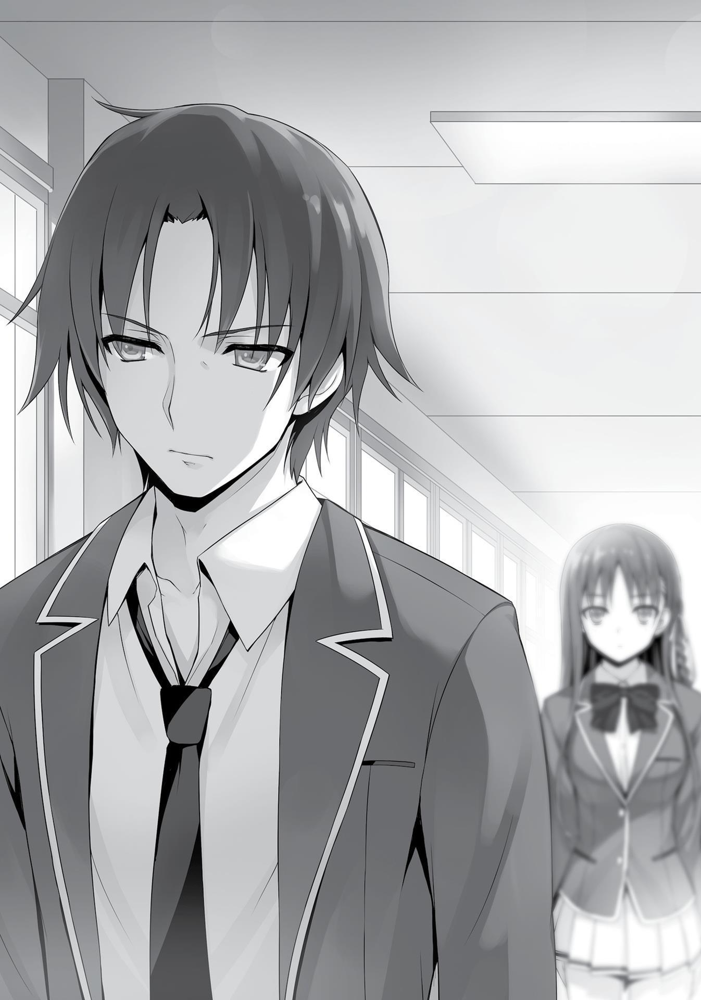
PALABRAS DEL AUTOR
Han pasado cuatro meses desde la última vez que nos vimos. Soy Syougo Kinugasa.
El calor del verano aún persiste en esta época del año, pero ¿están todos bien?
Últimamente he estado sufriendo todos los días de algún dolor sordo en mi lado derecho, dolor de espalda, y mareos que vienen de los dolores de cabeza que he estado teniendo. Voy a hacerme un examen médico completo lo antes posible. Sin embargo, realizar exámenes físicos es imposible. Soy un hombre viejo.
De todos modos, este libro se centra en un disturbio centrado en Sudou, después de los exámenes parciales. Es bastante difícil para los buscapleitos cambiar sus costumbres, ¿verdad? Además, como la clase D está llena de todo tipo de chicos problemáticos, el día en que puedan trabajar juntos todavía está muy lejos....
De todos modos, la historia progresará mucho a partir de ahora. Se podría decir que el primer acto fue una feroz batalla por los puntos de clase, ¿cierto? Creo que los compañeros también revelaron cosas sobre ellos mismos que antes no eran visibles. De todos modos, por favor, espera un poco más. Haré todo lo que pueda.
Shunsaku-sama dibujó unas ilustraciones preciosas para este libro. Casi me asfixio cuando vi la portada con Kushida. Es que tenía la mejor expresión. Fue realmente bueno, un logro maravilloso. Pero, Shunsaku-sama, ¿puedes dejar de chasquear tu lengua cada vez que aparezcan nuevos personajes masculinos en la historia? No importa cuánto te desagrade, los hombres van a aparecer,
¿sabes? De todos modos, salimos a comer yakiniku como dije (ver Novela 1).
¿Te gustó el sabor de la carne? Originalmente había planeado llevarte a un
lugar donde todo lo que puedas comer cuesta 1.280 yenes, pero después de algunas molestias, terminé pagando unos 3.980 yenes por un pedido de un yakiniku de clase alta. Debería haberlo sabido. Es la primera vez que me enfrento a semejante humillación.
Por favor, invítame la próxima vez. Me gustaría comer sashimi. Tal vez un poco de maguro, o un poco de maguro, o un poco de maguro. Mi casa está muy cerca, así que no puedes escapar.
(En el siguiente volumen informaré si he sido capaz o no de hacer que Shunsaku-sama me invite con éxito).De todos modos, los agradecimientos están abajo.
A mi editor, muchas gracias por estar encima de mí hasta que cumplí con mi plazo. Me aseguraré de devolverte tu amabilidad la próxima vez. "Y terminé el manuscrito antes de tiempo, ¿no?", es lo que diré. Estoy seguro de que definitivamente estarás impresionado. Sin embargo, si apenas puedo terminarlo antes de la fecha límite, lo siento. ¡Tee hee! ☆
Por último, a ustedes, todos mis lectores. Muchas gracias por leer la Novela 2
hasta el final. Incluso en los momentos en que mis manos no se mueven debido a (lo que es probable) mi mala salud física, el hecho de que la gente tenga este libro en sus manos y lo lea me anima a seguir adelante. Seré diligente de ahora en adelante, así que muchas gracias a todos.
HORIKITA HISTORIA CORTA
LA PREDICCIÓN DE HORIKITA SUZUNE
El sonido del gorjeo de un pájaro llegó desde mi teléfono lentamente a mis oídos.
Era hora de despertar. Miré el reloj que estaba colgado en la pared mientras me levantaba de la cama. Me desperté como siempre. El hábito que el cuerpo ha desarrollado no se puede olvidar. Este hábito no ha cambiado desde que entré a esta escuela.
Con la excepción de algunas circunstancias especiales que me hacen acostarme tarde, siempre me despierto a las 6 de la mañana.
Después de eso, arreglo un poco mi apariencia y empiezo a preparar el desayuno.
Aunque no tengo mucho apetito, he estado comiendo tres comidas al día, como resultado tengo una nutrición equilibrada, hasta el punto de vivir una vida con una buena dieta.
Después de eso, salí de la habitación a las 8 para ir a la escuela.
El orden de acciones hasta ahora no ha cambiado desde la primaria.
--Originalmente, debía ser así.
La antigua yo iba sola a la escuela, estudiaba sola, almorzaba sola, volvía a casa sola.
Esta soy yo, la vida de Horikita Suzune, y al mismo tiempo, mi naturaleza.
Las miradas de lástima que vienen de los alrededores y que me consideran una persona solitaria son simplemente entrometidas.
No, incluso una explicación como entrometidas está mal.
Puedo lograr lo que sea que haga.
Ya sean estudios o deportes, tengo la confianza de que soy superior a mis compañeros.
Y lo que es más importante, es imposible que confíe en otras personas.
Al principio, todo el mundo mostraba una buena actitud para acercarse a mí, pero se marcharon inmediatamente. Así que me alejé de los demás. Como resultado, nunca percibí soledad ni inconvenientes.
Es por eso que esta situación inevitablemente continuará. Pero últimamente, esto ha empezado a cambiar.
Dentro de mí, el ritmo de mi vida ha empezado a cambiar silenciosamente.
Siento que el tiempo que he pasado sola se ha reducido.
Sé lo que está causando esto.
Es por culpa del residente de mi asiento vecino en el aula.
Eché un vistazo al asiento de Ayanokouji Kiyotaka-kun, que aún no ha llegado a la escuela.
No sé por qué, pero no importa la actitud que adopte hacia él, su actitud nunca cambia.
Cuando nos conocimos por primera vez, se podría decir que no le causé una buena impresión. Pensé que me ignoraría rápidamente.
Cuando volví a la realidad, me di cuenta de que el tiempo que hablo con él ha aumentado.
¿Por qué es eso?
¿Por qué?
Estas preguntas me vienen a la mente en forma sucesiva, no puedo entenderlo.
Nunca he considerado a Ayanokouji-kun como un amigo, nunca.
Aunque no sé lo que piensa, sólo lo considero como una persona que se sienta a mi lado en el aula por pura casualidad.
Sin embargo, no hay duda de que mi corazón tiene otras ideas.
Ha llegado al salón de clases.
Se ve como de costumbre, yendo lentamente a su asiento sin entusiasmo.
En ese momento, mi compañera de clase Kushida-san habló con Ayanokouji-kun.
— Gracias por el domingo pasado. Realmente me has ayudado.
Ella estaba hablando mientras tenía una gran sonrisa en su cara y agitaba sus manos. Son maniobras que no puedo hacer.
— Vamos a divertirnos de nuevo en el futuro.
— Oh, oh.
Al ser tratado con familiaridad, le contestó como si pensara que eso no era nada malo.
En otras palabras, estos dos salieron a algún lugar el domingo, ¿no?
... Nada que ver conmigo.
Lo que la gente hace en el día de descanso en algún lugar no tiene ningún impacto en mi vida.
Ayanokouji-kun me saludó con una actitud rígida, diferente a cómo trató a Kushida-san.
También usé un tono igualmente rígido para responderle.
Y la conversación terminó.
— ¿Estuviste con Kushida-san el día de descanso?
Originalmente tenía la intención de terminar la conversación hace un momento, pero inconscientemente dejé salir esas palabras de mi boca.
Parece que él consideraba esas palabras como una conversación cotidiana y no me miró.
— Me pidió ayuda a causa de Sakura. Entonces no tuve elección.
Realmente trata a Kushida-san con una actitud diferente. ¿Se debe esto a la diferencia en el grado de intimidad?
— Ya veo.
No pude evitar responder con frialdad, como si él fuera un extraño.
— ¿Hay algún pro... blema...?
¿Me miró porque sintió que mi pregunta fue inesperada?
Después de eso, parecía asustado y se echó hacia atrás mientras encogía su cuerpo.
— ¿Qué te pasó?
— ¿Qué quieres decir?
No entiendo por qué actúa así.
No hay más cosas extrañas cerca.
— Ah, tienes una expresión muy aterradora.
¿Una expresión muy aterradora? ¿He puesto ese tipo de expresión?
Además, nada de lo que había pasado antes podía hacer que mi expresión cambiara.
Pero si tengo que decirlo de todas formas, es sólo que estaba un poco insatisfecha con el trato diferente que ofrece Ayanokouji-kun a la gente. Eso está mal, hay algo más. Es alguien que evita las cosas problemáticas, debería disgustarle.
Sin embargo, Kushida-san lo llamó durante el día de descanso e incluso la acompañó de forma activa. Esto realmente pone a la gente de mal humor.
Aunque no debería haber grandes variaciones en el tiempo que pasa en las conversaciones, ¿por qué?
— ¿En serio? No planeé hacerlo, es lo habitual. Sólo me lamentaba de que te hayas convertido en alguien que hace lo que le da la gana. Cuando te pedí ayuda incluso me sentí avergonzada, pero cuando Kushida-san te pidió ayuda, aceptaste fácilmente. Sólo estoy analizando tranquilamente dónde podría estar la diferencia.
¿Por qué hablé tan rápido? Ni siquiera yo podía creerme a mí misma.
Estas palabras simplemente sonaban como alguien que intentaba revelar que es deprimente.
¿Por qué es eso? Parecía como si no pudiera manejar mi insondable corazón.
Kushida-san me miraba desde muy lejos.
Después de eso, se acercó como si se hubiera dado cuenta de algo y llamó a Ayanokouji-kun hacia el pasillo.
No sabía por qué mis ojos seguían a esos dos.
— ...No me digas, ¿estoy tratando a Ayanokouji-kun como a un amigo?
Lo dije en voz baja, como para permitirme confirmarlo.
Esto no puede ser, ¿verdad?
No debería haber ningún factor para que lo trate como a un amigo.
No estoy tratando de presumir, pero ni siquiera entiendo claramente lo que es un amigo.
En otras palabras, es imposible que pueda hacer amigos ya que no puedo comprender ese concepto.
Tal vez estoy de mal humor por esa actitud suya.
Porque siempre está desmotivado, no es el tipo de persona que me agrade.
Tiene que ser eso.
Al distorsionar esa respuesta, mi corazón podía relajarse un poco.
No necesito amigos.
--La yo de aquel entonces, realmente pensaba así.
SAKURA HISTORIA CORTA
MI PROPIO LUGAR
Chabashira-sensei, la maestra de la clase D, concluyó la clase y anunció el final de las mismas.
Mirando a los estudiantes que hablaban sobre cómo pasar el tiempo después de la escuela, salí del aula en silencio.
Ya sea que asista a la escuela o durante los fines de semana, mi trabajo siempre comienza a las 4 de la tarde.
Sujetando a mi compañera con una mano, mi cámara digital, me preparé para
empezar a tomar fotos y después subirlas a mi página web.
Esta es mi tarea diaria.
— ¿Cómo debo tomar las fotos hoy?
Tengo que evitar repetir la composición mientras actualizo mis selecciones en la página de inicio todos los días, pero no puedo salir de la escuela, así que es muy difícil.
Aún así, los ambientes del campus de la Preparatoria Avanzada Koudou Ikusei son realmente abundantes.
En el campus hay un centro comercial y un cine, en el gimnasio hay una piscina, hay suficientes instalaciones, así que elegir un lugar diferente no es un reto.
... Este debería ser el caso, pero podría ser vista en esos lugares.
Porque para evitar esas situaciones, sigo sacando fotos repitiendo los mismos lugares sin nadie alrededor.
Detrás del edificio de enseñanza, dentro del gimnasio o en el centro comercial después de las horas de trabajo.
Pero no puedo decir que no hay problema mientras no haya gente.
En los lugares donde no hay gente, hay una atmósfera única de soledad.
Al tomar una foto en un centro comercial desierto, no puede evitarse que dé una sensación de tranquilidad y soledad.
Como es raro que suba fotos, realmente quiero que sean ese tipo de fotos que pueden hacer que la gente se sienta feliz después de verlas.
O aquellas que pueden curar sus almas. Aunque suene extraordinario, esos son mis pensamientos.
— No.... puede que necesite esforzarme más.
Aunque hoy era la primera vez que venía a la periferia de la escuela, el paisaje estaba un poco incompleto.
Aunque era bueno que no hubiera gente, era más aburrido de lo que predije, le faltaba encanto.
Después de eso, descubrí un pequeño edificio como una casa ensamblada.
Como tenía mucho tiempo, rodeé el edificio siguiendo la pared para examinar el lugar.
Pequeña y confortable, construida de forma muy exquisita y agradable a la vista.
Había una advertencia pegada en la entrada que decía "Aún no se permite su uso".
Traté de asomarme por la ventana pequeña.
En el interior había mesas para reuniones, sillas plegadas y un estante, pero no sabía de qué servía.
¿Utilizarán este lugar para llevar a cabo discusiones?
Sentí como si estuviera haciendo algo malo al asomarme al interior sin permiso, así que mi corazón no dejaba de latir más rápido.
Susurré “Lo siento mucho” y dejé el edificio atrás.
A pesar de que los paisajes eran algo escasos, pero con el paso del tiempo, mi evaluación también cambió.
Especialmente debido a la misteriosa atmósfera traída por el atardecer, el mismo lugar podría sentirse como un lugar diferente.
Hm.... puede ser difícil hacerlo aquí.
Tomar una Selfie cerca de una casa ensamblada bajo la luz del atardecer. Sólo por pensar en ello se siente espeluznante.
No tuve más remedio que dejar de tomar fotos, así que de camino a los dormitorios traté de hacer otra búsqueda.
Cuando volví a mi habitación, eran casi las 6 de la tarde.
Había tomado algunas fotos, pero ninguna de ellas era satisfactoria.
Tan pronto como volví a mi habitación, me quité el uniforme de la escuela y saqué mi ropa del armario.
Como último recurso cuando no puedo tomar una foto satisfactoria.
— Tal vez recientemente mi pecho se ha vuelto más grande...
Mirándome con ropa interior reflejada en el espejo, no pude evitar sentirme deprimida y suspirar. Para alguien como yo que no está acostumbrada a llamar
la atención, realmente odiaba tener un pecho grande.
No importa lo que sea, siempre estoy consciente de las miradas que los chicos me dirigen... Hoy un tipo me ha mirado con una extraña expresión.
— Ah...
No puedo, no puedo. Si pienso en estas cosas, afectará a las fotos.
Me dije a mí misma “sonríe, sonríe”, y revelé una sonrisa.
— Sí. Está bien así.
Después de recuperar un poco de confianza en mí misma, me puse mi ropa una vez más.
Luego utilicé el modo de temporizador para tomar fotos mientras hacía algunas poses.
No importaba cuando, siempre tenía una expresión viva y alegre, sólo la seriedad de mis ojos no desaparecía.
— Aunque me era imposible tomar fotos de mí en el pasado...
En aquel entonces ni siquiera podía ver mi propia sonrisa, y mucho menos tomar una foto para que los demás la vieran.
Pero ahora, es muy emocionante estar inmersa en este tipo de cosas.
Me siento muy feliz cuando hago fotos.
Después de experimentar esto, me di cuenta de que los intereses de la gente son muy diferentes.
Después de haber luchado durante unos 30 minutos y de haber tomado la última foto, encendí mi computadora para validarlas. Incluso si no era muy buena para realizar estas tareas, me esforcé por aprender a hacerlo.
Pero sólo hasta el límite de guardar y duplicar y añadir algunas decoraciones.
Aun así, la sensación cambia súbitamente al hacerlo.
— Esto está bien.
Escogí la mejor foto y la subí directamente.
Mientras haga feliz a un fan, estaré satisfecha. Aunque haya 100 críticas, 1
elogio es suficiente para abarcarlas todas.
— ¿Qué debo escribir...?
Aunque la carga de una foto se hacía muy rápido, la actualización del contenido de la página principal requería mucho tiempo.
No tengo amigos y no tengo a nadie para mantener una conversación. Por miedo a tener contacto visual con los demás mientras hablo con ellos, siempre bajo la cabeza. Por eso no pude escribir nada interesante.
Pero no puedo escribir una redacción lúgubre, ni cosas falsas. Es tan difícil.
Es por eso que yo... escribiré mi perspectiva.
Espero que mañana sea un día feliz y pacífico para todos.
Espero que todos puedan pasar el día con una sonrisa.
Escribí este deseo.
IKE HISTORIA CORTA
DELIRIO COMÚN
Antes de las 9 de la noche. Me levanté de la computadora después de comprobar el clima para mañana.
Algo que rara vez se veía ocurrió, Ike me llamó por teléfono. Una situación raramente vista de alguien no me llamaba ni una vez al mes.
— Oye, Ayanokouji, ¿te has despertado?
Los que están durmiendo en este momento sólo pueden ser estudiantes que han pasado toda la noche preparándose para un examen y los ocupados trabajadores del personal.
— En realidad, me preocupa lo que debería comer de postre esta noche.
— No me llames para estas cosas... ¿no has cenado todavía?
Recordé que el comedor del dormitorio cierra a las 9 de la noche. Las opciones restantes serían sólo la tienda de conveniencia.
— Idiota, no es eso, es el postre que todos los hombres desean. ¿Me entiendes?
¿El postre que todos los hombres desean? …
¿Hay algo que sabe diferente por ser de un género diferente?
Desafortunadamente, nunca he oído hablar de ello.
— Ayanokouji. Estás siendo un hombre cada vez más aburrido.
Me dolió porque fue un amigo quien dijo esto sin consideración. Aunque sé que soy aburrido, pero si me lo dicen directamente en la cara, lo tomaré muy en serio.
— Acabas de levantarte de la computadora, ¿verdad? Entonces déjame darte un postre especial.
Me envió algo a través de la ventana de chat del programa de llamadas telefónicas por Internet basado en tecnología p2p. En su interior pegó una URL
extrañamente grande. ¿Este es el postre?
— ¿Por qué no lo abres y le echas un vistazo? Después de todo, es el mejor postre.
Todavía albergando sospechas, intenté hacer click en él, y mostró el contenido del enlace.
Lo que apareció fue la foto de mi compañera de clase Sakura Airi en traje de baño. Era difícil creer que alguien de su misma edad tuviera un cuerpo con un pecho tan desarrollado y una cintura tan delgada.
Creo que no importa el tipo de caballero que seas, la mirada estará pegada a la pantalla.
— Encontré su página web. Esta foto fue tomada durante el tercer año de secundaria. ¿Puedes creerlo?
Increíble.... incluso las figuras de estudiantes de preparatoria palidecen en comparación con esto.
Pero después de verlo, finalmente lo he entendido. Así que por postre se refería a esto....
— Piénsalo con calma, ¿no es esto súper bueno? Después de todo,
¡tenemos una ídolo de revista en la clase! Si se combina con esta foto, tendrás todo tipo de delirios.
Aunque lo digas como si estuvieras alardeando, sigo sin poder entender este
tipo de emoción.
Sentirme feliz por tener una chica guapa en la misma clase y sentirme más feliz cuando la conoces... Todavía no entiendo muy bien el estado de ánimo de los chicos y chicas.
Dejando a un lado mis pensamientos, Ike miraba a solas la foto con mucho ánimo.
¿Qué pensaría Sakura si supiera que se le trata como postre?
Apuesto a que no sería “Ya estoy acostumbrada” y se acabó.
Pero olvidémoslo.... por el momento, guardemos esta foto. Guardar esta imagen no es hacer cosas malas.
Mientras presto atención a no dejar que Ike lo descubra, pongo la foto dentro de una carpeta.
Historia Corta
Ah, una página de la juventud
(Historia corta contenida en el Libro de Arte desarrollada entre el volumen 2 y 3).
Preparatoria Koudo Ikusei. Se trata de un centro educativo que nunca se había visto hasta ahora, especialmente creado por Japón, que se estaba quedando rezagado en la comunidad internacional, con el fin de restaurar su antigua gloria.
Esta escuela, fundada con el fin de cultivar a jóvenes excelentes, ha recibido mucho interés tanto en el país como en el extranjero.
Debido a que las instalaciones se encuentran lejos del centro de la metrópoli, es extremadamente incomodo hacer contacto con el interior de la escuela. Sin embargo, en su inmensa cimentación están tan orgullosos de ello, ocupa una inmensa área, los estudiantes pueden vivir en la zona residencial dentro de las instalaciones y pasar una vida cómoda desde el momento en que entran en la
escuela hasta su graduación. Sin mencionar la tienda de conveniencia y el karaoke, cines, centros comerciales e instalaciones similares, todos ellos parecen haber formado una calle. Como resultado, no sienten ninguna molestia.
Y un paso más allá, para satisfacer las condiciones especiales de la institución, garantizan que, después de la graduación, las personas puedan optar por ingresar a cualquier escuela de grado y lugar de trabajo.
Además, la escuela ha adoptado el sistema de puntos S. Aunque sólo se pueden utilizar dentro de la escuela, los estudiantes reciben una gran cantidad de dinero cada mes de la escuela.
Gracias a que la escuela recibe apoyo total del país, las cuotas escolares están exentas.
Como estudiante de primer año de la clase D que asiste a esta escuela y recibe atención de ellos - Ayanokouji Kiyotaka.
Ese soy yo. Mi día comenzó frente a este ascensor.
Me froté los ojos soñolientos mientras esperaba el ascensor.
Aunque había dos ascensores, la situación por la mañana siempre era extremadamente caótica. Por el hecho de que las chicas que viven en los pisos superiores se subían a él, no era extraño que el ascensor ya estuviera lleno cuando llegaba aquí.
Como ceremonia de clausura del curso escolar en agosto ya estaba ante nuestros ojos, este día llegó especialmente tarde. Aunque los chicos que no podían esperar corrían por las escaleras, yo no quería desperdiciar la energía en hacer esas cosas que no tenían sentido.
Estaba jugando con mi teléfono mientras esperaba y finalmente llegó el ascensor.
— ...Wuaaaa...
Me di cuenta de la atmósfera y de las 3 chicas aterradoras que viajaban juntas dentro del ascensor. Frente a esta inesperada reunión, mi cuerpo se puso rígido inconscientemente.
— ¿Entras? ¿O no?
Como si las opciones del paraíso o del infierno me presionaran, la chica que tenía el dedo en el botón de "cerrar" del ascensor era Horikita Suzune. Si no
hablara sería una chica guapa con el pelo largo y negro, pero su personalidad es extremadamente espantosa. Y ella es una persona completamente aislada.
No sólo no se hace amiga de nadie, sino que también tiene una actitud negativa hacia la comunicación social. Pero ella está bien versada tanto en estudios como en artes marciales, puede hacerlo todo sola. En otras palabras, no tiene problemas en el aspecto de la supervivencia. Es este tipo de chica.
— No, voy a entrar.... por favor, déjame entrar.
Tomé el ascensor un poco incómodo junto con mis compañeras de clase que ya estaban en él.
— Buenos días, Ayanokouji-kun. Ah, tu pelo de atrás se está levantando un poco.
— Este es el estilo de peinado natural que es muy popular hoy en día.
— Jaja, Ayanokouji-kun, eres muy divertido.
Sólo ella se rió, las otras dos personas detrás no reaccionaron en absoluto.
Más que eso, sentí desde atrás una especie de mirada fría que decía "¿de qué cosa aburrida está hablando este tipo?
Era como esa sensación de ir solo al comedor de la escuela y ser excesivamente tímido pensando que estabas recibiendo la atención de la gente que te rodea.
La única que usó una linda sonrisa para responderme mientras actuaba estúpidamente fue Kushida Kikyo. Tiene el pelo corto y se rumorea que es muy popular entre los estudiantes de primer año. Es una chica que puede tratar a todo el mundo con delicadeza. Sus estudios y habilidades físicas también son bastante buenas. No tiene ningún aspecto que criticar. Y su pecho está bien desarrollado. Más grande que el de Horikita. En un juego ella sería la existencia más necesaria. Sólo eso, Kushida también tiene un lado oscuro que nadie conoce.
Ser alegre y gentil es sólo la apariencia externa de Kushida, su otro lado es muy aterrador. Fue capaz de decirnos a Horikita y a mí “te odio” con una expresión seria, sin preocuparse por nuestros sentimientos. No conozco los detalles específicos.
— Buenos días, Ayanokouji-kun...
También había otra persona. La chica que estaba en una esquina detrás de
esas dos personas era Sakura Airi. Aunque suele llevar gafas falsas y es extremadamente tímida con los extraños, en la secundaria tuvo experiencia como ídol de revista. Los chicos que conocen su verdadera identidad la evalúan como una verdadera belleza. Pero también es extremadamente tímida con los extraños cuando no lleva gafas.
Cuando llegamos al vestíbulo, inevitablemente se convirtió en una situación en la que cuatro personas van juntas a la escuela.
Los estudiantes de primer año viven en el mismo dormitorio sin importar el género y usan el mismo camino para ir a la escuela.
— Nunca he visto esta combinación antes, es realmente un grupo extraño.
Sin contar que Kushida, Horikita y Sakura solían actuar solas, ahora mismo iban juntas, así que no podía ser una coincidencia.
— Me involucré con Kushida-san.
— ¡Involucrarse, esas palabras duelen un poco....!
— ¿Qué quieres decir?
Busqué una respuesta adecuada de Sakura ya que no podía entender la situación.
— Esto, eso, esta mañana, Kushida-san vino a mi habitación a buscarme....
dijo que tenía algo importante que discutir...
Discutir, aunque estaba esperando a que ella continuara hablando, su volumen bajó tanto que ya no podía oírla claramente.
— ¿No nos vamos de viaje muy pronto? Por eso quería invitarlas a ir todas juntas.
Parece que contestó para ayudar a la Sakura. Ya veo. Después de todo, ir solo mientras viajas sería muy solitario.
Los alumnos de primer año tenían previsto participar en el lujoso crucero organizado por la escuela.
Supongo que Kushida saludaba enérgicamente a la gente para evitar la aparente soledad dentro de la clase.
— Aun así, ¿está bien esperar frente a la puerta de otras personas sin permiso?
— Ayer te saludé cuando volvíamos y dijiste que estabas ocupada, así que lo rechazaste... así que si es por la mañana, tendrás tiempo, ¿no?
La ruta entre el dormitorio y la escuela es de unos pocos minutos. Aún así, en estos pocos minutos también se pueden discutir las cosas.
Kushida debe haberse dado cuenta, así que actuó de esta manera.
— Dices que el viaje, pero son sólo dos semanas. Dices que vayamos juntas, pero no hay nada en particular que hacer.
— Nada de eso. He oído que el barco es extremadamente grande y que estar solo sería muy solitario. Sakura-san, también deberías venir e ir con mi grupo, ¿está bien?
— No soy muy buena en...
Por supuesto, también sabía que Sakura no era buena en las relaciones humanas.
Por eso, Kushida, que podía establecer una buena relación con cualquiera, tomó la iniciativa y tendió la mano hacia la Sakura.
Sólo eso, sólo una persona era incapaz de sostener esa mano.
— Sakura. También hay mucha gente que es fácil de tratar en el grupo de Kushida. Creo que es una oportunidad difícil de encontrar.
La cubrí un poco instando a la Sakura a que participara.
— Ayanokouji-kun, tú también vas con Sudo-Kun y los otros, ¿verdad?
— Sí. Ya hemos planeado algunas cosas. Después de todo, ir solo sería muy solitario.
Estaba mintiendo. Sin embargo, si al hacer esto conseguía que el corazón de Sakura se sintiera más relajado, entonces valía la pena.
— Aunque creo que el problema radica en la idea de que estar solo sería una experiencia solitaria.
Sabía que sería así. Horikita interrumpió la conversación sin leer la atmósfera.
— ¿Es eso cierto? ¿No son todos más felices juntos? Es sólo eso, ¿sabes?
— Si alguien sólo puede arreglárselas permaneciendo en la comunidad, entonces la existencia de esa persona es incompleta.
Aunque Horikita nunca se interesa en otras personas, se preocupa mucho por este punto.
La situación de esta persona no es estar sola o aislada, sino considerar su arrogancia como una creencia.
— Horikita-san, ¿quieres venir con nosotras?
— No.
Inmediatamente rechazó la invitación de Kushida. Kushida también estaba acostumbrada y se retiró con una sonrisa en la cara, pero después habló.
— Vayamos juntas, ¿de acuerdo?
— No es necesario...
Ante la invitación que venía de ella con una sonrisa brillante, Horikita la rechazó dándole la espalda.
— Buenos días, Kikyo-chan. ¡Horikita-san y Sakura-san también están aquí!
Bang - como si estuviera presionando contra mi espalda, una chica animada apareció en la escena. Largo pelo rosa ondeando en el viento, ella era la estudiante de la Clase B Ichinose Honami.
Como resultado de la incorporación de una chica animada, Sakura se marchitó aún más y se acercó un poco más a mí. Teniendo dificultades incluso cuando se relaciona con personas del mismo sexo, seguro que lo tiene difícil.
— Qué, qué, esta es realmente una combinación rara vez vista. ¿De qué están hablando? Déjenme unirme.
— Verás, ¿no es pronto el viaje de dos semanas? Después de todo, es difícil de alcanzar, así que estábamos discutiendo sobre dónde ir. Si es posible, Honami-chan también puede venir con nosotras.
— Wa, ¿en serio? ¡Iré, iré!
Aunque estas dos personas pertenecen a clases diferentes, parece que su relación es en base a su nombre.
Pero, de nuevo, esta chica llamada Ichinose es especial. En esta escuela, debido a las reglas especiales con otras clases, incluso si esta escuela es donde todo el mundo está asistiendo, todavía hay una gran conspiración.
Es decir, es un sistema en el que se realiza un ranking a los alumnos y se les asigna en diferentes clases de acuerdo a su "fuerza".
Los estudiantes excelentes son asignados a la clase A, los estudiantes deficientes son enviados a la clase D. Después de la graduación, los que reciben atención son sólo de la clase A, por lo que en la práctica la clase D es insignificante.
Sin embargo, lo que es complejo es que la fortaleza de las habilidades
académicas no es igual a fuerza. Aunque el deber del estudiante es estudiar, esta escuela no juzga a los estudiantes en base al desempeño de los exámenes escritos. La prueba de ello es que Horikita, Kushida, y también las habilidades académicas de Sakura no son en absoluto bajas. Aunque cada persona tiene sus partes defectuosas... yo incluido.
— También quiero charlar un poco más con Horikita-san y Sakura-san. Estoy deseando que empiece.
Parece que Ichinose realmente está pensando en interactuar con estudiantes de otra clase, su cara estaba llena de emoción.
— No estaré con todos ustedes.
— Eh, ¿es así...? ¿Ya tienes planes?
— No, no me interesa.
Incluso si la otra persona es Ichinose, la actitud de Horikita no cambia. Más bien, su rechazo fue aún más fuerte.
— Jajaja, ya veo. Realmente se siente como el estilo de Horikita-san.
Entonces si es posible, si tienes tiempo durante el viaje, no te olvides de contactarme. En ese entonces ya quería darte mi dirección de correo electrónico.
Ella era diferente de Kushida, Ichinose no se aferró a ella e inmediatamente se retiró. Ichinose sacó un papel de su mochila, escribió su dirección de correo electrónico y se lo entregó a las dos personas. Sakura, que por lo general nunca consigue que alguien le entregue su información de contacto, no pudo quitarle los ojos de encima a ese pedazo de papel.
— Eres realmente una buena persona. ¿No es mejor ignorar a gente como yo?
— ¿Ignorar? Parece que esta forma de hablar no es adecuada para estudiantes que quieren disfrutar de la juventud.
— No te preocupes. No pretendo disfrutar de la juventud. Además, comparado con pasar un momento aburrido charlando conmigo, ¿no es elegir ignorarme una forma más efectiva de administrar el tiempo?
— Es precisamente esto. Cada vez que Horikita-san me ignora, hace que la gente no tenga otra alternativa.
— Jaja. Horikita-san es un poco arrogante, pero no es algo malo. Aunque Horikita-san, has dicho que no necesitas la juventud, pero creo que no puedes estar segura de ello. Horikita-san puede que no quiera disfrutar de la juventud, pero en este preciso momento, esto es la juventud.
Horikita escuchó las palabras de Ichinose en silencio.
Por otro lado, Sakura, que básicamente no hablaba y no sabía si había escuchado sus palabras, estaba murmurando suavemente.
— En este mismo momento... esto es la juventud...
Alguien que no tiene muchos amigos no tiene ninguna oportunidad con la juventud. Supongo que estaba pensando eso.
La chica que creía que no lo necesitaba y la chica que pensaba que no tenía ninguna oportunidad con la juventud. Incluso si ambas tenían razones diferentes, la conclusión a la que llegaron debe ser similar. Ichinose agarró el hombro de Kushida y cerró la distancia con Horikita.
— Ahora mismo estoy aquí, Kikyo-chan está aquí, Sakura-san también está aquí. Y Horikita-san también está aquí. Hablando de cosas sin sentido mientras vamos a la escuela. En el futuro definitivamente pensaremos que esto es la juventud.
— Tratando de negar los eventos futuros... eso no servirá. Eso es algo que ni siquiera Dios puede hacer.
Horikita dejó de cuestionar a Ichinose. O debería decir que se rindió.
Ya sea que se relacione o no con sus expectativas, si quiere disfrutar de la juventud, entonces no se puede negar.
Aunque soy igual que Horikita, todavía no soy capaz de entender el significado de la juventud, pero sentí que lo entendía hasta cierto punto. La escena ante mis ojos en este momento tiene que ser una página de la juventud.
¿Cómo debería decirlo? Estaba en una escena tan increíble.
Mirándolo, esta era una escena increíble de un chico ubicado entre cuatro chicas.
Mi existencia era aún más conspicua que la del Ranger rojo en el escuadrón Sentai.
— ... En serio, tan anticuado.
Pensando que no debería estar aquí, me quedé callado.
Sentí hasta cierto punto que estas cuatro personas en un futuro no tan lejano se convertirán en muy buenas amigas.
Si va a ser así, no puedo molestarlas ahora.
Aunque estaba pensando así...
Kushida se dio cuenta de que estaba parado en el lugar inicial. Esta acción fue transmitida a las 3 personas restantes, todas dejaron de caminar y giraron sus cuerpos para mirarme.
— ¿Qué sucede? Ayanokouji-kun. ¿Olvidaste traer algo?
— ¿Eh? Ah, no...
— Hoy no tenemos clases. No debería haber ninguna cosa en particular que
necesitemos usar.
— ¿Te sientes.... mal...?
— Si lo tuviera que decir, has estado distraído desde el principio, contrólate.
Cada una de las chicas de la clase D usó su propia manera de mostrar sus preocupaciones y habló conmigo.
Al ver esta situación, Ichinose, satisfecha, mostró una sonrisa aún más brillante.
— ¿Puede ser una enfermedad? ¿O te sientes excluido?
— …
— Ah, ¿estoy en lo cierto? No pasa nada, Ayanokouji-kun, también eres una página de nuestra juventud.
Diciendo esto, corrió hacia mí, me agarró de la muñeca y me arrastró suavemente.
Planeaba quedarme allí y sin embargo fui arrastrado por Ichinose fácilmente como si me faltara fuerza.
— Está bien, está bien, si no te apuras te dejaremos aquí...
Tal vez me introduje inadvertidamente en esa juventud. Pero la distancia para el momento en que pueda obtener la respuesta sigue siendo remota. ¿Un año?
¿Dos años?
¿O tal vez en el momento en que me gradúe de esta escuela? Es difícil de decir ahora mismo.
Sin embargo, el día en que pueda sentir claramente que este tipo de momento es algo precioso e irremplazable, definitivamente llegará.
Esta premonición brotaba en lo más profundo de mi corazón.
HISTORIA CORTA
DOS PERSONAS CON UNA MALA RELACIÓN
(Esta historia se desarrolla en el volumen 1 o 2 después de que Kushida les revela que odia a Horikita)
Esto sucedió cierto día. La inminente pausa para el almuerzo hizo que la Clase D se sumiera en un caos.
Lo que lo inició fue Ike gritando
— No tengo puntos~.
Como consecuencia de agotar los valiosos puntos personales, todo el mundo se encontraba en una situación de escasez. Incluso la ansiedad por el desayuno del día siguiente continuaba.
Por supuesto, si uno no desea llevar un estilo de vida extravagante, también puede elegir entre las comidas gratuitas.
Pero existen cosas en este mundo que no quieres comer aunque sean gratis.
Especialmente para aquellos que están acostumbrados a comer comida chatarra, una comida saludable con hierbas como plato principal era escasa y no lo suficientemente deliciosa, y era muy fácil cansarse de ellas.
Hirata, que ya no podía soportar ver esta situación, junto con la heroína femenina Kushida Kikyo, pusieron en marcha un cierto plan en el aula durante el fin de semana.
Se llamaba “El día de traer tu bento”.
Significaba literalmente esas palabras, cada uno tenía que preparar su propio bento.
Supongo que la razón era ahorrar en gastos de comida y al mismo tiempo interactuar con la clase.
— ¿Trajeron todos su bento?
Cuando llegó la hora del almuerzo, Kushida intentó confirmarlo.
— ¡Lo traje! ¡Démonos prisa y comamos todos juntos, Kushida-chan!
El animado Ike se movía vivazmente. No era uno de esos personajes que normalmente preparan su bento, pero parece que se levantó temprano y lo preparó para acercarse a Kushida.
Este día de traer tu bento no era obligatorio. Después de todo, no podían hacer que todo el mundo participara en él a la fuerza, y también había estudiantes que todavía tenían una gran cantidad de puntos. Los participantes no constituían ni la mitad de la clase.
— Así que también has traído tu bento.
Horikita Suzune, que estaba sentada a mi lado, sacó en silencio una pequeña caja de bento.
— No lo hice por esta farsa... esta actividad.
Como la veía trayendo bento regularmente todos los días, esto era lo habitual para ella.
— Entonces todos vamos al patio.
Hirata y los demás se llevaron a los participantes y abandonaron el aula.
Por otro lado, Horikita no demostró que quisiera seguirlos, sino que quería comerse el bento dentro del aula.
— Horikita-san, ¿no quieres que comamos juntas?
Kushida, que vio esta situación, se paró frente a ella y usó su linda mano para evitar que Horikita-san empezara a comer.
— ¿Qué?
— Ya que Horikita-san también hizo un bento, vamos a comerlo juntas.
— Permíteme negarme. No estoy interesada.
— Comer con todos hará que sepa mejor.
— El sabor no cambiará según el número de personas. Ahora que lo sabes,
¿puedes retirar la mano?
Horikita no planeaba escuchar las palabras de Kushida y la rechazó.
Después de todo, esta persona nunca pensó en comer bento con sus compañeros de clase.
Viendo que Kushida estaba un poco desamparada, decidí echarle una mano.
Por supuesto, aunque no sabía si podría tener éxito o no, no hice un ataque frontal. Después de todo, aunque lo hiciera y le preguntara a Horikita, tampoco estaría de acuerdo.
— Kushida, ¿también trajiste tu bento?
— Sí. Puse un poco de esfuerzo y entusiasmo para hacerlo.
— Aunque no he visto el bento de Kushida, pero comparado con Horikita, Kushida es mejor cocinando.
— Oye, eso no es verdad. Después de todo, Horikita-san parece muy hábil.
— No creo que sea torpe, pero Kushida parece ser mejor.
Nos hacíamos eco con Horikita en medio.
— No he dicho nada desde el principio, pero un vecino insignificante seguro que está actuando con arrogancia.
Me dirigió una aguda mirada. Parece que ha conseguido sus resultados.
— ¿Entonces estás insinuando que eres mejor cocinando?
— Definitivamente no sabría nada de eso. Después de todo, nunca he
competido con nadie. Pero fue algo inesperado, ya que por eso me consideran inferior a ella.
— Entonces, ¿por qué no intentas probarlo? Kushida también trajo un bento.
Normalmente Kushida no traía bento. Así que no había muchas oportunidades.
— Qué aburrida y obvia provocación.
Sin embargo, Horikita suspiró y bajó la cabeza, como si se hubiera quedado sin palabras.
...¿No funcionó?
— Pero, sí puedo. Puedo probarlo una vez para que puedas verlo. Sólo eso,
¿podemos acordar que dejarás de molestarme después de esto?
Obviamente sabía que era una provocación y sin embargo aceptó voluntariamente.
No quiere perder sin pelear. Su competitividad se disparó.
No permitió que abriera la caja del bento, la agarró y se puso de pie.
Mis ojos se encontraron con los de Kushida por un instante, como si estuviéramos transmitiendo el mensaje “todo va bien”.
Llegando más tarde que Hirata y los demás, los tres fuimos juntos hacia el patio.
Aparte de los estudiantes de la clase D, había muchos otros estudiantes reunidos allí.
— Hay demasiada gente aquí.
En todas las bancas había gente sentada, no había asientos vacíos.
— Es una pena. Como no hay lugares vacíos, no se puede evitar. Vamos a competir la próxima vez.
— ¿Quieres huir?
— Si no hay lugares vacíos, entonces no podemos hacer nada, ¿verdad? El tiempo es limitado y no tengo tiempo para esperar a que un asiento quede libre.
Como si se estuviera burlando de las palabras de Horikita, una banca quedó vacía.
— ...Obviamente no necesitabas tener tanta prisa.
¿Fue por descuido que dijo lo que pensaba? Horikita parecía muy insatisfecha.
Kushida se sentó en la banca.
Pensé que Horikita, después de ver a Kushida hacer eso, se sentaría a su lado, pero al final se sentó de espaldas a Kushida. Debe ser porque no quiere que los demás piensen que se ha hecho íntima de Kushida.
— Entonces iré a la cafetería.
No fue un problema seguirlas hasta este lugar, pero desafortunadamente, no traje un bento. Después de todo, es inútil quedarse aquí.
— Espera un momento. Si no estás aquí, ¿quién va a ser el juez?
— Juez... ¿realmente planeas decidir quién es mejor?
— Fuiste tú quien propuso esto. Sólo quería demostrar que no soy inferior a ella en la cocina.
Ella insinuó: “Por eso he venido al patio”. Es realmente dura.
— Entonces date prisa y come.
Por otro lado, Kushida parecía muy satisfecha porque consiguió que Horikita llegara al patio con éxito. Tarareaba una canción mientras sacaba su caja de bento. Esa caja era tan pequeña que no pude evitar preguntarme si era suficiente para que una persona comiera.
Horikita sacó una envoltura triangular de su bento.
— ¡Vaya, eso es increíble, Horikita-san es muy formal! ¡Se asemeja a los que venden en las tiendas!
Era un sándwich. Originalmente había sido envuelto con una película de plástico, pero Horikita usó un empaque en forma de sándwich con cierre.
— Eso no lo compraste en una tienda, ¿verdad?
— Mira con atención. No es algo que se pueda comprar.
Me miró con una expresión algo insatisfecha. Por supuesto, también era consciente de cómo era el bento comprado en las tiendas. Sólo que logró que se viera tan bien que era inevitable que alguien pensara así.
Por otro lado, ¿qué tal Kushida? Parece que Horikita también tenía curiosidad y trató de asomarse al de Kushida.
— No lo hice para enseñárselo a otras personas, así que lo encuentro un poco vergonzoso.
Parece que le preocupan nuestras miradas, Kushida dudó un poco.
— Está bien si quieres admitir la derrota de esta manera. Después de todo,
abandonar también es una buena razón.
— Entonces haré lo mejor que pueda, lo sacaré y te lo mostraré. Por favor, míralo.
Kushida, un poco humildemente, abrió la pequeña tapa.
Lo que se podía ver era un bento de aspecto delicado y perfecto. Se puede considerar como los embutidos y huevos fritos estándar, y con un poco de verdura.
Si uno pudiera hacer que trajera este bento, entonces uno estaría deseando que llegara la hora del almuerzo todos los días.
— Sería mejor si pusiera un poco de esfuerzo extra en ello.
Aunque dijo que, teniendo en cuenta los utensilios del dormitorio y sumado a la actual situación de escasez de puntos, éste era el bento de mayor calidad.
Especialmente la habilidad de cocinar que se reflejaba en el control del calor mostrado por el huevo frito podría considerarse como lo mejor de lo mejor.
— Entonces, em, examinador Ayanokouji-kun. Por favor.
Me entregó su caja de bento. Si esta escena fuera vista por Ike, sin duda sería asesinado por él.
Que me dé su bento de esta manera, ¿qué debo comer?
— ¿Qué quieres comer?
En esta situación, realmente necesito elegir el huevo frito, lo que mejor muestra las habilidades culinarias. Kushida me dio un lindo par de palillos. Los usé para coger un trozo y me lo llevé a la boca.
— ¿Cómo sabe...?
El uso de azúcar granulada en lugar de sal como condimento también merecía elogio. Estaba realmente delicioso.
Pero aun así no podía dejar que la evaluación se reflejara en mi expresión.
— Más o menos he captado la habilidad de Kushida.
Tomé un pedazo de sándwich que ya estaba listo para ser ingerido y me lo puse en la boca.
— ...Ya veo.
Después de comer el sándwich, cerré los ojos.
— ¿Qué te parece, Ayanokouji-kun?
— ¿Cuál es mejor? Sé honesto.
— Pero, eso es algo. ¿Puedo decir mis impresiones sinceras?
Por supuesto, ambas asintieron. Así que le respondí honestamente.
— Sus estilos y los ingredientes que usaron las dos son diferentes, es imposible de comparar. Si hubiera uno que supiera mejor o peor, entonces podría haber determinado cuál es superior, pero los dos eran de primera clase.
Hasta ahora, sólo podía decir que ambos estaban deliciosos.
— Excusas.... a pesar de que quería decir eso, pero puede que realmente sea así.
Si no podían aceptar este veredicto, entonces sería como preguntar qué sabía mejor, la comida japonesa o la comida occidental.
— Es una pena, Kushida-san, parece que ambas partes han perdido su espíritu de lucha. Aunque no planeé perder contra ti, digamos que fue un empate.
Kushida mostró una expresión de pensar “así está bien”, y puso su mente a descansar.
Si decidiera precipitadamente el resultado aquí, y también determinara la victoria de Kushida, Horikita odiaría aún más a Kushida. Como resultado, sería imposible que se hicieran amigas.
Pero por otra parte, aunque las dos tienen personalidades opuestas, no es necesario dudar de sus habilidades culinarias.
Kushida es ciertamente alguien muy popular, si Horikita tuviera una mejor actitud, también atraería el interés del sexo opuesto.
— Dicho esto, Kushida-san. ¿No tenías algo que decirme?
— ¿Eh? ¿A qué te refieres?
— Si no, entonces está bien. Sólo quería confirmarlo.
Sin embargo, no fui tan lento como para no entender sus palabras.
Aunque esta chica Kushida es apreciada por todo el mundo y a ella también le agradan los demás, su actitud hacia Horikita es diferente.
Aunque no sabía el por qué, tenía una buena razón para odiar a Horikita.
Tenía mucha curiosidad sobre el por qué seguía conteniéndose y quería seguir teniendo contacto con Horikita.
Pero después de que Kushida me mostró una sonrisa, contestó con su tono habitual.
— No hay nada en absoluto. Es sólo porque quiero tener una relación pacífica con Horikita-san.
Una respuesta muy ambigua.
Parece que Horikita también entendió que el tema no iba a progresar, así que no hizo más preguntas.
El viento soplaba hacia nosotros.
— Ah, son flores de cerezo...
Cuando escucharon mis palabras, las dos se giraron.
Los pétalos de las flores de cerezo bailaban en el aire.
— Es realmente elegante.
Horikita, que había mantenido una cara inexpresiva, mostró una sonrisa después de ver las flores del cerezo.
— No ha sido en vano venir voluntariamente al patio.
Tal vez soy la primera persona que se las arregló para ver a estas dos personas sonriendo al mismo tiempo.
Sería estupendo que un día ellas dos se dieran la mano y tuvieran una relación en la que pudieran mostrarse una verdadera sonrisa al mismo tiempo.
Mientras pensaba en eso, también me imaginaba la vida escolar en el futuro.


VISÍTANOS EN NUESTROS
DIFERENTES SITIOS
http://gladheimtranslations.blogspot.mx/
https://twitter.com/GladheimT
https://mastodon.social/@GladheimT
Si alguien desea hacer una donación
https://ko-fi.com/gladheimtranslation
https://www.buymeacoffee.com/gladheimtls
https://patreon.com/GladheimT